Getting Started
What is Treasury Hub?
Who this is for: everyone using the platform.
Overview
Treasury Hub is a Treasury Management System (TMS) that gives your organization a single,
real-time view of cash and financial operations across every bank, currency, and legal entity you
work with. Instead of logging into many bank portals, stitching together spreadsheets, and
reconciling statements by hand, your team works from one platform that ingests data automatically,
reconciles it, and turns it into reporting, payments, and decisions.
It is built for organizations that manage multiple bank accounts across multiple institutions,
currencies, and companies — corporate treasuries, finance teams, and financial institutions.
The problem it solves
Corporate treasury is usually fragmented:
- Accounts spread across dozens of banks, each with its own portal and file format.
- Balances and movements arriving in different formats (MT940, CAMT.053, BAI2, CSV, PDF…).
- Manual, error-prone reconciliation and month-end close.
- No single, trustworthy, real-time cash position.
Treasury Hub consolidates all of this into one place and automates the flow from raw bank/ERP
data → normalized data → reconciliation → reporting, payments and accounting.
Treasury Hub is AI-native and end-to-end — data flows from your sources all the way to the
screens you use, and AI assistance is available across every layer.
- Sources — where your data comes from: banks, core banking, PSPs, ERPs, trading venues,
files, email, and more.
- Integrations — the connectors that bring that data in (SWIFT, Open Banking, APIs, file
import, email/SFTP ingestion) and send data out.
- Data layer — everything is normalized, unified, and enriched into consistent entities
(accounts, movements, invoices, deals, loans, investments…).
- Workflow layer — orchestrated, configurable, auditable processes run on top of that data
(payments, FX, reconciliation, approvals, reporting).
- Modules — what you actually see and use: dashboards, reconciliation, payments, reporting,
risk, accounting, and administration.
A transversal AI layer and a set of platform services (integrations, workflows, agents,
admin/UI) are shared across every module — there are no per-module silos.
What you can do with it
One platform to run treasury end to end — from the moment bank and ERP data lands to the
reconciliation, reporting, payments, and decisions you make on it.
- See every account in real time — one live, consolidated cash position across banks, currencies,
countries, and companies, instead of logging into portals and stitching spreadsheets together.
- Connect to everything, automatically — SWIFT, Open Banking (PSD2), NetSuite ERP, inbound APIs, and
file feeds by Email or SFTP bring balances and movements in with no manual downloads.
- Normalize any format — MT940, CAMT.053, BAI2, CSV, PDF, and more are parsed into consistent
accounts, movements, invoices, deals, loans, and investments.
- Reconcile automatically — rule-based and AI-assisted matching across bank ↔ ERP ↔ internal
records, with configurable reconciliation workflows and an exceptions queue for the rest.
- Pay with control — initiate single or batch payments against known payees and their settlement
instructions, with multi-level approvals, threshold rules, and full status tracking.
- Report, forecast, and model — standard reports and build-your-own, cash position, cash forecast,
actual-vs-forecast, operations blotters for FX, loans, and investments, and what-if scenario
modeling.
- Close the books — post to your G/L / ERP with a chart-of-accounts rules engine, approval
workflow, journal entries, and a full audit trail.
- Manage risk — FX, credit, interest-rate, mark-to-market, and ALM, with exposures, VaR,
and stress testing.
- Let AI do the setup and the busywork — each module has its own agent, so you can describe a
change in plain language on the screen you are already on and get back a prepared change to review
and submit.
- Administer with confidence — users, roles, and granular permissions with segregation of duties,
companies and groups, bank accounts, tags, counterparties & settlement instructions, and access tokens —
all audited.
- Run it your way — multi-tenant and white-label, English/Spanish, light/dark, with
enterprise-grade security and availability.
The modules at a glance
| Module |
In plain language |
| 🏦 Bank Connectivity |
Brings every bank account into one place and keeps balances up to date. |
| ⚖️ Reconciliations |
Matches your records against the bank so you can trust the numbers. |
| 💸 Payment Hub |
Lets you pay suppliers and move money, with approvals. |
| 📒 G/L Postings |
Turns treasury activity into accounting entries for your ERP. |
| 📊 Treasury Reporting |
Shows where your cash is and lets you build the reports you need. |
| 💧 Cash & Liquidity |
Forecasts the cash you'll have and helps you plan ahead. |
| 💱 FX Risk |
Shows your currency exposure and how to hedge it. |
| 📉 Interest Rate Risk |
Shows how rate changes would affect your positions. |
| 🛡️ Credit Risk |
Tracks how much you're exposed to each counterparty. |
| ⚖️ ALM |
Keeps your assets and liabilities in balance over time. |
| 🎯 MtM Valuations |
Values your positions at today's market prices. |
| 🤝 Professional Services |
Our team helps you onboard, customize, and go live. |
Getting Started
Navigation & Your Workspace
Who this is for: everyone using the platform.
Overview
Treasury Hub is a single web application. There is no left sidebar: every screen is reached from the
top bar pinned to the top of the window, and from the Services menu that opens from it. What
you see depends on your permissions and on what your organization has
set up — screens you have no access to are simply not listed.
The top bar
From left to right, the top bar gives you:
- Logo / brand — returns you to Home. (In white-label deployments this is your brand.)
- Services — opens the Services menu, the overlay that lists every section and screen.
- Open Assistant — opens the agent for the area you are working in, so you can describe a change
in plain language and review what it prepares. The same button closes it again.
- Language — choose English, Français, Deutsch, or Español. The interface
switches straight away.
- Theme switch — toggle light / dark mode.
- Tenant name — the organization you're currently working in. It is shown when you belong to
more than one organization.
- Your avatar — your email address, tenant switching, Edit Profile, My Access, and
Logout.
Just below the top bar, every screen shows a slim toolbar: the page title and a breadcrumb
on the left, and that screen's actions on the right — the screen's own buttons plus Save view,
Export, and Print where the screen offers them.
Click Services in the top bar to open the menu. It opens as an overlay on top of the screen
you're on, so you don't lose your place; press Esc or click outside it to close.
On a wide screen the overlay has two columns. The left column lists Home, Status board, and
every section; select a section and its screens appear on the right. Reconciliation, Reporting,
Admin Console, and Settings are wider, and their groups appear side by side as columns. On a narrow
screen the same menu opens as a full-height panel, where you expand a section with the › chevron
beside it.
Active only. The toggle at the top of the overlay narrows the menu to the screens that run on
your own data, hiding those that are there to show what a screen will look like. It is remembered
per browser, so a menu that looks shorter than a colleague's usually means this is switched on.
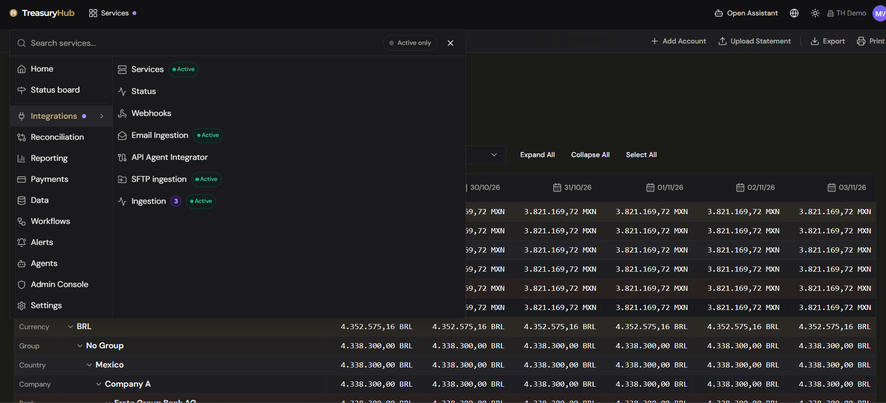
Menu locations are not URLs. Where a screen sits in this menu is the only reliable way to find
it; the address in your browser often says something else. Tags and the other tagging screens
live under Settings › Ingestion › Transaction Tagging even though their address starts
/admin/, and Ingestion lives under Integrations even though its address starts
/reporting/. Use the menu paths below, not the address bar.
The sections
| # |
Section |
What's inside |
| 1 |
Home |
Your cash position dashboard. A direct link — it has no dropdown. |
| 2 |
Status board |
Your delivery roadmap, your open tickets, and what's new on the platform. A direct link. |
| 3 |
Integrations |
Services, Status, Webhooks, Email Ingestion, API Agent Integrator, SFTP ingestion, Ingestion. |
| 4 |
Reconciliation |
Two groups: Administration and Reporting. |
| 5 |
Reporting |
Three groups: Overview, Operations, Risk Management. |
| 6 |
Payments |
Payment Blotter, Payment Life Cycle Blotter, Payment Approvals, Net Settlements. |
| 7 |
Data |
Data Exports, Financial Events. |
| 8 |
Workflows |
Workflow Dashboard, Workflow Approvals. |
| 9 |
Alerts |
Alerts Dashboard, then one screen per source: Integration, Data, Reconciliation, GL Posting, Payment, Reporting, Prefunding, Workflow, Agent and Admin Alerts. |
| 10 |
Agents |
Agent Dashboard, Agent Builder, Agent Approvals, Agent Chats, Agent Logs. |
| 11 |
Admin Console |
Three groups: Admin Console, Users & Roles, Master Data. |
| 12 |
Settings |
Three groups: Ingestion, Reconciliation, Reports. |
Reconciliation
| Group |
Screens |
| Administration |
Dashboard, Reconciliation Status, Matching 1-to-1, Reconciliation Approvals, Conciliations, Movements, Movement Graph, Batch Matching, ERP Posting. |
| Reporting |
Conciliation Reporting, Fee Report. |
The reconciliation screens that work a reconciliation sit under Administration; the two
read-only reports sit under Reporting. Both reports are also listed under
Reporting › Operations, so you can reach them from either menu.
Reporting
| Group |
Screens |
| Overview |
Audit Trail. Then a Cash & Liquidity sub-heading: Balance Differential, Category positions, Cash Forecast, Actual vs Forecast, Scenarios (What-If). Then a Datalake (POC) sub-heading: Cash position, Opening vs closing balance, Account statement, Cash flow, Build your own report. |
| Operations |
FX Contracts Blotter, Loans Blotter, Investments Blotter, Transactions, Bank Statements, Invoices, Reconciliation Status, Debt Repayment Schedule, Customer Aging, G/L Posting Life Cycle, Exchange Rates, Conciliation Reporting, Fee Report. |
| Risk Management |
Risk Cockpit, MtM Portfolio, FX Exposure, Credit Risk by Stage, IRRBB, ALM Gap. |
Reporting can also carry reports built for your organization alone. They sit with the other reports
in the same groups and carry a Custom marker.
Admin Console
| Group |
Screens |
| Admin Console |
User & Agent Management, AI usage, Access Tokens, Groups. |
| Users & Roles |
User Management, Roles & Permissions, Audit Trail. |
| Master Data |
Company Groups, Companies, Bank Accounts, Counterparties, Custom Entities, Payment Approval Rules, Static Data. |
Users & Roles is the group you manage people from: who belongs to the organization, what each
role grants, and the record of every change. See
Users & Roles.
Settings
| Group |
Screens |
| Ingestion |
Parse Templates. Then a Transaction Tagging sub-heading: Tags, Classification rules, Classification conflicts. |
| Reconciliation |
Reconciliation Flows, Reconciliation Criteria. |
| Reports |
Build Your Own. |
Find a screen faster
- Search by what you call it. The Search services... box at the top of the overlay matches
synonyms as well as screen names, so you don't have to know Treasury Hub's wording for something.
Typing
mt940 or csv finds Parse Templates; IBAN finds Bank Accounts. Results are
grouped by section so you can see where the screen lives.
- Star what you use daily. Click the star on any row to add it to a Favorites block at the
top of the overlay. Favorites are kept between sessions in the browser you use, so your short list
is waiting for you the next time you sign in.
- Watch for a count on a menu item. Some items carry a small number for what is waiting on that
screen — proposals to review on Ingestion, disagreeing rule pairs on Classification
conflicts — and the section they sit in shows a dot.
Working with data grids
Most screens are powerful data grids (blotters). Across the platform you can generally:
- Add a record (e.g. + Add Account), Upload a file (e.g. Upload Statement),
Export, and Print from the action bar.
- Filter with tabs (e.g. All / Exceptions / Disconnected).
- Expand All / Collapse All and Select All in hierarchical views.
- Group balances and figures by Currency, Group, Country, Company, and drill down.
- Choose the display currency so all balances convert to one currency of your choice.
- Open a detail panel by selecting a row.
- Your view state (filters, grouping, columns) is remembered between visits.
Switching organizations (tenants)
If you belong to more than one organization, the tenant name appears in the top bar next to your
avatar. To switch, open the avatar menu and pick another organization from the list at the top of
it; Treasury Hub reloads with that organization's data. If you belong to a single organization it is
listed in the menu but can't be selected, and no tenant name is shown in the top bar. You only ever
see data for your current organization.
Getting Started
Core Concepts
Who this is for: everyone — read this once and the rest of the platform makes sense.
A handful of ideas run through the whole platform. Understanding these will help you use every
module.
Organizations & tenants
Treasury Hub is multi-tenant. Each customer organization is a tenant, and all your data is
isolated to your tenant. If your login belongs to more than one organization, you can
switch tenants from your avatar
menu. Everything you see — accounts, transactions, reports — is always scoped to the tenant you're
currently in.
Company structure
Within a tenant, your legal and reporting structure is modeled as a hierarchy:
- Company Group — a grouping of companies (e.g. a region or division).
- Company — a legal entity. One company can be marked the default; new bank accounts are assigned
to the default company unless the user assigns them to another company.
- Bank Account — belongs to a company, held at an institution, in one currency — or multiple
currencies if it is a multi-currency account.
This hierarchy is what lets you consolidate and drill down: Company Group › Company › Account ›
Transaction. You set it up in the Admin Console.
Master data
Master data is the reference data everything else depends on — company groups, companies, and bank
accounts; currencies and exchange rates; counterparties and their settlement instructions (SSIs);
and tags, custom entities, and matching rules. Keeping it clean and complete is the foundation for
accurate reconciliation, reporting, and payments. It's managed in the
Admin Console.
Counterparties & SSIs add the payee side used by transfers, with maker-checker approval on
banking changes.
Financial entities
Treasury Hub isn't limited to bank balances. Its cash-forecast model classifies the full range of
financial entities your team handles — organized as contracts (which emit cashflows), the cashflows
themselves, standalone operatives, and plans that project future flows:
| Group |
Entities |
| Contracts |
Loans & term loans, revolving lines (RCF), leases (IFRS 16), term deposits & investments, bonds, FX (spot / forward / swap), and commercial sales & purchase contracts. |
| Cashflows they emit |
Principal (drawdown / repayment), interest paid & received, installments (cuota), placements, maturities & redemptions, coupons, FX settlements, customer receipts (AR), supplier payments (AP), dividends, and equity movements. |
| Standalone operatives |
Payroll, taxes & VAT, bank & merchant fees, internal transfers, ad-hoc flows, and recurring flows — no contract needed. |
| Balances & the "actual" |
Opening & closing balances per account, and the bank movements/statements (MT940, CAMT.053, BAI2, CSV, PDF) that reconcile against the forecast. |
| Plans (scenario input) |
Sales, hiring/headcount, OpEx/budget, Capex, dividend, and financing plans that generate projected cashflows. |
Every cashflow carries a tag — grouped as financing (fin_), investment (inv_), or
operational (op_) — so the same taxonomy classifies both the forecast and the Transactions
historicals. Any cashflow can be created manually; a contract is optional. This is the data model the
platform is built around.
Data flows from source to insight
Everything follows the same path:
Sources → Integrations (ingestion) → Data layer (normalize/unify/enrich) → Workflows → Modules.
Raw data from banks, ERPs, files, and email comes in through Integrations, becomes clean
normalized data, is processed by workflows (reconciliation, payments, posting…), and shows
up in the modules you use. See What is Treasury Hub.
Everything is a workflow
Beyond the data foundation, most things you do in Treasury Hub are workflows — a sequence of
steps that can include validations, approvals, an optional journal entry, and optional reporting.
Every workflow is:
- Orchestrated & configurable — steps run in order (or in parallel), with rules per step.
- Governed — approvals and validations are assigned to the right roles automatically.
- Auditable — every step records who did what, when, and the outcome.
Payments, FX deals, reconciliation, cash transfers, loans, investments, risk revaluations, and
reporting are all modeled this way. See Reconciliation Workflows.
The AI layer
Each module has its own agent, and you work with it on that module's screens. An agent knows
the records its module holds, the operations it allows, and the rules a change to it has to
satisfy.
You describe what you want in plain language; that module's agent works out which records you mean
and what would have to change, has the change checked against the platform's own validation rules,
and hands it back to you as a proposal. It never saves anything: you read the summary and the
changed fields and submit the change yourself, and the platform rejects a save that originates from
an agent rather than from a person.
An agent acts with the permissions you already have. The modules with an agent today:
- Reconciliation workflows — build a workflow, with its chains, rules and matching criteria, by
conversation in the Workflow Studio.
- Ingestion formats — when a file arrives in a format nobody has set up yet, the platform
proposes a mapping template for a person to review and accept.
- Administration — organizations, people, roles and permissions.
See AI assistance.
Alerts
Notable events across every module surface as alerts, gathered into one
Alerts area — with an Alerts Dashboard — so nothing is missed. Alerts are
organized by source:
| Alert type |
Raised when… |
| Integration |
A feed or connection fails — a bank / Open Banking / SFTP / email source stops delivering, or a connection test breaks. |
| Data |
Ingested data is missing, malformed, or fails validation. |
| Reconciliation |
A break appears — an expected item with no actual, or an actual with no match. |
| G/L Posting |
A posting fails, is rejected by the ERP, or needs review. |
| Payment |
A payment is held, rejected, awaiting approval, or breaches a threshold. |
| Prefunding |
An account is projected to run short of the funds a payment run needs. |
| Reports |
A scheduled report fails or a monitored metric crosses a limit. |
| Workflow |
A workflow step stalls, errors, or waits too long for an approval. |
| Agent |
AI assistance needs input from you, or has a proposal waiting for your review. |
| Admin |
Security/administration events — access changes, expiring consents or tokens, configuration issues. |
Getting Started
Roles & Permissions
Where to find it: Admin Console › Users & Roles
Who this is for: administrators; useful background for all users.
Permissions required: AdminAndSettings.UserManagement · Read
Overview
Treasury Hub controls what each person can see and do with role-based access control (RBAC).
Users are assigned one or more roles; each role grants a set of actions on each module.
This is also why two people can see different menus and buttons — the Services menu and the
on-screen actions adapt to your permissions.
Actions and levels
A role is built as a matrix: one row per permission module, and five action columns.
| Action |
What it allows |
| Read |
View the module's data. |
| Write |
Create records. |
| Edit |
Change existing records. |
| Delete |
Remove records. |
| Approve |
Approve what someone else prepared. |
Not every action applies to every module — a read-only report has nothing to create or delete, and
only an approval module offers Approve. Where an action does not apply, the cell shows a dash and
cannot be ticked. Read is the base: turning on any other action turns Read on, and Read cannot
be removed while another action is set.
Behind the matrix each module still resolves to one of five permission levels, and these five
are the whole list:
| Level |
What it means |
| No Access |
The module is hidden from the menu and its screens can't be opened. |
| Read |
View data only. |
| Create/Edit |
View, create, and edit records. |
| Delete |
View, create, edit, and delete records. |
| Admin |
Everything the module offers, including its configuration. |
The levels build on each other: each one includes everything the level below it allows. The level
follows from the ticked actions — no actions is No Access; Read alone is Read; Write, Edit or
Approve reaches Create/Edit; Delete reaches Delete; and every action a module offers, on a module
that can be deleted from, reaches Admin. You tick actions; the level is what the screens are gated
on.
"Approve" is an action, and Counterparties also has its own module
Approve is one of the five actions, offered only on the modules where approving is a separate job
from changing — Payment Approvals, Reconciliation Matching and Approvals, G/L Postings, Settlement
Instructions, Workflow and Agent Approvals.
Counterparties is the exception that keeps a module of its own: CoreData.Counterparties.Approve
("Counterparties — approve") sits alongside CoreData.Counterparties, and a user needs Approve on
it to move a counterparty through its approval statuses. Someone with Write and Edit on
CoreData.Counterparties alone can maintain counterparties but is not offered the status buttons
at all.
Segregation of duties
Four combinations are refused, whether they come from one role or from the union of several roles
given to the same person:
| Make |
Approve |
| Write on Payment Blotter |
Approve on Payment Approvals |
| Write or Edit on G/L Postings |
Approve on G/L Postings |
| Write or Edit on Counterparties |
Approve on Counterparties — approve |
| Write or Edit on Settlement Instructions (SSIs) |
Approve on Settlement Instructions (SSIs) |
Editing a payment is not creating one, so Edit on the Payment Blotter is allowed beside Approve on
Payment Approvals. The Admin role is exempt.
You also cannot grant an action you do not hold yourself. Cells for those actions are disabled in
the role editor, and a role that holds more than you do cannot be assigned to anyone.
Permission modules
The role editor groups the modules as follows. The Actions column lists the actions that can be
granted on that module.
Cash & Reporting
| Permission module |
Governs |
Actions |
CashManagement.CashPosition |
Cash Position |
Read |
CashManagement.CashPosition.Forecast |
Cash Forecast |
Read, Write, Edit |
CashManagement.Transactions |
Transactions |
Read, Edit |
CashManagement.Invoices |
Invoices |
Read, Write, Edit, Delete |
CoreData.ExchangeRates |
Exchange Rates |
Read, Write, Edit, Delete |
Reporting.Blotters |
Operations Blotters |
Read |
Reporting.Risk |
Risk Management |
Read |
Reporting.Regulatory |
Reports — Regulatory & Compliance |
Read |
Reporting.Custom |
Reports — Build Your Own |
Read, Write, Edit, Delete |
Payments
| Permission module |
Governs |
Actions |
CashManagement.Payments.Blotter |
Payment Blotter |
Read, Write, Edit, Delete |
CashManagement.Payments.Approvals |
Payment Approvals |
Read, Approve |
CashManagement.Payments.NetSettlements |
Net Settlements |
Read, Write, Edit |
Reconciliation
| Permission module |
Governs |
Actions |
Reconciliation.View |
Reconciliation Dashboard |
Read |
Reconciliation.Matching |
Matching |
Read, Write, Edit, Approve |
Reconciliation.Approvals |
Reconciliation Approvals |
Read, Approve |
Reconciliation.Posting |
ERP Posting |
Read, Write, Edit |
Accounting
| Permission module |
Governs |
Actions |
CashManagement.TransactionsPosting |
G/L Postings |
Read, Write, Edit, Delete, Approve |
Accounting.Journal |
Journal Entries |
Read, Write, Edit, Delete |
Accounting.CoARules |
CoA Rules Engine |
Read, Write, Edit, Delete |
Accounting.ERP |
ERP Integration |
Read, Write, Edit |
Accounting.Audit |
Audit Trail |
Read |
Data & Integrations
| Permission module |
Governs |
Actions |
Data.Hub |
Bringing files in — see Ingestion |
Read, Write, Edit, Delete |
Data.Repository |
The stored files behind ingested data |
Read, Write, Edit, Delete |
Data.Export |
Data Export |
Read, Write |
Data.FinancialEvents |
Financial Events |
Read, Write, Edit, Delete |
Integrations.Services |
Integration Services |
Read, Write, Edit, Delete |
Integrations.Ingestion |
Email / SFTP Ingestion |
Read, Write, Edit, Delete |
Integrations.Activity |
Ingestion Activity |
Read |
Integrations.Api |
Webhooks / API Agent Integrator |
Read, Write, Edit, Delete |
Workflows, Alerts & Agents
| Permission module |
Governs |
Actions |
Workflows.View |
Workflow Dashboard |
Read |
Workflows.Approvals |
Workflow Approvals |
Read, Approve |
Workflows.Builder |
Building reconciliation flows — see Reconciliation Workflows |
Read, Write, Edit, Delete |
Alerts.Manage |
Alerts |
Read, Write, Edit, Delete |
Agents.View |
Agent Dashboard, Chats and Logs |
Read |
Agents.Builder |
Agent Builder |
Read, Write, Edit, Delete |
Agents.Approvals |
Agent Approvals |
Read, Approve |
Administration
| Permission module |
Governs |
Actions |
AdminAndSettings.UserManagement |
User & Role Management |
Read, Write, Edit, Delete |
AdminAndSettings.AccessTokens |
Access Tokens |
Read, Write, Edit, Delete |
CoreData.CompanyGroups |
Company Groups |
Read, Write, Edit, Delete |
CoreData.Companies |
Companies |
Read, Write, Edit, Delete |
CoreData.BankAccounts |
Bank Accounts |
Read, Write, Edit, Delete |
CoreData.Counterparties |
Counterparties |
Read, Write, Edit, Delete |
CoreData.Counterparties.Approve |
Counterparties — approve |
Read, Approve |
CoreData.SSIs |
Settlement Instructions (SSIs) |
Read, Write, Edit, Delete, Approve |
CoreData.Tags |
Transaction tagging — tags, classification rules and conflicts |
Read, Write, Edit, Delete |
CoreData.CustomEntities |
Custom Entities |
Read, Write, Edit, Delete |
CoreData.MatchingRules |
Matching Rules |
Read, Write, Edit, Delete |
Config.ParsingTemplates |
Parse Templates |
Read, Write, Edit, Delete |
CoreData.StaticData |
Static Data |
Read, Write, Edit, Delete |
| Permission module |
Governs |
Actions |
Platform.OnboardingRoadmapBoard |
The content of the Status board |
Read |
Reading the Status board itself needs no permission at all — every
user can open it. This module covers who may maintain its content, and editing it is reserved for
Treasury Hub.
Older module names such as AdminAndSettings.Roles, AdminAndSettings.Connectivity,
AdminAndSettings.UserGroups and the CashManagement.CashPosition.* family are still honoured for
roles that already hold them, but they are not offered in the role editor.
How effective permissions are calculated
- A user can hold multiple roles.
- For each module, the user gets the union of the actions granted by any of their roles, which
resolves to the highest of the levels those roles grant.
- A module you hold nothing on at all behaves exactly like No Access.
- When you invite someone or change their roles, a Resulting effective permissions panel shows
that union before you save.
Super Admin
Super Admin is a flag on a user record, not a role. It is deliberately absent from the Roles &
Permissions screen — which says so in a note — and never appears in the dialog where you assign
roles to a user, so there is nothing to look for there. Three things follow from that:
- It applies across every organization — a person is a Super Admin everywhere or nowhere. There
is no "Super Admin of one organization".
- It bypasses module permission checks, so a Super Admin can open every module and action.
- Only Treasury Hub staff can grant or revoke it, from an internal panel. Nobody inside your
organization can grant it or escalate to it, including your own administrators. An attempt to
do so is refused and recorded in the audit trail.
The flag does not replace normal membership: a Super Admin still needs to belong to an organization
in order to work in it.
Access can be scoped further
Module permissions decide what you can do. A second layer decides which rows you see, and its
rules surprise people, so they are worth knowing:
- A user with the Admin role in the organization is not restricted — they see every account
and company.
- A non-admin is limited to the accounts and companies linked to them, and the two combine with
AND: a row has to match both an account they're linked to and a company they're linked to.
- A non-admin with no links at all is not restricted either. No links means "nothing to
narrow by", not "nothing to see".
That last rule is usually the answer to "why do I see fewer rows than my colleague?" — the
colleague either has the Admin role or has no links, while you have links that narrow the view.
Row-level scoping is applied per screen rather than platform-wide, so it does not reach every
report. Balance Differential, for example, is controlled by the Cash Position permission alone:
anyone who can open it sees every account in the organization. Where a screen scopes rows, its own
page says so.
Changes to permissions and to account or company links take effect within about 60 seconds,
because each user's scope is cached. If you have just been given access and can't see it yet, wait a
minute and refresh the page before raising a ticket.
Payments add one more dimension: users are assigned a payment approval level used by multi-level
payment approvals. See Payment Approvals.
Checking your own access
You don't have to ask an administrator what you can do.
- Click your avatar in the top bar.
- Choose My Access.
- The dialog shows your email address, the organization you're currently in, a badge saying whether
you are an Admin, a SuperAdmin or a standard user, and every role you hold by name with
the permissions it grants.
Check it before reporting a problem: it tells you in one place whether a missing screen is a
permission question or something else. If your own access does not let you read roles, the dialog
lists your roles by number instead of by name and says so.
Roles
Each organization starts with a set of preset roles — Admin, Configurator, User Manager, Cash
Manager, View Only, Book Keeper, Payment Preparer and Payment Approver — plus Invoice Manager,
Invoice Admin and Docs Manager as ordinary custom roles. Organizations set up earlier keep the roles
they already had, so your own list is whatever the Roles & Permissions screen shows.
A preset is maintained by Treasury Hub and cannot be changed, renamed or deleted; you fork one with
Save as new role instead. A role's name is only a label — what it actually permits is the
matrix behind it, which you can open and read on the Roles & Permissions screen.
How to manage roles & permissions
Create or edit a role
- Open Admin Console › Users & Roles › Roles & Permissions.
- Pick a role from the Preset roles or Custom roles list, or choose + Add role.
- Tick the actions you want, module by module. Changed cells stay highlighted.
- Save a custom role in place, or type a name in the Save as new role bar to create a new
one.
Managing roles requires Create/Edit on AdminAndSettings.UserManagement; deleting one requires
Delete.
Assign roles to a user
- Open Admin Console › Users & Roles › User Management.
- Find the user in the grid, or invite a new one.
- Use the row actions to Change roles, Edit access (the companies and accounts that narrow
what they see), and set their Payment approval level.
- Save. Allow about a minute for the change to take effect.
For full details see Users & Roles.
Lifecycle & audit
A person's membership of an organization is Invited, Invitation expired, Active,
Suspended or Deactivated, and an administrator moves them between those states from the
Users grid. Every change to a user, a role or an invitation is recorded with its actor, its time and
a before-and-after snapshot, readable on Admin Console › Users & Roles › Audit Trail. SSO with
corporate directories (Azure AD, Okta, Google Workspace) is supported so access follows your
identity provider.
1 · Home
Home — Cash Position Dashboard
Where to find it: Home
Who uses it: treasurers, cash managers, finance teams, CFOs — anyone who needs to see where the money is.
Permissions required: CashManagement.CashPosition · Read (see Roles & Permissions).
Overview
Home is your landing page after signing in. It gives you a real-time view of your organization's
cash position — how much money you hold, in which currencies, at which banks, across which
companies and countries — laid out as a single grouped table with a column for each date in the
range you choose, so you can read balances day by day.
Instead of logging into each bank portal and stitching balances together in a spreadsheet, you get
one consolidated, always-current picture the moment you open the platform. From here you can drill
into Transactions when you need transaction-level detail.
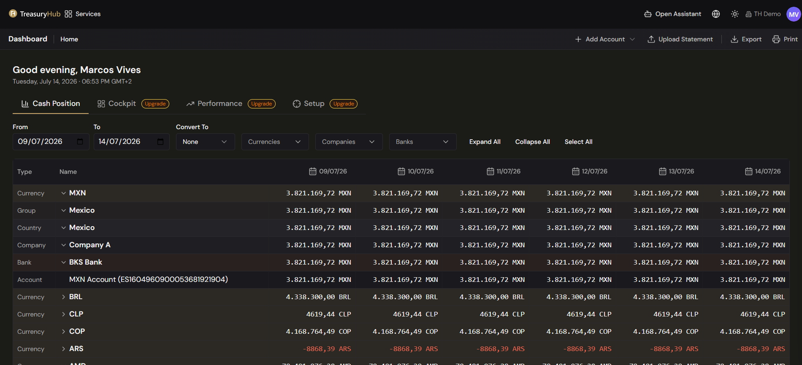
Key concepts
- Balance — the amount of money held, aggregated to whatever level you're looking at (a single
account, a company, a currency, or the whole group).
- Grouping hierarchy — balances roll up through levels shown in the Type column:
Currency → Group → Country → Company → Bank → Account. You expand or collapse levels to move
between the big picture and a single account.
- Date columns — the table shows one column per date across the range you set, so you see each
day's balance side by side.
- Convert To (display currency) — a single currency you pick so every balance on the page is
converted into it for one comparable total; choose None to keep each account in its native
currency. See Core Concepts for how
the Company Group › Company › Account hierarchy underpins these totals.
Before you start
- At least one bank account must exist, with balance data. If none does, Home shows an empty
state prompting you to add an account or upload a statement — see
Bank Accounts.
- To convert balances into a display currency, exchange rates must be loaded for the currency
pairs involved (managed under Master Data / Exchange Rates).
- You need
CashManagement.CashPosition at Read level. Without it, the Home menu item is hidden and
you're routed to the first screen you can access.
How to use it
Read your consolidated cash position
- Open Home from the sidebar (it's also where the logo takes you). The Cash Position tab is
selected by default.
- Read the balance table: the Type and Name columns on the left show each grouping level
(Currency, Group, Country, Company, Bank, Account), and each date column to the right shows
the balance on that day.
- Use Expand All / Collapse All (or the ▸ arrows on a row) to open a currency down to its
companies, banks and individual accounts — or roll everything back up.
Change the time period
- Set the From and To date fields in the control row at the top of the dashboard.
- The table redraws with one column per date across that range.
Focus on specific currencies, companies or banks
- Use the Currencies, Companies, and Banks dropdowns in the control row to filter the
table to just what you want to see.
- Combine filters as needed; the totals recalculate to match your selection.
See everything in one currency
- Open the Convert To dropdown in the control row (next to the date fields).
- Select a currency (for example, USD). Every balance and total re-renders converted into that
currency, so you can compare across the group on a like-for-like basis.
- To go back to seeing each account in its own native currency, choose None.
If an account's currency has no exchange rate to your chosen display currency for the selected
dates, that value is shown as a dash or an "FX unavailable" marker and is left out of the
converted total, with a note — so a missing rate never silently distorts your figures.
Add data or export
- Use + Add Account and Upload Statement (top-right) to bring in more balances, and
Export or Print to take the current view with you.
Drill into the detail
For the movements behind a balance, open Transactions. To compare
two dates account by account, use Balance Differential; to
see what moved by category, use Category Positions.
Configuration
Home is view-only — you don't set data up here, you set it up upstream:
- Accounts, companies and company groups — configured in the Admin Console;
the hierarchy you define there is exactly what the grouping tabs consolidate.
- Exchange rates — required for currency conversion; managed in Master Data.
- Your view state (chosen tab, grouping, date range, display currency) is remembered between
visits, so Home opens the way you left it.
Tips & good practices
- Set Convert To to your reporting currency so the headline total is immediately meaningful to
management.
- Keep your company structure and account list clean — Home is only as accurate as the master
data behind it (see Core Concepts).
- Expand to the Bank level to spot bank concentration, and read balances at the Country level
to check cross-border exposure before it becomes a risk.
- If a currency total looks off, check for an "FX unavailable" marker — it usually means a
missing exchange rate rather than a real cash movement.
Personalized cockpit
Beyond the cash dashboard, Home is also a personalized cockpit organized around your roles,
across three further tabs:
- Cockpit tab — a personalized grid of KPIs, approval queue, featured reports and alerts,
each tagged with the role that makes it relevant to you.
- Performance tab — a daily briefing, meeting prep, and progress against daily/weekly/
monthly objectives.
- Setup tab — your work routines, built from the roles and workflows set up in the Admin
Console.
The demo KPI figures and personas you may see are illustrative examples, not your data.
1 · Home
Status board
Where to find it: Status board
Who uses it: project owners, treasury leadership, administrators — anyone following their own
Treasury Hub implementation.
Permissions required: none beyond signing in. Every user of your organization can open the
board.
Overview
The Status board is the single page where you read how your Treasury Hub implementation is going. It
answers three questions at once: what the platform has built and is building next, where your own
delivery roadmap stands, and which support tickets of yours are still open.
Everything on the page is information to read. There is nothing to fill in, approve or save: the
board's content is maintained by Treasury Hub and refreshed for you. A stamp at the top right says
when the board was last updated and, when one is scheduled, the time of the next refresh.
The page loads even when part of it is empty. If your roadmap has not been set up yet, or you have
no open tickets, that pane explains what will appear there instead of disappearing. If the board
genuinely fails to load, you get a full-page message with a Try again button — never a
half-filled board.
Key concepts
- Project — your implementation as a whole: a name, a start date, a proposed completion date and
an overall progress figure. One project per organization.
- Workstream — a strand of the project, such as an ERP integration or a bank onboarding, with
its own start and end dates and its own milestones.
- Milestone — one deliverable inside a workstream, with a phase, a health status, a next step
and an owner.
- Phase — the stage a milestone has reached: Proof of Concept, Design, Build,
Test, Go Live or Post Go Live. Someone records it; it is never worked out from dates.
- Status (health) — how a milestone is going: On Track, Delayed, Blocked or
Delivered. Each status has its own colour, used by the badge, the progress bar and the legend.
- Progress — a percentage with a bar. A milestone's progress follows its phase, a workstream's
is the average of its milestones', and the project's is the average of its workstreams'.
- Waiting on you — a milestone that is not yet delivered and whose owner is on your side.
- Working days left — Monday-to-Friday days between today and a workstream's proposed
completion date.
- Timeline axis — the month scale every workstream's date bar is drawn against, shared by all of
them so the bars line up, with a marker on today.
- Overdue ticket — an open ticket that has been open for longer than your overdue threshold.
Phase and status answer different questions, and a milestone carries one of each: Build and
Blocked at the same time is a normal, meaningful combination. Delivered is a status, not a
phase. A question mark beside the Roadmap title explains how progress is built up.
Before you start
- You only ever see your own organization's roadmap and tickets. The What's new pane is the one
part of the page that is the same for every customer.
- Nothing on the page can be changed from your account, so there is no permission to ask for beyond
being able to sign in.
How to use it
Open the board
- Click Status board in the main navigation.
- Read the stamp at the top right to see when the content was last updated.
- Read the three panes left to right: What's new, Roadmap, Open tickets.
- Look at the left-hand pane, What's new. The number beside the title is how many features it
lists.
- Read each card: the feature's name and a short description of what it does.
- Check the estimate line at the foot of the card. A card either carries a date, with the number of
days until it, or a rough label such as a quarter, marked date to confirm.
This pane is Treasury Hub's own roadmap, so it is identical for every customer, and it covers
features already delivered as well as those still planned. Nothing in it is specific to your
account.
Read your delivery roadmap
- Look at the centre pane, Roadmap. The number beside the title is how many workstreams you
have, and the legend on the right gives the colour of each milestone status.
- Read the project card at the top: your project's name, its Start date, its Proposed
completion date, and Overall progress as a percentage with a bar.
- Below it, read one card per workstream. Each shows its name, how many milestones it holds, and a
chip for anything that needs attention — Overdue by N days, N blocked, N delayed.
- Read the figures on the card: Start date, Proposed completion, Overall progress,
Working days left and Waiting on you. Working days left reads Completed once the
workstream is finished and Past due once it is late.
- Read the date bar underneath. Every workstream is drawn on the same month scale, so the bars line
up like a chart; a marker shows today, the bar turns green when the workstream is complete, and
any time past the agreed end date is drawn as red stripes.
- Click a workstream to open its milestones. Click it again to close it.
Read a milestone
- Open the workstream that holds it.
- Read the row: the phase in small capitals above the milestone's name, the name itself, and
the health status as a coloured badge.
- Read the two lines under the name: Next: the next step, and Owner: who holds it. A dash
means nothing has been recorded yet.
- Read the progress bar on the right. It is drawn in the status colour and carries the percentage.
- Click the row to open its detail: the milestone's description, its phase and its progress. Click
it again to close it.
Milestones are listed in the order Treasury Hub loaded them into your roadmap, not grouped by phase,
so the sequence you agreed is the sequence you see.
Check what is waiting on you
- Read the Waiting on you figure on each workstream card. It counts the milestones in that
workstream that are not yet delivered and whose owner is on your side.
- Open those workstreams and look at the Owner: line on each milestone to see who on your team
holds the next step.
Read your open tickets
- Look at the right-hand pane, Open tickets. The number beside the title is how many are open;
the newest sits at the top, so the longest-running is last.
- On each card, read your own reference code for the ticket when one has been recorded, its title,
its status badge, and the days-open counter on the right.
- Click the ticket's title to open it in full: the description, your code, the status, and the date
it was opened.
- Use What the ticket statuses mean beside the pane title for a reminder of what each status
means.
A ticket's status is one of Open, In progress, Waiting on you or Blocked. Waiting
on you means the Treasury Hub team cannot move it forward until you reply. The days-open counter
turns red once the ticket passes your overdue threshold.
Tickets on this pane are raised and maintained by the Treasury Hub team, so there is no new ticket
button here. Raise a new one with your account team in the usual way, and it appears on this pane.
Configuration
There is nothing to configure on this page, and nothing on it can be edited from your account: the
platform roadmap, your delivery roadmap and your tickets are all maintained by Treasury Hub, and you
read the result.
One setting behind the board belongs to your account and is set by Treasury Hub:
- Overdue threshold for tickets — how many days a ticket may stay open before its age counter
turns red. The default is 14 days, and a ticket is only overdue once it is past the
threshold, not on the day it reaches it.
How the roadmap figures are worked out, because they are asked about often:
- A milestone's progress follows its phase, in four steps: Design 25%, Build 50%,
Test 75%, Go Live 100%. Proof of Concept comes before Design and counts 0%; Post Go Live
comes after Go Live and stays at 100%. A milestone marked Delivered is 100% whatever its
phase. A phase is worth its whole share as soon as the milestone enters it, so progress moves in
steps rather than creeping up day by day.
- A workstream's progress is the plain average of its milestones' percentages, rounded. A
workstream with no milestones reads 0%.
- The project's progress is the plain average of the workstreams' rounded percentages.
- Working days left counts Monday to Friday only. It excludes today and includes the proposed
completion date, and it does not exclude public holidays — in a country with a long holiday
season, expect the figure to run a few days generous. Once the date has passed it reads 0 rather
than going negative, and the card shows Past due instead.
- Overdue by N days counts calendar days past a workstream's end date while the workstream is
unfinished. The end day itself is not overdue.
- Waiting on you counts milestones that are not delivered and whose owner is on your side.
Tips & good practices
- Start with Waiting on you. It is the only figure on the page that asks something of you, and
clearing those milestones is usually what moves the proposed completion date.
- Read phase and status together. A milestone can be in Build and Blocked at the same time, and
the badge shows you the status because that is the more urgent fact — the phase is in small
capitals just above it.
- Do not read a progress bar as effort spent. It reflects the phase the milestone has reached, so a
milestone can sit at 50% for weeks and then jump to 75% in a day.
- Expect the roadmap order to be the load order. Milestones appear in the sequence Treasury Hub
entered them, so a Go Live milestone can appear above a Design one in the same workstream.
- Treat What's new as the platform roadmap, not as your plan. Its dates are platform-wide, it
includes features that have already shipped, and a feature landing there does not mean it is part
of your implementation. A card for something already delivered keeps its estimate line, so its
countdown can read a date in the past.
- Check the last-updated stamp before acting on a figure. The board reflects what Treasury Hub last
recorded, not a live feed from your project team's inbox.
- The days-open counter on a ticket measures elapsed time, not working days, so weekends count
towards it.
2 · Integrations
Integrations — Overview
Where to find it: Integrations
Who uses it: treasury operations, finance systems owners, administrators, IT.
Permissions required: administrator to set up and enable connections; see Roles & Permissions.
Overview
The Integrations menu is where all your data sources connect to Treasury Hub. Instead of logging
into every bank portal, exporting files, and re-keying numbers, you connect a source once and its
data flows in automatically — normalized into the same financial entities
the rest of the platform uses. This is the first layer of the platform: Sources → Integrations
(ingestion) → Data layer → Workflows → Modules.
Integrations cover both directions: inbound (bringing data into Treasury Hub) and outbound
(sending data out to other systems).
Key concepts
- Inbound (ingestion) — data coming into Treasury Hub: bank statements, balances, PSP
settlements, ERP records, invoices, and files. Most of this menu is about inbound.
- Outbound — data Treasury Hub sends out to your systems, via exports and outbound APIs. See
Data Exports & APIs.
- Connector — a single configured link to one source (a bank, an ERP, a PSP, a file feed).
- Normalization — no matter which channel a record arrives on, it is converted to Treasury Hub's
standard model of movements, balances, invoices, and so on, so everything reconciles and reports
the same way.
| Screen |
What it's for |
| Services (catalog) |
Browse and connect available connectors, grouped by category. |
| Status |
Operational health of each connection (last sync, uptime, logs). |
| Webhooks |
Real-time push notifications to/from external systems. |
| Email Ingestion |
Read data from incoming emails and attachments. |
| SFTP Ingestion |
Pick up files dropped on an SFTP location. |
| API Agent Integrator |
Build and maintain third-party API pull integrations with AI help. |
| Ingestion Activity |
Monitor what's been ingested, with status and errors. |
The catalog of sources
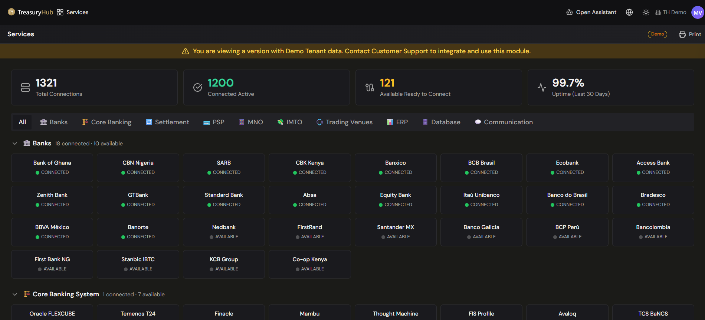
The Services catalog groups connectors by the kind of system they connect to. Typical categories
include:
- Banks — commercial and central banks, for statements and balances.
- Core banking systems — e.g. Temenos, Finacle, Flexcube.
- Settlement networks / payment rails — e.g. SEPA, PIX, SPEI, ACH, SWIFT.
- PSPs (payment service providers) — e.g. Stripe, Mercado Pago, Adyen, dLocal.
- ERPs — e.g. NetSuite, SAP, Oracle, Dynamics. The NetSuite integration is
switched off: its connection settings are kept and readable, but nothing is read from NetSuite
and nothing is written to it.
- Files — CSV / Excel / PDF import.
- Email & SFTP — Email Ingestion and SFTP Ingestion.
- APIs — third-party pull APIs and inbound push APIs.
Connector counts and named logos shown in the platform's demo tenant are examples.
Ways data comes in
Treasury Hub supports several ingestion channels so you can use whatever each source offers:
| Channel |
Best for |
Page |
| SWIFT |
Global banks with institutional connectivity. |
SWIFT |
| Open Banking (PSD2) |
Local banks, fintechs, neobanks, real-time balances. |
Open Banking |
| Third-party APIs (pull) |
Vendor systems Treasury Hub reads from on a schedule. |
Third-party APIs |
| Inbound APIs (push) |
Your systems sending data into Treasury Hub. |
Inbound APIs |
| ERP |
The NetSuite connection, kept for its history — no exchange runs from it. |
NetSuite |
| Files |
CSV / Excel / PDF, via a templating wizard. |
File import |
| Email / SFTP |
Emails, attachments, and dropped files. |
Email · SFTP |
These channels are complementary — for example, SWIFT and Open Banking
can cover different banks and still land in one unified position.
Before you start
- Decide which sources you need and which channel each supports (your bank, ERP, or PSP will tell
you which formats and APIs they offer).
- Confirm you have administrator rights to set up connections — see
Roles & Permissions.
Tips & good practices
- Connect your highest-volume sources first (usually your main banks) so your cash position is
complete from day one.
- Use Ingestion Activity and the Status board to
confirm data is flowing before you rely on downstream reports.
- Where a bank offers both SWIFT and Open Banking, you can use both for resilience.
2 · Integrations
Email Ingestion
Where to find it: Integrations › Email Ingestion
Who uses it: treasury operations, finance team, administrators.
Permissions required: administrator to configure; create/edit on the data being ingested. See Roles & Permissions.
Overview
Email Ingestion lets Treasury Hub read data straight from incoming emails and their attachments, so
files your banks, PSPs, or partners send by email become structured data without anyone downloading
and uploading them by hand. You point a monitored mailbox at Treasury Hub, set rules for what to do
with each message, and matching emails are processed automatically.
Key concepts
- Monitored mailbox — the email address Treasury Hub watches for incoming messages.
- Attachment — a file on an email (e.g. a statement or report) that Treasury Hub extracts and
processes, typically using a file-import template.
- Reception rule — how a matching email is handled: the account movements land in, the country,
an optional parsing template applied to the attachment, an optional fallback currency, the
match criteria that identify the email, and what happens after processing.
- Match criteria — tests on Sender, Subject, or Attachment (file name); each is matched by
Any (ignore), Exact (full text), or Regex. A message must meet all defined criteria.
- Unmatched action — what the mailbox does with an attachment that no rule claims: Ignore
(record it as unmatched and leave the message unread) or Park for a template (keep the file and
wait for a template for its format). Set per mailbox.
- Omitted attachment — an attachment whose file type is outside the supported list. It is marked
Omitted: it neither fails nor blocks the rest of the message.
- Automated sending — Treasury Hub can also send emails automatically as part of a flow (for
example, notifications or outputs), not only read them.
Before you start
- Decide which mailbox will receive the source emails and confirm you can configure it to forward or
grant access to Treasury Hub.
- Have a file-import template ready for the attachment format, if you want the
rule to name one.
- Confirm you have administrator rights to set up ingestion — see
Roles & Permissions.
How to use it
Set up an email ingestion source
- Open Integrations › Email Ingestion.
- Add a monitored mailbox and connect it.
- Define one or more rules — the sender, subject, or attachment name that identifies the emails
to ingest, and the template to apply to the attachment.
- Save. Matching emails are now processed automatically as they arrive.
A rule has three parts:
1. Source & routing — a name, the account where the ingested movements are added (optional),
the country, the parsing template to apply, and a fallback currency (used only when the file
or template has no explicit currency).
2. Match criteria — one or more rows of Field (Sender / Subject / Attachment) · Match (Any /
Exact / Regex) · Value. The rule fires only when all criteria match — for example Sender regex
.*@adyen\.com and Attachment regex settlement_.*\.csv.
3. After processing — what to do with the email once ingested: Leave, Mark as read, Move to a
folder, or Delete.
A rule does not have to carry a template. When an attachment reaches ingestion without one — a
rule left without a template, a rule whose template is a draft or has been deactivated, or an
attachment no rule claimed at all — the platform works the format out itself: it matches the file
against your active templates and loads it with the one that recognises it. If none does, the file
is parked and waits for a person rather than being loaded with a guess, and you finish it from
Ingestion Activity. Naming the template on the rule is still the safest
choice for a feed you already know.
Rules are active as soon as they're saved and apply to incoming emails (past emails aren't
reprocessed); any rule can be enabled or disabled later. Run one rule per provider so each sender maps
to the right template.
Review what was ingested
- Incoming emails that match your rules are processed and their data is created in Treasury Hub.
- Check Ingestion Activity to see each processed file, its status, and any
errors.
Open a mailbox's messages
Each mailbox has its own message list — the actual emails, not just the files they produced.
1. On Integrations › Email Ingestion, open the mailbox's actions menu and choose View
messages.
2. The list shows each message with its processing status: Processed, With errors,
Unmatched, Mixed, Not processed, No attachments, or Omitted.
3. Filter by read / unread, or search, to find a message.
4. Use the row's actions menu to Mark read or Mark unread — useful when a mailbox is also
read by people.
5. Expand a message to see its attachments: file name, size, status, last attempt, errors, and how
many attempts it has had. Expand an attachment again for the error detail or its full history.
6. Click Reprocess on an attachment to send it through ingestion again. The request is queued and
the row shows Reprocess pending until a worker picks it up.
Attachments whose type isn't supported show as Omitted here. That is the expected result, not a
failure — the rest of the message is processed normally.
Configuration
- Rules — set as many as you need to route different senders or message types to the right
handling and template.
- Unmatched action — per mailbox: ignore attachments no rule claims, or park them for a template.
Ignore suits a shared mailbox that also receives invoices and loose spreadsheets; park suits a
mailbox dedicated to data feeds.
- Automated sending — configure outbound emails where a flow needs to notify or deliver output
by email.
Tips & good practices
- Use a dedicated mailbox for ingestion so it's easy to see what's coming in and to keep rules
simple.
- Make rules specific (by sender and subject) to avoid processing unrelated messages.
- Pair email ingestion with a well-built file-import template so attachments map
cleanly and consistently.
- Think about the mailbox's unmatched action before setting it to park: on a mailbox that also
receives invoices and loose spreadsheets, every stray attachment then becomes a file somebody has
to answer for.
2 · Integrations
File Import (CSV / Excel / PDF)
Where to upload: Integrations › Ingestion (Upload file) for any file; Upload Statement for bank statements (on Home, on a Bank Account, or the Bank Statements screen).
Where templates live: Settings › Ingestion › Parse Templates.
Who uses it: treasury operations, finance team — no IT required.
Permissions required: create/edit on the data you're importing; see Roles & Permissions.
Overview
File import lets anyone on your team bring flat files into Treasury Hub without scripts or custom
spreadsheet mapping. You upload a file (on Integrations › Ingestion, or via Upload
Statement for bank statements), Treasury Hub reads it using a Parsing Template that maps its columns to Treasury
Hub fields, and the data lands as transactions, balances, or other entities. The first time you import
a new format you set the template up once; every import after that from the same source reuses it.
A manual upload accepts .csv, .txt, .tsv, .xlsx, .xlsm, .xls and .pdf.
Reusable templates are managed as Parse Templates under Settings › Ingestion.
There is no upload button on the reconciliation screens — files come in through Ingestion (or
Upload Statement), get parsed, and then flow into reconciliation automatically.
Key concepts
- Parsing Template — a saved definition for one source (e.g. "Bank X statement", "ERP Y export")
that remembers which column means what, so recurring files import automatically. Managed under
Settings › Ingestion › Parse Templates; if a source changes its format, you edit the template
instead of starting over. A template declares the file type it reads — CSV, Excel, fixed-width
text, SWIFT MT, PDF or XML — and the file it is given has to be of that type.
- Column mapping — linking each column in your file to a Treasury Hub field (date, amount,
reference, counterparty…) and a target entity (movements, balances, payment orders).
- Auto-detection — when a file arrives without a template named for it, Treasury Hub works out
which template reads it, in three steps: the detection rules a template declares (extension,
file-name pattern, expected header, a value in a known cell), then the format fingerprint
learned from the last file of that shape that loaded successfully, then a similar header. It
either resolves a template or it does not: when no active template recognises the file completely,
or when two recognise it equally well, the file is parked and waits for a person rather than
being loaded with a guess.
- How PDFs are read — Treasury Hub reads the text layer of the PDF and then analyses the
geometry of the page to find the table, its columns, its header and where each row starts. It
does not perform OCR. A scanned, image-only PDF has no text layer and cannot be read — it is
parked as incompatible, and the only thing left to do with it is download it again. (A scan that
somebody else has already put through an OCR tool does carry a text layer, so it is read, with a
warning that the characters are the OCR's and are worth checking.) A password-protected PDF, a
damaged file, a PDF holding several accounts one after the other, and a report of positions rather
than of movements are parked in the same way.
- Preview — the sample the template editor shows you: your file run through the template, with
parsing warnings listed per row. It is a dry run, not the import. See
Parse Templates.
- All-or-nothing load — a file loads whole or not at all. If any row is rejected, nothing is
inserted; the rows that were not at fault are still reported, so no row disappears without an
explanation.
Before you start
- Have the file ready and know which entity it represents (movements, balances, payment orders, …).
- Have a Parsing Template for that format, or expect the file to wait until one exists.
- Confirm you have create/edit rights on that data — see
Roles & Permissions.
How to use it
Upload a file
- Go to Integrations › Ingestion and choose Upload file.
- Drop your files on the panel, or Choose files. Several can go at once, each set up on its
own row.
- On each row, pick the Template that should read the file from the ones that recognise it —
or Create a new template with AI, the last option in the same list, when none does.
- Supply what the file does not state: the account, and a currency where the account does
not settle it. With several files of the same shape, Apply to similar files copies the first
row's choices to the rest.
- Upload. A file with an existing template is parsed and loaded in the background; duplicates are
skipped. A file you asked AI for comes back as a draft you review in the template editor,
with the parsed file beside it — change anything, then Save template and load file to
publish the template and load the data in one step. The grid on the Ingestion screen shows what
each file did. See Ingestion and Parse Templates.
Upload a bank statement
- Use Upload Statement — it's on Home (top-right), on a specific
Bank Account, and on the
Bank Statements screen.
- Choose the parser/format for the file so it's read correctly, then upload and process it.
See Bank Statements for the full upload → analyze → process
flow.
Create or edit a Parsing Template
- Go to Settings › Ingestion › Parse Templates.
- Create a template (or open an existing one), choose the file type it reads, and define the
column mapping — which column maps to which Treasury Hub field and entity.
- Work against a sample file in the template workbench: that is the screen where you adjust the
mapping, re-read the parsed result, and commit only once it looks right.
- Save and activate it. From then on, files from that source are parsed automatically with this
template.
Read the outcome of an upload
A file ends in one of these outcomes, shown on Ingestion Activity:
- Completed — the rows were inserted.
- No data — the file was read and held nothing to ingest (an empty statement, a header with no
rows). Not an error.
- Needs template — no template could be resolved, or the file could not be read at all. The file
is kept; you answer it by choosing a template for it.
- Not processed — Duplicate — every row of this file was already loaded. Nothing was
inserted, and the row points at the upload that holds the data.
- Failed — something was rejected, so nothing was inserted. A file that repeats the same
External ID within itself is Failed, not Duplicate: that is a template mapping a column that is
not unique, not a file you have already loaded.
- Superseded — the same file was uploaded again and is being processed under the newer row.
Configuration
- Parse Templates — one per source, managed under Settings › Ingestion › Parse Templates;
edit a template when a source's format changes.
- File formats —
.csv is read as delimited text with the separator sniffed from the file, and
so are .txt and .tsv. A .txt that is not delimited (a SWIFT MT940 message, a fixed-width
file) is read as a single column with no header, so it cannot be recognised automatically: it needs
a template named for it. .xlsx, .xlsm and the legacy .xls are all read as Excel.
- Automated intake — for recurring files, prefer an automated channel so no one has to upload by
hand: SFTP Ingestion (files dropped on a server) or
Email Ingestion (attachments read from a mailbox).
Tips & good practices
- Set up a clean Parsing Template the first time — every later import from that source reuses it,
so the effort pays back immediately.
- Ask your bank for a machine-readable statement — CSV, Excel, or a PDF with selectable text. If
you can select and copy text in the PDF, Treasury Hub can read it; if the page is a photograph of a
statement, it cannot.
- Always read the Preview and its parsing warnings before you upload; it's designed to catch
silent data errors before they reach your numbers.
- Because a load is all-or-nothing, a single bad row stops the whole file. Fix the template (or the
file) and upload the same file again — the platform accepts the same bytes again on purpose, and
closes the earlier row instead of leaving two.
- For high-volume, recurring feeds, use SFTP, Email, or
APIs instead of manual upload.
2 · Integrations
Inbound APIs (Push)
Where to find it: credentials are issued in the TreasuryHub Portal (and managed in Admin Console › Access Tokens); the business rules that act on incoming data live in Admin › Master Data › Matching Rules and Settings › Reconciliation.
Who uses it: your IT / development teams, finance systems owners, administrators.
Permissions required: administrator to obtain credentials and manage access tokens; see Roles & Permissions.
Full API reference: https://docs.treasuryhub.ai/api-reference/
Overview
Inbound APIs let your own systems push data into Treasury Hub in real time — your ERP, PSP, or
in-house platform sending records directly, with no files, email, or manual upload. It's a
machine-to-machine (H2H) REST API: your system authenticates with two header credentials, POSTs
a JSON record, and gets an immediate accepted/rejected response. Accepted records become normalized
financial events that flow straight into reconciliation, posting, and reporting.
This page covers inbound (data coming in). For sending data out, see
Data Exports. For Treasury Hub pulling from a vendor, see
Third-party APIs.
Key concepts
- H2H (machine-to-machine) — no OAuth, no Bearer token, no end-user login. Each request carries
two header credentials.
- Financial event — the record you push: a pay-in, a pay-out, or a bank movement. This is the
entity the API ingests.
externalId — your own unique identifier for each record (unique per tenant). It's how
Treasury Hub deduplicates and how you match records back to your system.- Client / Tenant — the same thing; your
X-Client-Id identifies your organization.
- Business rules — what happens to a record after it's accepted (which G/L posting or tag it
produces, how it's reconciled). These are configured in the platform, not in the API call — see
Configuration.
The endpoint
The H2H resource is Financial Events:
| Method |
Path |
Purpose |
POST |
/api/h2h/ingestion/financial-events |
Push a new financial event |
GET |
/api/h2h/ingestion/financial-events |
List events (paginated; filter by date) |
GET |
/api/h2h/ingestion/financial-events/{uuid}?versions=true |
Retrieve one event (with version history) |
PUT |
/api/h2h/ingestion/financial-events/{uuid} |
Update an event (creates a new version) |
Base URLs
| Environment |
Base URL |
| Sandbox |
https://sandbox.api.gateway.treasuryhub.ai |
| Production |
https://api.gateway.treasuryhub.ai |
Authentication
Every request (including GET) sends three headers:
X-Client-Id: {your tenant id}
X-Access-Token: {your access token}
Content-Type: application/json
- Access tokens are prefixed
th_live_ (Production) or th_test_ (Sandbox); tokens are not
interchangeable between environments.
- Sandbox tokens don't expire; Production token expiration and allowed IP ranges are set when you
create the credentials. Both environments enforce an IP allowlist.
Before you start
- Get credentials:
- Sandbox — request manual provisioning and give Treasury Hub a fixed IP to allowlist.
- Production — in the TreasuryHub Portal, create your client (tenant), generate credentials,
and set token expiration + allowed IP ranges. Tokens are also visible/manageable in
Admin Console › Access Tokens.
- Share the credentials securely with your technical team (environment variables / a secrets vault —
never in client-side code or a public repo).
How to use it
Push a financial event
Your system POSTs a JSON record. Minimal example (Sandbox):
curl -X POST https://sandbox.api.gateway.treasuryhub.ai/api/h2h/ingestion/financial-events \
-H "X-Client-Id: {tenant_id}" \
-H "X-Access-Token: th_test_xxxxxxxxxxxx" \
-H "Content-Type: application/json" \
-d '{
"externalId": "ext-payin-001",
"type": "INTERNAL_PAYIN",
"countryCode": "MX",
"currencyCode": "MXN",
"amount": 1500.00,
"status": "PENDING",
"originalStatus": "CREATED",
"payload": {}
}'
A success returns 201 with the internal uuid. Use that uuid (or your externalId) to
retrieve or update the event later.
Key fields
| Field |
Notes |
externalId |
Your unique ID for the record (unique per tenant). |
type |
One of INTERNAL_PAYIN, INTERNAL_PAYOUT, BANK_MOVEMENT. |
countryCode / currencyCode |
ISO country / ISO 4217 currency codes. |
amount / isNegative |
The value, and whether it's a debit. |
status |
One of PENDING, REJECTED, BOOKED. |
accountId |
The bank account UUID — required for BANK_MOVEMENT. |
payload |
Type-specific detail (payer/beneficiary, payment method, merchant/partner, ISO 20022 bank fields, etc.). |
The payload fields differ by type (payer details for pay-ins, beneficiary/channel for pay-outs,
creditor/debtor/value-date for bank movements). The API reference
has the complete schema and worked examples for each type.
Currencies must be ISO 4217 (fiat). currencyCode (and each multiCurrencyAmounts entry) must
be a valid ISO 4217 code — anything else is rejected with ERR-3004. Crypto currencies such as
ETH or TRX are not supported as currencyCode. Note that a pay-out's payload.channel does accept
CRYPTO (alongside CASH and ONLINE), but that only records the channel — the amount itself
must still be in a fiat ISO 4217 currency.
Confirm what arrived
- Every request returns an immediate result —
201 on success, or a 400 whose errorCode
tells your team exactly what to fix (validation) or that the externalId was a duplicate
(ERR-4001).
- In the platform, watch incoming records on Ingestion Activity and inspect
each normalized record on the Financial Events screen (including
its version history).
Configuration
Two different things are configured in two different places:
1. The API contract (automatic). Schema validation — required fields, valid enums, ISO codes,
positive amounts, unique externalId — is enforced by the API itself; you don't configure it. Fix
rejects based on the error response.
2. Business rules (in the platform). What happens to an accepted event is driven by the platform's
rules engine, which you configure:
- Matching Rules (Admin › Master Data › Matching Rules) —
scoped by company, account, currency, and date, these decide the G/L posting an event produces
(a PostingRule) or the tags it gets (a TagAssignmentRule).
- Reconciliation Criteria & Flows (Settings ›
Reconciliation) — how pushed events are matched against bank movements and other sources.
Volume. The default rate limit is 1,000 requests per minute per tenant (a 429 is returned
when exceeded); a higher limit can be requested via the Portal.
Tips & good practices
- Build against Sandbox first (tokens don't expire), then switch the base URL and credentials to
go live.
- Use a distinct access token per sending system so you can monitor and revoke each independently.
- Set a stable, meaningful
externalId — it's your dedup key and your link back to your system.
Duplicates are rejected (ERR-4001), and you should not retry a request that already returned
201 (this endpoint has no idempotency header).
- Get your Matching Rules right early so pushed events post
and tag correctly from day one.
2 · Integrations
Ingestion Activity
Where to find it: Integrations › Ingestion
Who uses it: treasury operations, finance systems owners, administrators.
Permissions required: read access to the data being ingested; see Roles & Permissions.
Overview
Ingestion Activity is the monitor for everything coming into Treasury Hub. Across the top, Last 30
days tiles summarize activity — Processed, Duplicates, Failed, and Rows with errors
— and below them a grid lists each file that has come in, from which source, which rule and template
processed it, how many rows it held, whether it succeeded, and when. It's the screen to check when you
want to confirm your data is complete and current before relying on your cash position or
reconciliation. It is also where you finish the job: a file that
could not be matched to a template waits here until you choose one for it.
Key concepts
- Processed / Duplicates / Failed / Rows with errors — the Last 30 days summary tiles: how
many files were processed, how many were duplicates, how many failed, and how many rows within
processed files had errors.
- Source — the connector or channel the item arrived on (manual upload, email, SFTP).
- Rule → Template — the ingestion rule and the file template used to parse the item.
- Status — where a file ended up. There are eight:
- Queued — accepted and stored, waiting for a worker to parse it.
- Processing — a worker has it now.
- Completed — the rows were inserted.
- No data — the file was read and held nothing to ingest (an empty statement, a header with no
rows). Not a failure, and nothing to fix.
- Failed — a row was rejected, so nothing was inserted: a load is all-or-nothing.
- Not processed — Duplicate — every row of this file was already loaded. Nothing was
inserted, and the row names the upload that holds the data.
- Needs template — no template could be matched to the file, or the file could not be read at
all. This is not an error: it is a question addressed to you, and it is the most common
non-success outcome. The file itself is kept.
- Superseded — the same file was uploaded again, and the newer row is the one being processed.
Nothing was lost; look at the newer row.
- Rows inserted / total — the Rows column reads inserted of total. On a failure it reads
0 / n, because nothing is inserted when any row is rejected.
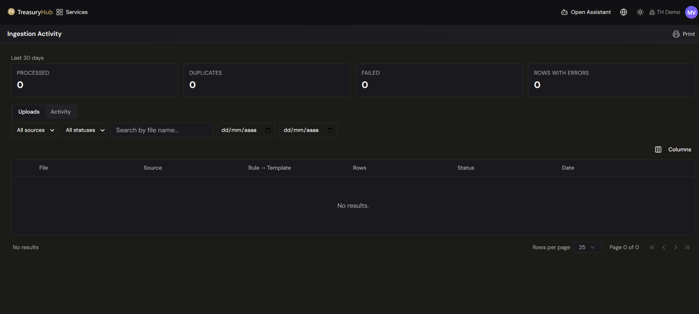
How to use it
Upload a file
- Open Integrations › Ingestion and choose Upload file.
- Drag your files onto the panel, or Choose files. Several can go up at once, as CSV, TXT,
Excel (.xlsx/.xlsm) or PDF; the panel states the file-count and size limits, and a meter shows
how much of the batch you have used.
- Each file gets its own row, and each is set up on its own. While the row loads it reads
Looking for templates for this file…, then the Template list offers the templates that
recognise it.
- Choose what should read the file:
- An existing template from the list.
- Create a new template with AI — the last option in the same list. The row is marked
New template, and an optional Event type appears: leave it on Let the AI decide,
or name the kind of record the file holds to guide the proposal.
When nothing recognises the file the row says so and points you at the AI option. If AI is not
enabled for your organisation it says that instead, and the file has to come out of the batch.
If the file could not be read at all, Try again re-reads it.
5. Fill in what the file itself does not state — the account, and a currency where the
account does not settle it. The account is asked for once the template says what the file
loads, because bank movements and payment orders cannot be committed without one.
6. With several files of the same shape, set the first one up and use Apply to similar files to
copy its template, account and currency to the rest.
7. Upload. Files already loaded before are skipped as duplicates, and the panel switches to
This upload so you can watch the batch land. Files given an existing template are parsed
and loaded straight away.
8. For a file you asked AI for, the draft waits for your review: it opens in the template editor
with the parsed file beside it, every field filled in and marked, so you can check and change
anything before it becomes real. Save template publishes the template; Save template and
load file publishes it and loads the file. Nothing is created or loaded until you choose.
See Parse Templates.
Check that data has arrived
- Open Integrations › Ingestion Activity.
- Read the Last 30 days tiles (Processed, Duplicates, Failed, Rows with errors) for a quick
health check.
- Switch between the All, Pending review and Worker activity tabs. Pending review
gathers the files waiting on a decision from you and carries a count, so it is the one to clear
first.
- Use the filters — source, status, search by file name, and the from / to dates — to focus
on what you care about (for example, only files that need a template). The grid shows File,
Source, Rule → Template, Rows, Status, Date.
- Expand any row with the arrow on its left to see its detail: how many rows went in, the reason a
file was parked or refused, and the row errors.
Give a parked file its template
A file with Needs template is waiting for an answer, and the file is already stored.
1. Expand the row. The reason it was parked is shown first — an unknown format, two templates that
match it equally well, or a PDF nobody could read.
2. In Template for this file, choose an active template from the list.
3. Click Process with this template. The file goes back into the queue with your choice, and the
worker honours it instead of detecting again.
4. The same row updates — there is no re-upload and no second row. If the file arrived with no
country or account of its own (an email or SFTP file no rule claimed), supply them with the
template; a template that loads bank movements or payment orders cannot commit without an account.
You can also have the template drafted for you: choose Create template with AI in the row's
Actions menu, review the draft that comes back, and save it. See
Parse Templates.
When neither route gets the file in — a bank has changed its statement and nothing recognises it,
or the AI could not propose a template either — the same row offers Extract the movements with
AI, which reads that one file so it can be loaded while the format is sorted out. See
AI Extraction.
Resolve a failed file
A Failed file inserted nothing, so there is nothing to undo.
1. Expand the row and read Row errors — the per-row table gives the row number, the error code,
the message, and the external ID, amount, currency and value date it read. Page through it when
the file is large.
2. Rows reported as not loaded are rows that were not at fault: they are listed so that every row
of the file is accounted for.
3. Fix the cause — usually the parsing template (a column mapped to the wrong
field, a date format it doesn't read, an identifier column that isn't unique).
4. Upload the same file again. The platform deliberately accepts the same bytes after a failure,
and closes the earlier row rather than leaving two live rows for one file.
Other outcomes, and what to do about them
- Not processed — Duplicate — nothing to do. The data is already in the platform under the
upload the row points at.
- No data — nothing to do. The source sent a file with no movements in it.
- Superseded — nothing to do. Follow the newer row.
- A PDF that could not be read — a scanned, image-only PDF, a password-protected one, or a
damaged file cannot be parsed, and no template will change that. The only action on the row is
Download, so you can look at the file and ask the source for a readable one.
- An email attachment — an email message has its own Reprocess action on the mailbox's
message list; see Email Ingestion.
Watch a batch as it lands
A manual upload can carry several files at once. The platform answers as soon as the files are
stored, so each file appears in the grid — initially as Queued — from the moment it is accepted,
and the rows change status as the workers get to them. You can watch the batch progress instead of
waiting on a dialog.
Tips & good practices
- Make Ingestion Activity part of your morning routine — a quick scan of the tiles, plus a filter
to Needs template and Failed, catches gaps before they affect your position.
- Needs template is a backlog, not an alarm: it is work waiting for a person, and the file is
safe until you get to it.
- Errors here are often the upstream cause of reconciliation
breaks; resolving them at ingestion time saves work later.
- Related failures also surface in Alerts, so you don't have to watch this
screen constantly.
- Integrations Overview — all ingestion channels.
- File Import — the templates and formats behind these rows.
- AI Extraction — the fallback when no template reads a file.
- Parse Templates — have the template a parked file waits for drafted with the
AI assistant, then review it, publish it and activate it.
- PDF Statements — why a PDF was refused, and the load refusals explained in plain
language.
- Integration Status — connection-level health (last sync, uptime).
- Alerts — where ingestion failures also appear.
2 · Integrations
NetSuite (ERP Integration)
Where to find it: Integrations › Services (NetSuite connector). The connection settings are kept there;
no NetSuite exchange runs from them.
Who uses it: finance systems owners, accounts payable, treasury operations, administrators.
Permissions required: administrator to view or change the connection; see Roles & Permissions.
Overview
The NetSuite integration linked Treasury Hub to your NetSuite ERP: a nightly sync brought NetSuite
accounts, companies, and currencies into Treasury Hub, and G/L
postings were sent back to NetSuite and followed up until NetSuite
confirmed them.
No NetSuite exchange runs any more. The nightly sync, the dispatch of postings, and the status
polling have all been switched off. Nothing is read from NetSuite and nothing is written to it.
Nothing has been deleted. The NetSuite data already in Treasury Hub, the postings that were
sent, their status history, and your NetSuite connection settings are all kept and remain readable.
G/L posting and its ERP delivery are being rebuilt from scratch, together with reconciliation, as
its own project.
Key concepts
- Sync — the nightly job that copied NetSuite reference data (accounts, companies, currencies)
into Treasury Hub. It no longer runs.
- Posting — a Treasury Hub accounting entry written to NetSuite's ledger. None are produced or
sent; see G/L Postings.
- Connection settings — the credentials and mapping stored for your NetSuite account. They are
kept, and nothing uses them.
What this means for you
- NetSuite reference data in Treasury Hub is frozen at the last sync. If you add an account, a
subsidiary, or a currency in NetSuite, it will not appear here.
- Nothing reaches NetSuite from Treasury Hub. Book treasury activity in NetSuite the way you did
before the integration posted for you.
- Your credentials stay in place, so nothing has to be re-entered when ERP posting is rebuilt.
If your security policy requires it, you can still rotate or remove them.
- Other ingestion channels are unaffected — bank files, APIs, and email ingestion keep running;
see Integrations Overview.
Tips & good practices
- Check your NetSuite chart of accounts against what Treasury Hub holds before relying on any report
that uses the synced reference data; it is as of the last sync, not as of today.
- Tell whoever owns NetSuite that the connection is dormant, so nobody troubleshoots a sync that is
meant to be off.
- Keep the connection settings as they are unless your security policy says otherwise.
2 · Integrations
Open Banking (PSD2)
Where to find it: click + Add Account on Home (top-right) and choose Open Banking. The Bank Accounts grid — where you can also add accounts — lives under Admin Console › Master Data › Bank Accounts. There is no separate "Open Banking" item under Integrations.
Who uses it: treasury operations, finance team, administrators.
Permissions required: administrator to link accounts (bank-account access); see Roles & Permissions.
Overview
Open Banking connects Treasury Hub directly to your bank accounts through the bank's own regulated
API — no files, no portals, no SWIFT. Once you authorize a connection, balances and movements
refresh automatically, giving you a real-time consolidated position across banks and countries.
It's the natural way to bring in local banks, fintechs, and neobanks — accounts that often sit
outside SWIFT.
Treasury Hub uses Nordigen, a certified account-information aggregator, to reach a wide network
of banks under PSD2 and equivalent Open Finance regulations.
Key concepts
- Open Banking / PSD2 — regulation that requires banks to expose secure APIs so authorized
third parties can read account data on your behalf.
- Aggregator — a certified provider (Treasury Hub uses Nordigen) that connects to many banks
through one integration, so you don't integrate each bank separately.
- Consent (OAuth) — you authorize the connection once at your bank; Treasury Hub then keeps the
access current automatically until the consent expires and needs renewing.
- Account discovery — when you connect a bank, Treasury Hub can discover the accounts you hold
there rather than you entering each one by hand.
What data is ingested
- Balances — available balance, book balance, currency, and the time it was last updated.
- Movements — date, amount, counterparty, reference, and category, normalized to Treasury Hub's
standard model.
- Accounts — discovered automatically for each connected bank.
- Account metadata — account type, IBAN, currency, and bank.
Before you start
- Check that your bank is reachable via Open Banking in your country (coverage is broad in Europe and
the UK, and growing in Latin America).
- Have your bank login ready for the one-time authorization step.
- Confirm you have rights to add or link bank accounts — see
Roles & Permissions.
How to use it
Link a bank via Open Banking
- On Home, click + Add Account (top-right) and pick Open Banking linking. You can also add
accounts from Admin Console › Master Data › Bank Accounts. See
Bank Accounts › Link an account via Open Banking.
- Select your bank / country from the list.
- Complete the secure authorization (OAuth) at your bank — you log in at the bank, not in
Treasury Hub.
- Confirm the accounts you want to bring in from those discovered.
- Save. Balances and movements begin refreshing automatically.
Set up with the AI integration sub-agent
- When connecting a new bank, the integration sub-agent can guide you step by step: choosing the
bank, completing authorization, and verifying the first data.
- If a connection fails or data looks incomplete, the agent helps diagnose the problem and
suggests the fix.
Configuration
- Refresh cadence — balances and movements update automatically on a schedule.
- Alerts — the integration sub-agent monitors connections continuously and can alert you to:
- a consent / token about to expire (so you re-authorize before data stops),
- a bank not responding or a disconnected account,
- data not updated within an expected window,
- and business signals such as a low balance or an unusual movement.
Tips & good practices
- Re-authorize promptly when you're warned a consent is expiring — otherwise the feed pauses until
you do.
- Use Open Banking for banks and fintechs where SWIFT isn't available; the two channels
complement each other and land in the same unified position.
- After linking, check Ingestion Activity to confirm the first balances and
movements arrived as expected.
2 · Integrations
Parse Templates
Where to find it: Settings › Ingestion › Parse Templates (the list, the drafts and the editor) ·
Integrations › Ingestion (where a file waiting for a template is picked up)
Who uses it: treasury operations, finance systems owners, administrators.
Permissions required: See Roles & Permissions.
Overview
Every bank, payment provider and ERP exports its data in its own shape: one calls a column Fecha,
the next Value date, a third splits the amount into separate debit and credit columns. A parse
template is the saved answer to the question "what does this file mean" — it maps the columns of a
file you receive onto the fields Treasury Hub stores, so the same export can be loaded every month
without anybody re-keying it.
When a file arrives — uploaded on Ingestion, or arriving on its own
through Email Ingestion or SFTP Ingestion — Treasury Hub
works out whether it already recognises the format. If it does, the file is read with the template it
matched and there is nothing for you to do. If it does not, the file stops on Ingestion as Needs
template and waits: a file no template recognises is never loaded on a guess.
A template for that format is created with the AI assistant. It reads the file and drafts the
template from the file itself — the sheet and the header row, how dates and numbers are written, what
each column means, and the rules that will recognise the next file of the same shape. The draft is a
proposal, not a decision: it opens in the template editor with everything filled in, each field marked
with what is missing or wrong, and a preview of the records it would create. You review it, adjust
what needs adjusting, and publish it. From that point the format is recognised and its files load on
their own.
Key concepts
- Template — one saved definition for one source and one format ("Bank X statement", "PSP Y
settlement export"). It declares a file type, how to read the file, and what each column means.
- File type — what kind of file the template reads: CSV, Microsoft Excel, SWIFT MT
message, PDF document, Fixed-width text or XML document. A template reads only its own
file type, and the editor changes which sections it shows accordingly.
- Section (stage) — one part of the template editor (Basics, Settings, Fields, Detection…).
Reviewing a draft lets you jump between the sections with the preview beside you; building a
template by hand walks them in order as a wizard.
- Destination field — the Treasury Hub field a column feeds: amount, transaction date, currency,
reference, counterparty name, external ID, and so on. Each destination field can be mapped only once
per financial event.
- Financial event (financial type) — the kind of record a row becomes (a bank movement, a payin, a
payout, a payment order). One template can declare several and route each row to the right one.
- Discriminator column — the column a multi-event template reads to decide which event a row
belongs to.
- Transformation — a small recipe that computes a field instead of copying a cell: the amount from
separate credit and debit columns, the type from the sign of the amount, a fixed value, a value
chosen by conditions, or arithmetic over two mapped fields.
- Extra field — a value that is not in the table: the statement period, an account number in a
banner line, a report date. It is read once per file and can then feed the rows.
- Declared sheet — for an Excel template, one sheet of the workbook that the template reads. A
template can declare several, each with its own header row, its own columns and its own event.
- Movement date — the day the movement happened, as opposed to the day the file was loaded. Every
event a template creates maps one, and a template cannot be saved until each of them does.
- Row filter — a rule that keeps or drops whole rows before anything is mapped (a totals line, a
legal notice, a block of rows belonging to another section).
- Detection — how Treasury Hub works out, on its own, which template reads an incoming file.
- Format fingerprint — the shape of a file: its format, its sheet, its header row and the exact
column labels. A template learns the fingerprint of every file it loads successfully, so the next
file of the same shape is recognised without anyone declaring a rule for it.
- Status — Draft, Active or Inactive. Only an Active template is ever used to load
a file.
- Proposal — one attempt to build a template from one file. It produces a draft template plus a
conversation you can use to correct it.
- Draft — the proposed template before you publish it. A draft recognises no file. It only
starts reading files when you press Save template; saving the draft is not enough.
- Pending review — a file whose proposal is finished and waiting for a person. The Ingestion
menu entry carries a counter of how many proposals are waiting.
- Waiting files — every file of that same format that arrived with no template. They are attached
to the draft, so one decision can release all of them.
- Errors and notes — an error is something that would stop the load (a date that cannot be
read, a required field with no column). A note is something to look at (a balance checked on
only some pages, a column deliberately left unmapped and why). Errors stop a template from being
published; notes never stop anything.
- A value only you can give — a field that this kind of record requires and the file simply does
not contain. It is marked rather than invented, and you supply a column or a fixed value.
- Sample file — the file a template is built against. The preview is recalculated against it at
every change.
Before you start
- Have a real sample file. A template is always built against one, whether it is drafted for you
or you build it by hand, and the preview runs against that file at every step.
- A proposal reads CSV, TXT, Excel or PDF. A PDF with no readable text, with no movements in it,
holding several accounts, password protected, or that could not be analysed, is not proposed for —
those get a template by hand.
- Your organisation needs at least one financial event type that a proposal is allowed to produce.
With none, the proposal stops before any work is done and says so; an administrator enables the
event types.
- A proposal can give the template an account balance as well as its movements — the balance the
statement prints, loaded once per file — when your organisation has the account-balance event type
enabled. Without that type the balance is left out, and a template that loads one cannot be
published.
- Know what the file represents — bank movements, payment orders, settlements — and which fields are
mandatory for that kind of record.
- A template never carries one account's data. The account a file is booked to comes from the upload
(or from the email or SFTP rule that claimed the file), never from the template, so one template
reads every account of the same bank.
- Templates are listed per organisation. The list also shows read-only Global default templates
that Treasury Hub maintains; to change one, duplicate it first.
How to use it
Follow what happens when a file arrives
- The file is matched against your Active templates — see
How a file finds its template.
- A format that is recognised loads straight away, with no decision asked of you.
- A format that is not recognised parks. The file appears on Integrations › Ingestion as
Needs template and nothing is read from it. A channel can be set to ask for a proposal the
moment this happens — see
Let a channel park unknown files for a proposal.
- Create the template for that format with the AI assistant, publish it, and the waiting files load.
Have a template drafted for a file that is waiting
- Open Integrations › Ingestion and find the file. Its status reads Needs template.
- Open the row's Actions menu and choose Create template with AI.
- The row changes to ✦ The AI is proposing… and the list refreshes itself while the work runs.
You can leave the page; the counter on the Ingestion menu entry tells you when something is
waiting.
- When it finishes the row reads ✦ Pending review — or ✦ Pending review · one value missing
or · things to fix when the draft still needs you. Click Review on the row, or Review
template in the Actions menu.
If the file cannot be proposed for, the menu says why instead of starting: the format is not one of
the four accepted, its columns could not be recognised, a proposal is already open for it, or its
template has already been published and the file only needs Process with template.
Ask for a draft as you upload
You do not have to let a file park first. The choice is on the upload panel, per file.
- Open Integrations › Ingestion and choose Upload file.
- Drag the files into the panel, or click to choose them. It shows how many files and how many
megabytes the upload still has room for, and names any file it refuses together with the reason.
- Each file gets its own row. While the row reads the file it says Looking for templates for this
file…, then the Template list offers whatever recognises it, with Create a new template
with AI as the last option. Choose that and the row is marked New template.
- Event type is optional, and only appears for a file you asked AI for. Leave it on Let the
AI decide, or name the kind of record the file holds to guide the proposal.
- Give the file its account and, where neither the file nor the account settles it, its
currency. With several files of the same shape, Apply to similar files copies the first
row's template, account and currency to the rest.
- Click Upload. The This upload panel lists the batch and refreshes while anything is still
running.
- A file with a template loads straight away. A file you asked AI for shows New format: the AI is
preparing the template, then offers Review.
Proposals waiting for you are also collected on the Pending review tab of the same screen, and on
the AI drafts tab of Settings › Ingestion › Parse Templates.
Review the draft
- Open the draft from Pending review, from the row's Review, or from the AI drafts tab of
Parse Templates.
- Read the AI assistant summary at the top: the file, how many files share the format, how many
rows were read, how dates are read and where a missing year comes from, and chips saying how far
the draft is from loadable — N values to complete, N to fix, Ready to load, and for a PDF
statement whether the balance adds up.
- Work down the section list on the left. Each section carries its own counter, so you can go
straight to what is pending instead of reading the whole template — see
What each section of the editor holds.
- Inside a section every field is marked with what is known about it:
- A value is missing — an orange outline. The file has no column for it; choose a column, a
transformation or a fixed value.
- Validator error — a red outline. The mapping is wrong and the rows would not load. The
message says how many rows are affected and shows examples taken from the file.
- Changed by you — a quiet tag on a field you edited yourself, so your own corrections stand
apart from the proposed ones.
- Errors that belong to a section rather than to one field appear at the top of that section, with
the section's notes in a separate block beneath them. Read the notes — they are where the
platform explains the choices it was least certain about — but they never stop you from saving.
- When a date cannot be told apart from the same date with day and month swapped, or a separator from
its opposite, you are asked to decide: tick I confirm dates and amounts are read this way.
- Click Save draft whenever you have changed several things. A draft saves even with errors in
it — saving is how the draft is re-checked against the real file, and it is what refreshes the
counters, the preview and the balance check.
What each section of the editor holds
The sections always run in this order; which of them appear depends on the file type, and the
table below says which. This is what you are looking at in each one and what
you can change.
- Basics — name, file type, description, the Active switch, and the default status (Pending,
Rejected or Booked) that the records this template creates take.
- Settings — how to read the file: separators, encoding, which sheets of a workbook to read,
where the header sits, how dates and numbers are written. Check these first when whole columns
look wrong. See Reading settings by format.
- PDF page regions (PDF only) — where the table sits on the page, where its header is, and where
each column is split. Drag the regions when a column is cut in the wrong place. See
PDF Statements.
- Columns (PDF only) — each extracted column can be cleaned with an expression when text from a
neighbouring column bleeds into it.
- Pre-process — ordered text transformations applied to the raw file before it is parsed
(replace a character, replace by expression, normalise line endings, make sure the file ends with
its trailer line). Useful for text formats that arrive slightly malformed.
- Row Filters — include-only and skip rules over whole rows, each testing one named column or any
column for contains, equals, is empty or matches an expression. This is what keeps totals
lines, subtotals and footer notes out of your data; add a rule here when a summary row shows up in
the preview as a movement.
- Extra Fields — values read from outside the table. For a text file they are a row plus an
expression with a capture group; for a PDF, a region drawn on the page. The statement period is the
common one: it is what lets dates that print no year be completed from the file itself.
- Fields — the heart of the template. One or more financial types, and for each one every
destination field mapped to a column (by name, by Excel letter or by position) or to a
transformation. Required fields are marked and cannot be removed, and a destination can be used
only once per event. A date field can carry its own format override when one column is written
differently from the rest.
- Every event maps a Movement date — the day the movement happened — to a column, a
transformation or a fixed value. A template cannot be saved while an event leaves it unmapped.
For a file that carries no date at all, the Load date transformation dates every row with
the day the file arrived; use it only in that case.
- An event of a settlement or an invoice can map the breakdown fields as well as its amount —
gross, fee, tax on the fee, dispute hold, refund discount, released hold, subtotal, tax,
discount, withholding. Each one is offered as a destination named Breakdown: , and
the file states each figure in its natural sense (a fee is
450, not -450). See
Financial Events for what the breakdown is for.
- A shape that requires an External ID and a file with no column that identifies one row are
reconciled by the Generate ExternalId transformation: it computes one id per row out of all
that row's values, with an optional Prefix, so the same file always produces the same ids.
It is only ever used on External ID.
- When a template declares more than one financial type on one sheet, the Discriminator
column and its rules route the rows: equals, not equals, contains, starts with, ends
with, matches regex or is not empty. The first matching rule wins; rows that match none are
reported as unassigned in the preview rather than loaded.
- When an Excel template declares several sheets, the sheet does the routing instead: each
event, field and row filter carries Reads from sheet, and the mapping table's column header
becomes Column of . A template reads each financial type once, so the same type cannot
be put on two sheets.
- Update the account balance with this file is a switch on its own group card, marked One per
file. Turned on, the template loads the balance the statement prints as well as its movements:
One balance per file. Each field is read with its own transformation and doesn't depend on the
rows. Turned off, this template's files won't update the account balance. Transformations are
kept: turn it on to use them again. See
Say where each balance figure is read from.
- Validations — per-event checks on the value a field ended up with: required, matches an
expression, within a range, minimum or maximum length, one of a list, a valid IBAN, a valid ISO
4217 currency, not a future date, and pair rules (mutually exclusive, exactly one of, both
required).
- Detection — the rules that let this template claim an incoming file. Worth a look before you
publish: a template that recognises nothing but its own fingerprint will park the next file
instead of loading it, and a rule that is too generic will claim files from another source. See
How a file finds its template.
Find your way around the editor
The editor gives the whole width to one pane and lays the other over it.
- By default the preview is the wide pane, and the template's sections open over it from the
right when you click Edit template in the toolbar. The panel has no veil behind it, so the
preview stays readable while you work in the form.
- Swap the panes in the toolbar exchanges them: the sections take the whole width and the preview
becomes the overlay, and the button that opens the overlay renames itself Preview. The choice
is remembered next time you open an editor; the overlay itself always starts closed.
- On a narrower screen the overlay and the AI assistant share one sheet as two tabs —
Template (or Preview when the panes are swapped) and the assistant. On a wide screen the
assistant is a column of its own at the right edge.
- Whatever you do with the panes, the form keeps its state: your scroll position, what you have typed
and the groups you have opened all survive closing the overlay and swapping.
Creating a template from scratch still walks the sections in order as a wizard. The two-pane editor is
what you get when you open an existing template or review a draft.
Read the preview
The preview recalculates whenever a field changes. It is the wide pane unless you have swapped them,
in which case Preview in the toolbar brings it over the form.
- Result (also called Parse result) shows the records the template produces, with a bar for
All, Valid and With errors so you can jump straight to the rows that have a problem, and
the problem named on the row itself. The footer counts the rows read, the rows without errors, the
rows with errors and the rows skipped. Pre-processing, the extra fields and their values, and the
rows a filter removed each have their own collapsible section, folded away until something looks
wrong.
- Original file (also called File visualization) shows the file as it was received and as the
template reads it — the delimiter and the columns it produced, the sheet and its first rows for an
Excel file, the page with its regions and column splits for a PDF.
- A multi-event template shows one block per financial type, plus an Unassigned rows block for the
rows the discriminator matched to nothing.
- For a workbook of more than one sheet, a row of sheet tabs sits under the preview table, one
per sheet of the file. Each tab says whether the template reads that sheet; a sheet the template
declares is shown through its own layout and row filters, one it does not is shown raw.
- For a template that loads a balance, an Account balance card shows the balance that would be
loaded and its date, where each figure was read from (Read from «Saldo final», Read from the
last row of the Balance column), and whether it adds up — Adds up, Doesn't add up,
Unchecked, No balance, Other currency, or Off when the template does not update the
balance. When it does not add up, the card names the row where the chain breaks and offers Go to
row N and Ask the AI Assistant. The card is part of every preview — the editor, the
upload-with-a-template dialog and Ingestion — and for CSV and Excel as much as for PDF: a
spreadsheet's balance is reconciled exactly as a statement's is, and Go to row N works there
too.
What the preview shows is what the load does. The preview runs the same parsing engine and the
same gate the real load runs, so a row the preview flags as blocking is a row that would stop the
file, and a clean preview means a clean load. The balance check runs here too, on the file in front
of you. Two things can only be judged by a real load of a real file: a PDF's column labels as
printed in that file, and the balance of next month's file — see
PDF Statements.
A preview reads one file at a time, and a file given to any of these screens must be 20 MB or
smaller; a manual upload accepts at most 20 files at once.
Correct the draft by describing the change
- Open AI assistant from the toolbar. A dot on the button means there is a reply you have not
read.
- Type what is wrong in plain language — which column the real amount comes from, that a line is a
total rather than a movement, that two columns are the wrong way round. Enter sends; Shift+Enter
adds a line.
- Your unsaved edits are saved first, so the assistant works on the draft you are looking at. The
draft is rewritten and the screen repaints with the new version.
- Undo last reverses the most recent exchange and puts the draft back as it was, including the
markers on the fields it had touched. You can use it repeatedly.
- Several problems offer Ask the AI Assistant beside them, which opens the assistant with the
question already written for you.
Nothing the assistant does is published. The draft still has to be saved as a template by you.
Publish the template, or publish it and load the files
Two buttons finish the job. Both need the draft to be free of errors and the reading confirmed.
- Save template creates the template and leaves the files alone. They stay on Ingestion waiting,
and you load each one later with Process with template. Use this when you want the format
recognised from here on but are not ready to load what has already arrived.
- Save template and load file creates the template and puts every waiting file of that format
back into the queue. If those files arrived without an account or a country, a dialog asks for them
first and lists the files it is about to load.
- Either way you land back where you opened the draft from, and the outcome is confirmed on screen:
Template «name» saved, or Template saved and N files queued.
- From there it is an ordinary parse template. It appears on Parse Templates with an ✦ AI
badge, it has learned the shape of its sample file, and it recognises the next file of that format
on its own.
While the buttons wait, the line underneath says exactly why — «Value date» is missing, fix
«Amount», confirm dates and amounts, fix 2 errors in Detection, save the draft to validate it.
Every reason is a link to the place that fixes it.
One error can be accepted instead of fixed. When the only thing blocking the publish is that a
PDF statement's balance does not add up, saving offers you the choice: a dialog headed The
file's balance does not add up repeats the figures and warns that, saved anyway, the template
carries no balance check: uploads of this format are no longer refused over the balance, and the one
the file prints is loaded as it is. Save anyway publishes it; Cancel leaves it a draft. No
other error can be confirmed away, and confirming the balance lets nothing else through. See
PDF Statements.
When a proposal fails
A draft that could not be filled in opens with a banner saying so and naming the reason, and the
draft stays editable. Three ways out sit side by side:
- Retry with AI starts the proposal again from the same file.
- Complete by hand drops you into the fields to finish the template yourself. A hand-finished
draft saves like any other.
- Or choose an existing template hands the file to a template you already have. The file goes back
into the queue with that template and the draft is discarded.
The reason tells you which of the three is worth trying:
| What it says |
What to do |
| The AI budget is spent |
Retrying fails the same way. Wait for the budget to renew or have it raised; build the template by hand meanwhile. |
| The AI service failed · The AI took too long · Ingestion answered with an error |
Passing problems. Retry with AI. |
| The proposal could not be validated |
The file was harder than the platform could resolve. Retry once, then complete it by hand. |
| This looks like a balances file · This looks like a positions report |
Deliberately not proposed for. Create the template by hand. |
| This client has no financial event type enabled that the AI can propose |
Ask an administrator to enable the event types your organisation loads. No proposal can be made until one exists. |
A proposal that is interrupted part-way through is picked up again only a limited number of times.
After that it is marked as failed with The AI took too long and waits for you, rather than retrying
for ever. Retry with AI starts it afresh with a clean count.
Discard a proposal
- Click Discard proposal in the draft, or Discard on the AI drafts tab of Parse Templates.
- The dialog names the draft and says how many files are attached to it.
- Confirm. The draft and its conversation are deleted, and the files it was holding go back to
waiting for a template on Ingestion. Nothing is lost and nothing is loaded: ask for another
proposal, choose an existing template, or build one by hand.
A proposal still being written cannot be discarded. Wait for it to finish or to fail.
Build a template by hand
Some files are never proposed for — a fixed-width text file, an XML message, a SWIFT MT message, a
balances or positions report — and sometimes you would simply rather start from the form.
- Go to Settings › Ingestion › Parse Templates and click New template.
- In Upload a sample file, pick a real file from the source. Treasury Hub pre-selects the File
type from the extension.
- Fill in Basics, then click Next through the sections. A section unlocks as soon as the ones
before it are valid, so the optional ones open on their own once Basics, Settings and Fields are
complete. Every section holds exactly what it holds in a drafted template — see
What each section of the editor holds.
- Open the Preview at any point and clear the With errors list.
- Click Create template in the footer. The template is created active unless you turn the
Active switch off in Basics.
Test a file against the templates you have
- On Parse Templates, click Test with file.
- Drop the file into the dropzone. Nothing is stored and nothing is loaded — this screen only reads.
- Template detection lists every template whose rules were evaluated, each with n/m rules
matched and, rule by rule, whether it matched and why. The line above the list says what was
decided: the template with the most matched rules wins, none matched all of its rules, or there is
a tie to break by hand. Click Use this on any candidate to preview the file under it instead.
- Read the preview exactly as you would in the editor — the same two tabs, the same counts, the same
gate.
Activate, deactivate, duplicate and delete
- On Parse Templates, the Active switch on each row turns a template on and off.
- Duplicate in the row's actions menu makes an editable copy named (copy). The copy
is created inactive on purpose, so it never competes to read files until you have reviewed it.
- Delete removes the template and everything in it (settings, fields, validations, mappings) and
cannot be undone. It is refused while an email or SFTP ingestion rule still points at the
template — change the rule first.
- Every save increments the template's revision, so a template two people have open at once
cannot be overwritten silently.
Teach a template another file shape
A template learns the format fingerprint of every file it loads successfully, so a shape that
worked once is recognised on its own next time. You can also teach it from a sample — "recognise files
like this one" — and you can list the formats a template has learned and make it forget one.
If another of your templates already knows that exact shape, Treasury Hub does not refuse: it names
the templates that share it and asks you to confirm. Two banks' exports — or one provider's exports for
two countries — can legitimately look identical, and the declared rules (a file-name pattern, a
constant value in the file) are what tell them apart.
Configuration
Sections by file type
| File type |
Sections the editor shows |
CSV (and .txt / .tsv read as delimited text) |
Basics · Settings · Pre-process · Row Filters · Extra Fields · Fields · Validations · Detection |
| Microsoft Excel |
Basics · Settings · Row Filters · Extra Fields · Fields · Validations · Detection |
| PDF document |
Basics · Settings · PDF page regions · Columns · Extra Fields · Fields · Validations · Detection |
| SWIFT MT message |
Basics · Settings · Pre-process · Detection |
| Fixed-width text |
Basics · Settings · Pre-process · Extra Fields · Fields · Validations · Detection |
| XML document |
Basics · Pre-process · Detection |
Why they differ: Excel works on typed cells rather than on text, so pre-processing the raw stream has
nothing to act on. A PDF is read from the geometry of the page rather than from a stream, so it skips
pre-processing too and gains the two sections that describe the page instead; a PDF template set to
one row per document (an invoice rather than a statement) loses those two as well, because there
is no table to delimit and every value comes from extra fields. A SWIFT MT message has a fixed
structure, so there is nothing to map and nothing to validate field by field. Row filters apply to the
two tabular formats, CSV and Excel.
- CSV — File structure: Encoding, Delimiter, Quote char, Escape char. Header:
Has header, Header row index, Skip rows before header, Skip rows after header. Value
format: Date language (it only translates month names such as
mar), Date format (the
day/month/year order and the separator — this is what decides how a date is read), Decimal
separator, Thousand separator and Trim values. Both separators must be chosen before the
template can be saved.
- Microsoft Excel — Sheet & header: the Workbook sheets table, which is where you say which
sheets of the workbook the template reads — see
Read several sheets of one workbook. A template that reads
a single sheet keeps that sheet's Has header, Header row index and the two skip counts
inline beside the table; one that reads several gives each sheet its own set. Format &
processing: Evaluate formulas, Detect native date cells, Date format, and the
Decimal separator and Thousand separator used when a number arrives as text.
- SWIFT MT message — Encoding and Message type (for example
MT940). The rest of the
structure is fixed by the standard, which is why this template needs no field mapping.
- PDF document — Encoding, Date language, Date format, Decimal separator,
Thousand separator, Trim values, and the one row per document switch for documents that
are not tables. Everything about where the table sits on the page lives in the PDF page-regions
section — see PDF Statements.
- Fixed-width text — the file type exists and its detection rules work, but the Settings section
offers no reading settings for it. In practice a fixed-width
.txt is read as delimited text, or
loaded under a template chosen for it explicitly.
Dates written as a number. Every Date format picker — the template's own in Settings, and a
field's Format override in Fields — also offers a Unix timestamp group: Unix (seconds) and
Unix (milliseconds), with a Time zone list beside it that defaults to UTC (default). A
column of plain integers is never read as a timestamp on its own: the format has to be chosen on
purpose. A value that would fall outside the years 1970 to 9999 is reported as unreadable rather than
guessed.
A file with no date at all is dated by the Load date transformation on its Movement date
field: Every row takes the day the file arrived, in the time zone you pick (UTC if you pick none).
It is the day the file reached Treasury Hub, not the day it was processed, and it is only worth using
when the file truly carries no date — a file that has one should always be read from it.
Read several sheets of one workbook
Some providers deliver one workbook with the collections on one sheet and the payouts on another. An
Excel template reads as many sheets of that workbook as you declare, each with its own header row,
its own columns and its own event.
- In Settings, the Workbook sheets table lists every sheet of the sample file, in the order
the workbook holds them: These are the sheets of the file. Switch on the ones the template must
read; each is matched by its exact name or by its position. If a sheet that is switched on is
missing, the file is not processed.
- Turn the Read switch on for each sheet the template must read. With no sample file loaded,
Add sheet lets you declare one by hand instead.
- Set Match by for each declared sheet — Name (its exact name) or Index (Sheet N of the
workbook). A sheet matched by name keeps its position too, as a fallback if it is renamed.
- State in the file reads Found or Not in the file for each one, and the footer
summarises: The template declares 2 sheet(s) · the sample file has 5. and Not read: …
- As soon as the template declares more than one sheet, each gets its own Layout of
block — Has header, Header row index, Skip rows before header, Skip rows after
header — and every event, field and row filter must say which sheet it Reads from.
- Removing a sheet removes what reads from it. The confirmation says how many events, fields and
row filters go with it; they are not moved to another sheet.
Two rules follow:
- A sheet you do not declare is ignored, and that is not an error. Extra sheets are ignored
without an error: if the bank adds a new sheet, the template keeps processing the same way.
- A sheet you do declare has to be there. When a declared sheet is missing from a file, nothing
of that workbook is processed and the row names the sheet it could not find. In the editor the same
problem reads This template cannot process the file: sheet X is missing. Fix the name, match it by
index, or remove the sheet from the template.
How a multi-sheet workbook loads. Each declared sheet is loaded on its own, so one sheet that
fails does not take the others down with it. On Ingestion Activity the
workbook is a single row carrying an n of m sheets count; expand it for the Workbook sheets
panel, one line per sheet with its event, its status, its row count and its own actions. A workbook
where some sheets loaded and others did not reads Partially loaded, and the sheets the template
does not declare are listed as a note rather than an error.
What the AI proposes for one. Given a workbook, the assistant proposes a single template that
reads the sheets holding events and leaves out the ones that do not — a cover page, a summary, a
parameter list. It gives each event the sheet its rows are on instead of a discriminator column,
because a template that reads several sheets tells its events apart by the sheet. It never puts two
events of the same financial type on two sheets: a template reads each type once.
A statement prints its balance in a different place in every bank's layout: a labelled line, a column
beside the movements, a figure in the header. The account-balance group lists every balance field
separately, each with the Source it is read from and its Value in the sample, so you can
check figure by figure what the template would load rather than trusting one number at the bottom.
| Field |
What it is |
| Closing balance |
The balance that is loaded for the account. |
| Opening balance |
It only reconciles the movements: it isn't loaded. |
| Balance date |
The day the closing balance belongs to. |
| Currency |
The currency of the balance. |
| Balance type |
Which balance it is — a statement's closing balance, for instance. |
Each field names its own way of reading the file, chosen like any other transformation:
- Labelled row — finds the row whose label column says the given text and reads the value of
another column of that same row. You give the Label column, the Label (for example
FINAL BALANCE), the Value column and the Comparison.
- Movement row — takes values from a movement row of the file. A row prints the balance after
its movement: for the opening balance, subtract that row's amount. You pick the Row (first or
last) and, where needed, an Expression that adds or subtracts other fields of that same row.
- Opening balance — the statement doesn't print a closing balance: the opening balance is
loaded.
- End or start of the period — uses the last day of the period the statement prints, or the day
before it starts. This is the usual source of the balance date.
- Value of one of the file's extra fields — for a figure read out of a banner line or, in a PDF,
out of a region you drew.
- Currency of the movements — takes the currency the statement's movements are in, for the
account balance. Where the movements carry no currency, the account's own currency is used.
A balance the template cannot read with certainty is left unread, with a note on the field, rather
than guessed: the movements still load and only the balance is left out. The same happens when the
file's balance column turns out not to follow its movements — the balance this file prints is not
reliable: its Balance column does not follow the movements. The template will not load a balance.
When a load is refused over its balance or its currency
These checks run at load time on every tabular format — CSV, Excel and PDF alike — and the reason
is written out in full in the expanded row on Ingestion Activity, with a
short version under the status pill.
- The balance does not add up. The rows read do not reconcile with the balances the file prints,
under a template that was published with its balance proved. The row reads The balance does not
add up: the file prints X and the movements give Y (difference Z, row N). Nothing was loaded. Open
it in the template's preview to see that row — or the same sentence without a row when the break
is in a total rather than part-way down. Nothing is inserted, and you choose what to do from the
five options described in PDF Statements; they are the same for a spreadsheet.
(ERR-4038 for a CSV or Excel, ERR-4029 for a PDF.)
- The file is in a different currency from the account. The currency the file states — in its
rows, its balance, its amount cells or its header — is not the currency of the account it is being
loaded into. The row reads The file is in USD and the account «…» is in MXN. Nothing was loaded:
choose the USD account or check the template, or, when an email or SFTP rule chose the account,
change the rule's account for the next files. Nothing is booked in a currency the account does
not hold. (ERR-4039)
- A third, passing case is worth recognising: the account's currency could not be checked right
now, so nothing was loaded. Try again in a moment. Nothing is wrong with the file; the load goes
back into the queue on its own.
How a file finds its template
A file that arrives without a template named for it is matched in order:
- The detection rules a template declares. Which rules a template can carry depends on the file
type:
| Rule |
What it checks |
| Extension |
The uploaded file's extension, with or without the leading dot. |
| Filename regex |
An expression run against the whole file name. |
| Leading bytes or text |
A signature in the content, usually right at the start. |
| First line starts with |
The first line begins with a literal text, case sensitive. |
| Expected header |
The header row contains a given text (or the first rows, for Excel). |
| Anchor value |
An anchor value somewhere in the file's first 50 rows — for a header that is not on row 1. |
| Excel cell value |
One cell, by row and column, tested with an operator against a value. |
| Content contains |
A literal anywhere in the file's text, ignoring case. In a PDF it searches the text of the first pages. |
| XML namespace |
The XML declares a given namespace URI. |
| Format fingerprint |
The file's shape is one the template has learned. |
- Learned format fingerprints — a shape the template has already read successfully.
- The same header, cell for cell, in the same order and at the same row, as a template already
reads. This resolves with a warning, because it is weaker evidence.
Two modes decide how the rules are read. In Score — the default for a template you create — the
rules compete with every other template's and the complete candidate with the most matched rules wins;
when no rule decides, the learned fingerprint and the matching header may still pick the template. In
AllRequired the rules are the definition: the template wins only when every one of its rules
matches, it outranks every Score candidate when it does, and it takes no part in the fingerprint and
header steps — so a learned shape can never skip, say, a file-name rule.
A tie is handed to a person on purpose. When two templates both match a file completely, nothing is
loaded on a guess: the file is parked on Ingestion Activity as Needs
template and waits for someone to choose. The same happens when no Active template recognises the file
completely — a template that matches only some of its rules may read the file wrongly, so none is used.
The same sheet design saved as .xls, .xlsx or .xlsm is three formats, and each keeps its own
template: a template is never stretched to a format it was not built for without you saying so.
Rather than telling you no template exists, Treasury Hub names the one that already reads that
design.
- The file waits on Ingestion Activity as Needs template. Expand the
row and the reason reads This layout already has a template, but for .xlsx files. Your file is
.xls and each format has its own template, so we do not apply it on its own. Use it with one
click, or create one for .xls from «Actions».
- Below it, a card names the template with its format chip (.xlsx format), an Active badge and
the line Same sheet layout as this file. Use this template opens the Process with a
template dialog with that template already chosen.
- In that dialog the candidates are grouped — Matches this file, Same layout, other format,
Partly match, Other templates — so you can pick a different one instead. Choosing an
other-format template shows a note rather than a warning: This template is for .xlsx files. Your
file is .xls. We will read it with that template's columns; if a row does not fit, you will see
the error in the upload and can correct it.
- Process with this template puts the file back in the queue under it. Nothing is applied on
your behalf and the template learns no new shape from it — each Excel format keeps its own
template. If you would rather the format had one of its own, Create template with AI is still
on the row's Actions menu.
This is an Excel courtesy only. A CSV's delimiter and a PDF's shape carry information of their own,
so those formats are never offered across each other.
What a proposed template will never do
These are rules of the platform, applied to every draft after it is written and checked against the
real file. They are the reason a proposed template is safe to keep using on next month's files.
- A template never stores a year. When a file prints dates with no year, the template records
where the year comes from, not what it is: the statement period read out of each file. Every
month's file then gets its own year, and a year fixed in the template is refused outright. In a CSV
or Excel file that period must be an extra field of the template; a PDF can also read it from the
text of the page. If a file turns out not to print its period, the load stops and names the field
rather than guessing.
- A template never carries one holder's details. An account number, bank account data, an
identification number or a holder name taken from the sample is stripped out instead of being written
into the template, because that template will go on to read every other account's files from the same
bank. The same applies to the rules that recognise the file.
- A statement is refused rather than booked to the wrong account. If a template does fix an account
number and a PDF statement prints a different one, the load is rejected and tells you to take the
fixed account off the template.
- An amount keeps the sign its column gives it. A mapping that would throw the sign away is
reported as an error and blocks saving, because charges would otherwise load as credits. Where a file
carries money in and money out in separate columns, the draft says which it read as which, and why.
- The currency is taken from the file, not asked of you. It is read from the column header, from
the amounts themselves, from the file or sheet name, or from the country of the upload — and the
draft names the evidence it used so you can check it. Where the evidence is genuinely ambiguous it is
left as a value for you to give instead of being guessed.
- An identifier is never mapped from a column whose values repeat. A reference two rows of one file
can share does not identify an operation, and a file loaded under it would have every such row
rejected. The draft leaves the external ID unmapped, lets the load derive one per row, and tells you
which column it rejected and why. A running statement number is left out for the same reason: another
account at the same bank prints the same numbers.
What "Active" really controls
Only an Active template is ever used to load a file. That single rule covers every door into the
platform: automatic detection, the background worker that processes uploads, the manual Process with
this template choice on a parked file, the template picker in the upload dialog, and the email and
SFTP ingestion rules. Draft and Inactive templates are invisible to all of them; the editor is the only
place that can open one.
The consequence you will meet in practice: if an email or SFTP rule points at a template that is
later switched off, its files stop loading and park instead. Nothing is lost — they appear on
Ingestion Activity as Needs template — but no data comes in until you turn
the template back on or point the rule at another one. Check your ingestion rules before deactivating a
template.
Template names are deliberately not unique. Two templates may share a name, so a name is never what
identifies a template to the platform — its rules and its learned formats are.
Let a channel park unknown files for a proposal
An email mailbox or an SFTP connection can hand the files no rule claims to a proposal instead of
dropping them.
- Open the mailbox on Email Ingestion, or the connection on
SFTP Ingestion.
- Set Files that match no rule to Park and propose with AI. The alternative is Ignore.
- Only CSV, Excel and PDF files are proposed for. Each parked file opens a proposal of its own, and
the account and the country are chosen when you review it.
Let a rule detect the template instead of naming one
An email or SFTP rule can be set to ✦ Automatic instead of naming a template. Its files are matched
against the templates you already have; if none recognises a file, a proposal is made and the file
waits as Pending review on Ingestion. Note that a rule with no account in it leaves that choice to
whoever reviews the proposal, who must supply one before the files can load.
Tips & good practices
- Propose against the messiest sample you have, not the tidiest. Footer totals, a blank sheet in
the middle, a legal notice at the end: these are exactly what row filters exist for, and you want to
see them in the preview before the file is real.
- Read the notes, not only the errors. A draft with no errors can still be reading the wrong sheet
or the wrong column. The notes are where the platform explains what it decided and what it was least
sure about.
- Save the draft after every few changes. Saving re-checks the draft against the real file, so the
counters, the preview and the balance check all come back honest instead of stale.
- Use the assistant for intent and the form for precision. "The second amount column is the fee,
not the amount" is worth saying in words; changing one date format is faster in the field itself.
- Clear the With errors list in the preview before you publish. It is the same gate the load
runs, so clearing it here is the whole job.
- Prefer Save template while files are still arriving. The format starts being recognised
immediately and you keep control of when the backlog is loaded.
- The reviewer owns the result. A proposal is a head start, not an answer: confirm the event type,
the dates, the amounts and the account before you publish, because the template will keep loading
files on those terms.
- Discarding is cheap. If a draft is far from right, discard it and start again from a cleaner
sample — the files it was holding simply go back to waiting.
- Give the template rules that identify the source, not the customer. A file-name pattern or a
title line is a good rule; an account number or a company name is not — it would make the template
recognise one account's statements and ignore every other. For a format two providers share, add one
cheap distinguishing rule rather than relying on the learned shape alone.
- Duplicate before you experiment. The copy is inactive, so you can rework it against the same
sample while the live template keeps reading today's files.
- When a source changes its format, edit the template instead of starting over. Everything it has
learned — including the shapes it recognises — stays with it.
- Declare only the sheets that hold events. A cover page, a summary or a parameter list is not an
event, and leaving it undeclared costs nothing: undeclared sheets are ignored without an error,
which is also what keeps the template working when the provider adds a sheet.
- Think twice before matching a sheet by index. A name survives the provider reordering the
workbook; a position does not. Match by index only when the sheet's name changes every month.
- Map Movement date to the date the business means. It is the date everything downstream filters
and reports on, so choose the value date over the booking date when the bank prints both, and reach
for the Load date transformation only when the file genuinely carries no date.
- Read the Account balance card before you publish, not just the field list. It is where you see
which figure the template would actually load, which label it came from, and whether it adds up.
2 · Integrations
PDF Statements
Where to find it: Settings › Ingestion › Parse Templates (the PDF stages of the template editor); PDFs come in through Integrations › Ingestion or Upload Statement, where their outcome is also shown.
Who uses it: treasury operations, finance team, finance systems owners.
Permissions required: See Roles & Permissions.
Overview
Many banks still send a statement as a PDF. Treasury Hub reads those statements directly: it pulls the
text layer out of the document, works out from the geometry of the page where the table is,
which column is which, where each movement starts and where the statement ends, and turns the result
into movements — the same movements a CSV would have produced.
Two things follow from reading a PDF rather than looking at it. First, this is not OCR: a PDF whose
pages are photographs of a statement carries no text, so there is nothing to read. Second, because a
statement prints its own balances, Treasury Hub can check its work: the movements it extracted are
reconciled against the opening, closing and running balances the bank printed. What happens when they
do not reconcile is yours to decide — a template can be published with the mismatch accepted, and a
load that does not add up stops and offers you five ways forward rather than quietly storing figures
nobody can stand behind.
Key concepts
- Text layer — the characters embedded in the PDF. If you can select and copy text in the document,
it has one. A scan has an image and no text.
- Layout analysis — working out, from where the words sit on each page, which lines form the table,
where its columns are split, which line is the header, which line starts a movement and which lines
continue the one above.
- Row anchor — the column a movement starts in, normally the date column. Lines that follow a
movement without an anchor value are its continuation and are merged into it.
- Closing marker — the line that ends the table (a closing-balance label, a final total, a banner).
Everything after it is not a movement.
- Balance check — the reconciliation of the rows read against the balances the statement prints. A
template either carries the check or it does not, and that is settled when the template is
published: only a template published with the balance proved goes on checking every later file.
- Statement period — the dates the statement says it covers. It is what completes dates that print
no year.
- Continuation — a second line of one movement (a long reference, an address). The editor shows a
merged cell for it; two amounts merged into one cell are never silently added together.
Before you start
- Ask your bank for a PDF with selectable text. If you can select and copy the figures in the
document, Treasury Hub can read it. If the page is an image, it cannot, and no template will change
that.
- Have one statement per file, for one account. A PDF that holds several accounts' statements one after
the other has to be split first.
- Remove the password from a protected PDF before uploading it.
- Build the template on a statement that is typical, not on the shortest one you have — a month with no
debits, a page break in the middle of a movement and a footer at the end are all things the template
should have seen once.
How to use it
Build a template for a PDF statement
- Go to Settings › Ingestion › Parse Templates, click New template and give it a sample
statement. The file type is set to PDF document from the extension.
- In Basics and Settings, name the template and set how its values are written: encoding, date
language, Date format, Decimal separator, Thousand separator, Trim values.
- In the PDF page regions stage, work page by page:
- Choose which pages a set of regions applies to — First page, Last page, Rest of pages,
or an explicit page range. A template is written from one example but has to read a statement of
any length, so there is always a "rest of pages" region.
- Draw the data area around the movements, and optionally draw the header over the column
labels (one header per template).
- Add columns by clicking on the data area to place the vertical splits between columns; drag to
move one, right-click to remove it.
- Set the transaction-start expression that says which lines open a movement, the multi-line
merge separator for continuation lines, the stop expression that closes the table, and any
skip-row expression for lines to ignore.
- Watch the page overlay while you work: every line that starts a movement is highlighted on the
page, and the extracted table is rebuilt beside it as you change the regions, splits and
expressions. Page through the document to check that the highlighting holds on page 2 and on the
last page, not only on page 1.
- Use the Columns stage if text from a neighbouring column bleeds into one of yours — each column
can be cleaned with an expression.
- In Extra Fields, draw a region over the statement period (or over any other value printed
outside the table, such as a reference or a report date). This is what lets dates that print only a
day and a month be completed.
- Map the fields, add validations and detection rules as for any template, then save and activate it.
See Parse Templates.
Read the balance check
A statement prints its own balances, so Treasury Hub can prove what it read. After the rows are
extracted they are reconciled, to the cent, in one of two ways:
- Running balance — the balance printed on each row must equal the previous one plus that row's
amount, all the way down.
- Opening plus movements equals closing — used when there is no running-balance column, and only
when every page of the document was read and every row produced an amount.
The balance card in the editor shows the result as one of four verdicts, with a fifth state before you
have saved the draft:
| Verdict |
What it means |
What to do |
| Not checked yet |
The draft has not been saved since you last changed it. |
Save the draft; the check runs against the real file and the verdict appears. |
| Adds up |
The rows read reconcile with the printed balances. |
Nothing. The template is proved against this statement. |
| Does not add up |
They do not reconcile, and turning the signs around does not fix it. |
Decide between fixing the template and publishing without the check — see below. |
| Partial |
Balances were printed but could not be proved: some rows produced no readable amount, a row filter removed a line that looks like a movement, or the chain does not start at the printed opening or end at the printed closing. The card says how many pages were checked, or how many rows had no readable amount. |
Look at the rows named in the note; usually one row is being read wrongly or filtered out. |
| No balances |
The statement prints no opening balance, closing balance or balance per row, so there is nothing to check against. |
Nothing. Not every statement prints them. |
What blocks, and what only warns
The balance check matters at two separate moments, and they behave differently.
When you publish the template. A draft whose balance does not add up stops at the publish and says
so. If the balance is the only thing blocking it, you are offered the choice rather than a dead
end: a dialog headed The file's balance does not add up repeats the figures and warns that, saved
anyway, the template carries no balance check: uploads of this format are no longer refused over the
balance, and the one the file prints is loaded as it is. Save anyway publishes it; Cancel
leaves it as a draft. Every other error still blocks the publish outright, and confirming the balance
never lets one of them through.
When a file is loaded. What the template carries decides this, and the editor tells you which you
are about to get before you publish — Once the template is saved, every load will check this
balance: a file that does not add up will not load, or If you save the template like this, loads
will not check the balance.
- A template published with the balance proved keeps checking on every load. A later file whose
rows stop reconciling is stopped rather than loaded with numbers that are wrong (ERR-4029), and
you choose what to do with it — see below.
- A template published with the mismatch confirmed carries no balance check. Its files are never
stopped over the balance, and the balance the file prints is loaded as printed.
- Partial and No balances never block anything, at publish or at load. Neither does a balance
column that turns out not to be a running balance at all: the movements load as read and no balance
is stored.
When the rows do not reconcile, the most common cause is still the sign of the amount: a debit mapped
as a positive number breaks the chain from the second row on. Check the Amount mapping — a single
signed column, or separate debit and credit columns combined by a transformation — before you look
anywhere else.
Decide what to do when a load does not add up
A file whose rows do not reconcile with the balances it prints is neither loaded nor thrown away. It
stops on Ingestion Activity as Balance mismatch with nothing inserted.
Expand the row and you get what Treasury Hub found — Opening balance, Movements read,
Calculated closing balance, Printed closing balance and the Difference — above the line
Nothing was loaded. The balance the file prints does not match the sum of its movements. Choose what
to do in the row's «Actions» menu.
The row's Actions menu offers five ways out.
- Edit template — opens the template that read the file. Use it when the figures point at the
template rather than at the statement: a debit column read as a credit, an amount column split in
the wrong place, a totals line counted as a movement. Nothing is loaded.
- Reprocess file — reads the same stored file again with the template as it now stands, and
forgets the failure and any earlier balance decision. It is offered only once the template has
actually changed; until then the entry reads Edit the template first: as it is, reading the file
again fails the same way.
- Adjust balance manually — opens the figures as an editable sheet. Opening balance and
Printed closing balance are yours to correct, each marked Adjusted with a Restore link
and the figure it had before; Movements read and the Calculated closing balance are shown
and not editable. The verdict updates as you type — It adds up: the opening balance plus the
movements gives the closing balance, or It still does not add up: … off. Nothing will be loaded
until it does. A Reason is required. Check and load runs the check again with your
figures, and only a statement that then adds up is queued: this corrects a figure the document
printed badly or the platform misread, and it is never a way around the check. The closing balance
you give becomes the balance stored for the account.
- Load without updating balance — loads every movement and leaves the account's balance alone.
A Reason and an explicit acknowledgement are required, because the movements become real bank
movements that reconciliation and reporting use and cannot be removed afterwards.
- Create a new template for this file — releases the file from its template and asks for a fresh
one. Nothing is loaded and no balance is stored.
Options 3 and 4 sit together under the heading They load the movements · cannot be undone.
Download file is always available beside them.
An option that does not apply to your case is shown greyed out with the reason rather than hidden —
for example Not applicable: the balance breaks at row N, not in a total. Fix the file or load it
without updating the balance when the chain breaks part-way instead of at the total, or This
template does not read the closing balance of the statement, so there is nothing to adjust.
Whichever you choose, the row keeps the trail: Closing balance adjusted by hand by , on
or Loaded without updating balance by , on , with your reason and the figures
the refusal recorded.
None of this is particular to PDFs. A CSV or Excel statement that prints its balances is
reconciled the same way, stops the same way when it does not add up, and offers the same five ways
out — see Parse Templates. What is particular to a PDF is only how the
figures are found on the page.
Dates that print no year
Many statements print 15/03 and leave the year to the letterhead. Treasury Hub never fills that in
from the clock: the year always comes from the file itself, either from the statement period you
captured as an extra field or from the period the document prints under its own labels. A period that
crosses New Year is handled correctly — in a statement covering 15 December to 14 January, the December
rows take the old year and the January rows the new one.
A template therefore never stores a year. If a file's dates print no year and the file says nothing
about its period, the load is refused and names the field that read nothing, rather than inventing a
date.
Configuration
When a PDF is refused, and what to do
These files are parked on Ingestion Activity as Needs template with the
reason shown on the row. For most of them the only action on the row is Download, because no
template can rescue the file.
| What the row says |
What it means |
What to do |
| No text layer |
The pages are an image — a scan or a photograph. There is nothing to read. |
Ask the source for a PDF with selectable text, or for a CSV or Excel export. |
| Text cannot be read |
There is a text layer, but the fonts do not map their shapes to characters. |
Same: ask for a readable export. |
| No table of movements found |
The pages read hold no table, or the lines with amounts carry no date (a movement needs one), or they print dates in a form the platform does not read yet. |
Check that it really is a statement of movements. If the dates look ordinary, send the file to support — the example is recorded on the row. |
| No movements in the pages read |
A long document whose first and last pages hold no movements. |
The file is not incompatible: a template written for that format reads it, so build or choose a template for it. |
| Several accounts in one file |
The PDF holds the statements of two or more accounts one after the other. A template reads one account. |
Download the file and split it into one statement per account, or ask the bank to send them separately. |
| Password-protected |
The document is encrypted. |
Remove the password and upload it again. |
| Damaged or not a valid PDF (including a file of zero bytes) |
The file cannot be opened. |
Get a fresh copy from the source. |
| A report of positions, not of movements |
An investment or holdings report (funds, term deposits): it lists positions, which are not movements. |
Nothing to load. Positions are not statement movements. |
| Took too long to analyse |
Not the file's fault. |
Try again, or upload a smaller file. |
Two things are warnings, not refusals. A PDF whose text is the invisible layer an OCR tool added to
a scan is read, with a note that the characters are the OCR's and are worth checking. A statement whose
table continues on the next page with different columns (a statement wider than its page) is read
using the columns of the first page only, with a note to check the amounts — ask for the statement in a
narrower format.
A statement with no movements is "No data"
A month in which nothing happened is not an error and not a template problem. A statement that prints
its header and no rows, or whose only lines are balances, zeros or a "no movements" message, is
recorded as No data: nothing is loaded, nothing is parked, and nothing is waiting for you. It never
asks for a template.
Load refusals you must act on
Once a template exists, a few checks run at load time that the editor can only report. Each one stops
the file with nothing inserted, rather than loading numbers that are wrong. They appear on
Ingestion Activity.
- The document has too many pages. A load reads up to 3,000 pages; above that it is refused
before any page is read. Split the file. (ERR-4027)
- The columns have moved since the template was built. The labels printed over the mapped columns
are no longer the ones the template was made with — the bank renamed a column, swapped the debit and
credit headers, or changed the layout. The row names the first column that moved, the label expected
and the label found. Open the template, redraw the splits and re-map that column against a current
statement. (ERR-4028)
- The balances do not reconcile, under a template that was published with its balance proved. The
row is recorded as Balance mismatch and gives the expected and computed figures, their
difference, and — when the break can be placed — the movement and the page where the chain breaks.
The number it quotes is the movement's own position among the movements the template read, counting
from one; a break that cannot be placed on a single movement deliberately names none rather than
blaming the first. Almost always a sign or an amount column read wrongly. See
Decide what to do when a load does not add up.
(ERR-4029)
- Real movements fall outside the template's regions. Lines that look like movements — a date and an
amount where the template starts a row — were left outside every page region, so the file would have
loaded Completed with fewer movements than it holds. The row says how many lines and on which page.
Extend the page regions (usually the "rest of pages" one) to cover them. (ERR-4032)
- Dates with no year, and nothing in the file to complete them. The template completes its dates
from the document or from an extra field, and this file printed neither. The row names the field that
read nothing. Either the statement is unusual — check it prints its period where the template looks —
or the extra field's region needs widening. (ERR-4034)
- The file belongs to a different account. The template has an account number fixed into it, and
this statement prints other accounts and not that one. Loading it would book another account's
movements to yours. Take the fixed account number out of the template: the account of a load comes
from the upload, so one template can read every account of the same bank. (ERR-4035)
- The amounts are in a different currency than the template fixes. The template fixes a currency
(chosen for the example it was built from) and this statement prints its amounts with another one.
Either load the file under a template for that currency, or stop fixing the currency and read it from
the file. A plain
$ with no other evidence says nothing and loads normally. (ERR-4036)
- The statement is in a different currency from the account. Whatever the template says, the
currency the file states is not the currency of the account it is being loaded into: The file is
in USD and the account «…» is in MXN. Nothing was loaded: choose the USD account or check the
template. Nothing is ever booked in a currency the account does not hold. This check applies to
every format, not only to PDFs. (ERR-4039)
The codes in brackets are there only so you can quote one to support; the row always explains itself in
words.
Limits
- File size: 20 MB per file, like any upload; a manual upload takes at most 20 files at once.
- Pages per load: up to 3,000. Above that the file is refused before it is read.
- Analysis: when a template is being worked out for a long document, the first 5 and last 2 pages
are analysed, extended up to 60 pages when nothing is found, and at most 3 tables are kept. A real
load reads every page.
- Editor: the page viewer fetches up to 10 pages per request as you move through the document.
Tips & good practices
- Check in the editor that the page overlay highlights every movement, on page 1, on a middle page
and on the last page. A region drawn on page 1 alone is the usual cause of a later refusal for rows
left outside it.
- Keep the balance check if you possibly can. It is the cheapest proof you have that the template
reads the statement correctly, and it is the one check that catches a sign error silently flipping
half your movements. Publishing with the mismatch confirmed turns it off for every future file of
that format, so do it when the statement is the odd one, not when the template is.
- Prefer Adjust balance manually over Load without updating balance when one printed figure is
plainly wrong. Adjusting re-runs the check, so the file is only loaded once it adds up; loading
without the balance accepts movements nobody has proved.
- Draw the statement period as an extra field even when this month's dates carry a year. The next
month's may not.
- Never fix an account number, a tax id or a holder name into a PDF template — neither as a value
nor as a detection rule. It ties the template to one customer and makes it refuse, or mis-book, every
other statement of the same bank.
- Prefer a machine-readable export when you can get one. A CSV or Excel statement has no geometry to
go wrong; a PDF template is worth building when the PDF is all the bank will send.
- Re-check a template after a bank redesigns its statement. The column-label check will refuse the
file rather than mis-read it, so you will know — but you will know at load time.
2 · Integrations
SFTP Ingestion
Where to find it: Integrations › SFTP ingestion (the connections; Assignment rules and Logs open from its toolbar)
Who uses it: treasury operations, finance systems owners, IT, administrators.
Permissions required: administrator to configure; create/edit on the data being ingested. See Roles & Permissions.
Overview
SFTP Ingestion picks up files from a secure file-transfer location and imports them into Treasury
Hub automatically. It's the standard way to handle recurring file feeds from banks, ERPs, and
partners that deliver files by dropping them on a server — no one has to log in and upload each file
by hand. Files are read on a schedule, mapped with your import templates, and
turned into structured data.
Key concepts
SFTP ingestion is a two-step setup — a connection, then assignment rules on it.
- SFTP — SSH File Transfer Protocol, a secure way to exchange files between systems.
- Connection — the server Treasury Hub reaches: host, port, username, authentication
(Password or SSH key), and a secret stored in Key Vault (the connection keeps only a reference).
A connection can be tested before you rely on it.
- Assignment rule — for a connection, which files to pick up and how to process them: an optional
account, a parsing template, match criteria (folder + file name), and an after-processing
action.
- Match criteria — tests on Folder and File name, each matched by Exact or Regex; a
file must meet all of them.
- After processing — what happens to the file on the server once ingested: Leave, Move to a
folder, or Delete.
- Template — the saved file-import mapping applied to each file so its columns land in
the right Treasury Hub fields.
- Sweep — one pass over the connection, made every 15 minutes: Treasury Hub lists the folders your
rules point at, picks up the files that match, and then looks at what is left over. Each pass is
recorded with what it checked and what it skipped.
- Unmatched action — what the connection does with a file no rule claims: Ignore (leave it
where it is) or Park for a template (bring it in and let it wait for a template for its format).
Before you start
- Have the SFTP connection details (host, credentials or key, and folder path) ready.
- Confirm the file format each feed delivers and prepare a file-import template for
it.
- Confirm you have administrator rights to set up ingestion — see
Roles & Permissions.
How to use it
Step 1 — Create a connection
- Open Integrations › SFTP Ingestion and add a connection.
- Enter the name, host, port (22 by default), username, and authentication (Password or
SSH key). The secret is stored in Key Vault — Treasury Hub keeps only a reference.
- Test the connection (reachability + auth), then save.
Step 2 — Add assignment rules
- On the connection, add one or more assignment rules.
- Set the (optional) account, the parsing template, and the match criteria — a Folder and a
File name matched by Exact or Regex (e.g. folder
/settlements, file regex settle_.*\.csv).
- Choose the after-processing action (Leave / Move / Delete) and save. New matching files are imported
automatically; already-processed files aren't reprocessed. Use one rule per file type so each maps to
the right template.
A rule does not have to carry a template. When a file reaches ingestion without one — a rule left
without a template, a rule whose template is a draft or has been deactivated, or a file no rule
claimed at all — the platform works the format out itself: it matches the file against your active
templates and loads it with the one that recognises it. If none does, the file is parked and
waits for a person rather than being loaded with a guess, and you finish it from
Ingestion Activity.
Confirm files are being picked up
- Once configured, Treasury Hub collects and processes new files without manual steps.
- Check Ingestion Activity to see each file, its status, and any errors.
What a sweep does and does not pick up
A sweep runs every 15 minutes on each connection.
- Only the folders your rules point at are listed. A sweep never goes wandering for new folders.
- A file already handled and older than three days is not checked again. Once a file on this
connection has reached a final outcome — loaded, duplicate, empty, parked, or failed for good — and
the server's own modified time on it is more than three days old, the sweep passes over it: it is
not downloaded, not read and not counted. This is what keeps a folder nobody ever clears from being
worked through again every quarter of an hour. Two things are deliberately not skipped: a file
older than three days that was never handled is still picked up, so a late delivery that keeps
its original timestamp is never lost; and a file whose last attempt failed for a passing reason is
tried again whatever its age.
- A file already handled is not handled twice. A file a rule claims is read once and identified by
its contents, so the same bytes under a new name, or a file left in place and listed again, are
recognised and not loaded twice. For a file no rule claims, Treasury Hub compares the size and
modified time it saw last time and skips the download altogether when neither has moved — which
means a file rewritten with different contents but the same size and timestamp is not noticed.
- Hidden and part-written files are left alone when no rule claims them — anything whose name
starts with a dot, and anything ending in
.tmp or .part, because the uploader is probably still
writing it. The file is picked up under its final name once renamed. A rule whose pattern matches
such a name deliberately still claims the file.
- Files that no rule claims are handled according to the connection's unmatched action. When they
are parked, Treasury Hub takes at most 50 new or changed ones per connection on each pass; the
rest wait for the next pass, so a folder with a large backlog is worked through gradually rather
than all at once. Files that have not changed since the pass that handled them cost nothing and do
not count against that figure.
See what each sweep checked
- Open Integrations › SFTP ingestion and click Logs in the toolbar for the Connection logs
screen, or expand a connection's row to read its recent passes underneath it.
- Each pass is one row, with Files checked and a message that says what the pass did — for
example Checked 12 of 40 files on the server. · 28 skipped: already handled and older than the
age limit. · 9 of the checked files had not changed. A pass with nothing new to do reads No new
files since the last check.
- A pass that could not reach the server, or failed part-way, shows its error in the same place
instead of the counts.
Use these counts to tell a quiet feed from a broken one: a connection that reports No new files since
the last check is working and has nothing to do, while a connection whose checked count stays at zero
while files keep arriving is pointing at the wrong folder or has lost its credentials.
Configuration
- Templates — map each folder or feed to the right import template; adjust the template if a
source changes its format.
- Unmatched action — per connection: ignore files no rule claims, or park them for a template.
Ignore suits a shared drop folder that also holds files meant for other systems.
Tips & good practices
- Use a separate folder per feed so each maps to a single template and issues are easy to isolate.
- Have the source write to a temporary name and rename when the file is complete (
.tmp or
.part then the final name). Treasury Hub skips the temporary file, so a half-written file is
never ingested.
- Verify the first few automated pickups in Ingestion Activity before you
rely on the feed.
- Leaving handled files on the server is fine. After three days they stop being checked, so a
drop folder that is never cleared does not slow the sweep down. Use Move to a folder or
Delete for tidiness, not for speed.
- If a source re-publishes a corrected file under the same name, have it update the file's
timestamp (most uploaders do). A file left untouched on the server for more than three days after
it was handled is not looked at again.
- Choose SFTP for high-volume, scheduled files; use Email Ingestion when the
source only sends by email, and manual file import for one-off files.
2 · Integrations
SWIFT Connectivity
Where to find it: Integrations › Services → Settlement networks category → SWIFT connector; setup is assisted by Treasury Hub.
Who uses it: treasury operations at organizations with SWIFT connectivity, IT.
Permissions required: administrator to configure; see Roles & Permissions.
Overview
SWIFT connectivity brings your bank statements and balances into Treasury Hub automatically
over the SWIFT network — no manual downloads from each bank portal, no re-keying into Excel or your
ERP. Statements arrive, are parsed into structured movements and balances,
and feed straight into your cash position and reconciliation. The
goal is an up-to-date cash position early in the day, not after a morning of portal logins.
It is aimed at organizations that already have (or want) institutional bank connectivity across many
entities and banks.
Key concepts
- Bank statement — the record of movements and balances a bank sends you. Treasury Hub reads
the common SWIFT formats:
- MT940 — end-of-day statement (the global standard).
- MT942 — intraday statement (a partial, in-day view).
- camt.053 — end-of-day statement in the newer ISO 20022 (MX) standard; the successor to MT940.
- camt.054 — individual debit/credit notification.
- BIC — a bank's SWIFT address. A multi-BIC connection covers all your entities and banks
through one link.
- End-of-day vs intraday — end-of-day statements (MT940 / camt.053) give the closing picture;
intraday statements (MT942) refresh your position during the day.
- Deduplication — if the same movement arrives intraday and again at end of day, it isn't counted
twice.
Before you start
- Confirm your organization has SWIFT connectivity (e.g. Alliance Lite2, Alliance Access, or a
service bureau) and knows which formats each bank delivers.
- Have your bank BIC(s) and account details ready.
How to use it
Set up a SWIFT connection
- Open Integrations › Services, select the Settlement networks category, and find the
SWIFT connector.
- Choose Connect to start the guided setup.
- Provide your connectivity details and the BIC(s) and accounts to receive statements for.
- Confirm the formats your banks send (MT940 / MT942 / camt.053 / camt.054).
- Save. Treasury Hub begins polling for incoming statements automatically.
Let statements flow in
- Once connected, statements are received automatically — no manual import.
- Each message is parsed field by field, normalized (currencies, dates, references, amounts), and
classified (payment, collection, fee, interest, tax).
- Parsed movements and balances appear in your cash position and are available for
reconciliation.
Review and fix a parsing issue
- When a statement doesn't parse cleanly, an alert is raised with the context of the problem.
- Open the item to see the raw message alongside the parsed fields, so you can see exactly what
was extracted.
- Use the AI integration sub-agent to get a plain-language explanation of the error and a
suggested fix.
- After correcting the rule, re-process the affected statement — you don't need to request the
file from the bank again.
The AI integration sub-agent
A specialized AI sub-agent supports SWIFT setup and day-to-day running:
- Assisted setup — guides you through connecting and mapping each bank.
- Error explanation — turns a parsing failure into a clear description of what went wrong and
how to fix it.
- Proactive alerts — flags messages that fail to parse, missing statements, or unexpected data
so nothing goes unnoticed.
Beyond statements
SWIFT carries more than statements, and Treasury Hub supports a wider set of message types
(payment and interbank confirmations, FX and derivatives, trade finance, and securities messages) as
part of enterprise connectivity. Bank statements and balances are the primary use case.
Tips & good practices
- Use intraday (MT942) alongside end-of-day (MT940 / camt.053) where your banks offer it, for
a fresher in-day position.
- Treat the AI sub-agent's alerts as an early-warning system — a missing or unparsed statement is
usually easier to fix the same day.
- SWIFT and Open Banking complement each other; use Open Banking for banks where
SWIFT isn't available or isn't cost-effective.
2 · Integrations
Third-party APIs & the API Agent Integrator
Where to find it: Integrations › API Agent Integrator
Who uses it: finance systems owners, IT, administrators.
Permissions required: administrator to build and enable connectors; see Roles & Permissions.
Overview
Treasury Hub connects to third-party and vendor systems — ERPs, PSPs, fintechs, banks
with proprietary APIs, trading platforms — by pulling data from their APIs on a schedule. Instead
of a weeks-long IT project per integration, the API Agent Integrator uses AI to help build
and maintain each connector, and keep it working when the vendor's API changes.
In this model Treasury Hub reads from the vendor (a pull integration). For the reverse — your
systems sending data into Treasury Hub — see Inbound APIs.
Key concepts
- Pull integration — Treasury Hub calls the vendor's API on a schedule and brings the data in
(as opposed to the vendor pushing to you).
- Connector — one configured integration to one vendor API, including how to authenticate, which
data to fetch, how to map fields, and how often.
- Field mapping — linking the vendor's data to Treasury Hub entities (movements, balances,
invoices, and so on) so it's normalized like every other source.
- API Agent Integrator — an AI assistant that helps create a connector from a description or from
the vendor's API documentation, tests it, and proposes fixes when the API changes.
Before you start
- Have the vendor's API documentation and credentials (the vendor decides which
authentication methods it supports).
- Know which data you need from the vendor and which Treasury Hub entities it maps to.
How to use it
Build a connector with the API Agent Integrator
- Open Integrations › API Agent Integrator.
- Describe in plain language what data you need from which API — the agent can also read the
vendor's documentation and propose the field mapping.
- Review the proposed connector and mapping; adjust anything you need. Generated logic is
visible and auditable, so your technical team can review or modify it.
- Test the connection — the agent generates sample requests and validates the responses.
- Set the authentication and schedule (how often to pull), then enable the connector.
Keep a connector healthy
- Once live, the connector pulls data automatically on its schedule.
- If the vendor's API changes (a new field, a deprecated endpoint), the agent detects the break and
proposes a correction for you to approve.
- Monitor each connector's health on the Integration Status board and its
data on Ingestion Activity.
Configuration
- Authentication — set the method the vendor requires (e.g. OAuth2, API keys, or others).
- Schedule — pull on an interval that matches how fresh you need the data.
- Resilience — connectors retry automatically on transient failures and raise an alert if a
source stays down, without blocking your other data.
Tips & good practices
- Start from the vendor's official API documentation so the agent's proposed mapping is accurate.
- Review generated connector logic before enabling it — the transparency is there to be used.
- Watch the Status board after the first runs to confirm the connector is
healthy before you depend on it.
2 · Integrations
Transaction Tagging
Where to find it: Settings › Ingestion › Transaction Tagging — Tags,
Classification rules, Classification conflicts
Who uses it: cash managers, treasury operations, finance teams, and administrators.
Permissions required: CoreData.Tags · Read to see tags, rules and conflicts · Create/Edit to
classify transactions, manage tags and rules, and resolve conflicts. See
Roles & Permissions.
Overview
Transaction Tagging is how you say what each bank movement actually is. Every transaction
carries one category from a catalogue the platform maintains, and any number of tags — the
labels your own organization invents. You set both by hand from the Transactions screen, or you
write classification rules that set them automatically as transactions arrive.
Because the catalogue is shared, a classified transaction means the same thing everywhere: it is
what Category Positions adds up when it answers "what did
the money go to, and where did it come from". Tags are yours alone, so you can cut the same figures
by cost centre, project, country or anything else you care about.
When two rules want to put the same transaction in two different categories, the disagreement is not
silently resolved and forgotten: it is collected in the Classification conflicts inbox, grouped
so that thousands of transactions become a handful of decisions.
Key concepts
- Nature — the top level of the catalogue: Operating, Investing or Financing.
Reporting adds Unclassified for movement nobody has categorized yet.
- Category — one entry of the platform's catalogue of 44 categories, each inside a nature and a
group (for example Operating · Payroll › Net payroll). Categories carry business meaning, so the
list is fixed and you cannot add to it. A transaction has exactly one category, or none.
- Tag — a label your organization creates, such as "Payroll Peru" or "Checked". A tag carries no
business meaning and a transaction can carry any number of them.
- Classification — a transaction's category plus its tags, together with where they came from.
- Manual classification — a classification a person set. No rule ever overwrites it.
- Classification rule — a named set of conditions that assigns one category and any number of
tags to every transaction that matches.
- Version — what a rule does (its category, tags and conditions) is versioned. Changing any of
them saves the next version; renaming the rule or editing its description does not.
- Oldest rule wins — when several rules match the same transaction, the oldest one classifies
it.
- Conflict — a transaction an older rule already classified, which another rule also matches
with a different category. The transaction keeps what it has until somebody decides.
- Retroactive run — a rule created with Also apply to existing transactions also works back
through transactions already booked. This is decided once, when the rule is created.
Before you start
- You need
CoreData.Tags at Read to see classifications, tags, rules and conflicts, and at
Create/Edit to change anything. With Read only, the side panel is read-only and the
Transactions grid shows neither the checkbox column nor the selection bar.
- Transactions must already be in the platform — see
Transactions.
- Nothing has to be configured before you start: the category catalogue ships with the platform, and
tags can be created on the spot from any tag picker.
- Agree a tag naming convention before people start inventing their own. Tag names must be unique,
so "LATAM payroll" and "Payroll LATAM" will happily coexist and split your reporting in two.
How to use it
Classify one transaction
- Open Reporting › Operations › Transactions.
- Click the transaction's row. A side panel opens on the right, showing the amount, booking date,
account, counterparty, remittance text and reference.
- In the Classification section, open the Category picker. Type to search; the list is
grouped by nature and group, so Operating · Payroll sits together.
- Under Tags, choose Add tag and pick the tags you want. To use a label that does not exist
yet, type the name and choose the Create “…” entry — the tag is created and attached at once.
- Click Save. The panel confirms with Classification saved, and the origin line underneath
now reads Classified manually with the date.
- The panel then offers Apply this to similar transactions? — choose Create rule to turn
what you just did into a rule, or Not now to dismiss it.
A category is required: tags on their own cannot be saved, and the panel reminds you to choose one.
If the category usually goes the other way — an inflow filed under Net payroll, say — an amber
line points it out. It is a warning, never a block: a salary refund really is an inflow under
payroll.
Classify many transactions at once
- In Transactions, tick the checkbox at the start of each row you want, or tick Select page
in the bar above the grid to take every row on the current page.
- The bar shows N selected along with Classify, Create rule and Clear.
- Choose Classify. A dialog opens, titled Classify N transactions.
- Set the Category. Leave it on Keep each transaction's category to change only the tags.
- Pick the tags to attach under Add tags, and the tags to strip under Remove tags. A tag
can be in one list or the other, never in both.
- Click Classify. A message confirms how many transactions were classified, the selection
clears, and any open side panel refreshes.
Everything you set this way is a manual classification, so no rule will change it afterwards. The
dialog handles up to 500 transactions at a time; above that the bar warns At most 500 at once
and Classify is unavailable. The selection is deliberately short-lived — it clears as soon as
you change the page, the page size, the filters or the sorting, so it can never act on rows you can
no longer see.
Find what still needs classifying
- In Transactions, open the filter on the Category column.
- Choose To review to list the transactions that have no category yet, or pick one or more
categories to see what has been filed where.
- The Tags column next to it shows the tags each transaction carries.
- Go to Settings › Ingestion › Transaction Tagging › Tags. Each tag is listed with its colour,
its description, how many transactions carry it, and, under Applied by rules, the rules that
attach it — each a link to that rule.
- Click New tag. Fill in Name and, optionally, Description, then pick one of the ten
colours. Click Create.
- To change a tag, click its row or the pencil, edit it and click Save. The new name or colour
appears immediately everywhere the tag is shown — transactions, rules, pickers and the
Transactions grid.
- To remove a tag, click the bin. The confirmation spells out exactly what it touches: the tag
disappears from the pickers, the transactions that carry it keep it, and any rule that attaches
it stops doing so.
A name is required, at most 100 characters, and must be unique among your active tags regardless of
capitalisation; descriptions are limited to 500 characters. Deleting a tag frees its name for reuse.
Tags that have been deleted still show on the transactions that carry them, but the pickers no
longer offer them.
Write a rule from transactions you already have
This is the quickest way to a good rule, because the editor can see the transactions you want it to
catch.
- In Transactions, select the transactions the rule should match and click Create rule in
the selection bar. Coming from the side panel instead, use Create rule in the Apply this to
similar transactions? prompt — the category and tags you just chose travel with you.
- The rule editor opens, pre-filled but not yet saved. While it works out a first draft of the
conditions from what your transactions have in common — their direction, their counterparty and a
couple of distinctive words — it says Drafting conditions from the selected transactions….
- Under the conditions, the panel The N selected transactions in … shows them side by side in
one field at a time. Change the field with the picker next to the heading. Above the table, the
editor summarises what the selection has in common in that field: Same in all N, Words in all
(also highlighted inside each value), All start with, All end with, Between for amounts and
dates, and the distinct Values of short lists such as direction or currency. The Covered
column ticks the transactions your conditions already match.
- Give the rule a Name, check its Category and Tags, and adjust the conditions until
the preview reads the way you want.
- To reach back over transactions already booked, switch on Also apply to existing transactions
and set a Booked from date. This choice is available only while creating the rule.
- Click Save rule. The rule is applied to the selected transactions straight away, and the
confirmation says how many it classified and how many conflicts it left for review. Save rule
and Cancel both return you to where you came from, with your filters as they were.
When a rule is applied to a selection, an unclassified match takes the rule's category and tags; one
already filed in the same category by another rule simply gains the tags; one an older rule put in a
different category raises a conflict; and anything a person classified by hand is left untouched.
Build the conditions
- Choose how the top-level group reads: All of these, Any of these, or None of these
(exclude).
- Click Condition to add a test. Pick the field, the operator and the value.
- Click Exclusion group to nest a group inside the current one — this is how a rule says "…but
not when". Groups nest up to four levels deep, and each group needs at least one condition.
- Remove a condition or a group with the cross at its right.
A rule can test the transaction's text — Remittance information and Structured remittance,
Additional information and Structured additional information, Entry reference,
Creditor name and Debtor name, Ultimate creditor and Ultimate debtor, Bank
transaction code, Proprietary bank code, Purpose code, Type, End-to-end id and
Mandate id — as well as Amount (absolute), Direction, Booking date, Value date,
Day of month (booking), Currency, and the account, company, company group and institution
the movement belongs to.
The operators on offer follow the field. Text fields take contains, contains any of, does not
contain, is, is not, is one of, is none of, starts with, ends with, is empty and
matches pattern (advanced). Amounts and dates take between, is, greater than, at least,
less than and at most. Currencies and the account, company, company group and institution fields
take is, is one of and is none of; direction takes is.
Read the live preview
The Preview panel under the conditions refreshes shortly after every change and tells you four
things before you commit to anything:
- Coverage — Covers N of the M selected transactions, naming the ones it misses, when the rule
was started from a selection.
- Reach — how many of the most recent transactions would match. The panel labels this plainly as
A sample, not the whole history, so read it as an order of magnitude rather than a count of
everything the rule will ever touch.
- Conflicts — the other rules that also match those transactions with a different category, with
a reminder that the older rule wins and the other raises a conflict to review.
- Warnings — for instance inflows landing in a category that is usually an outflow.
Anything invalid is reported on the condition it belongs to, so you can see which row to fix;
problems with the category or the tags are listed in the Preview panel itself. Save rule stays
unavailable until the rule has a name and a category.
Manage the rules
- Go to Settings › Ingestion › Transaction Tagging › Classification rules. Rules are listed
oldest first — which is also the order in which they take precedence.
- Each row shows the rule's Name, the Category and Tags it assigns, its Version, a
Status, and an Enabled switch.
- Status is where you see what a rule is doing beyond its definition: how its retroactive run
is going (queued, N reviewed, M classified…, Classified M existing transactions, stopped or
failed), and how many open conflicts it is part of, as a link into the conflicts inbox.
- Turn the Enabled switch off to stop a rule classifying without deleting it.
- Click a row, or the pencil, to edit the rule. Click New rule to start from an empty editor.
- Use the bin to delete a rule. It stops classifying new transactions; everything it already
classified keeps its category.
When you edit a rule, the editor reminds you that changes apply to new transactions only, and that
changing the category, tags or conditions saves the next version while what the rule already
classified keeps pointing at the version that did it.
Review and resolve conflicts
The Classification conflicts entry in the menu carries a count of how many rule pairs currently
disagree, and the Classification rules page shows a banner summarising the same thing with a
link to the inbox. You do not have to go looking.
- Open Settings › Ingestion › Transaction Tagging › Classification conflicts. Each card is one
pair of rules, reading for example Payroll (Net payroll) classified them; Suppliers (Supplier
payment) also matches. Both rule names link to their editor.
- Under it, the card says how many transactions are affected and since when. A pair whose first
disagreement is less than a day old is marked New.
- Click the chevron to see the most recent transactions of the group, with their date, amount,
counterparty and remittance text.
- Decide for the whole group:
- Keep — the transactions keep their current category and the conflicts close.
- Keep and don't warn again — the same, and these two rules stop raising conflicts with each
other from now on.
- Switch to the other rule's category — every transaction in the group moves to that
category, with that rule's tags. Because this touches them all, you are asked to confirm first.
Switched transactions become manual classifications, so no rule changes them afterwards; the
tags a person added are kept, the tags the previous rules added are not.
- To decide one transaction rather than a whole pair, open it in Transactions: the side panel
shows an amber banner naming the rule that also matches and the category it proposes, with
Keep and a Switch to button for that transaction only.
The side panel is also where you see why a transaction has its category: the origin line reads
Classified by rule, with its name, version and a link to the rule, or Classified manually — each
with the date.
Configuration
- The category catalogue is part of the platform: 44 categories across Operating, Investing and
Financing, each in a group such as Collections, Payroll, Taxes, CapEx or Debt. You choose from it,
you do not edit it.
- Tags are entirely yours — name, description and one of ten colours.
- A rule is defined by its name, optional description, the single category and the tags it
assigns, its conditions, and whether it reaches back over existing transactions. Retroactivity is
set only at creation; the Enabled switch and deletion are available at any time.
- Conflict suppression is a property of a pair of rules, set with Keep and don't warn again
in the inbox. It is not offered on a single transaction.
- Rules run on their own. New transactions are classified automatically shortly after they
arrive, and a retroactive run works through history in batches, so the Status column on the
rules list moves while it progresses.
Tips & good practices
- Start from real transactions. Selecting a handful and using Create rule gives you conditions
drafted from what they actually share, and the Covered column tells you immediately whether
the rule does what you think it does.
- Keep conditions as specific as the data allows. A rule matching a single common word will collide
with everything you write later, and you will meet it again in the conflicts inbox.
- Because the oldest rule wins, write your broad fallback rules after the precise ones. A
catch-all created early will quietly claim transactions a later, better rule was meant to catch.
- Use Also apply to existing transactions with a Booked from date rather than the whole
history: it is quicker, and it leaves closed periods as they were.
- Classifying by hand is final by design. It is the right tool for the odd exception and the wrong
one for a pattern that repeats — turn those into a rule instead.
- Keep the tag list short and deliberate. Tags with overlapping meanings make Category Positions
harder to read, and the Transactions count on the Tags screen is a quick way to spot ones
nobody uses.
- Deal with conflicts while they are new. One decision on a rule pair settles every transaction
behind it, and letting them accumulate only makes the choice harder.
- After a round of reclassifying, use Refresh now on
Category Positions rather than waiting for the nightly
rebuild.
2 · Integrations
Webhooks & Integration Status
Where to find it: Integrations › Webhooks · Integrations › Status
Who uses it: finance systems owners, IT, administrators, treasury operations.
Permissions required: administrator to configure; see Roles & Permissions.
Overview
Two tools help you run integrations in real time and keep them healthy:
- Webhooks deliver events the moment they happen — so external systems can react to activity
in Treasury Hub, and Treasury Hub can receive real-time pushes from other systems.
- The Integration Status board shows the operational health of every connection at a glance:
what's connected, when it last synced, its uptime, and a link to its logs.
Together they answer two questions: "did that happen yet?" and "is everything still working?"
Key concepts
- Webhook — an automatic notification sent between systems when an event occurs, instead of one
side repeatedly asking "anything new?". Webhooks can be inbound (a system notifies Treasury Hub)
or outbound (Treasury Hub notifies a system).
- Event — the thing that triggers a webhook (for example, data received or a status change).
- Status board — the list of your connections with a live health indicator for each.
- Last sync — when a connection last successfully exchanged data.
- Uptime — the proportion of a recent period a connection was healthy.
- Logs — the detailed record of a connection's activity, for troubleshooting.
Before you start
- For webhooks, know which events you want to send or receive and, for outbound webhooks, the
destination your system exposes.
How to use it
Set up a webhook
- Open Integrations › Webhooks.
- Add a webhook and choose whether it is inbound (received by Treasury Hub) or outbound (sent
by Treasury Hub).
- Select the event(s) that trigger it and, for outbound, the destination and security
settings.
- Save and test it, then confirm the event was delivered.
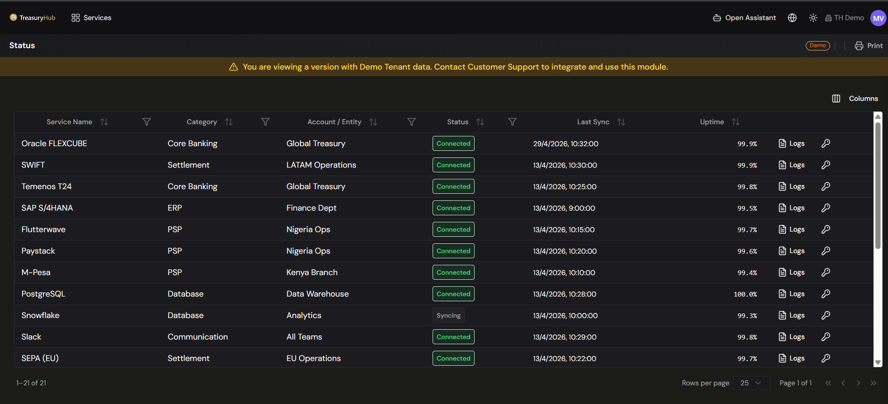
Monitor connection health
- Open Integrations › Status.
- Review each connection's status, category, account/entity, last sync, and
uptime.
- Sort or filter to find any connection that is degraded or hasn't synced recently.
- Open a connection's Logs to investigate an issue in detail.
Configuration
- Webhook events & destinations — choose which events fire and where they go.
- Status columns — adjust the columns shown on the board (for example via Columns) to focus
on what matters to you.
Tips & good practices
- Check the Status board as part of your routine — catching a connection that stopped syncing
early prevents gaps in your position.
- Use outbound webhooks to keep downstream systems in step without them polling Treasury Hub.
- When a connection looks unhealthy, start from its Logs, then cross-check
Ingestion Activity for the affected data.
3 · Data
Data Exports
Where to find it: Data › Data Export
Who uses it: data/IT owners, treasury operations, teams feeding external systems (BI, data lakes, compliance).
Permissions required: AdminAndSettings.UserManagement · Admin (to create and manage access tokens — see Access Tokens).
Full API reference: https://docs.treasuryhub.ai/api-reference/
Overview
Data Exports lets you send your Treasury Hub data out to your own systems through a secure API. It's
for cases where you need treasury data outside the platform — feeding a BI tool, a data lake, a
custom ERP, or a compliance/reporting process.
Your data is yours, so there are no restrictions on exporting it. Keep in mind, though, that
Treasury Hub's own reporting and insights work on the full, connected dataset — with the context,
correlations, and forecasts that are lost once data leaves the platform. Use Data Exports when
another system genuinely needs the raw data; use Treasury Hub's Reporting
when you need analysis.
This page explains the capability in functional terms — what you can export, how it's delivered, and
how access is secured. It is not a developer reference.
Key concepts
- Export — a set of data sent from Treasury Hub to a destination you control, either on demand,
on a schedule, or automatically when something happens.
- Data domain — a group of data you can export (for example transactions, balances, forecasts).
Access is granted per domain, so each connection only sees what it needs.
- Access token / API key — the credential a connecting system uses to authenticate. You create
and revoke these in the Admin Console.
- Scope — the permission attached to a credential that limits it to specific data domains, and
optionally to specific companies/entities (so, for example, a subsidiary's system only sees that
subsidiary's data).
- External ID — a stable, public identifier for each exported record. Because it never changes,
you can safely match Treasury Hub records to records in your own systems, even as the platform
evolves internally.
- Internal ID — Treasury Hub's own identifier for a record, available mainly to help support and
troubleshooting. A mapping between External and Internal IDs is available if you need it.
- Rate limit — the maximum number of requests a connection may make in a given period.
Before you start
- You (or an administrator) need
AdminAndSettings.UserManagement at Admin level to create the
access tokens / API keys a connection will use.
- Decide which data domains and which companies/entities each connecting system should be
allowed to access, so you can scope credentials to the minimum needed.
What you can export
The API covers the main treasury data domains:
| Data domain |
What it contains |
| Transactions |
Bank movements, pay-ins/pay-outs, and invoices. |
| Balances / Positions |
Cash positions and balances by account, entity, and currency — current or historical. |
| Reconciliation |
Reconciliation status, matches, exceptions, and KPIs. |
| Accounting |
Journal entries / G/L postings and the chart of accounts. |
| Financial Events |
The normalized financial events captured across sources. |
| Metadata |
Entities, bank accounts, and configuration. |
Exports are available in common formats (such as JSON and CSV) so the data works with everything
from spreadsheets to data-warehouse pipelines.
The published API covers the Financial Events resource (the endpoint is below). The other
domains in this table are exported from the in-app Data › Data Export screen. Some domains also
depend on the corresponding module being enabled for your organization — confirm with your
administrator.
How to use it
Set up an outbound connection
- In the Admin Console, open Access Tokens
and create an API key / access token for the system that will connect.
- Grant it only the scopes (data domains) — and, where supported, the specific
companies/entities — that system needs.
- Copy the credential when it's shown (it's displayed once, at creation) and provide it securely to
the team building the connection.
- Your IT/integration team uses that credential to pull data from Data › Data Export.
Pull data via the API (where to call)
The published API resource is Financial Events, called with the same H2H credentials as the
inbound API.
Base URL: https://api.gateway.treasuryhub.ai (Sandbox: https://sandbox.api.gateway.treasuryhub.ai)
| Method |
Path |
Purpose |
GET |
/api/h2h/ingestion/financial-events |
List/export events — paginated; filter by createdOnFrom, createdOnTo, page, pageSize. |
GET |
/api/h2h/ingestion/financial-events/{uuid}?versions=true |
A single event, with its version history. |
curl "https://api.gateway.treasuryhub.ai/api/h2h/ingestion/financial-events?page=1&pageSize=50&createdOnFrom=2026-05-01T00:00:00Z" \
-H "X-Client-Id: {tenant_id}" \
-H "X-Access-Token: th_live_xxxxxxxxxxxx" \
-H "Content-Type: application/json"
The response is a paginated list (items plus totals); page through it with page / pageSize. The
complete schema, all query parameters, and every field are in the
API reference.
For data domains that aren't exposed as API endpoints, use the in-app Data › Data Export screen.
Match exported records to your own systems
- Use the External ID on each record as the stable key when loading data into your systems. It
won't change, so incremental syncs stay consistent over time.
- If you need to reconcile a record with Treasury Hub support, the Internal ID and an
External ↔ Internal ID mapping are available.
Configuration
- Access & security — API keys/tokens, their scopes, and which entities they can reach are
managed in Access Tokens. All
API usage is recorded in the audit trail.
Tips & good practices
- Give each connecting system its own token with the narrowest scope it needs — it's easier
to rotate or revoke without disrupting everything else.
- Prefer the External ID as your join key so your integrations stay stable over time.
- Export raw data for other systems, but keep analysis in Treasury Hub's Reporting
where the full context is preserved.
"Create Your Own" export builder
In Configuración › Data Exports you define your own export packages, schedules, and delivery
destinations (SFTP, cloud storage, email), as well as event webhooks.
3 · Data
Financial Events
Where to find it: Data › Financial Events
Who uses it: treasury operations, finance teams, data/IT owners, auditors.
Permissions required: Data access (see Roles & Permissions).
Overview
Financial events are the normalized records Treasury Hub creates when data is brought in and
committed — for example when a parsed file (via file import / parsing templates)
is turned into transactions and movements. The Financial Events screen is a read-only place to
see exactly what was created: every event, its status, its details, and its change history. It's your
audit window onto the raw output of ingestion, before and after it flows into the rest of the
platform.
Key concepts
- Financial event — a single normalized record produced by ingestion (a movement, pay-in/pay-out,
payment order, balance, and so on), identified by a unique UUID and, where provided, an
External ID from the source.
- Status — where the event is in its lifecycle. There are three:
- Pending — captured, not yet booked.
- Booked — accepted and reflected in the platform.
- Rejected — not accepted (for example, failed a validation).
- Type — what kind of event it is: a bank movement, a balance, a payment order, a pay-in, a
payout, a settlement, an invoice or an invoice line. See
The types of event. Which of them you see depends on the types your
organization has enabled.
- Amount — the principal figure of the event, and the one figure anything downstream matches
on: the amount of a movement, the total of an invoice, the net deposited by a settlement. It is
always carried as a positive figure, with the direction recorded separately, so a debit and a
negative balance both travel as a positive amount plus a "negative" marker. An amount of zero is
valid for a balance — an account can be empty, and that is a fact rather than an error. For every
other type, an amount of zero is rejected: a movement of nothing is a mistake.
- Amount breakdown — the components a principal amount is made of (a gross, a fee, a tax). It is
reporting detail only and is never matched on. See
How an amount is made up.
- Movement date — the day the movement happened according to its source, as opposed to Created,
the moment Treasury Hub stored it. Every event has one, it is a calendar date with no time attached,
and it never changes once the event exists. It is the date to filter, compare and report on: a
statement loaded today with a month of lines gives each line its own movement date rather than
today's.
- Version history — each event keeps a record of its snapshots over time, so you can see how its
status, amounts and amount breakdown changed.
- Related events — links between events that belong together (for example the two sides of a
transfer, or the pay-ins a settlement paid), navigable from the detail panel.
The types of event
| Type |
What it records |
| BANK_MOVEMENT |
A movement on one of your own bank account statements. |
| ACCOUNT_BALANCE |
The balance of one of your accounts at a point in time. |
| PAYMENT_ORDER |
A payment you order from your own account — one line of a list of payments to make. |
| INTERNAL_PAYIN |
Money you collected, as your own systems record it. |
| EXTERNAL_PAYIN |
Money you collected, as an external party such as a bank or a collector reports it. |
| PSP_PAYIN |
Money you collected through a payment service provider (PSP), as the PSP reports it. |
| INTERNAL_PAYOUT |
A payout you made, as your own systems record it. |
| PSP_PAYOUT |
A payout you made through a payment service provider, as the PSP reports it. |
| PSP_SETTLEMENT |
A payout a PSP made to you: the batch of collected payments it settles in one deposit. |
| SALE_INVOICE |
An invoice you issued to a customer: an amount you expect to collect. |
| SALE_INVOICE_LINE |
One line of an invoice you issued: a product or service you billed a customer for. |
Three things to know about the set:
- Types are enabled per organization. You see the ones yours loads, and an event of a type your
organization has not enabled is refused rather than stored.
- An invoice and its lines are separate events. Treasury Hub never builds a header out of its
lines or the other way round: each line carries its own invoice number, and the link between them is
a related event. Both the invoice and each line need an identifier of their own.
- A settlement is identified by its own External ID. There is no separate settlement number: the
pay-ins a settlement paid carry that identifier among their related IDs, which is how a PSP pay-in
is grouped under the settlement that deposited it, and the settlement in turn under the bank
movement that received it.
How an amount is made up
A settlement deposits a net figure; an invoice is a total. The amount breakdown records what that
principal is made of — the gross collected, the provider's fee, the tax on the fee, the holds, the
taxes, the discounts — so reporting can read it without going back to the source file.
- It is for reporting only. The event's Amount is still the one figure that reconciles and
matches. Nothing downstream matches on a component.
- There is no "net" component. The net, or whatever principal applies, is the Amount.
- The components do not have to add up to the Amount. A file that states its fees but not its
holds still loads; what the components sum to is a question about your source, not a validation.
- Each component is one row of the Amount breakdown table in the detail panel, with its own
currency and its own direction. Amounts are stored positive, with deductions marked as negative.
- The same (component, currency) pair appears only once on an event.
- Every type can carry components except ACCOUNT_BALANCE: a balance is a position, not an amount
made of parts.
The components are:
| Component |
What it is |
| GROSS |
Total collected before any deduction. |
| FEE |
Fee the payment service provider kept. |
| FEE_TAX |
Tax charged on the provider's fee — kept apart from TAX so reporting never mixes the two. |
| DISPUTE_HOLD |
Amount held back against open disputes or chargebacks. |
| REFUND_DISCOUNT |
Amount discounted for refunds issued to payers. |
| RELEASED_HOLD |
Previously held amount released in this settlement. |
| SUBTOTAL |
Amount before taxes, discounts and withholdings. |
| TAX |
Tax charged on the invoice or the line. |
| DISCOUNT |
Discount granted on the invoice or the line. |
| WITHHOLDING |
Tax the customer withheld. |
The breakdown is versioned as a whole set rather than component by component. In Show versions,
the Breakdown column says what each version did to it: Replaced (n) when that version installed
a new set, Cleared when it emptied it, and a dash when it left the set alone.
What a bank movement carries
Beyond the amount, currency and description, a bank movement can carry the detail its source
provides, so you can trace and reconcile it without going back to the bank:
- the value date and the booking date, kept apart;
- the creditor and debtor names, and their agents (the banks on each side), in ISO 20022
terms;
- a numeric reference — the short structured reference a payer quotes on the rail (Mexico's SPEI
referencia numérica, and its equivalents elsewhere) — which is a different value from the
end-to-end transaction reference that identifies the operation;
- a link to the rail's own receipt where the provider really has one (for SPEI, Banxico's CEP);
- the provider's own movement type, in the provider's words rather than translated into a
Treasury Hub category, because it is often what makes the provider's status legible;
- the statement balance — the running balance the statement prints beside that row, the balance
of the account after that movement.
Which of these are filled depends on what the source file or connector supplies.
The statement balance is only carried when it can be vouched for. Treasury Hub sends it on with
the movement when two things hold: the column really is a running balance of its own movements, and
the statement was not proved not to add up. A column that merely repeats the amount, or a file whose
rows stopped reconciling with the balances it prints, would hand downstream reporting a figure nobody
can stand behind, so the movement is stored with no statement balance at all. An empty statement
balance means "not known", never "zero".
How to use it
Browse and filter financial events
- Go to Data › Financial Events.
- The grid lists events with Uuid, Type, Status, External Id, Country, Amount, Movement date,
Version, Created and Updated, newest first.
- Filter using the column headers:
- Movement date — a date filter, for the day the movement happened. This is the one to use
when you want "everything that happened in September", whenever those files were loaded.
- Created — a date filter, for the moment Treasury Hub stored the event. Use it to see what a
particular load brought in.
- Uuid and External Id — exact-match text filters.
- Page through results and adjust the page size as needed. Previous rows stay visible while a new
page loads.
Inspect a single event
- Click a row to open the detail panel.
- Review the full record: the common fields (including Movement date), related IDs, related
events, multi-currency amounts, and the underlying payload.
- Read the Amount breakdown table when the event has one — one row per component, with its code
and its signed amount. An event with no breakdown shows no such section.
- Toggle Show versions to see the event's version history — each snapshot's version, status,
original status, amount, what it did to the breakdown, and its timestamp.
- Click a related-event link to jump to that event (the list re-filters by its External ID).
The dates an imported record carries
Every event carries the date its source gives it, not the day somebody uploaded the file. An imported
payment order sits on the date its file states, so an order due on the 15th is an order due on the
15th whoever loads it and whenever; an imported balance lands on the reference date the file
states, not on its upload date. Loading a statement dated in the past therefore places its records on
the dates it states, which is what lets you backfill a quarter of history and have it read correctly.
Where a file states no date at all, the day of ingestion is used, because a record with no date would
never be picked up by anything downstream.
The movement date is worked out from what the record actually carries: for a bank movement the value
date, or the booking date when there is no value date; for a pay-in or a payout its transaction date;
for a settlement its settlement date, never the start or end of the period it covers; for an invoice
its issue date, never its due date; for a balance its reference date. An invoice line has no date of
its own and takes the one its load gives it. Where a payload date is left empty, the movement date
fills it, so the two never disagree.
Tips & good practices
- Use Financial Events to troubleshoot ingestion — if something looks off downstream (in
transactions or reconciliation), find the source event here and check its status and version history.
- Filter by External ID to trace a specific record from your source system end to end.
- Rejected events are the first place to look when an expected transaction didn't appear —
the version history shows why.
- A balance of zero is real data, not a parsing failure. Treat a missing balance and a zero
balance as different things. The same holds for the statement balance on a bank movement: empty
means "not known", not "zero".
- Filter on Movement date, not on Created, when you are asking about a period. Created tells you
when a file was loaded; Movement date tells you when the money moved. They differ by days or months
on any backfill.
- Do not reconcile against a breakdown component. The Amount is the figure everything downstream
matches on; the components are there to explain it, and they are not required to add up to it.
- If a settlement and its pay-ins look unrelated, check the pay-ins' related IDs: a settlement is
identified by its own External ID, and that is the value its pay-ins carry.
4 · Reconciliation
Reconciliation — Overview
Where to find it: Reconciliation
Who uses it: treasury operations, finance team, accountants.
Permissions required: reconciliation access (see Roles & Permissions).
Overview
The Reconciliation module automatically matches your financial data across sources — bank
movements, PSP settlements, ERP/internal records, invoices, and treasury deals — so you can see
what's settled, what's partial, and what needs attention. It applies configurable rules to
reconcile most items with no manual effort, and gives you a full audit trail of every match.
The goal: turn what used to be a manual, spreadsheet-driven process into explainable, auditable
reconciliation.
Key concepts
- Movement — an individual financial item (a bank movement, a payin/payout, a PSP settlement,
a fee). These are the raw items to be reconciled.
- Flow — a chain of related movements that belong together, e.g. Payout Internal → Payout
PSP → Bank Movement. A flow is fully reconciled when every step in the chain is matched.
- Match — the link between two or more items the system considers the same real-world event.
Matches can be 1-to-1 or batch (many-to-many).
- Reconciliation status — each item/flow is Fully Reconciled, Partially Reconciled, or
Unreconciled (see Reconciliation statuses below).
- Reconciliation rule / criteria — the conditions that make items match (amount, tolerance,
reference, date ± N days, partner, currency…).
- Rule chain — an ordered set of rules the engine applies in sequence.
- Workflow Studio — where a reconciliation workflow is built. You can describe the workflow you
want in plain language and the agent prepares it for you to review and save — it never saves
anything itself. See Workflows and
AI assistance.
Reconciliation statuses
A flow is a chain of steps that must each be matched for the transaction to be complete (for example
Payout Internal → Payout PSP → Bank Movement is a 3-step flow). The status tells you how far along
that matching is:
| Status |
Meaning |
Example progress |
| Fully Reconciled |
Every step in the flow is matched — the transaction is completely accounted for. |
3 / 3 |
| Partially Reconciled |
At least one step is matched, but one or more are still outstanding. The money is partly accounted for; something (a settlement, a bank posting, a fee) is missing or not yet matched. |
2 / 3 |
| Unreconciled |
None of the flow's steps are matched yet. |
0 / 3 |
You see the status on each row of Flows (Reconciliation Status) — with a progress
bar showing matched steps ÷ total — and as KPI tiles on the Dashboard.
Tip: work Partially Reconciled items first — a partial flow usually means an expected leg
hasn't arrived or hasn't been matched, so it's where problems (missing settlements, delays,
duplicates) tend to surface.
What's in the module
The Reconciliation menu has two groups: Administration, the screens you work the reconciliation
on, and Reporting, the read-only reports. A few related screens are configured under Settings
instead.
| Screen |
Where to find it |
What it's for |
| Dashboard |
Reconciliation › Administration › Dashboard |
KPIs, status breakdown, savings, volume trends. |
| Flows (Reconciliation Status) |
Reconciliation › Administration › Reconciliation Status |
Browse your reconciliation flows; expand a flow to see the movements inside it. |
| Matching (1-to-1 & Batch) |
Reconciliation › Administration › Matching 1-to-1 |
Match by hand what the rules didn't: every eligible movement per side, with ranked candidates for the one you pick. |
| Approvals |
Reconciliation › Administration › Reconciliation Approvals |
Review and approve/reject reconciliation requests, individually or in batch. |
| Conciliations |
Reconciliation › Administration › Conciliations |
The register of matches that exist — what the rules, approvals and manual matching produced. |
| Conciliation Reporting |
Reconciliation › Reporting › Conciliation Reporting (also Reporting › Operations) |
What was reconciled and what is still open, one week at a time, with the Excel download. |
| Fee Report |
Reconciliation › Reporting › Fee Report (also Reporting › Operations) |
What each payment provider should charge per contract each month, and whether its settlements deducted it right. |
| Rules & Criteria |
Settings › Reconciliation › Reconciliation Flows → open a flow |
Define and chain the rules that drive auto-matching. |
| ERP Posting |
no screen |
Reconciliation does not post to an ERP; the page explains what is kept. |
| Workflows |
Settings › Reconciliation › Reconciliation Flows |
Configure the resolution workflows/flows (PSP & Bank, Invoice, Bank-to-Bank, and treasury-specific). |
How reconciliation works, end to end
- Data arrives through Integrations (bank statements, PSP
feeds, ERP, files, email/SFTP) and becomes normalized movements.
- The engine applies your rules (and rule chains) to propose matches, grouping related items
into flows.
- You review on the Matching screen — accept proposed matches, match manually, or
handle exceptions.
- Approvals route requests to the right people (individually or in batch).
- The confirmed reconciliation is the end of the chain, with the full trail preserved.
Reconciliation does not post to your ERP — see ERP Posting — and the accounting
system.
Before you start
Tips & good practices
- Start with the built-in workflows (PSP & Bank, Invoice, Bank-to-Bank), then refine rules as
you see real exceptions.
- When a manual match keeps repeating, turn it into a rule so the engine handles it next time.
- Use the Dashboard period selector to monitor auto-match rate and exception backlog.
- Handle reconciliation alerts promptly; they often surface duplicates or data issues upstream.
- Integrations — where the data comes from.
- Accounting / G/L Postings — G/L posting is switched off; the
page describes the records that are kept.
- ERP Posting — what is kept once a reconciliation is confirmed.
- Alerts — reconciliation exceptions surface here too.
- Admin — Matching Rules — the legacy transaction rules,
which no longer run. They are unrelated to the reconciliation rules above.
4 · Reconciliation
Reconciliation — Reconciliation Approvals
Where to find it: Reconciliation › Administration › Reconciliation Approvals (the screen it
opens is titled Reconciliation Requests)
Who uses it: finance team, reconciliation reviewers and approvers.
Permissions required: reconciliation access · CreateEdit to approve or reject; Read to view (see Roles & Permissions).
Overview
Reconciliation Approvals is the queue of proposed reconciliations waiting for a human decision.
A request lands here whenever a rule's match block is set to send for approval instead of
auto-reconciling, and whenever a match is ambiguous enough that the rule asks for a second pair of
eyes. You approve a request to create the reconciliation, or reject it to discard the proposal.
Hand-picked matches are made on the Matching screen instead.
The engine does not guess. Every request on this screen was produced by a rule you configured, and
the rule that produced it is shown on the row — so when a request looks wrong, the fix is in the
rule, not in the queue.
Key concepts
- Request — a proposed reconciliation: the movements on each side, the rule that paired them,
and a status.
- Pending — waiting for a decision.
- Approved — accepted; the platform created the corresponding reconciliation.
- Rejected — declined with a reason, which is recorded for the audit trail.
- Annulled — a pending request that was cancelled rather than judged. Annulling is distinct from
rejecting: it withdraws the proposal instead of ruling against it.
- Total — the sum of one side of the request.
- Difference — the signed left-minus-right difference between the two sides, available before
you approve. Zero means the two sides balance.
Before you start
- You need reconciliation access at CreateEdit level to approve or reject — see
Roles & Permissions.
- Your rules & criteria decide how many requests reach this queue. A rule
set to auto-reconcile never appears here.
How to use it
Read the queue
- Open Reconciliation › Reconciliation Approvals.
- Pick a tab: All, Pending, Approved, Rejected or Annulled. The screen opens on
Pending.
- Narrow the list with the filters: Workflow, Chain and Rule (each one narrows the
next), a date range that defaults to today, and a value filter on any catalog field such as
currency, partner or payment method.
- Each row shows the request Id, when it was created, its type and status, the
workflow and rule behind it, the conciliation type, the movement type and item count
on each side, the Total, the signed Difference, and who approved or rejected it.
- Click a row to open its detail panel, where the movements are listed grouped by side.
Approve or reject one request
- Find the request and open it to check the movements on both sides and the Difference.
- Choose Approve, then confirm. The platform creates the reconciliation.
- Or choose Reject and enter a reason. The reason is required and kept for the audit trail.
Approve or reject many at once
- Tick the checkbox on each request you want to act on, or use Select all on page.
- Choose Approve selected or Reject selected. A batch rejection asks once for a reason and
applies it to every request in the selection.
- You can act on up to 100 requests in one batch. Above that the button is disabled and tells
you to deselect some rows.
- Each request is processed on its own, so a batch can partly succeed. If any item fails, a result
panel opens listing which requests went through and which didn't, with the reason for each — most
often that someone else already processed it. Your selection stays in the grid until you close
the panel, so you can compare the failures against the rows.
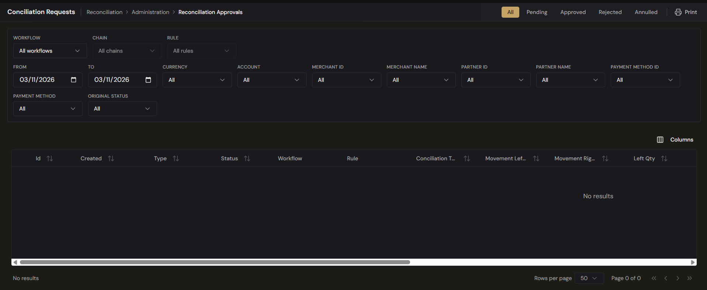
The partners, amounts and differences shown in the platform are your own live data; any figures in
this help center are illustrative examples.
What approving actually moves
Approving a request settles only the movements that belong to the flow of the rule that proposed
it. A movement of yours that sits in another flow is left alone, so approving here cannot quietly
change something in a flow you were not looking at.
A request you created by hand has to resolve to exactly one flow. If its movements span more than
one flow, or belong to none, the request is refused rather than guessed at — pick movements from a
single flow and try again.
Tips & good practices
- Filter by rule before you work a batch. Everything a single rule produced was paired on the
same criteria, so you can judge the whole group with one decision.
- Check the Difference column first — a non-zero difference on a rule that should balance is the
clearest sign the rule's tolerance is too loose.
- Always write a meaningful rejection reason. It is the only record of why a proposal was turned
down, and it is what tells you which rule to tighten.
- If the same wrong pairing keeps appearing, don't keep rejecting it — fix the criteria in
Rules & Criteria so it stops being proposed.
- The date range defaults to today. Widen it when you're clearing a backlog, or you'll only see what
arrived since midnight UTC.
- Reconciliation Overview — where approvals sit in the end-to-end flow.
- Rules & Criteria — tune what reaches this queue and what auto-reconciles.
- Matching — make hand-picked matches instead of working proposed ones.
- Movements & Flows — see the chain each approved reconciliation completes.
- ERP Posting — what happens, and does not happen, after a reconciliation.
- Alerts — the alerts a match block raises alongside its outcome.
4 · Reconciliation
Reconciliation — Conciliation Reporting
Where to find it: Reconciliation › Reporting › Conciliation Reporting (also listed as Conciliation Reporting under Reporting › Operations)
Who uses it: treasury operations, finance team, accountants, auditors.
Permissions required: reconciliation access · Read (see Roles & Permissions).
Overview
Conciliation Reporting is the reconciliation workbook as a screen: what was reconciled in a period,
and what is still open. It is the same report Treasury Hub emails you as an Excel attachment — same
two sheets, same columns, same order — with filters on top and a button that downloads that exact
file. Use it to answer "what did we reconcile last week, and what is still outstanding?" without
waiting for the email or opening a spreadsheet.
Key concepts
- Conciliated — one row per origin movement reconciled in the week, with its conciliation and
the counterpart it was matched with.
- Not Conciliated — one row per origin movement that is still open, with no conciliation
columns.
- Origin movement — the movement the row is about. On the Conciliated sheet the Counterpart ·
columns describe the movement on the other side of the same conciliation.
- The week — the report always covers exactly seven calendar days (UTC), ending today or
earlier. On Conciliated the week is read against the conciliation date; on Not Conciliated
against the date the movement was created.
- Difference — the gap between the two sides of a conciliation. Has Difference filters the
rows that carry one.
- Cross currency — a conciliation whose two sides are in different currencies.
Before you start
- The report covers the flows your tenant runs. If a movement never entered a flow it is not in
either sheet — see Movements & Flows.
- Figures reflect what the engine, the approvals and manual matching have produced so far, so read
a week that has had time to settle before treating it as final.
How to use it
Read the week
- Open Reconciliation › Reporting › Conciliation Reporting. It opens on the Conciliated
tab for the last seven days ending today, and the tab shows the week's total, for example
Conciliated (1,234).
- Read the grid. Rows arrive 50 at a time; the columns scroll sideways and follow the workbook's
own order and headers. Hovering a Counterpart · header shows the workbook's own name for
that column.
- Switch to Not Conciliated for the movements still open. Rows are coloured by how far they
are: red for a movement that is still Pending or Pending approval, yellow for the rest.
- Sort by clicking a sortable header — Workflow ID, Workflow Name, Conciliation Date, Conciliation
ID and Conciliation Amount on Conciliated; Workflow ID, Workflow Name, Movement Created On and
Movement ID on Not Conciliated. Without a sort, rows come in the workbook's order.
Move between weeks
- Click Previous week or Next week to shift the window by seven days. The range in the
middle shows the exact days covered.
- Next week is unavailable once you are on the week ending today.
- To jump, pick a day in Week ending on. The window becomes the seven days ending on that day;
a day in the future lands on today.
Narrow what you're looking at
- Pick a Workflow to see one flow only, or leave it on All workflows.
- Pick a Movement Status — Pending, Processed, Pending approval, Left partial, Right partial
or Conciliated — to see the origin movements in that state in their flow.
- Type in External ID to match any part of the external ID of the origin movement or, on the
Conciliated sheet, of its counterpart.
- Use the field dropdowns — Currency, Account, Merchant ID, Merchant Name, Partner ID, Partner
Name, Payment Method ID, Payment Method and Original Status — to narrow by catalog values.
- On Conciliated only, add Conciliation Type (Automatic, Manual or Request), Cross
Currency and Has Difference.
- Click Clear filters to drop them all. The tab and the week stay where they are.
Changing the tab, the week or a filter takes you back to the first page. Switching tabs also drops
the sort, because the two sheets sort on different columns.
Download the workbook
- Click Export week. The button reads Exporting… while the file is produced.
- Your browser saves
Conciliation Report {from} to {to}.xlsx, with both sheets.
- The download is the whole week: the filters on screen narrow the grid, not the file.
Configuration
The same workbook is emailed to your team on a schedule. Treasury Hub sets this up for your tenant:
- Which report — the conciliation workbook.
- How often — daily, weekly or monthly.
- When — a time of day, on a chosen weekday for a weekly schedule or a day of the month (1 to
28) for a monthly one, read in the time zone set for the schedule.
- Who receives it — a list of email addresses per schedule, so someone can be on the weekly
send without getting the daily one.
- On or off — a single switch turns every emailed report off for your tenant, and individual
schedules and recipients can be switched off on their own.
Each email covers the period that ends at its scheduled moment — the previous day, the previous
seven days or the previous calendar month — so consecutive emails neither overlap nor leave gaps.
The subject names the report, your tenant, the frequency and the period. To change a schedule, its
time zone or its recipients, ask your Treasury Hub administrator.
Tips & good practices
- Work the Not Conciliated tab first, reds before yellows: a red row is a movement nothing has
matched yet, and it is the one most likely to be an exception worth chasing.
- Filter Has Difference on the Conciliated tab to find reconciliations that balanced only
within a tolerance; they are where fees and rounding hide.
- Filter Conciliation Type to Manual to see how much your team is still matching by hand. A
recurring shape there is a rule worth writing — see Rules & Criteria.
- Export the week when you need to share or archive it; the file is the same one your scheduled
email carries, so a colleague reading the attachment sees exactly what you see.
- Dates and times in the grid are shown in UTC, as the workbook writes them. Keep that in mind when
comparing against a local bank cut-off.
- Reconciliation Overview — how the reports fit the end-to-end flow.
- Conciliations — the live register behind the Conciliated sheet, where you can
open a single reconciliation.
- Matching (1-to-1 & Batch) — clear the open items this report lists.
- Approvals — the decisions behind the Pending approval rows.
- Dashboard — the same picture as KPIs and trends rather than rows.
- Fee Report — the other reconciliation report, on what your payment providers
charge.
4 · Reconciliation
Reconciliation — Conciliations
Where to find it: Reconciliation › Administration › Conciliations
Who uses it: treasury operations, finance team, accountants, auditors.
Permissions required: Reconciliation.Conciliations · Read to view (see Roles & Permissions).
Overview
Conciliations is the register of matches that exist. Every time the engine reconciles items
automatically, every time a reconciliation request is approved, and every time you
match two movements by hand on the Matching screen, a conciliation is written — and
this is where you find it afterwards, with the movements it links, the amounts on each side and the
rule that produced it.
It is the answer to "how was this reconciled, and by what?". Nothing is decided here: the
Approvals queue holds proposals waiting for a decision, while this screen holds the
results.
Key concepts
- Conciliation — the link the platform created between two or more
movements it treats as the same real-world event. See
Matching for how one is made.
- Left and Right — the two sides of the match, taken from the From and To movement types
of the rule that produced it.
- Total — the value of the conciliation.
- Difference — how far the two sides are from balancing. A difference of zero means they
balance exactly; anything else is a discrepancy worth looking at.
- Conciliation Type — Single (one movement on each side) or Batch (one movement on the
anchor side and several on the other).
- Type — who originated the match: Automatic (a rule did it) or Manual (a person did).
- Conciliated — the status of a match that stands.
- Annulled — the status of a match that has been reversed. The record is kept; it simply stops
counting.
Before you start
- Conciliations are produced by your workflows, chains and rules. If the
list is empty, start there rather than here.
- The screen opens filtered to today. Widen the date range before concluding a match was never
made.
How to use it
Find a conciliation
- Open Reconciliation › Conciliations.
- Narrow the list with the filter bar above the grid:
- Workflow, Chain and Rule — a cascade. Chain and Rule stay closed until a
workflow is picked, and picking a chain narrows the rules on offer to that chain's. Each rule
reads as
#id · FROM → TO. Matches made with no rule behind them never match any of the
three.
- External ID — matches the external id of a movement on either side exactly.
- From and To — the date range, which defaults to today.
- Field filters — one dropdown per catalog field: Currency, Account ID, Merchant
ID, Merchant Name, Channel, Partner ID, Partner Name, Payment Method ID,
Payment Method and Original Status. These are the same field filters used across the
reconciliation screens. Selections on different fields combine with AND, and a conciliation
matches when at least one of its movements, on either side, carries that value.
- Filter the grid's own columns where you need to: Status (Pending, Matched, Unmatched,
Conciliated, Rejected, Annulled) and Type (Automatic, Manual). Each takes one value at a
time.
- Click Clear to drop every filter you have set and go back to the full list.
- Sort by clicking a column header. The list opens on Date, newest first, and can also be
sorted by Id, Type, Status, Total and Created.
Read a row
Each row carries the conciliation's Id and Date, its Type and Status, the
Workflow it belongs to, the Conciliation Type, the movement type and item count on each side
(Movement Left Type, Movement Right Type, Left Qty, Right Qty), the Total, the
Difference, the total number of Movements, the Rule that produced it, and when it was
Created.
A dash in the Workflow or Rule column means the match was not produced by a rule — a manual
or historical conciliation.
Watch the Difference column. It is where a match that does not balance shows itself: the two
sides were paired, but the amounts do not agree. Those are the rows to work, and a recurring pattern
of them usually points at a tolerance or a fee that the rule is not
accounting for.
Open a conciliation
- Click the row. A detail panel opens, headed Conciliation #id with its status badge.
- The top of the panel repeats the key facts: Date, Created, Updated, Type,
Status, Movements, Total, the Difference where there is one, the Rule that
produced the match, and any Notes recorded with it.
- Below that, the movements are laid out side by side, one column per movement — L1, L2
… for the left side and R1, R2 … for the right. The rows are Amount, Date,
Related ids and every field either movement carries, with a dash where a movement has no such
field. Related ids are lined up across the columns so a shared id reads straight across, which is
usually what explains why the two sides were paired.
- For a Single conciliation, a Chain section at the bottom shows the whole chain instance
this match belongs to, with the step it fulfilled highlighted. Click another step to jump to its
conciliation, or a movement to open the movement itself. A Batch conciliation has no single
chain step to highlight, so the section is not shown.
Reverse a match
A conciliation made in error is reversed by annulling it. Annulling does not delete anything:
the record stays in this list with the status Annulled, carrying who annulled it and the
reason, which is required. What changes is everything that depended on it:
- The movements on both sides are released and re-evaluated — each one goes back to pending, or
to a partial state if it is still matched elsewhere — so they can be reconciled correctly.
- The match stops counting towards its chain, and the chain instance's progress is recalculated
without it.
- Only a conciliation in Conciliated status can be annulled, and only once. An already-annulled
match cannot be annulled again.
Record a match by hand
Manual matches are made on the Matching screen, not here. That screen requires you
to pick the rule you are reconciling under: the rule decides which movement types belong on each
side, and it is what this list later shows in the Rule column to explain how the match came
about. A manual match appears here with Type: Manual as soon as it is confirmed.
Tips & good practices
- Start from the Difference column, not the top of the list. A conciliation that balances needs
no attention; one that does not is either a fee, a tolerance you have not configured, or a wrong
pairing.
- Use the Workflow → Chain → Rule cascade to audit a rule. Filtering to one rule shows you
exactly what it has been pairing, which is the fastest way to tell a well-tuned rule from one that
is matching too freely.
- Filter by External ID when you are chasing one transaction end to end — it looks at both sides
at once.
- Check Type: Manual periodically. A steady stream of manual matches of the same shape is a
rule waiting to be written.
- Annulling is the only way back. There is no undo on a match, so read the comparison table in
the detail panel before concluding a conciliation is wrong.
- The date range defaults to today; widen it before deciding something was never reconciled.
4 · Reconciliation
Reconciliation — Dashboard
Where to find it: Reconciliation › Administration › Dashboard
Who uses it: treasury operations, finance team, accountants.
Permissions required: reconciliation access · Read (see Roles & Permissions).
Overview
The Dashboard is the daily health check of the Reconciliation module. It answers, for one day, how
much reconciled by itself, how much is still open, and how many proposals are waiting for a person.
Scope it to a single workflow and it adds a lifetime view of where that workflow stands and which
match criteria are actually doing the work.
Key concepts
- Reconciliation status — every chain instance is Reconciled, Partial or
Unreconciled. See Core Concepts and the
Reconciliation Overview.
- Chain instance — one attempt at a flow: a movement arrived, a chain started, and its steps are
either fulfilled or still waiting. The dashboard counts instances, not individual movements. See
Movements & Flows.
- Auto reconciliations — reconciliations the engine created on its own, with no approval step.
- Net / Gross / Fees and adjustments — the three ways a workflow's reconciled money adds up.
Gross plus fees and adjustments equals Net.
How to use it
Choose what the day covers
- Open Reconciliation › Dashboard.
- Pick the Date. It defaults to today and covers the full UTC day.
- Optionally pick a Workflow, and then a Chain within it. Changing the workflow clears the
chain.
- Optionally narrow further with the field filters — currency, account, merchant, channel,
partner, payment method or original status. Each is a dropdown of the values that actually appear
in your own data, and selections across different fields combine with AND.
- Clear resets the filters and puts the date back to today.
Read the overview
- Auto Reconciliations sits on its own: how many reconciliations the engine made without a
person.
- Five tiles follow, each with a count and a percentage:
- Fully Reconciled — every step of the chain is matched.
- Partially Reconciled — some steps matched, some still open.
- Unreconciled — nothing matched yet.
- Requests Approved and Requests Rejected — what the
Approvals queue produced that day.
Read the charts
- Daily Reconciliation Volume — an area chart of the selected day, one point per hour (UTC),
stacked into Reconciled, Partial and Unreconciled. Use it to spot the hour a feed
stopped landing or a rule stopped firing.
- Reconciliation by Type — a breakdown of how that day's reconciliations came about:
Automatic (the engine matched and reconciled), Manual (someone paired the items on the
Matching screen) and Request (someone approved a proposal). A manual share that
keeps growing is a prompt to revisit your rules.
Read the workflow totals
Select a single Workflow and a Workflow totals panel appears underneath:
- Entity type — for each movement type in the workflow, how many are reconciled and how many are
not.
- Money reconciled — split into Net reconciled, Gross reconciled, and Fees and
adjustments (gross plus this equals net).
- How these reconciliations happened — the workflow's reconciliations grouped by the rule and
match criteria that produced them, with a count and a share of the total. Rows with no rule are
the manual ones. This is the quickest way to see whether one over-permissive criterion is doing
most of the matching.
Two things to know about this panel. It is lifetime, not daily — it deliberately ignores
the date you picked and answers "where does this workflow stand overall". And it labels history
using today's configuration, so editing a rule's criteria re-labels the past rows that rule
produced.
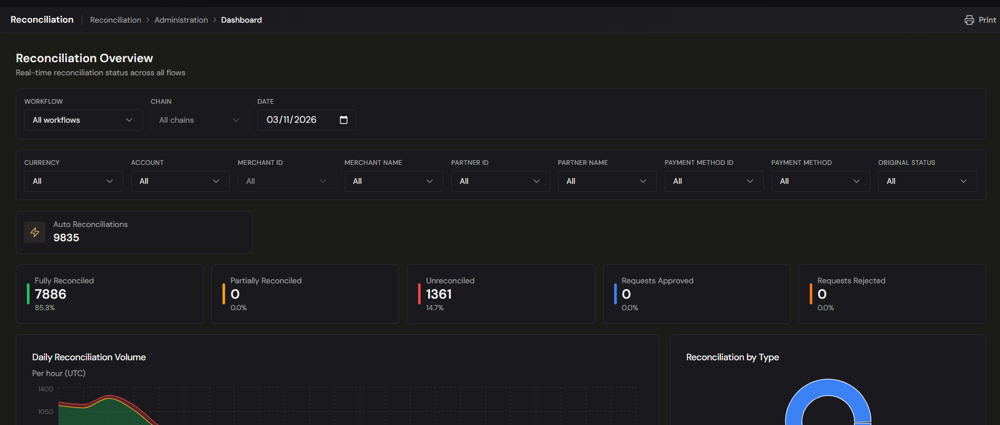
The numbers, counterparties and currencies shown in the platform are your own live data. Any
figures used in this help center are illustrative examples.
Tips & good practices
- Check Unreconciled first thing each day, then jump to
Reconciliation Status filtered to the same day to see which step is
stuck.
- A flat stretch in the hourly volume chart usually means an upstream feed stopped rather than a
reconciliation problem — check Integrations.
- Compare Auto Reconciliations against Requests Approved over time: the ratio tells you how
much of the work your rules are taking off people's hands.
- Use How these reconciliations happened before you loosen a tolerance. If one criteria set
already accounts for most matches, loosening it widens an exposure you can't see from the counts.
- Remember the date filter is a single UTC day. For a longer view, read the lifetime workflow
totals rather than stepping through dates.
4 · Reconciliation
Reconciliation — ERP Posting
Where to find it: there is no ERP Posting screen. Your reconciled items and their history are under
Reconciliation › Conciliations; the accounting side is described in
G/L Postings.
Who uses it: finance team, accountants.
Permissions required: reconciliation access · Read (see Roles & Permissions).
Overview
ERP posting was the step that would turn confirmed reconciliations into accounting entries and send
them to your accounting system, grouped into batches by conciliation rule and date.
Reconciliation does not post to your ERP. The reconciliation module itself never carried out the
posting: it relied on the platform's G/L posting, which is now
switched off. No batch is prepared, no entry is generated, and nothing is sent to an accounting
system.
Nothing has been deleted. Your reconciliations, their approvals, the items inside them, and any
postings produced in the past are all kept and remain readable.
G/L posting is being rebuilt from scratch, together with reconciliation, as its own project. Until
then, reconciliation ends with the confirmed reconciliation itself, and the accounting entry is made
in your ERP.
Key concepts
These terms appear in older records and hand-offs:
- Batch — a group of reconciled flows, identified by an ID (for example
ERP-0081) and grouped
by conciliation rule and date.
- Batch type (SINGLE vs BATCH) — whether the batch held one reconciled flow or several from the
same rule and date.
- Target ERP — the accounting system a batch was destined for.
- Posting status — Pending (prepared, never sent) or Posted.
What this means for you
- Reconciliation itself is unaffected. Matching, approvals, conciliations, movements, and the
reconciliation dashboard all work as before — see Reconciliation Overview.
- The accounting entry is yours to make. Reconcile in Treasury Hub, then book the result in your
ERP.
- A batch left as Pending was never sent. Treat it as a record of intent, not as something in
your ledger.
How to use it
Follow a reconciliation through to your ledger
- Open Reconciliation › Conciliations and find the reconciliation you need.
- Open it to see the matched items, the amounts, and the rule that produced the match.
- Use Export to take the list into your accounting process.
- Book the entry in your ERP, and keep the conciliation ID with it so the two can be tied together
later.
Tips & good practices
- Agree with your accounting team which reconciliations they book and how they reference them, so
the link between a conciliation and a ledger entry is not lost.
- Reconcile and approve as usual — a clean reconciliation history is exactly what the rebuilt
posting will need.
- When reading an older report that mentions posted batches, check the posting history before
assuming an entry reached the ledger.
4 · Reconciliation
Reconciliation — Fee Report
Where to find it: Reconciliation › Reporting › Fee Report (also listed as Fee Report under Reporting › Operations)
Who uses it: treasury operations, finance team, accountants, accounts payable.
Permissions required: reconciliation access · Read (see Roles & Permissions).
Overview
If you collect through payment providers, each one charges you a fee set by your contract with it —
a fixed amount or a percentage per payment, a monthly charge, a price that drops once your volume
passes a threshold. The Fee Report works out, month by month and contract by contract, what each
provider should charge you. For the providers that deduct their fee from what they settle, it
also checks what they actually deducted, settlement by settlement, and against the deposit that
reached your bank.
The report reads your reconciled data; it does not create movements or change any reconciliation.
Key concepts
- Contract — one agreement with one provider, for one of your legal entities. It is what the
report is calculated per: a provider you deal with under two entities is two contracts.
- Partner and merchant — the two values that decide which payments a contract counts. A payment
belongs to a contract when both its partner (the provider) and its merchant identifier (your
account, company ID or tax ID with that provider) are listed on the contract. A payment belongs
to at most one contract.
- Concept — a line of the contract's pricing: a fixed amount, a rate, or both, charged either
per payment or monthly. A concept can apply to one payment method only, so card and cash
can be priced differently.
- Tier — a price that starts from a monthly volume. The detail shows both the tier applied
and the tier reached this month; on some contracts a cheaper tier only takes effect after the
volume has been sustained for several months, and it never applies to months already past.
- Base amount — the gross value of the payments counted, and what percentage fees are
calculated on.
- Charged — how the provider takes its fee: Deducted from settlement (it keeps the fee out
of what it pays you) or Invoiced (it bills you separately).
- Settlement check — for a contract whose fee is deducted, a comparison of one settlement: the
fee, tax and net it should carry against the ones it reports, and its net against the bank
deposit reconciled with it.
- Difference — always reported minus expected. A positive number means the provider kept or
reported more than the contract says.
Before you start
- Your provider contracts must be loaded for your tenant. Treasury Hub does this; the screen reads
them and does not edit them. A tenant with no contracts sees empty tabs.
- Payments reach a contract only once the data carries the merchant identifier. Until the
integration that brings those payments in fills it, they appear on Without contract — see
Integrations.
- Settlement checks compare against the bank only where the settlement has been reconciled with its
deposit, so keep Matching and Approvals current.
How to use it
Read a month's expected fees
- Open Reconciliation › Reporting › Fee Report. It opens on Fees by contract for the
previous month — the last closed one.
- Read the banner above the grid: the month's Fee, Tax and Total per currency, and
when the month was last calculated (UTC).
- Read the grid. One row per contract: Contract, Name, Entity, Partners,
Charged, Currency, Payments, Base amount, Fee, Tax and Total.
- Click a row to open its detail, one line per concept: Concept, Payment method,
Basis, Tier applied, Tier reached this month, Payments, Base amount and
Fee. This is where you see why a contract cost what it cost.
Check what a provider actually deducted
- Open the Settlement checks tab. It lists the month's settlements, 50 at a time, for the
contracts whose fee is deducted from the settlement.
- Each row shows the settlement — its date, its ID and external ID — the payments behind it
(Payins, and Other payins for the ones belonging to another contract or to none), the
Gross, then Expected fee and Expected tax against Reported fee and Reported
tax, and Expected net against Settlement net.
- Read the three difference columns: Fee + tax difference, Net difference and Bank
difference (the reconciled deposit against the settlement's net). A non-zero difference is
shown in red.
- Pick a Contract to look at one provider, and turn on Only differences to leave just the
rows that do not agree.
Find payments no contract covers
- Open the Without contract tab. It lists, per partner and merchant, the payments from a
provider you do have a contract with that no contract counted, with their Payments count and
Base amount.
- Rows here usually mean a new merchant account that is not on any contract yet, or data arriving
without its merchant identifier. Either way those payments are missing from the fees above, so
clear them before trusting the month's total.
Move between months and refresh a month
- Use Previous month and Next month, or pick one in Month. Next month is
unavailable once you are on the current month, and a future month lands on the current one.
- Click Recalculate to recompute the month you are looking at. The button reads
Recalculating… while it runs, then a message summarises what was written and the three tabs
reload. Use it after a contract has been loaded or a late file has arrived.
- Treasury Hub recalculates the current month and the previous one every day, so most of the time
you do not need to.
Download the workbook
- Click Export month. The button reads Exporting… while the file is produced.
- Your browser saves
Fee Report {month}.xlsx, with the three views as sheets.
- The download is the whole month: the filters on screen narrow the grid, not the file.
Configuration
Your contracts are set up by Treasury Hub and shape every figure on this screen. Each one carries:
- The provider and merchant values that decide which payments it counts, and the legal
entity it belongs to.
- The date it starts counting from. Payments before it are not in the monthly totals.
- Its concepts — fixed amount, rate, or both, per payment or once a month, optionally for one
payment method — each with the tiers that price it from a given monthly volume, and whether
rounding happens on each payment or on the concept's total.
- The currency the fee is charged in.
- The tax rate, and whether tax is worked out on the rounded or the unrounded fees.
- How the fee is charged — deducted from the settlement, or invoiced — which is what decides
whether the contract appears on the Settlement checks tab.
A price change is loaded as a new concept starting on the day the new price took effect, so a month
is always costed at the prices that applied then. For the same reason, a settlement is checked with
the prices in force on each payment's own date: a payment made at the end of a month and settled in
the next one is still charged at the earlier month's price. To change a contract, ask your Treasury
Hub administrator.
Tips & good practices
- Close Without contract first. A single uncovered merchant makes every total on the month look
too low.
- Use Only differences as your working queue: a short list of settlements to query with the
provider beats reading every row.
- Treat a non-zero Bank difference as a banking question and a non-zero Fee + tax
difference as a contract question — they usually have different owners on your team.
- Open a contract's concept detail before challenging a provider. Tier applied against Tier
reached this month explains most surprises on a volume-based contract.
- Recalculate a closed month once, a few days after the month end, so late settlements and
reconciliations are included before you use the figures.
- Fees and base amounts are in the contract's currency; read the banner's per-currency totals
rather than adding rows across currencies.
4 · Reconciliation
Reconciliation — Matching (1-to-1 & Batch)
Where to find it: Reconciliation › Administration › Matching 1-to-1
Who uses it: treasury operations, finance team, accountants.
Permissions required: reconciliation access · CreateEdit to confirm matches; Read to review (see Roles & Permissions).
Overview
Matching is where you pair up, by hand, the items your rules didn't reconcile automatically. You
pick the rule you are reconciling under, and each side then lists every movement that rule's
manual reconciliation accepts — the same set the engine itself would consider, not only the items
it already processed. Pick a movement on the left and the right side ranks its likely
counterparts, best first, and shows why each one scored as it did. Confirm, and the result is a
real reconciliation recorded against that rule exactly as an automatic one would be.
Proposals the engine wants a decision on live on a separate screen — see
Approvals.
Key concepts
- Conciliation — the link between movements the platform treats as the same real-world event.
- Rule — the hop you are reconciling under. Manual matching requires you to pick one: it
decides which movement types belong on each side, and it is what later tells you and the
Dashboard how this reconciliation came about.
- Single — one movement on each side. This is what the Matching screen does, so its rule
dropdown only offers Single rules.
- Eligible movement — what a side lists. A movement of that side's type whose status in this
flow is Pending, Processed, Awaiting approval, or a partial on the opposite side. A movement
that is already conciliated, or that is pending in a different flow, is not offered.
- Candidate — a movement on the right that could be the counterpart of the movement you picked
on the left. Candidates are drawn from movements sharing an ID with your pick, and from
movements of a similar amount near its date.
- Score — how likely a candidate is to be the counterpart, from 0 to 100. It is the sum of four
signals: a shared ID (35), the amount (30), the date (15) and the rule's own match criteria (20).
- Signal — one reason behind a score, shown as a chip under the candidate's ID: ID,
Amount, Date, Rule and Filters. Green means it matches, amber means close, grey
means no. Hovering a chip explains it — the shared ID, the amount difference, the days apart, or
the criterion that failed.
- Rule filters — the conditions that decide which movements a rule is allowed to work on (for
example one partner together with that partner's bank accounts). Filters are a gate, not points:
a pair the filters reject is hidden from the ranking rather than scored down.
- Batch — one movement on a declared anchor side and many on the other, for example one bank
settlement against many PSP items. Batch rules are handled by the engine and are not offered on
this screen.
- Annul — the way a reconciliation is reversed. There is no undo on this screen.
Before you start
- Confirm your rules & criteria are set up so the engine handles the
routine items and only exceptions reach this screen.
- Make sure the relevant data sources are connected — see
Integrations.
- Clear the Approvals queue first; what's left on this screen is the genuine
backlog.
How to use it
Choose what you are reconciling
- Open Reconciliation › Administration › Matching 1-to-1.
- Pick the Flow — the workflow you're reconciling in. The Chain and Rule dropdowns depend on
it, and changing the flow clears both.
- Optionally pick a Chain to narrow the rule list; leave it on All chains to see them all.
- Pick the Conciliation rule. Each entry is listed as its number and the two movement types it
joins, for example
#12 · PSP_PAYIN → PSP_SETTLEMENT. Until you pick one the screen shows
Select a flow and a rule to load movements.
- Both panels load, each labelled with its side's movement type. Above each list, a count reads
loaded of total (for example "100 of 1,234"), so you can see the real size of the backlog.
Scrolling a list loads the next rows automatically.
Match a movement against its best candidate
- Pick one row on the left. Click a row's eye icon first if you need to see the whole movement
before deciding.
- The right side switches to Candidates for …, ranked best first, with a score bar on each row
and the signal chips underneath. Until you pick a left movement the right side is locked and
shows Pick a movement on the left first.
- Use Dates around the movement — ±3 days, ±7 days or ±30 days — to say how far
from your pick's date a look-alike amount may be. Movements that share an ID are always
candidates, whatever their date. If a notice warns that there were more look-alikes than were
evaluated, narrow the window.
- Pick a candidate. The centre panel shows Δ amount and Δ days between the two picks, in
green when they agree, or other currency when the candidate has no amount in your pick's
currency.
- Click Match. A Confirm match dialog shows both movements field by field so you can check
them before committing.
- If the two amounts differ, the dialog says by how much and offers a Tolerance, pre-filled
with that difference rounded up to cents. Leave it, change it, or cancel — without a tolerance a
reconciliation whose sides don't balance is refused.
- Choose Confirm match. The screen tells you which conciliation it created, and both rows drop
off the lists.
To start over before confirming, click Clear selection. Clicking a selected row again
deselects it; changing or clearing your left pick also clears the right one, because a right
movement is always chosen against one specific left movement.
Narrow a side
Each side has its own filter box, and the two sides are independent and never sync.
- Set a From and To date, or use the Today, 7 days and 30 days shortcuts. Both
sides default to the last 7 days.
- Set Amount from and Amount to to keep only a band of amounts. The band is matched on the
absolute value, so a band of 100–200 includes a movement of −150.
- Pick values in the field dropdowns — Currency, Account, Merchant ID, Merchant Name, Partner ID,
Partner Name, Payment Method ID, Payment Method and Original Status. Each one takes several
values: choosing two partners shows both, and different fields narrow each other.
- Type in the side's Search by ID or related ID… box. From two characters on it matches any
part of the external ID or of a related ID, across the whole side rather than the rows on
screen.
- Click the ID, Amount or Date column header to sort that side; click again to flip the
direction.
- Turn on Only what passes the rule's filters to leave just the movements the rule is allowed
to work on. Partner and account conditions are applied exactly; with other kinds of condition the
total is shown as an approximation (
~N).
- Use Clone filters → to copy the left side's field filters, dates and amount band onto the
right side. The search box, the sort and the rule-filters switch are not copied.
Accounts appear by name — the account's description, else its name, else its number — and hovering
one shows its number, company, bank and identifier.
Work through a backlog
- Leave After a match, move to the next one ticked in the centre panel. After each
reconciliation the next movement on the left is picked for you and its candidates load. Nothing
moves on after an error.
- Use the keyboard instead of the mouse. The shortcuts are listed in the centre panel and work
whenever you are not typing in a field and no dialog or detail panel is open:
| Keys |
Action |
| ↑ / ↓ |
Previous / next movement on the left |
| Shift + ↑ / ↓ |
Previous / next movement on the right |
| Enter |
Open the confirmation; in the confirmation, confirm |
| Esc |
Clear the right pick, then the left one |
- Use the Columns menu on a side to show or hide Partner, Account, Status,
Date, Related IDs and Received. The first four show by default; the ID, the amount
and the eye icon always show.
- A movement whose reconciliation is waiting for a decision carries a Pending request badge.
You can still pick it — approving or rejecting that request is a separate decision, taken on
Approvals.
- Switch the right side back to the full filtered list at any time with Filters, next to
Candidates for …, without losing your left pick.
Work with candidates the rule's filters reject
- When the ranking hides candidates, a notice reads N candidates hidden by the rule's filters.
- Click Show them to list them as well. They always come after every admitted candidate, are
marked outside filters, and their grey Filters chip says why — the filter and field that
reject them, or the two different filters that each admit only one side.
- You can still reconcile one of them: manual matching is not blocked by a rule's filters.
- If your left pick itself gets through no filter of the rule, a warning says so, and no candidate
can meet the filters.
Reverse a match
There is no Undo on this screen and no list of pairs you matched here. A reconciliation made in
error is reversed by annulling it: the record is kept and carries the Annulled status, and
both sides' movements are released so they can be reconciled correctly. Annulled reconciliations are
visible on the Conciliations screen through the Status filter. Annulling
requires a reason and can only be done once — ask your Treasury Hub administrator to annul a
reconciliation for you.
Match in batch
A batch is not a separate screen and it is not a many-to-many free-for-all. It is N:1 around a
declared anchor side: when you create a Batch rule you say which side has exactly one movement —
the bank settlement, the invoice header — and the other side is implicitly the many.
What that means in practice:
- Items join the anchor one at a time, as they arrive. The anchor is never "used up": the first
item to match creates the reconciliation, and every later item is appended to the same one.
- The totals and the difference recalculate over the whole set each time an item joins, so the
reconciliation grows towards balance rather than being assembled in one go.
- Order of arrival doesn't matter. The anchor can turn up before or after its items; neither
gets lost or orphaned.
- A batch never mixes currencies. One reference currency is taken from the anchor's side and
applied to every movement in the batch.
- A duplicate item is ignored rather than counted twice.
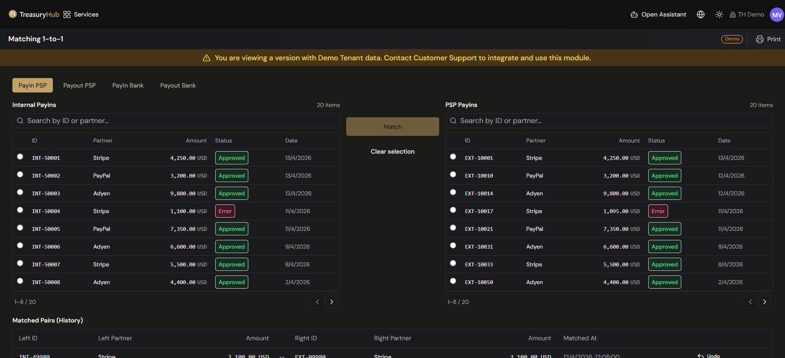
Counterparties, amounts and dates shown in the platform are your own live data; any figures in
this help center are illustrative examples.
Configuration
- The address bar carries the screen's setup. The flow, the chain, the rule and each side's
filters are kept in the link, so a reload or a link you send a colleague opens the same screen.
Your picks are not kept: they are your own work in progress.
- Columns and auto-advance are remembered per side and per browser. They are your preferences,
not your tenant's settings.
- Excluded related-ID values. A value that appears on nearly every movement (a constant
reference an upstream system sends) makes "shares an ID" meaningless and slows matching down.
Treasury Hub can exclude such a value for your tenant: it stops counting as a shared ID both for
the engine and for the ranked candidates on this screen, and the movements keep it. Ask your
Treasury Hub administrator if a value needs excluding; a change takes effect within a minute.
Tips & good practices
- Pick the rule deliberately, not just the one that loads the movements you can see. It is
recorded on the reconciliation and drives the "how these reconciliations happened" breakdown on
the Dashboard.
- Read the chips, not only the score. A candidate at 65 with a green ID chip is usually a
safer match than one at 65 built from amount and date alone.
- Widen Dates around the movement only when the default misses the counterpart; a wide window
makes the pool bigger and the ranking less useful.
- Both sides default to the last 7 days. Widen the date filter before concluding a counterpart
is missing.
- Turn on Only what passes the rule's filters when a side is large and you keep meeting
movements the rule can't use anyway.
- Read the Confirm match dialog rather than clicking through it. It is the only check between
you and a reconciliation that has to be annulled to undo.
- Set a tolerance only for a difference you can explain (a rounding, a small fee). A large
difference usually means the wrong counterpart.
- If you find yourself matching the same shape of exception every day, that's a rule to write — see
Rules & Criteria.
4 · Reconciliation
Reconciliation — Movements & Flows
Where to find it: Reconciliation › Administration › Reconciliation Status (also reachable
under Reporting › Operations). Movements and Movement Graph sit in the same group.
Who uses it: treasury operations, finance team, accountants.
Permissions required: reconciliation access · Read (see Roles & Permissions).
Overview
Three screens let you follow money through reconciliation from three angles.
Reconciliation Status lists chain instances — each one an attempt at a flow, showing how far
it got and where it is stuck. Movements is the flat list of every individual item the module
holds. Movement Graph starts from one movement and fans out across every workflow to show each
reconciliation it takes part in.
Key concepts
- Movement — a single financial item: a bank movement, a payin or payout, a PSP settlement, an
invoice, a fee.
- Chain — the configured route a transaction should take between movement types, for example
Payout Internal → Payout PSP → Bank Movement. Chains are defined in
Rules & Criteria.
- Chain instance — one live run of a chain: a movement arrived, the chain started, and its steps
are either fulfilled or still waiting. A chain instance is what Reconciliation Status lists.
- Step — one hop of the chain. A step can hold OR alternatives — several rules at the same
position, any one of which fulfils it.
- Reconciliation status — Unreconciled, Partial or Reconciled. See
Reconciliation statuses.
- Waiting movement — a movement attached to the instance that hasn't found its counterpart yet.
How to use it
Browse chain instances
- Open Reconciliation › Reconciliation Status.
- Choose the Workflow. Each tab — All, Unreconciled, Partial, Reconciled —
carries its own count, and the counts respect every filter except the status itself, so you can
see the shape of the whole workload at once.
- Narrow with Chain, a From / To date range that defaults to today, and a value filter on
any catalog field such as currency, partner or payment method.
- Each row shows the instance id, its chain, its status, the entry movement's amount
and currency, the partners involved, the date, and a progress indicator of completed
steps out of total.
See inside a chain instance
- Click a row to expand it.
- The chain is drawn as a horizontal flow of movement-type cards joined by arrows, with each part
annotated with its runtime state:
- a card is solid once it holds a movement and dashed while it is still an empty slot;
- an arrow is labelled Matched when that step reconciled, or Pending when it hasn't;
- OR alternatives hang below the main line, so you can see both the path that was taken and
the one that wasn't;
- movements are grouped by side, so each card lists the movements of its own type with their
origin, external id, amount and currency;
- movements still waiting for a counterpart are shown on the step they're attached to.
- Click a Matched arrow to open that reconciliation, or a movement chip to open that movement's
detail — either opens in the right-hand panel.
- If the chain's configuration is broken — a rule unreachable from the flow start, or a loop — the
expanded row says so in a warning and still draws what it can: the connected part of the
chain plus the orphan branches, detached. Fix the chain itself in
Rules & Criteria.
Find an individual movement
- Open Reconciliation › Movements.
- Search by External ID, or narrow with the date range (today by default) and the catalog field
filters.
- The list shows each movement's Id, Created, Type, Origin, Status, its
workflow status in each workflow it belongs to, its currencies, External Id and when
it was last updated. Sort by any of those columns.
- Click a row to open the detail panel: its fields, its currencies and amounts, its external and
related ids, which workflows it is attached to, and its full status history.
Trace a movement across every workflow
- Open Reconciliation › Movement Graph.
- Search for a movement by External ID and select it. It becomes the centre of the canvas.
- The graph draws every reconciliation that movement takes part in — across all workflows, not just
one — with an edge per reconciliation and a node per counterpart movement.
- Click a counterpart to expand it in turn, and keep going: the graph grows outward as far as
the relationships do. Click an edge to open that reconciliation's detail.
- Pan, zoom and use the minimap to navigate a large web of relationships.
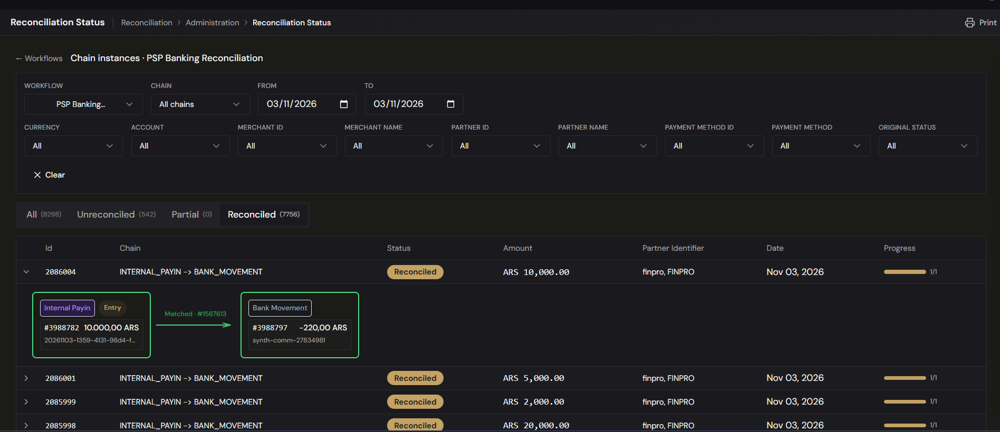
Counterparties, amounts and currencies shown in the platform are your own data; any figures in
this help center are illustrative examples.
Tips & good practices
- Work from the Unreconciled and Partial tabs. The counts on the tabs tell you how big the
job is before you open anything.
- Expand the row rather than guessing from the progress figure — the dashed card and the Pending
arrow show you the exact step that never completed.
- A step that is waiting with a movement already attached means the counterpart hasn't arrived;
a step waiting with nothing attached usually means the movement never got in. Check the workflow's
filter gate in Workflows.
- A degraded chain warning is a configuration problem, not a data problem. No amount of
re-running will fix it — repair the chain.
- All date filters work on UTC days, and all three screens default to today. Widen the range
before concluding something is missing.
- Use Movement Graph when the same item appears in several workflows and you need to see the
whole picture; use Reconciliation Status when you care about one flow completing.
4 · Reconciliation
Reconciliation — Rules & Criteria
Where to find it: a flow's rules, chains and filter groups under Settings › Reconciliation ›
Reconciliation Flows → open a flow.
Who uses it: treasury operations lead, reconciliation administrators.
Permissions required: reconciliation matching rules · CreateEdit to create or edit; Read to view (see Roles & Permissions).
Two related but distinct things — mind the difference:
- Classification rules — rules that give a transaction its category and tags. They are managed
under Settings › Ingestion › Transaction Tagging › Classification rules, and they have
nothing to do with reconciliation.
- Reconciliation rules — the rules, chains and filter groups described on this page, which
decide how two movements are matched into a reconciliation. They live inside a workflow:
open Settings › Reconciliation › Reconciliation Flows, then open a flow to reach its
Rules, Chains and Workflow filters.
Overview
Reconciliation rules are the conditions that make items match automatically. In the rule builder you
define the criteria a match must meet — amount, tolerance, reference, date, partner, currency — and
group rules into chains that trace a transaction end to end. Good rules mean most items reconcile
with no manual effort, leaving only genuine exceptions for the Approvals queue and
the Matching screen.
How workflows, chains & rules fit together
Three levels, from the outside in:
- Workflow (shown as a Reconciliation Flow) — a named container for a body of reconciliation
logic, for example "HG.Cash Operative Balances". It holds the chains, the rules, the workflow
filter groups, and the run instances those rules produce.
- Chain — inside a workflow, a set of rules that together form one flow. Each rule is one hop
between two movement types; connected up they trace a transaction end to end — for example
PSP_PAYIN → INTERNAL_PAYIN → BANK_MOVEMENT is two rules in one chain. Exactly one rule in a
chain is the flow start.
- Rule — one hop: a From and To movement type, Single or Batch, optional
filter groups, and one or more match blocks holding the match criteria (field +
operator) that pair the two sides.
A single chain can capture an entire flow across several movement types — you don't need one
chain per hop. A chain with one rule is just the simplest case.
Key concepts
- Match criterion — a condition comparing the same field on the two movements, such as amount
equals, amount within a tolerance, or same reference.
- Filter criterion — a condition comparing one movement against a value you type in, used to
narrow which movements a rule considers before matching, or which movements enter the workflow at
all.
- Filter group — a set of filter criteria that combine with AND. Sibling groups combine with
OR, so a movement qualifies if it satisfies any one group in full.
- Match block — a named group of match criteria plus the actions and alerts to apply to its
outcome. A rule can carry several match blocks, tried in priority order.
- Chain — a set of rules that connect into a flow. Its topology is Valid when every rule
is reachable from the flow start, degraded when it isn't.
- Movement type — the kind of item on each side of a hop, for example
PSP_PAYIN,
INTERNAL_PAYIN, BANK_MOVEMENT, SETTLEMENT, INVOICE.
- Flow start — the rule that begins the chain. Each chain must have exactly one.
Before you start
- Rules live under a workflow. Set up (or pick) the workflow first — see
Workflows.
- Decide the movement types you're matching (for example internal payins to PSP payins) and the
tolerance your business accepts.
- Know your field types. Every field in the catalog is String, Decimal or Date:
amount
is Decimal, createdOn is Date, and everything else (references, partner and account identifiers,
names, channel, currency code) is String.
How to use it
Create a rule
- Open Settings › Reconciliation › Reconciliation Flows, find your flow, and choose Rules.
- Choose New rule.
- Set the basics: the From and To movement types, the conciliation type (Single
or Batch), whether it's the flow start, and the chain it belongs to. For a Batch rule
you must also declare the anchor side — the side that has exactly one movement.
- Optionally add filter groups to restrict which movements the rule considers before matching.
- Add one or more match blocks. In each block, add the match criteria: pick the field to compare
and the operator.
- In the block's actions matrix, set what the engine does when exactly one candidate matches and
when several do, and tick the alerts you want.
- Save. The rule joins its chain and starts matching new movements straight away.
Edit, move or deactivate a rule
- Select a rule to open its detail, then choose Edit to change its criteria, filters or actions.
- To stop a rule matching new items without removing it, choose Deactivate. Existing
reconciliations and alerts are kept; the rule simply stops running.
- The chain is read-only on the rule form. To put a rule in a different chain of the same workflow,
open the chain page and use Move rule. The chain's topology is re-validated on the move,
and a move that would break it is rejected with the offending rules highlighted.
Organise rules into chains
- From a workflow, open its Chains.
- Create a chain with a name, then assign rules to it.
- You don't order the rules by hand. The chain's order is derived from how the rules' From and
To movement types connect, so the steps list is a result, not something you drag.
- A step can hold several rules at the same position — these are OR alternatives: fulfilling
any one of them fulfils the step. Chains are therefore not strictly linear.
- A chain must have exactly one active flow-start rule; saving one with none or more than one is
refused. Chains that loop back on themselves, or that leave a rule unreachable from the flow
start, are also refused and the chain is flagged degraded with a short explanation.
Decide which movements enter a workflow
- From a workflow, open Workflow filters.
- Choose New group and add the conditions a movement must satisfy. Criteria in a group combine
with AND; the screen separates consecutive groups with an explicit OR.
- A movement that satisfies no active group never enters the workflow at all — it gets no chain
instance and, deliberately, no orphan alert, because being excluded by a filter you configured is
the expected outcome rather than an anomaly.
- With no groups defined, every movement whose type has applicable rules enters the workflow.
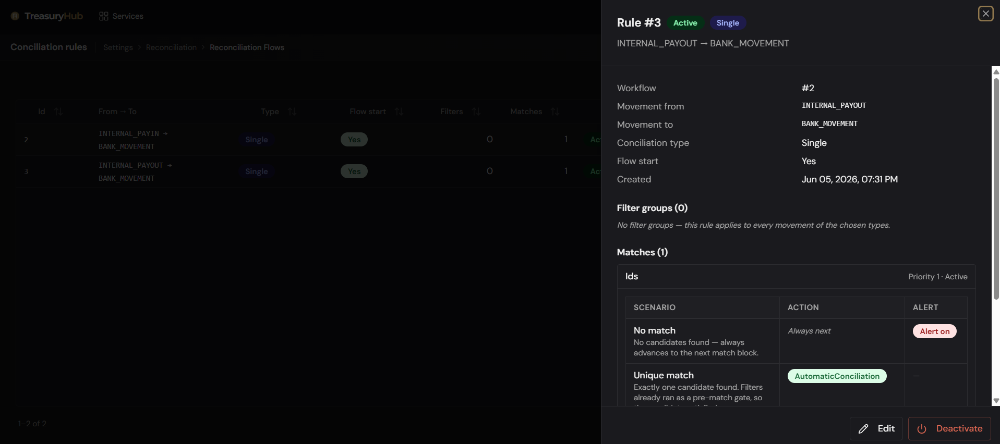
Configuration
Operators
Seven operators are available:
| Operator |
Where you can use it |
Needs |
| Equals |
Match criteria and filters |
— |
| Range |
Match criteria and filters |
a tolerance |
| Greater than / Greater than or equal |
Match criteria and filters |
— |
| Less than / Less than or equal |
Match criteria and filters |
— |
| In |
Filters only |
a list of values |
- Range and the four inequalities only work on Decimal or Date fields. Choosing one on a String
field is rejected when you save, so a mis-configured criterion fails loudly instead of silently
never matching. The operator dropdown hides the combinations your field can't use.
- In lets a filter accept any of several values. You enter them as a list of chips — "matches any
of them" — and the set is case-insensitive, so
AAA and aaa are the same entry. It is rejected
on match criteria, because a list of literals means nothing when you are comparing two movements
against each other.
Tolerance
Tolerance is an absolute amount, never a percentage. Range matches when the difference between
the two values is within the tolerance:
- on a Decimal field, the tolerance is an amount — 0.5 means the two sides may differ by up to
half a unit of currency;
- on a Date field, the tolerance is a whole number of calendar days — 2 means up to two
days apart.
The only Date field in the catalog is createdOn, the movement's creation date.
Two behaviours that change your results
- Match criteria compare magnitude and ignore sign. The two sides of a reconciliation carry
opposite signs by accounting convention, so
−23,421 matches 23,421. Filter criteria keep the
sign, so a filter of amount greater than 0 really does mean credits only.
- Equals on a String field is case-insensitive, deliberately: partner and account identifiers
arrive from different providers with inconsistent casing.
Matching on sets
Five fields in the catalog are collections rather than single values, and they match differently:
| Field |
Matches when |
| ids |
the two movements' related-ID sets share at least one value |
| externalIdOrRelatedIds |
the union of external ID and related IDs on each side shares a value |
| amounts |
for a currency present on both sides, some pair of amounts is equal (multicurrency) |
| currencies |
the two movements share at least one currency |
| personalName |
any payer or beneficiary name on one side equals one on the other |
All five support only Equals. Configure one of them with any other operator and the criterion
simply never matches — nothing warns you, so check the operator when a set-based rule produces
nothing. personalName compares case-insensitively and trims surrounding spaces, but it does not
normalise accents and does not do fuzzy matching: JOSE PEREZ and jose perez match, José
Pérez does not.
Rule outcomes
A match block decides what happens for each outcome:
- Auto-reconcile — create the reconciliation immediately.
- Send for approval — create a reconciliation request for a person to approve, which is what
populates the Approvals screen.
- Try the next rule — leave the movement alone and let the next rule have a go.
No match has no action of its own; it always moves on to the next match block.
Alerts are separate from the outcome. Each match block carries three independent checkboxes — alert
when nothing matched, when exactly one thing matched, and when several did — and ticking one never
changes what the engine does.
Other settings
- Conciliation type: Single (one-to-one) or Batch (many items around one anchor — see
Matching).
- Common criteria fields: amount, external ID, account ID, type, partner name and identifier,
payer and beneficiary names and personal IDs, merchant, channel, payment method, currency code, and
the movement's creation date.
AI Reconciliation Assistant
New workflow and Edit on the Reconciliation Flows screen open the Workflow Studio, where
you describe what you want in plain language ("reconcile PSP payins → internal payins → bank
movements, matching on external/related IDs") and the agent drafts the whole workflow: its
chains, rules and filter groups. The workflow is shown as a graph you can click through, with JSON
and YAML views of the same document and a list of the operations a save would execute. The agent
asks only what it needs (match field and operator, Single or Batch, what to do on multiple matches),
flags risks such as matching on IDs alone with no amount criterion, and checks that the topology is
connected with a single entry point before you save. You confirm every change.
Saving a workflow as a whole document can delete a node outright, which the per-screen
Deactivate buttons never do. A delete is refused when execution data — a conciliation, a movement
tag, a trace row — still references the node, because that history is never deleted.
Tips & good practices
- Give each match block a clear name; it is what the Approvals screen and the
Dashboard use to explain why two items were paired.
- Put the strictest, most specific block first in a rule and looser tolerance blocks after
it, so exact matches win before approximate ones.
- Keep tolerances realistic: too tight and good items fall through to manual matching; too loose and
the engine mis-matches.
- Use send for approval rather than auto-reconcile while you are still tuning a rule — the
requests give you a reviewable record of what the rule would have done.
- Prefer Deactivate over deleting on the rule, chain and filter-group screens — it preserves the
audit trail.
4 · Reconciliation
Reconciliation — Workflows
Where to find it: Settings › Reconciliation › Reconciliation Flows (Flujos de Conciliación) — there is no "Reconciliation › Workflows" menu item. (The flows it produces are viewed under Flows (Reconciliation Status).)
Who uses it: treasury operations lead, reconciliation administrators.
Permissions required: reconciliation workflows · CreateEdit to create or edit; Read to view (see Roles & Permissions).
Overview
A reconciliation workflow is the container for one body of matching logic. It holds the
rules and chains that pair movements, and the filter groups that decide
which movements are allowed in at all. Everything the module does — the chain instances on
Reconciliation Status, the requests in Approvals, the
counts on the Dashboard — happens inside a workflow. The screen is listed as
Reconciliation Flows.
Key concepts
- Workflow — a named configuration that groups chains, rules and filter groups. Names are unique
within your organization.
- Chain — a set of rules inside the workflow that connect into one end-to-end flow, for example
Payin Internal → Payin PSP → Bank Movement. See Rules & Criteria.
- Filter group — a set of conditions that decides whether a movement enters the workflow. This
is the workflow's entry gate.
- Chain instance — one run of a chain on real movements. See
Movements & Flows.
Before you start
- Decide the movement types the workflow chains together and whether each hop matches one-to-one or
in batch.
- Have your rules & criteria planned — a workflow does its job through the
rules and chains inside it.
- Work out which movements belong in this workflow before you write the rules. Getting the entry
gate right is what stops a workflow filling up with chains that could never complete.
Common patterns
A workflow can describe any end-to-end matching pattern you need. The ones treasury teams build most
often are:
- PSP and bank reconciliation — internal payins and payouts to their PSP records, and on to the
bank settlement. The richest pattern, usually mixing single and batch hops.
- Invoice reconciliation — a purchase or sales invoice against its bank movement.
- Bank-to-bank reconciliation — one bank movement against another, for example a transfer
between your own accounts.
- Treasury-specific patterns — FX, loan and investment reconciliation, where the deal record is
one side and the cash movement the other.
How to use it
View workflows
- Open Settings › Reconciliation › Reconciliation Flows.
- Use the tabs (Active, Inactive, All) to filter the list.
- Click a workflow to open its detail panel.
- From a workflow row you can drill into its Rules, Chains, Workflow filters and
Chain instances.
Create a workflow
- Choose New workflow. This opens the Workflow Studio, where a flow and everything
inside it is built.
- Enter a name, unique within your organization.
- Build the flow. You can work in the graph view, read it as JSON or YAML, or review it
as a list of operations — the same flow, shown three ways. Or describe what you want to
the agent beside it and refine its proposal turn by turn; the views update as you go. See
Working with an Agent.
- Save. The workflow is created active, with the rules and chains you
built; you can add more at any time.
Edit or deactivate a workflow
- From a workflow row or its detail panel, choose Edit to reopen it in the Workflow Studio,
where you can rename it or change its chains, rules and filters.
- Choose Deactivate to stop it taking in new movements. Existing reconciliations are
unaffected and the configuration is kept — deactivation is the safe alternative to deleting.
Configuration
Filter groups — the entry gate
Each workflow can define groups of conditions that a movement must satisfy before it is admitted.
- Open the workflow's Workflow filters.
- Choose New group and add its criteria. Criteria inside a group combine with AND; the
screen separates consecutive groups with an explicit OR, so a movement qualifies if it
satisfies any single group in full.
- A movement that satisfies no active group never enters the workflow: it gets no chain instance,
and deliberately raises no orphan alert — an exclusion you configured is the expected outcome,
not an anomaly.
- With no groups defined, every movement whose type has applicable rules enters the workflow.
Deactivating a group changes the gate for movements that arrive afterwards. Movements already
assigned stay where they are until a maintenance run re-evaluates them.
Filter groups are also a rule-level feature, where they narrow which movements a rule considers.
The workflow-level gate runs first and decides whether the movement is in the workflow at all —
see Rules & Criteria.
Workflow maintenance
Changing a workflow only affects what arrives next. Three on-demand bulk processes bring the
movements that are already inside into line with the current configuration. Each runs over one
workflow and one date range, in chunks, picking up where the previous run stopped, and each returns
a per-movement account of what it did or would do. Ask your Treasury Hub administrator to run one.
- Re-apply the entry gate — re-tests the movements already in the workflow against the current
filter groups and removes the ones that no longer belong, along with any chain instance left with
nothing pointing at it. It defaults to counting only, so an accidental run reports what it
would remove instead of removing it, and it never touches a movement with work in progress: only
movements that are not part of a live reconciliation are eligible.
- Reprocess unreconciled movements — pushes movements that haven't settled back through the
rules, so a late-arriving counterpart or a rule you have since edited gets another chance to
match. It never deletes anything.
- Assign existing movements — runs assignment over movements that already exist but never
reached this workflow, because the workflow was created after they were ingested. It never
deletes anything.
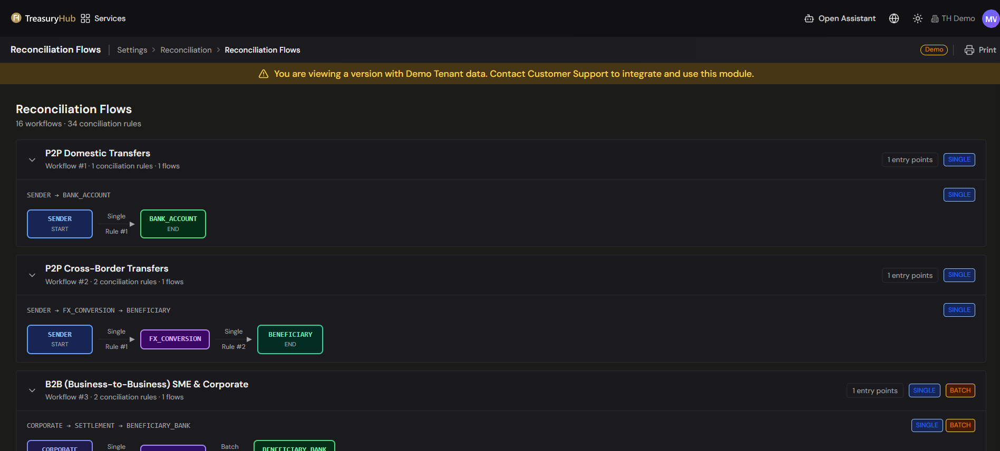
The specific workflows, counts and counterparties shown in the platform are your own
configuration; any examples in this help center are illustrative.
Tips & good practices
- Build the entry gate first, then the rules. A workflow with no gate takes in every movement
whose type has an applicable rule, which is rarely what you want once you have more than one
workflow.
- Give workflows clear, descriptive names — every other reconciliation screen navigates by them,
and the name is what reviewers see on a request.
- Count before you purge. The re-apply process reports by default for a reason: read the list of
movements it would remove before letting it remove them.
- After you tighten a rule, run reprocess unreconciled movements over the affected dates rather
than waiting for the backlog to resolve itself.
- Deactivate rather than delete when a pattern is no longer needed, so history and linked rules
stay intact.
5 · Payments
Payments — Overview
Where to find it: Payments
Who uses it: treasury operations, accounts payable, finance managers, approvers.
Permissions required: CashManagement.Payments — Read to view, CreateEdit to create and approve. See Roles & Permissions.
Overview
The Payments module — the Payment Hub — is where your organization prepares, approves, and
tracks every outbound payment from one place, instead of logging into a separate portal for each
bank. You can raise a single payment or a batch (supplier runs, payroll, intercompany, tax),
route it for multi-level approval, and follow it all the way to settlement — with a full audit
trail of who did what and when.
The goal: replace the manual, portal-by-portal, spreadsheet-controlled payment process with one
governed, auditable workflow that works across all your banks and currencies.
Key concepts
- Payment — an instruction to move money from one of your accounts (the debtor account) to
a beneficiary's account (the creditor account). A payment has a header and one or more detail
lines.
- Batch payment — a single payment that carries multiple detail lines (for example, one
supplier run paying many invoices, or a payroll file). Each line has its own amount, remittance
information, and execution date.
- Beneficiary — the party you are paying. Beneficiary and bank details can be reused across
payments so you don't re-key them.
- Payment corridor / rail — the network a payment travels on to reach the beneficiary's bank,
such as SWIFT (cross-border) or SEPA (Eurozone), alongside local instant and batch rails.
Treasury Hub records which corridor each payment uses.
- Approval level — the authority a user holds for signing off payments. A payment carries the
approval level it requires, and only users at or above that level can approve it. See
Payment Approvals.
- Status — where a payment is in its lifecycle: pending approval, sending, sent/settled, or in
an exception/rejected state. See Payment Blotter.
What's in the module
The Payments menu contains these screens:
| Screen |
What it's for |
| Payment Blotter |
The main list of payments, with status tabs, details, status history, and failed imports. |
| Creating a payment |
The multi-step form for raising a new single or batch payment (opened from the blotter via + New Payment). |
| Payment Approvals |
Review payments awaiting sign-off and approve or reject them. |
Related: Invoices — the invoice documents that back your payables — live under
Reports › Operations › Invoices (Facturas), not the Payments menu.
How payments flow, end to end
- A payment is created — either directly in Treasury Hub via the
multi-step form, or generated from your ERP's accounts-payable data.
- It is validated — the form checks the essentials (for example, the debtor and creditor
accounts must differ and the amount must be positive), and enhanced pre-send validation,
including sanctions screening, runs before dispatch.
- It routes for approval — based on your rules, the payment requires one or more approvers,
and the creator cannot approve their own payment (four-eyes). Sign-off happens in the dedicated
Payment Approvals workspace.
- It is dispatched — approved payments are sent to the bank, with SWIFT/SEPA message dispatch
and real-time tracking.
- Its status is tracked — you follow progress on the Blotter, with a
full status history and notes on every payment.
Payment capabilities
The Payments module covers:
- Payment Blotter, status tabs, detail & status history
- Multi-step single & batch payment creation
- Notes and failed-imports management
- Invoices (upload, download, metadata)
- Payment Approvals — multi-level approvals with mandatory rejection notes
- Payment Lifecycle Blotter
- Net Settlements
- SWIFT / SEPA message dispatch & real-time tracking
- Sanctions / AML pre-send screening
- ERP / NetSuite accounts-payable integration
Before you start
- Make sure the bank accounts you'll pay from exist and you have access to them — see
Bank Accounts.
- Confirm your permissions:
CashManagement.Payments at CreateEdit to raise payments, plus a
sufficient payment approval level to sign them off.
- Agree your approval rules (how many approvers, at what amounts) with your administrator.
Tips & good practices
- Use batch payments for supplier runs and payroll so many lines move through one approval.
- Keep beneficiary and bank details clean and reusable to avoid rejected payments from bad
BIC/IBAN data.
- Attach the backing document in Invoices so approvers have full context.
Validation & tracking
Enhanced pre-send validation & tracking — multi-layer message validation and real-time
payment status across the network connections your payments travel on.
5 · Payments
Payment Approvals
Where to find it: Payments › Payment Blotter › Awaiting approval
Who uses it: approvers — treasurers, finance managers, and anyone with payment approval authority.
Permissions required: CashManagement.Payments · CreateEdit and a sufficient payment approval level. See Roles & Permissions.
Overview
Approving payments is part of the Payment Blotter, not a separate screen. The
Awaiting approval tab holds every payment that has been created but not yet signed, and you
approve or reject them from there.
Treasury Hub enforces governance automatically: the person who creates a payment cannot approve it,
and larger or riskier payments can require several signatures in sequence. Every decision is
recorded with the approver, the timestamp and — for rejections — a mandatory reason.
Key concepts
- Signature — one approval on a payment. A payment in this state reads Awaiting signature
n of m, so you can see how far through its chain it is.
- Payment approval level — the authority assigned to each user. Every payment carries the level
it requires, and only users at or above that level can sign it. Your level is set on your user
record by an administrator — see
Users & Roles.
- Four-eyes — the creator of a payment cannot also be its approver.
- Approval rule — what decides how many signatures a payment needs, by ordering account, amount,
currency and payment type. See Payment Approval Rules.
- Reason — the explanation captured when you reject. It is required, and it is what tells the
creator what to fix.
Before you start
- You need
CashManagement.Payments at CreateEdit, and an approval level that meets the
payment's requirement.
- There must be payments in the Awaiting approval tab. A payment is born there — creating one
does not send it.
- Your browser may ask for your location. Treasury Hub records where an approval was given when the
browser provides it; approval still works if you decline.
How to use it
Approve a payment
- Open Payments › Payment Blotter and select the Awaiting approval tab.
- Find the payment and read it — ordering account, beneficiary, amount, currency and value date.
Expand the row for its traceability panel, which shows the signatures collected so far.
- Choose Approve on the row.
- Add a note if it is useful; it is optional on an approval.
- Confirm. The signature count advances. Once the last required signature is in, the payment moves
to On its way.
Reject a payment
- Choose Reject on the row.
- Enter the reason. This is required — the confirm button stays disabled until you write one.
- Confirm. The payment moves to the Rejected tab with your reason and identity on its history.
When an approval is refused
A payment can be refused by the platform rather than by you, and the message says why — for example
that a line's counterparty has no linked settlement instruction and so cannot be paid. Fix what the
message names, then approve again. The refusal is not a rejection: the payment stays in Awaiting
approval.
When you cannot approve
- If your approval level is below what the payment requires, you cannot sign it; it has to go to
someone with sufficient authority.
- You cannot approve a payment you created.
Configuration
- How many signatures a payment needs is set by the rules under Admin Console › Master Data ›
Payment Approval Rules — see Payment Approval Rules.
- Each user's approval level is set on their user record — see
Users & Roles.
Tips & good practices
- Write specific rejection reasons. The creator works from your text alone to correct and
resubmit.
- Read the traceability panel before signing a payment that already carries signatures — it
tells you who has seen it and what they saw.
- Keep approval levels aligned to real authority, so payments route to the right people instead of
stalling in the tab.
5 · Payments
Creating a Payment
Where to find it: Payments › Payment Blotter › + New Payment
Who uses it: treasury operations, accounts payable, anyone who raises payments.
Permissions required: CashManagement.Payments · CreateEdit
Overview
You raise a payment from the New Payment dialog, opened from the
Payment Blotter with + New Payment. The dialog composes a whole batch
in one pass: you pick the single account the money leaves from, add one line for each beneficiary you
are paying, then give the batch a reference and an execution date. On Create payment the batch is
created Pending approval and appears in the blotter, waiting to be signed before it leaves.
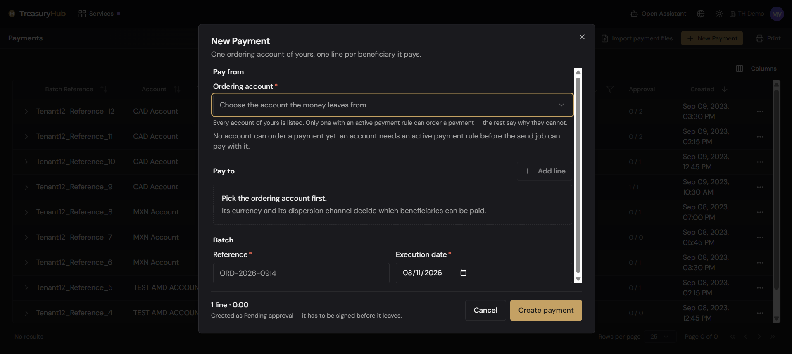
Key concepts
- Ordering account — the one account of yours the money leaves from. Its currency and the
dispersion channel it pays through decide which beneficiaries the batch can pay.
- Payment line — one beneficiary, one amount, one concept. A batch holds as many lines as you
need, all paid from the same ordering account on the same date.
- Beneficiary (payable instruction) — a settlement instruction you can actually pay: a
counterparty's banking coordinates on a given channel. You never type account details here; you
pick from what is already on record. See
Counterparties & SSIs.
- Own account — a counterparty marked as your own company. Money moving to it is a transfer
between your own accounts, not a payment to a third party, and the dialog treats it differently.
- Dispersion channel — the rail an account pays through (for example SPEI, SEPA, SWIFT, Kuspit).
A beneficiary can only be paid from an account that uses the same channel.
- Batch reference — your own reference for the whole batch. It cannot contain spaces.
- Concept (remittance information) — the text the beneficiary's bank prints on their statement,
so they can identify the money.
- Execution date — the date you are asking for the batch to be executed.
Before you start
- You need
CashManagement.Payments at CreateEdit.
- At least one of your accounts must have an active payment integration. The picker lists every
active account anyway and tells you which ones cannot order payments and why — see
Bank Accounts.
- The beneficiaries must already exist and be approved in
Counterparties & SSIs, with a settlement
instruction in the ordering account's currency on the ordering account's channel.
- Remember the four-eyes rule: the batch is created Pending approval and you cannot sign your
own batch — a different user with approval rights has to. See Payment Approvals.
How to use it
Choose the account the money leaves from
- On the Payment Blotter, click + New Payment.
- Under Pay from, open Ordering account. Type in the search box at the top of the list to
filter by account name, bank or currency.
- The list is split under two headings: Can order payments and No payment integration.
Entries in the second group cannot be chosen, and each one says why — for example "This account
has no payment integration configured, so nothing could disperse it.", "Its payment integration
is switched off." or "Payments are switched off for this account." Both headings always show,
so an empty Can order payments group is itself the answer.
- Choose an account. A panel under the field states its Currency and what it Disperses
through. Neither is a choice — both come from the account's payment integration, and together
they decide which beneficiaries are payable.
If exactly one of your accounts can order payments, it is selected for you and the field is hidden.
Changing the ordering account after you have composed lines clears the beneficiary on every
line — what an account can pay depends on its currency and channel. Amounts and concepts are kept.
Add the payment lines
- Under Pay to, the first line is already there. Use Add line for each further beneficiary,
and the bin icon on a line to remove it (it is hidden when only one line is left).
- On Beneficiary, search by beneficiary name, code, account or bank. One search term filters the
whole list, which is grouped as Can be paid from this account and Cannot be paid from this
account.
- Each row shows the counterparty name and code, a badge with the channel it is paid through,
the bank, account number or IBAN and currency, and on the right where it stands with the payment
provider: Not registered yet, Registered, Under review or Refused by the provider. Rows
can also carry a Default, Own account or Change pending badge.
- Rows under Cannot be paid from this account are greyed and cannot be selected, and every one
of them states its reason, for example:
- "The counterparty is Pending: nobody has signed off on paying it." (also Rejected, Suspended)
- "It is paid in USD, and this account pays in MXN."
- "It is paid through SPEI, and this account pays through KUSPIT."
- "This own account is not registered with the provider yet.", "The bank is still validating
this own account." or "The provider refused this own account."
- "This account does not pay through any counterparty channel."
- Click a payable row to select it. Once chosen, the line shows the beneficiary with its channel and
where the money lands; Change reopens the search.
- Fill in Amount. It must be greater than zero. The currency is shown beside the field and is
always the ordering account's — it is not a choice.
- Fill in Concept — what this line pays for. It is required when you are paying a third
party, because it is the text that beneficiary's bank shows on their statement.
When the beneficiary is one of your own accounts, the field is replaced by Concept: the
batch reference: there is nothing to type, and the batch reference travels in its place.
If no counterparty of yours has a live settlement instruction, the list says so and offers a
Manage counterparties link. If the account pays through no counterparty channel at all (it
disperses by file), the list says that instead — send that account's payments from the file import
route described in Payment Blotter.
Finish and create the batch
- Under Batch, enter the Reference. It is required and cannot contain spaces.
- Check the Execution date. It is pre-filled with today and cannot be in the past.
- The footer totals the batch — the number of lines and the sum, in the account's currency — and
reminds you that it is created as Pending approval.
- Click Create payment (or Cancel to discard). A confirmation names the batch reference and
how many signatures it needs before it leaves.
- The batch appears on the blotter under Awaiting approval.
Validation rules
Nothing is sent until every rule below passes. A refused submit keeps the dialog open with everything
you typed, marks the offending fields and says "Nothing was sent: check the fields marked in red."
- An ordering account must be chosen.
- Every line must name a beneficiary, and only a payable one can be chosen — greyed rows cannot
be selected at all, and the platform refuses the same combinations again when the batch is posted.
- Every amount must be greater than zero.
- Every line paying a third party must carry a concept. A line paying one of your own
accounts does not ask for one.
- The reference is required and cannot contain spaces.
- The execution date is required and cannot be earlier than today, counted where you are.
- A batch needs at least one line.
If the platform refuses the batch, the dialog shows exactly what it answered — each reason names the
instruction or the field to change — and keeps your work so you can correct it and try again.
Tips & good practices
- Pick the ordering account first. Its currency and channel are what the beneficiary list
answers, and changing it later costs you the beneficiaries you already chose.
- If the beneficiary you want is greyed, read its reason before changing anything: an unapproved
counterparty is somebody to chase, a currency or channel mismatch means a different ordering
account, and an unregistered own account is something to wait for.
- Put a meaningful, unique value in Reference — it identifies the batch on the blotter and makes
reconciliation far easier later. For lines paying your own
accounts it is also the text that travels with the transfer.
- Group payments that share an account and a date into one batch: they are approved and tracked
together, and each line still keeps its own status.
- A Change pending badge means the beneficiary's data changed since the provider last agreed to
it; the payment carries the update, and it will not leave until the counterparty is approved again.
5 · Payments
Invoices
Where to find it: Reporting › Operations › Invoices
Who uses it: accounts payable, treasury operations, finance team.
Permissions required: CashManagement.Invoices · Read to view, CreateEdit to add/edit. See Roles & Permissions.
Overview
The Invoices screen is a blotter of the invoices that back your payables. It lists each invoice with
its number, payee, status, amount, and key dates, so your team can see what's outstanding and due.
Keeping invoices alongside your treasury data gives approvers and auditors the context behind each
payment.
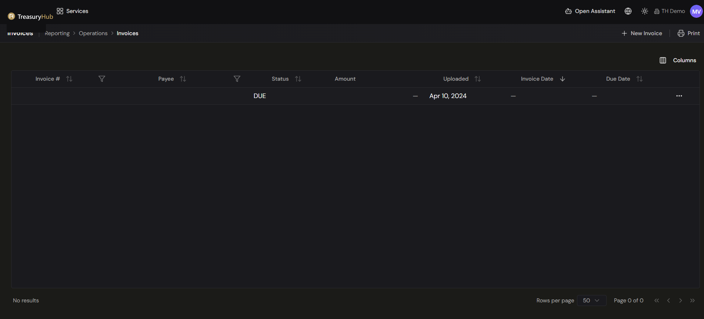
Key concepts
- Invoice # — the invoice's identifying number.
- Payee — the party the invoice is payable to.
- Status — where the invoice stands (for example DUE).
- Amount — the invoice value.
- Uploaded — the date the invoice was added to Treasury Hub.
- Invoice Date / Due Date — the invoice's issue date and the date payment is due.
Before you start
- You need
CashManagement.Invoices at Read to view the list, and CreateEdit to add or edit
invoices.
How to use it
View, sort, and filter invoices
- Open Reporting › Operations › Invoices.
- The grid lists invoices with Invoice #, Payee, Status, Amount, Uploaded, Invoice Date, and
Due Date.
- Click a column header's sort arrows to order the list, or a column's filter icon (on
Invoice # and Payee) to narrow it.
- Use Columns (top right) to show or hide columns, and the pagination controls at the bottom to
change rows per page and move between pages.
Add a new invoice
- Click + New Invoice (top right).
- Complete the invoice details in the form and save. The new invoice appears in the grid with its
Uploaded date.
Row actions
- Open the ⋯ menu at the end of any row for the actions available on that invoice.
Print
- Click Print (top right) to print the current view.
Tips & good practices
- Record an invoice before or alongside raising its payment so
approvers have the context they need.
- Use the Status and Due Date columns to stay ahead of what's coming due.
- Use column filters (Invoice #, Payee) to find a specific invoice quickly in a long list.
5 · Payments
Payment Blotter
Where to find it: Payments › Payment Blotter
Who uses it: treasury operations, accounts payable, finance managers, approvers.
Permissions required: CashManagement.Payments · Read to view, CreateEdit to act. See Roles & Permissions.
Overview
The Payment Blotter is the main screen of the Payments module: a single list of every outbound
payment batch across your group. From here you see each payment's account, company, institution,
amount, count of items, origin, approval progress, and status — and you can expand any row to see
exactly what happened to it, line by line. It's where your team tracks the daily outflow: supplier
payments, intercompany transfers, FX settlements, loan disbursements, payroll, and taxes.
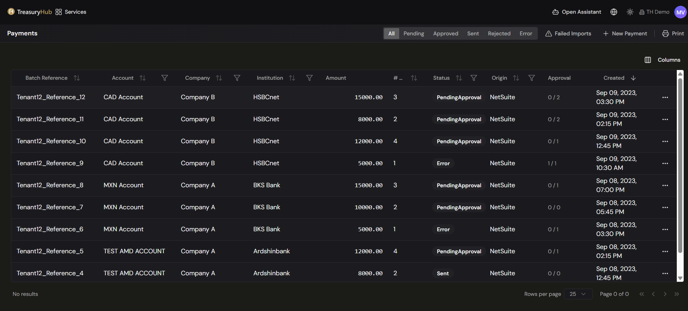
Key concepts
- Status tab — a filter across the top that groups payments by where they are in their
lifecycle (see below).
- Batch reference — the reference that identifies a payment (or payment batch) on the grid.
- Origin — where the payment came from (for example an ERP feed such as NetSuite, an
imported file, or created manually in Treasury Hub).
- Approval progress — how many of the required approvals a payment has (for example, 1 of 2).
- Traceability — the three separate answers to "did this payment happen?": what Treasury Hub did
with the order, what the payment provider says, and whether the bank statement backs it up.
The status tabs
Payments are organized into tabs so you can focus on what needs action:
| Tab |
Shows |
| All |
Every payment, regardless of status. |
| Awaiting approval |
Payments that have been created and still need one or more signatures. |
| On its way |
Payments that are signed and have not landed yet — approved and waiting for the send run, or going out right now. |
| Awaiting confirmation |
Payments that have been sent to the provider, with no verdict back yet. |
| Confirmed |
Payments the provider has confirmed as executed. |
| Rejected |
Payments a reviewer declined. |
| Needs attention |
Payments that hit a problem and need a person to look at them. |
Numbers, counterparties, and amounts shown in demos (for example, headline "payments today" or
"total outflow" figures) are illustrative — your blotter reflects your own data.
The payment grid
Each row is a payment batch, with these columns:
| Column |
Shows |
| Batch Reference |
The reference identifying the payment or batch. |
| Account |
The ordering account the money leaves from. |
| Company |
The paying legal entity. |
| Institution |
The bank / financial institution. |
| Amount |
The total amount. |
| # Txns |
The number of payment lines in the batch. |
| Status |
Where the batch stands — including what the provider did with the money, not only how far the send got. |
| Origin |
Where the payment came from (for example NetSuite, an imported file, or manual). |
| Approval |
Approval progress as x / y (approvals collected / required). |
| Created |
When the payment was created. |
| Account Number |
The ordering account's number. Hidden by default; switch it on with Columns. |
| Account Owner |
Who holds the ordering account. Hidden by default; switch it on with Columns. |
Each row also has a ⋯ menu with View Details, Approve / Reject (when you may),
Add Note, View Notes and Status History.
Before you start
- You need
CashManagement.Payments at Read to view the blotter. Creating payments and
approving/rejecting require CreateEdit and a sufficient approval level.
- Bank accounts and beneficiaries must exist for payments to appear.
How to use it
Find and filter payments
- Open Payments › Payment Blotter.
- Click a status tab — All, Awaiting approval, On its way, Awaiting confirmation, Confirmed,
Rejected, Needs attention — to narrow the list.
- Use the column filters to narrow further by account, company, institution, status or origin.
- Use the Columns button to choose which columns are shown, including the ones hidden by
default.
- Sort a column to group, for example, everything created today.
Track what happened to a payment
- Click a row (or its chevron) to expand it. The traceability panel opens underneath, without
leaving the list.
- On the left, Payment lifecycle lists the stages of the batch in order: Received,
Approved, Beneficiary, Dispatch, Taken by the provider, Confirmed by the
provider, and Reconciled with the statement. Each stage shows when it happened and who did
it when a person did, and the stages that nothing feeds yet stay on the page saying so, rather
than disappearing.
- Beneficiary is a stage of its own because a first payment to a new beneficiary registers it
with the provider before it transfers anything. It reads registered, already registered,
updated, refused by the provider, or registered when the payment is dispatched.
- When a batch's lines did not all end the same way at a stage, the stage says so with a
count — for example "3 of 5 lines were ordered — the rest never left" — and the connector
splits visually, so you can see exactly where the batch divided.
- On the right, each payment line is shown with its beneficiary, reference, bank, amount and its
own status. Under each line, three cards keep three different questions apart on purpose:
- The order — us — what Treasury Hub did: whether it was ever attempted, and when it last was.
- The provider — the provider's own verdict and its tracking key for the transfer.
- The statement — whether the bank statement backs it up.
They are separate because they can disagree, and the disagreement is the information.
- A line that failed shows the reason, the failure code, when it happened, how many send attempts
there were, and the provider's message word for word.
- Act on a line where the panel offers it:
- Retry the send on a line that did not go out. When a retry is not allowed, the reason
replaces the button — for example because the order already reached the provider and retrying
could pay twice, or because only an approver may retry.
- Link beneficiary on a line that arrived without one (typically from a file or ERP feed).
Choose the settlement instruction the line will be paid into; only approved instructions in the
line's own currency are offered.
- Use Full history for the batch's complete status history, or Open the whole batch for the
full detail screen.
Create a new payment
- Click + New Payment on the blotter's toolbar.
- Compose the batch in the New Payment dialog.
- On Create payment, the batch appears in the blotter under Awaiting approval.
Import payment files
- Click Import payment files on the toolbar.
- Choose the Ordering account. The picker works exactly like the one in New Payment: searchable,
split into Can order payments and No payment integration, with the reason on each account
that cannot be used. The account sets the approval level and the provider the batch is dispersed
through — the file only says who is being paid.
- Check Country and Fallback currency. Both are taken from the ordering account; fill the
country in yourself if it could not be worked out, and note that the currency is used only for
rows that carry none of their own.
- Drag the files onto the dropzone, or browse for them. You can send several at once:
.pdf,
.xlsx, .xls, .csv and .txt, up to 20 files of 10 MB each. Anything rejected says why, and
the rest of the batch is still queued.
- Click the send button — it counts what you picked, for example Send 3 files. The dialog
confirms only that the files were received, and closes.
This dialog tells you nothing about parsing, on purpose. It returns before a single file has
been read, so "received" is the only honest thing it can say. What each file actually became — the
rows read, the payments created, the errors — is shown on
Ingestion Activity, and that is where to go after you
send. The dialog's footer points you there too.
Approve or reject a payment
You can approve or reject straight from a row's ⋯ menu when you have the rights. The dedicated
workspace for reviewing is the Payment Approvals screen — see
Payment Approvals for how the approval workflow works.
Tips & good practices
- Work the tabs in order of urgency — clear Needs attention and Awaiting approval first.
- Don't read On its way as "paid". A payment is only confirmed once the provider says so, which
is what Confirmed means and what the traceability panel's provider card shows per line.
- Use the Approval column to see at a glance how many sign-offs a payment still needs.
- When a line failed, copy the provider's message verbatim into any support request — it is the
string support searches for.
- After importing files, go straight to Ingestion Activity: nothing about the parse is reported
on the blotter.
6 · Reporting
Reporting — Overview
Where to find it: Reporting
Who uses it: treasurers, finance teams, FP&A, controllers, auditors, executives.
Permissions required: each report respects the permissions of the data it shows; most cash
reports need CashManagement.CashPosition · Read. See Roles & Permissions.
Overview
Reporting is where you read the numbers that run treasury. The data is already ingested,
normalized and reconciled, so a report is a live view of your position rather than a spreadsheet
you rebuild each morning.
Each report is its own screen in the Reporting menu, with its own controls. You open the one
you need, set its dates and filters, read it on screen, and export it if you want to take it with
you.
The Reporting menu has an Overview column, which carries the Cash & Liquidity and
Datalake (POC) sub-headings, then Operations and Risk Management.
| Group |
What's in it |
| Cash & Liquidity |
Balance Differential, Category Positions, Cash Forecast, Actual vs Forecast and Scenarios (What-If). Your consolidated position itself is on Home. |
| Datalake (POC) |
Cash position, Opening vs closing balance, Account statement and Cash flow, plus its own report builder. Refreshed nightly, each account in its own currency. |
| Operations |
Transactions, Bank Statements, Invoices, Reconciliation Status, Exchange Rates, Conciliation Reporting, Fee Report, and the operations blotters. |
| Risk Management |
Risk Cockpit, Mark-to-Market, FX Exposure, Credit Risk, IRRBB and ALM — see Risk Management. |
Key concepts
- Display currency — the single currency figures convert to on screen, so a group total is
comparable across entities. Conversion uses your loaded exchange rates;
the Datalake reports do not convert, and report each account in its own currency.
- Drill-down — expanding a total to see what makes it up, down to the individual transaction.
- Entitlement — a report only ever shows the companies and accounts you are entitled to see,
so two people can run the same report and read different totals.
Before you start
- Your data must already be flowing in through Integrations and,
for the cleanest results, be reconciled.
- Exchange rates must be loaded for any currency pair you want converted — see
Exchange Rates.
How to use it
Run a report
- Open Reporting and choose the report from its group in the menu.
- Set the report's controls — typically a date or date range, a display currency, a grouping,
and any company, account or currency filters.
- Read the result on screen, expanding a total where the report supports drill-down.
Export what you are looking at
- Use the report's Export control.
- The current, filtered view is what gets exported — set your filters before exporting, not
after.
Tips & good practices
- Set the display currency once so every figure converts consistently; it is what makes a group
total meaningful to management.
- Reconcile first. A report is only as good as the data behind it, so clear reconciliation
exceptions before relying on one for a decision.
- Know which cut you are quoting. The Cash & Liquidity reports are live and converted; the
Datalake reports are refreshed nightly and never converted. They will not agree, and both are
right — see Datalake Reports.
6 · Reporting
Actual vs Forecast
Where to find it: Reporting › Cash & Liquidity › Actual vs Forecast
Who uses it: treasurers, cash managers, FP&A, finance controllers.
Permissions required: CashManagement.CashPosition · Read (and …ExportData · Read to export). See Roles & Permissions.
Overview
Actual vs Forecast puts what really happened next to what you projected, for each period, and
shows the deviation between them. It is how you measure the quality of your forecast, spot where
cash came in ahead of or behind plan, and drill in to understand why — so you can recalibrate the
next forecast with confidence.
Key concepts
- Actual (A) — the settled figure for the period (from Cash Position).
- Forecast (F) — the figure you had projected for that same period (from
Cash Forecast).
- Variance (Var) — the difference, shown as both an absolute amount and a percentage
(Variance = Actual − Forecast).
- Overlap period — this report only covers dates where both an actual exists and a prior
forecast existed, so there's something to compare.
- Accuracy score — the share of lines that landed within a tolerance (e.g. ±5%), giving you a
single read on how good the forecast was.
Reading the colours
Variance is coloured from the treasurer's perspective — more cash is good, less cash is a
concern:
| Colour |
Meaning |
| Green |
Actual is better than forecast (e.g. more inflows, or fewer outflows than expected). |
| Red |
Actual is worse than forecast (e.g. more outflows, or fewer inflows than expected). |
| Grey |
Within tolerance (roughly zero, or under ~1%). |
Before you start
- You need both sides of the comparison: settled actuals and a
forecast that existed for the same periods.
- Keep Exchange Rates current so the comparison is consistent in your display
currency.
How to use it
Compare a period
- Open Reporting › Cash & Liquidity › Actual vs Forecast.
- Both Actuals and Forecast toggles are on for this report.
- Set the date range to the periods you want to review, choose the grouping (Days / Weeks /
Months) and the display currency.
- For each date you'll see three sub-columns — Actual, Forecast, and Variance (absolute
+ %). The variance is colour-coded as above.
Understand a deviation
- Find a line with a large red or green variance.
- Drill down through the account's Inflows/Outflows by tag to see which category drove the gap
(for example, AR Collections that came in higher than forecast, or AP Payments that ran heavier).
- Read the variance summary strip for the headline story — total variance, the largest
over- and under-performance, and the overall accuracy score.
Export or schedule
- Click Export for PDF, Excel, or CSV of the current comparison.
- Click Schedule to deliver the variance report automatically (e.g. a weekly recap to treasury).
Tips & good practices
- Review variance on a regular cadence and feed the lessons back into your
forecast — persistent one-directional gaps usually mean an assumption needs
adjusting.
- Focus on the largest absolute variances first; a big percentage on a tiny line rarely matters.
- Use the accuracy score trend over time as a simple KPI for how well your forecasting is
improving.
Forecast-accuracy drift detection
Automatic monitoring flags when your forecast accuracy is trending down and suggests which
assumptions to revisit.
6 · Reporting
Balance Differential
Where to find it: Reporting › Cash & Liquidity › Balance Differential
Who uses it: treasurers, cash managers, finance teams, controllers.
Permissions required: CashManagement.CashPosition · Read. See
Roles & Permissions.
Overview
Balance Differential answers one question across your whole account estate: how much did each
account move between two dates? It lists every account once, with its balance on the first date,
its balance on the second date, and the difference — first in the account's own currency, then
converted into a single currency you choose so the group can be read as one number.
Unlike Cash Position, which is a hierarchy you drill into, this is a flat grid
built for comparison and for export: one row per account, a total line, and an Excel file that looks
exactly like what you see on screen.
Key concepts
- Balance date 1 / Balance date 2 — two independent as-of points, not a date range. Each one
resolves on its own to the balance in force on that day. The report never sums the days between
them.
- Difference — always date 2 minus date 1. Positive differences are shown in green, negative
ones in red. You may set date 1 after date 2 if you want to read the comparison the other way
round; the arithmetic does not change.
- Original currency — the account's own currency, exactly as the balance is held.
- Converted to — the same three figures restated in the single currency picked in
Convert To, so accounts in different currencies can be added up.
- Exchange rate basis — which rate does the converting. This is the choice that changes what the
converted difference means; see
Choosing the exchange rate basis.
Choosing the exchange rate basis
The Exchange rate control offers two options, and the one you pick decides whether currency
movement is part of the answer or kept out of it. The grid header always states which basis produced
the figures on screen, and so does the Excel file.
| Option |
How it converts |
What the converted difference tells you |
| Latest rate |
Both balances are converted at the most recent rate available — the same rate for both dates. |
How the balances moved, with exchange rates held constant. A currency swing between the two dates cannot show up as a difference. |
| Rate on each date |
Each balance is converted at the rate in force on its own date. |
The movement including the FX effect — cash movement and currency movement together. |
Latest rate is the option selected when you open the screen.
Which one you want depends on the question you are answering:
- Did we actually gain or lose cash? Use Latest rate. An account whose balance did not move
shows a difference of zero even if its currency moved against the converted currency, so every line
that does show a difference is a real cash movement.
- What happened to the reporting value of our cash? Use Rate on each date. This is the basis
that matches a consolidated position taken on each date independently — revaluation included — and
it is the basis Cash Position uses for each of its columns.
- Comparing the two runs is itself informative: the gap between the two converted totals is, in
effect, the currency effect over the period.
The columns
One row per account, under three header groups:
| Header group |
Columns |
| Account identification |
Company country, Account ID, Company, Institution, Account name, IBAN, Account country, Currency |
| Original currency |
Balance on date 1, Balance on date 2, Difference |
| Converted to |
the same three columns, restated in the currency chosen in Convert To |
Each balance column shows the word Balance with its date underneath, so you can always see which
cut-off a figure belongs to.
Two countries sit on every row, and they answer different questions. Company country is
where the account's company is registered — the first column, and the one the Countries filter
matches. Account country is where the account's bank is, taken from the institution the account
is held with; it sits just before Currency. A Spanish company holding an account with a French
bank reads Spain in the first column and France in the second. Either column shows — when
the country is not known: a company without a country, or a bank that is not tied to a single one.
Read together they tell you where the cash belongs and where it physically sits, which is the
starting point for any question about trapped cash or cross-border exposure.
A Total row sits directly beneath the column headers and a second one at the foot of the grid, so
the total stays in view wherever you are in a long list. The total line names the converted currency
and the number of accounts behind it. Only the converted columns are totalled — the
original-currency columns hold a mix of currencies, so adding them would be meaningless and that
block is deliberately left blank on the total rows.
The grid is never paged: every account in the report arrives at once. Click any column header to sort
by it; rows with nothing in that column (no country, or an N/A amount) sort to the bottom in both
directions. On a wide enough window the amount columns stay pinned to the right while
the account columns scroll underneath them.
Three situations change what a cell shows, and two of them change the totals. They are signposted on
the row rather than hidden, because anyone reading a total needs to know what is inside it.
- The account had no balance on or before the date. The cell shows 0, faded. Hovering it says
that there was no balance on or before that date. The row still counts towards the totals.
- The balance used is older than the date you asked for. The amount is underlined with a dotted
line, and hovering it gives the date of the balance actually used. This is normal — a balance
stands until the next one arrives — but it tells you whether you are reading a fresh figure or a
stale one.
- There is no exchange rate for the account's currency on one of the dates. The converted cells
show N/A, and the row is left out of the totals entirely. A note under the grid says how
many accounts that affected, and the same note is written into the Excel file.
Read the note under the grid before you quote a total. When accounts are excluded for want of a
rate, the total is a partial total. The fix is to load the missing rates — see
Exchange Rates — and run the report again.
Before you start
- Balances must be flowing in for the accounts you want to compare — see
Bank Accounts, Bank Statements, and
Integrations.
- Exchange rates must cover the currencies you hold, and must cover both dates if you intend to use
Rate on each date. See Exchange Rates.
- You need
CashManagement.CashPosition at Read — the same permission as
Cash Position.
How to use it
Compare every account's balance between two dates
- Open Reporting › Cash & Liquidity › Balance Differential.
- Check the two date fields. Balance date 1 and Balance date 2 open on the first and the
last day of the previous month; change either to the cut-offs you want.
- Pick the currency in Convert To — everything in the Converted to block restates into it.
- Choose the Exchange rate basis: Latest rate or Rate on each date (see
Choosing the exchange rate basis).
- Read the grid. Each row is one account; the Difference columns are the movement between the
two dates, and the Total row gives the group figure in the converted currency.
Changing any control reloads the grid. The previous result stays on screen, dimmed, while the new one
loads, so the page never goes blank underneath you.
Narrow the report to part of the group
- Use the Countries selector to keep only accounts whose company is registered in those
countries. It matches Company country, never Account country, so an account held abroad
by one of those companies stays in the report.
- Use Company groups to keep only the companies belonging to the groups you pick. A company can
sit in more than one group, which is why group is a filter here and never a column.
- Use Companies to pick individual companies. This list narrows itself to the companies that
match the countries and groups you have already selected.
- Combine as many as you need — the three filters apply together, and within one filter the values
you pick apply as alternatives.
- Click Reset to return every control, including the dates and the exchange rate basis, to its
opening state.
If nothing matches, a short "No accounts" message replaces the grid and the export button is switched
off.
Export the report to Excel
- Set the dates, currency, exchange rate basis, filters and sort order you want to keep.
- Click Export to Excel at the right of the toolbar.
- An
.xlsx file downloads, named after the report, the two dates and the converted currency.
The file is the screen, not a raw extract: the same columns, the same row order including your sort,
both total rows, and a header that records the two dates, the converted currency, which exchange rate
basis was used, which filters were applied, and when the file was generated. If any account was
excluded for want of a rate, that note is at the bottom of the sheet too.
Configuration
The screen itself has nothing to set up — every control is a choice you make for the run in front of
you, and nothing is saved between visits. What the numbers depend on is maintained elsewhere:
- Accounts — which accounts exist comes from your bank account master data.
Accounts that are closed, deleted, or held in more than one currency are not listed.
- Balances — maintained by your statement and balance feeds; see
Integrations.
- Exchange rates — see Exchange Rates. Their coverage is what decides
whether a row converts or shows N/A.
Tips & good practices
- For a month-end pack, leave the dates on their defaults: they already frame the previous month.
- Run the same period on both exchange rate bases. Latest rate shows you what moved; Rate on
each date shows you what it is worth. The gap between the two totals is the currency effect, and
it is usually the number someone asks about.
- Sort descending on the converted Difference to put the largest movements at the top — the
quickest way to find the handful of accounts that explain a group-level change.
- Sort on Account country when the question is about where cash physically sits — which
jurisdiction's banks hold it — and on Company country when the question is about which part of
the group owns it. The two answers are rarely the same.
- Clear any N/A rows before circulating a report: load the missing rates and run it again, so the
total covers every account.
- The account-identification columns are in the Excel file too, which makes the export
straightforward to pivot or to join to your own account list.
- The balance and exchange-rate rules are deliberately the same as
Cash Position, so a figure here and a figure there should agree. If they do
not, check the exchange rate basis first — it is the usual explanation.
6 · Reporting
Bank Accounts
Where to find it: Admin Console › Master Data › Bank Accounts (the management grid); also shown as a report under Reporting › Operations › Bank Accounts. Add accounts with + Add Account on Home (top-right) or on the Bank Accounts screen. This is core data used across the platform.
Who uses it: treasury operations, cash managers, finance teams, administrators.
Permissions required: CoreData.BankAccounts · Read to view; CreateEdit to add/edit accounts and set balances; Delete to remove. Uploading a statement per account needs CashManagement.CashPosition.BankStatements · CreateEdit. See Roles & Permissions.
Overview
Bank Accounts is where you manage the accounts that hold your cash. It's a full-featured grid of
every account — its bank, currency, type, and live balance — that you can view, add, edit, and link
to your banks. Accounts can be linked automatically through Open Banking or created manually,
and each account is the anchor for its statements, transactions, and balances everywhere else in the
platform.
Because accounts are core data, keeping this list accurate and complete is the foundation for
your cash position, reconciliation, and reporting.
Key concepts
- Open Banking linking — connecting an account directly to your bank (via the Nordigen/PSD2
Open Banking service) so balances and movements flow in automatically.
- Consent — the authorization that permits an Open Banking connection; consents expire and need
reconnecting periodically.
- Manual account — an account you create by hand (name, IBAN, account number, BIC, institution,
company, currency) when an automatic link isn't used.
- Connection — the channel an account's data arrives on: Open Banking, Manual Upload,
Swift, API, SFTP or Email. One is chosen when the account is created, and most
accounts can be moved to another one later.
- Account type — what the account is for (Current, Nostro, Reserve, Settlement, Escrow,
Investment, Disbursement).
- Force balance — manually setting an account's closing balance as of a date, with the position
recalculated from there.
- Source — how an account's data syncs (API, SWIFT, Open Banking, H2H).
The tabs
The grid is split into tabs so you can focus on accounts that need attention:
| Tab |
Shows |
| All |
Every account. |
| Exceptions |
Accounts whose sync or data is in an error/exception state. |
| Disconnected |
Accounts whose Open Banking consent has expired and need reconnecting. |
Before you start
- To link accounts via Open Banking you need the integration enabled and your bank supported in your
country.
- You need
CoreData.BankAccounts at CreateEdit to add or edit accounts.
How to use it
View and filter accounts
- Open Bank Accounts.
- Pick a tab (All / Exceptions / Disconnected).
- The grid shows the account details and balances across up to 31 columns. Use Columns to
show or hide fields, and the filters to narrow by subsidiary, currency, bank, account type, or
status.
Link an account via Open Banking
- Click + Add Account and choose the Open Banking option.
- Select the country, then your bank from the list.
- Complete your bank's consent flow. On return, the account is linked and begins syncing balances
and movements automatically.
Add an account manually
- Click + Add Account and choose manual creation.
- Fill in the account name, company, currency, country, connection type,
institution, account number, IBAN, BIC, an optional description, and whether
payments are enabled from it.
- Save. The account appears in the grid.
Change how an account's data arrives
- Select the account and choose Edit.
- On the Configure account step, look at the Connection options — Open Banking,
Manual Upload, Swift, API, SFTP and Email.
- Click the one you want and save. A short Account updated confirmation appears and the grid
shows the new connection.
- Choosing Swift also sets the account up to receive MT940 statements, so nothing further is
needed to start taking them.
Three rules decide whether the options can be clicked at all, and an option you cannot pick is
dimmed rather than hidden:
- Open Banking is never a destination. It is reached only by connecting the bank through the
consent flow, so its option is always dimmed while you are editing.
- An account created on Open Banking keeps its connection. All of its options stay dimmed.
- An account whose integration was set up for you keeps its connection as well, because the
integration and the account have to agree.
If a change is refused when you save, the message says so: This account's connection cannot be
changed. Open Banking accounts and accounts with an operator-configured integration keep their
connection.
Set an account's balance (force balance)
- Select the account and choose Set Account Closing Balance.
- Enter the amount and the date.
- Save. The closing balance is set and the position recalculated from that point.
Upload a statement for one account
- Select the account and choose Upload Statement.
- Drag in the file, pick the correct parser/format, and review the validation summary.
- Confirm to process. For bulk and admin-level statement handling, use
Bank Statements.
Reconnect an expired consent
- Open the Disconnected tab.
- On the affected account, click Reconnect and complete the bank's consent flow again.
Export
- Click Export and choose Excel or CSV for the current, filtered grid.
Tips & good practices
- Check the Exceptions and Disconnected tabs regularly — an expired consent silently stops data
flowing until you reconnect.
- Use force balance only to correct or seed a balance; routine balances should come from
statements or automatic sync.
- Change an account's connection before you change anything feeding it. Switching to SFTP or
Email with no ingestion rule in place leaves the account with no data arriving — see
Integrations.
- Keep account type and company accurate — they drive how balances consolidate in
Cash Position.
6 · Reporting
Bank Statements
Where to find it: Reporting › Operations › Bank Statements (admin-level statement management; per-account upload also lives on Bank Accounts).
Who uses it: treasury operations, finance teams, administrators.
Permissions required: CashManagement.CashPosition.BankStatements · Read to view and download; CreateEdit to upload and process; Delete to remove statements (and their transactions). See Roles & Permissions.
Overview
Bank Statements is where statement files become transactions. You upload a statement (choosing the
right format), the platform validates and analyzes it, flags any problems, and — once it's
clean — processes it into the movements that appear across the rest of the platform. It's the
admin-level home for statement management: uploading, checking, processing, downloading, and
deleting statements, plus downloading blank templates for supported formats.
Key concepts
- Parser / format — the statement format the file is in (e.g. MT940, CAMT.053, and other
supported formats). You pick the parser when you upload so the file is read correctly.
- Upload → Analyze → Process — the three stages of the pipeline: the file is uploaded, analyzed
and validated (with any errors surfaced), then processed to create transactions.
- Validation summary — the report shown after analysis, listing what's fine and what's wrong
before you commit.
- Template — a blank file in a given format you can download as a starting point for a manual or
bulk statement.
Validation checks
Before a statement is processed, common issues are flagged, including:
- Bank statement already exists — a duplicate upload.
- Statement number two or more ahead/behind — a gap or out-of-sequence statement.
- Statement currency does not match account currency — wrong account or wrong file.
- Opening/closing balances do not match — continuity break with the previous statement.
- Analysis errors are marked with
* indicators so you can see exactly where the problem is.
Before you start
- The account the statement belongs to must exist.
- You need
CashManagement.CashPosition.BankStatements at CreateEdit to upload and process.
- Know your statement's format so you can pick the right parser.
How to use it
Upload and process a statement
- Open Bank Statements and click Upload.
- Drag and drop the file (or browse to it) and select the correct parser/format.
- The platform analyzes the file and shows a validation summary. Review any errors (see the
checks above).
- If the summary is clean, Process the statement. Transactions are created and the account's
balance updates.
- If there are errors, correct the source file (or the account/format) and re-upload.
Download a template
- Choose the format you need.
- Click Download template to get a blank file in that format to fill in.
Find, download, or delete a statement
- Use the grid's filters and sort to find a statement (by account, format, institution, uploaded
date, or status).
- Click Download to retrieve the original file exactly as received.
- To remove one, use Delete — note this also removes the transactions created from it, so
confirm the warning.
Export the statement list
- Click Export and choose Excel or CSV for the current, filtered list.
Tips & good practices
- Always read the validation summary before processing — catching a duplicate or a balance break
here prevents downstream reconciliation and position errors.
- If balances don't match, check the previous statement's closing balance first; the break is
usually a missing statement in the sequence.
- Use the per-account Upload Statement action on Bank Accounts for one-off,
account-specific uploads; use this page for bulk and admin-level management.
- Deleting a statement deletes its transactions — download the original first if you might need it.
6 · Reporting
Build Your Own Report
Where to find it: Reporting › Build your own report
Who uses it: treasurers, FP&A, finance teams, controllers — anyone who needs a report that is not in the library.
Permissions required: Read on the data the report draws on; a report only ever shows the companies and accounts you are entitled to see. See Roles & Permissions.
Overview
Build Your Own Report is where you define a report yourself: what it draws on, how it is grouped,
what it measures, how it is filtered, and how it is displayed. You save it as a template, and
every time it is run — by you or on a schedule — it produces a run against current data.
There are two ways in. The editor describes a report in business terms and covers most of what
teams ask for. Advanced mode opens the same report in the full builder, where you work with the
field catalog, several joins, formulas and the generated query. A report moves from one to the
other without being rebuilt.
Key concepts
- Template — the saved definition of a report: its source, groupings, measures, filters,
parameters, output and schedule. Editing a template does not change runs already taken.
- Run — one execution, with the parameter values it used, the row count, the grain, how long it
took, who ran it and whether it was ad-hoc or scheduled. A run keeps a snapshot of the
template, so it stays readable even after the template changes.
- Source — the business area a report starts from: Transactions, Account statement,
Balances or Reconciliations.
- Dimension — something you group or slice by: a company, a currency, a category, a date.
- Measure — a number that aggregates: an amount, a count, an average.
- Grain — the level one row of the result represents. The builder resolves it and tells you
what it settled on.
- Join context — the same table brought into a report more than once, each copy with its own
filters, so a single report can hold "balance at the start" beside "balance at the end".
- Parameter — a named value the report asks for when it runs, such as From and To.
- Semi-additive measure — a balance. Balances are not summed over time: the builder takes the
last one per account, then sums across accounts.
Before you start
- Know the question before the layout. The source you pick decides which fields are available.
- Have the period in mind. Balances and account statements default to the current month;
transactions and reconciliations to the year to date.
- Know whether anyone else will run it. A report that others will use wants parameters rather
than fixed dates.
How to use it
Start a report
- Open Reporting › Build your own report. The library lists your templates — their source,
output type, schedule and last run — and the most recent runs beneath.
- Choose New report, then pick the source:
| Source |
What it covers |
| Transactions |
PSP, internal and external pay-ins and pay-outs, payment orders and bank movements, each with its cashflow category and tag. |
| Account statement |
Every statement line of an account, one row per movement, with the balance after each movement. |
| Balances |
The balance at the start and the end of the period, and the variation between them. |
| Reconciliations |
Matching columns — left, right and difference — and reconciliation KPIs. |
- Or start from a quick start, which opens a working report you then adjust: cashflow by
company and category, the movements of one account, opening versus closing balance,
reconciliation KPIs by company, or match detail.
You can duplicate or delete a template from the library at any time.
Build it in the editor
The editor has three shelves and a period picker, and the result updates as you work.
- Group by — drag in the dimensions that define a row. Every source groups by Group,
Company, Account, Currency, Country and Bank in any combination, plus its own fields: the
transaction type, category, tag, PSP, direction and status for transactions; the workflow, rule,
match status and automatic-or-manual flag for reconciliations.
- Show — drag in the measures. Transactions offer the count, amount, inflows, outflows, net and
average ticket; balances offer opening, closing, variation and variation %; reconciliations offer
the reconciled and pending counts and amounts, % reconciled, average days open and % automatic.
Most come in a USD form and an original currency form.
- Filter — drag in any field and set its condition.
- Set the period: this month, last month, the last 30 days, year to date, specific dates, or
everything. From and To can be left changeable at run time.
- Save. The report appears in the library and can be run, scheduled or opened in advanced mode.
Add one row per transaction, per movement or per match to drop from a summary to the
underlying detail.
Show a field without grouping by it
Drop a field such as the category, the tag or a description onto Show rather than Group by.
It becomes a text column: each row shows its value, or n values where a summary row covers
several. This is how you carry a label through a report without it splitting the rows.
Read a running balance
On Account statement, Balance after the movement is a running total, not an aggregate: the
account's last balance before From, plus each movement in date order, restarting for each account.
Its USD form converts at each movement's own day rate and brings the exchange rate used along
with it, so a converted statement can be checked line by line.
Add a calculated field
- Choose to add a calculated field in the editor.
- Pick two values and an operation — subtract, add, multiply, divide, % of, or Δ%.
- Name it. Any value the calculation needs is added to the report automatically.
For anything beyond two values, write a formula — see Formulas.
Work in advanced mode
Advanced mode hands the same report to the full builder. Nothing is lost, and the Viewer, its
runs and its schedule keep working.
The field catalog on the left is organised by domain — financial events, accounts,
reconciliation workflows and tagging — as a tree of parent, child and subtype entities. Each entity
shows where its data comes from and, behind its ⓘ, its underlying table and how it relates to the
others. Fields are marked as dimensions or measures, with balances flagged as
semi-additive. You can search the catalog, pull in fields from any related entity, and create,
edit and delete calculated fields from the same panel.
The shelves are Dimensions, Measures and Filters. Drag a field in, or use the
buttons on it. A measure dropped on Dimensions is redirected to Measures; a dimension dropped on
Measures becomes a distinct count. Chips reorder by dragging and move between shelves.
Click a chip for that column's options:
- its label, which can interpolate a parameter — Balance at {From};
- its aggregation — sum, average, min, max, count, distinct count, or last by date;
- its date granularity — exact, day, week, month, quarter or year;
- its sort;
- its join context;
- Compare with…, which adds Δ and Δ% columns against another measure.
Let the builder settle the grain
When a report combines a parent with its child, the builder asks once how to group them, and
shows the row count each answer would produce:
- summarise by parent — one row per parent;
- hierarchical — expandable rows with subtotals;
- detail by child — one row per child.
The answer is saved with the template, and you are only asked again if the combination of entities
changes. A band at the top of the report shows the current mode and lets you change it there and
then.
Fields from sibling entities — balances beside transactions, say — are combined without asking,
by drill-across, so no row is counted twice.
Use the same table twice
When you add a measure from a table the report already uses, the builder asks same join or a new
one? A new join gets its own row — t1, t2 — which you rename, and filters dropped on that row
apply to that join alone. Each join is filtered and aggregated separately, then combined on the
report's dimensions.
This is what makes a side-by-side report possible: balance at one date against balance at another,
or this month's transactions against last month's, grouped by a field of the duplicated table
itself.
Filter
A filter's operators follow the kind of field:
| Field |
Operators |
| Date |
last N days, between, ≥, ≤, empty, not empty |
| Category |
is one of (searchable), is not, =, ≠, empty, not empty |
| Number or amount |
≥, ≤, >, <, between, =, ≠, empty, not empty |
| Boolean |
is yes / no |
| Text |
contains, =, ≠, is one of, empty, not empty |
Any value can be fixed or bound to a parameter, and a new parameter can be created from the same
selector. A filter on an aggregate formula is applied after aggregation. A filter on an entity
below the report's grain becomes "has at least one"; a filter on a sibling is applied through
the common parent.
Use parameters
- Create a parameter and give it a type — date, number or text.
- Give it a default: fixed, or relative — today, yesterday, start or end of this month, start
or end of last month, start of year, end of last year. A relative default is resolved on every
run, which is what makes a scheduled report keep up.
- Use it as a filter value, in a column label as
{Name}, or in the report's description.
Formulas reference a field as [entity.field], another formula by [Name], and a column of the
report as [@Column].
They support arithmetic and comparison operators, AND / OR / NOT, and functions for aggregation
(SUM, AVG, MIN, MAX, COUNT, COUNTD, LAST, FIRST), logic (IF, COALESCE), numbers
(ABS, ROUND, DIV, which returns nothing rather than dividing by zero), dates (DATEDIFF,
YEAR, MONTH) and text (CONCAT, UPPER, LOWER, CONTAINS).
The editor validates as you type, works out whether the formula is per row, an aggregation
or across columns, shows a sample value under the current filters, and lets you insert fields,
formulas and columns with a click. A formula's format can be a number, a currency, a percentage or
text. A formula that references another inherits its kind.
Choose the output
Table, Pivot, Bars, Stacked bars, Lines, Area, Pie or KPI, each with its own options — the
x-axis or slices, the series, the pivot's columns, totals and a row limit.
- Table is flat or hierarchical, with expandable groups, subtotals, sortable columns, a totals
row, and negatives in red.
- Pivot crosses rows by one dimension in columns. Its row, column and grand totals are
re-queried at their own grain, never summed from the cells on screen, so they stay correct
with averages, distinct counts and balances.
- Charts carry a legend and tooltips, use a fixed colour order that follows the entity rather
than its rank, and group everything past the eighth series into "Other". Bars turn horizontal past
eight non-date categories. A pie shows up to six slices plus "Other". A chart showing fewer
dimensions than the result is re-queried at its own grain.
- KPI gives one card per measure, for the filtered period.
Check what it will actually do
Beside the preview, two tabs show the report rather than describe it: the query it would run,
with one block per join and its parameters, and the definition, the template as saved. The
preview also reports the resulting grain, how many rows came back, how many were read, and how long
it took.
Read the builder's notices
The builder says what it did and what it ignored, rather than silently producing a wrong number.
In red, what would be wrong: a child field used while summarising by parent, a dimension that
does not exist in every join, or amounts in different currencies added in one row.
In blue, what it did for you: adding a subtype's type filter, resolving a drill-across or a
many-to-many, turning a filter into a "has at least one", or hiding a total because it would mix
currencies.
Schedule it
Set a daily, weekly or monthly frequency with a time, the recipients and the delivery format — PDF,
Excel, CSV or a link. The next three executions are listed, and you can simulate one, which is
recorded as a run with a scheduled trigger.
Run it and read the result
The Viewer asks for the report's parameters — a date picker and a relative selector for dates,
and a control for every exposed filter — and Run produces an ad-hoc run.
Each run shows its id, how it was triggered, when it ran, how long it took, who ran it, how many
rows it returned and at what grain, and the parameter values and filters it resolved to. The run
history sits alongside, and opening an old run shows it against its own snapshot; if the
template has changed since, the Viewer says so. The same notices as the builder explain how the
numbers were reached, and the result exports to CSV.
Configuration
- A report never widens your access. It is built and run against the data you are already
entitled to, so two people can run the same template and read different totals.
- Amounts come in two forms. A USD measure is converted; an original-currency measure is not.
Group or filter by currency when you use the second, or the builder will warn you and hide the
total.
- Relative parameter defaults are what a scheduled report should use. A fixed date will go stale
the day after you set it.
Tips & good practices
- Start in the editor, move up when you need to. Advanced mode exists for several joins,
formulas and the field catalog — not for ordinary reports.
- Use a quick start as a worked example. It is faster to adjust a report that already runs than
to assemble one from an empty canvas.
- Read the grain the builder reports. Most surprising totals are a grain question, and the
parent/child band tells you which answer is in force.
- Reach for a second join when you catch yourself wanting the same measure at two dates or over
two periods. That is what it is for.
- Expose the dates as parameters on anything a colleague will open, so they do not have to edit
the template to change the period.
- Trust the re-queried totals. A pivot total is computed at its own grain, which is why it can
differ from adding up the cells you can see.
- Take the red notices seriously. They mark a number that would be wrong, not a style
preference.
6 · Reporting
Cash Forecast
Where to find it: Reporting › Cash & Liquidity › Cash Forecast
Who uses it: treasurers, cash managers, FP&A, finance teams.
Permissions required: CashManagement.CashPosition · Read (and …ExportData · Read to export). See Roles & Permissions.
Overview
Cash Forecast projects your liquidity forward using the same hierarchy and drill-down as your
actuals. It brings together scheduled and contractual cash flows already in the system, cash
flows you add manually, and cash flows fed from other systems, so you can see your expected position
from tomorrow's settlements out to next year's budget.
It helps you spot funding gaps early, plan investments of surplus cash, and gives the
business a forward view of where balances are heading — by entity, bank, and account, in the currency
of your choice.
Key concepts
- Forecast — projected balances and movements for future dates. This report shows the
forecast only (the Actuals toggle is off); to compare the two, use
Actual vs Forecast.
- Scheduled cash flow — a future flow already known to the system (a loan repayment on its
calendar, an FX contract's settlement date, a coupon, payroll, tax).
- Expected cash flow — a projection you add manually as a treasurer (e.g. "Expected: customer
invoice settlement Q2"). This is how you enrich the forecast with knowledge the system doesn't have.
- External source cash flow — a projection imported from another system (e.g. an ERP budget or
planning tool).
- Smart grouping — near-term periods shown in days, then weeks, then months, so the immediate
future is granular and the long horizon stays readable.
- Horizon — how far ahead the forecast runs (e.g. up to a 12-month horizon).
Before you start
- The richer your source data, the better the forecast: keep
FX contracts, debt, and
investments current, and make sure scheduled payments and collections are
captured.
- Keep Exchange Rates up to date for cross-currency projections.
- To add your own projections you need write access to cash-flow data (Create/Edit).
How to use it
View your forecast
- Open Reporting › Cash & Liquidity › Cash Forecast.
- Confirm the Forecast toggle is on (and Actuals is off).
- Set the date range (From / To) and the horizon.
- Choose Smart grouping (or Days / Weeks / Months), the view (Group / Company / Bank), and
the display currency.
- Expand any row through the hierarchy to reach an account, then expand a period to see projected
Opening Balance → Inflows/Outflows (by tag) → Net Flow → Closing Balance. Individual future
items carry a badge showing their origin — Scheduled, Expected, or External Source.
Add an expected cash flow
- Click + Create Expected Cashflow in the header or control bar.
- Enter the flow's details — the account, tag/category, amount, currency, and expected date, plus a
description (e.g. "Expected: annual renewal").
- Save. The item appears in the forecast marked Expected, and flows into the net position for
its date.
Export or schedule
- Click Export to download the forecast as PDF, Excel, or CSV.
- Click Schedule to deliver it automatically on a cadence to chosen recipients.
Tips & good practices
- Use Expected items to capture what only you know (a delayed collection, a one-off outflow) —
they immediately reshape the projected closing balance.
- Watch the near-term daily columns for the days a balance dips toward its operating minimum, and
act before the shortfall lands.
- Keep scheduled data clean: because loan, FX, and investment calendars feed the forecast directly,
a missing maturity or settlement date shows up as a gap in your projection.
- To sanity-check the forecast, switch to Actual vs Forecast periodically
and review where actuals diverged.
Predictive forecasting and alerts
- Predictive / ML-assisted forecasting — a probabilistic layer over the deterministic
baseline (e.g. modeling how many days late a customer typically pays), continuous
recalibration as real data arrives, and accuracy tracking.
- Automatic transaction categorization — hybrid rules + AI tagging of incoming movements
(including your own prompt-defined categories) so actuals line up with the forecast by category.
- Liquidity alerts — proactive warnings when a projected balance breaches a threshold.
6 · Reporting
Category Positions
Where to find it: Reporting › Cash & Liquidity › Category positions
Who uses it: treasurers, cash managers, finance teams, controllers.
Permissions required: CashManagement.CashPosition · Read. Refresh now additionally needs
CoreData.Tags · Create/Edit. See
Roles & Permissions.
Overview
Cash Position answers "how much do we have". Category Positions answers the
other half of the question: what did the money go to, and where did it come from? It takes the
classification each transaction carries — its category and its tags — and reports the net
movement behind it, period by period, converted into a single currency.
The rows are a three-level tree: Nature › Category › Tag. Open Operating to see Net payroll,
Supplier payment and the rest; open Net payroll to see how it splits across your own tags. Each
column is a day, a week or a month, with a total at the end and a net movement line at the bottom.
Nothing is hidden: movement that nobody has classified appears as its own Unclassified nature,
so every period still adds up to the whole movement of your accounts.
Key concepts
- Nature — the top level of the category catalogue: Operating, Investing and
Financing, plus Unclassified for movement that has no category yet.
- Category — the specific kind of movement, such as Net payroll or Customer receipt. Only
categories with movement in the range are listed. See
Transaction Tagging.
- Tag — your organization's own label on a transaction. A category opens into its tags; the
untagged part of a category appears as No tag.
- Net movement — inflows minus outflows inside the period. These are movements, not
balances: the report never carries a figure forward from one period to the next.
- Period column — one day, one calendar week (Monday to Sunday) or one calendar month. The first
and last columns are clipped to the dates you asked for.
- Report data — the report reads daily sums that are rebuilt overnight, so what you see is the
classification as of the last rebuild rather than this minute's. The note above the grid says when
that was, and Refresh now rebuilds it on demand.
Before you start
- Transactions must be classified for the report to say anything useful. Unclassified movement is
still reported, but it all lands in one row — see
Transaction Tagging for how to classify by hand or with rules.
- The accounts included are the same ones Cash Position uses, limited to the
accounts and companies your permissions allow.
- Conversion needs exchange rates for the currencies involved. See
Exchange Rates.
- A classification made today normally appears tomorrow. If you need it now, use Refresh now,
which requires
CoreData.Tags at Create/Edit.
How to use it
Open the report and set the period
- Go to Reporting › Cash & Liquidity › Category positions. It opens on the current month to
date, with one column per day, converted to USD.
- Set From and To. Both dates are included.
- Choose Columns — By day, By week or By month. Weeks run Monday to Sunday. The
report shows at most 62 columns, so widen the grouping before you widen the range.
- Choose Convert to — the single currency every figure is restated in.
- Choose the Exchange rate basis: Rate of each period converts each column at the rate in
force on its last day, which keeps each period in the money of its own time; Latest rate
restates the whole range at today's rate, which makes periods comparable with each other.
- Narrow the scope with Countries, Company groups and Companies. These behave exactly
as on Balance Differential — the company list follows the countries
and groups you picked.
Read the grid
- The grid opens with the natures collapsed. The left-hand column is headed Category followed
by the currency everything is converted to.
- Click the chevron on a nature to open it into its categories, and the chevron on a category to
open it into its tags.
- Use Expand all and Collapse all, above the grid on the right, to open or close everything
at once.
- Read across for the periods and down for the breakdown. The right-most Total column adds the
whole range, and the Net movement line at the foot of the grid adds every nature for each
period.
- Negative figures — net outflows — are shown in red.
Two things are worth knowing when the numbers are read closely:
- A category whose movement is entirely untagged does not open. There is nothing to break down,
so no chevron appears.
- Tag rows can add up to more than the category above them. A transaction with two tags is
counted under both, which is what you want when you cut the same money two ways — but it means the
tag rows are a breakdown by label, not a partition of the category.
- Look at the note above the grid — Classifications as of the date and time of the last rebuild,
followed by Rebuilt every night.
- If you have just classified or reclassified transactions and want them counted now, click
Refresh now.
- The daily sums are rebuilt — it takes seconds — and the report reloads with the new note.
When a currency has no rate
If movement in some currency could not be converted for one or more periods, an amber note above the
grid names the currencies concerned. That movement is left out of those periods rather than
mixed in unconverted, so a small or zero figure in an affected column is not necessarily a real
zero. Try another Convert to currency, switch the basis to Latest rate, or add the missing
rates — see Exchange Rates.
Configuration
There is nothing to set up on this screen and nothing is saved between visits: it opens on the
current month to date, by day, in USD, and your choice of dates, grouping, currency and scope lasts
for as long as you stay on the page.
What does shape the report is configured elsewhere — the classification of your transactions, in
Transaction Tagging, and the rates it converts with, in
Exchange Rates.
Tips & good practices
- Watch the Unclassified nature. It is the report's own quality measure: the smaller it is, the
more the rest of the grid can be trusted. Open Transactions, filter the
Category column by To review, and work it down.
- Pick the grouping to match the question. By day finds the one payment that moved a week; by
month shows whether a category is drifting over a quarter.
- Keep the basis consistent when you compare periods. Rate of each period mixes real FX movement
into the comparison; Latest rate removes it.
- Remember these are movements, not balances. A nature with a large negative total spent money in
the range; it says nothing about what is left. Pair it with Cash Position.
- Reclassify first, refresh second, read third. Clicking Refresh now before you have finished
reclassifying just means doing it twice.
- To work with the underlying movements — or to take figures away as a file — go to
Transactions and filter by the category you are looking at.
6 · Reporting
Datalake Reports
Where to find it: Reporting › Datalake › Cash position · Opening vs closing balance · Account
statement · Cash flow
Who uses it: treasurers, cash managers, finance teams, group controllers.
Permissions required: no report-specific permission — these screens show every account of your
organisation to anyone who can open them. See
Roles & Permissions.
Overview
Four screens read your accounts, balances, statement movements and payment events out of Treasury
Hub's consolidated reporting store and answer one question each: how much do we hold, how did
it move between two dates, what happened on this one account, and where did the money come
from and go.
They are deliberately plain. Each screen is a strip of filters, a set of per-currency totals, a
chart and a table, with no conversion and no drill-down — every figure stays in the currency of the
account it belongs to. The note at the foot of each screen records that the figures are refreshed
once a night, so a screen read in the morning covers everything up to the previous day.
Key concepts
- Last balance up to a date — a balance is never added up over time. For each account the screen
takes the most recent balance recorded on or before the date you asked for, and that one figure
stands for the account.
- Which balance stands for a day — when more than one balance was recorded for an account on the
same day, the screens prefer a booked closing balance, then the bank's intraday or expected
figure, then a balance supplied externally, then one entered by hand. A balance held in a currency
other than the account's own never stands for the account.
- Totals per currency — amounts in different currencies are never added together. Every total is
a separate card per currency, with the number of accounts or events behind it.
- No currency — an account with no currency recorded in Treasury Hub is grouped under
No currency. Its card shows counts only, with a line explaining that those accounts may hold
different currencies, so their amounts are not added up. The per-account rows still show each
amount.
- Booked movements — the account statement and the cash flow count only movements and events the
bank or the provider has booked. Pending items are left out.
How these differ from Cash Position and Balance Differential
Cash Position and Balance Differential answer similar
questions from the live operational data, and they are the ones to quote in a pack. These four are a
different cut of the same underlying facts, and the differences change what a number means:
|
Cash Position · Balance Differential |
Datalake reports |
| Figures |
The live position, as it stands when you open the screen. |
Refreshed once a night. |
| Currency |
Converted into one display currency with your exchange rates, so the group reads as a single number. |
Each account in its own currency; totals are per currency and never converted. |
| Scope |
The companies and accounts you are entitled to see. |
Every account of your organisation. |
| Depth |
Drill-down from currency to the individual transaction, and an Excel export. |
A chart and a table on screen, read as they are. |
| Coverage |
Balances and the movements behind them. |
Balances, statement lines and payment events — the cash flow screen has no counterpart elsewhere. |
A figure here and a figure in Cash Position will therefore differ whenever rates have moved, an
account sits outside your entitlements, or a balance has landed since last night's refresh. When the
two disagree, Cash Position is the live answer.
Before you start
- Accounts and their balances must be flowing in — see Bank Accounts,
Bank Statements and Integrations.
- Give every account a currency in its master data. Without one it falls into the
No currency group and its amounts are kept out of every total.
- The cash flow screen reads payment events, so it has something to show only for periods in which
payments, collections or bank movements were processed.
How to use it
See how much cash you hold on a date
- Open Reporting › Datalake › Cash position.
- Set As of. The screen opens on today and reloads as soon as you change the date.
- Read the cards along the top: one per currency, with the total balance and how many accounts it
covers.
- Read Balance by company and currency — one bar per company, one colour per currency. Bars of
different currencies sit side by side rather than stacking, so nothing is added across
currencies.
- Read the table underneath: one row per account, with its group, company, currency, the date of
the balance being used and the balance itself. Rows run by company group, then company, then
account.
The Balance date column is the one to check when a figure looks stale — it is the day the
balance actually comes from, which may be earlier than the date you asked for.
Compare the start and the end of a period
- Open Reporting › Datalake › Opening vs closing balance.
- Set From and To. These are two independent cut-offs, not a range: each one resolves on
its own to the last balance up to that day.
- Read the cards: per currency, the opening total, the closing total, the change and the change as
a percentage. A fall is shown in red, a rise in green.
- Read the table: one row per account, with its company and currency, the opening and closing
balances, the difference and the percentage.
An account with no balance at all before From shows an empty opening and counts its whole
closing balance as the change. An account with no balance up to To does not appear at all.
Read one account's statement
- Open Reporting › Datalake › Account statement.
- Pick the account from the Account list. Each entry shows the account name with its currency
and company, so accounts with similar names stay apart.
- Set From and To.
- Read the summary bar: the opening balance and the date it comes from, the number of
movements, total credits, total debits and the closing balance. When there is no balance at all
before the period, the bar says so and the running balance starts from zero.
- Read the chart — the balance after each movement, in date order, for the movements on screen.
- Read the table: date, description, counterparty, amount and the balance after that movement.
- Use Previous and Next to move through the movements; the counter beside them shows which
of the total you are looking at. Changing the account or either date returns you to the first
page.
See where the money came from and went
- Open Reporting › Datalake › Cash flow.
- Set From and To.
- Read the cards: per currency, the number of events, the inflow, the outflow and the net.
- Pick a currency in the Currency list. The chart and the table below show that currency alone;
the screen opens on the currency with the most events.
- Read Inflow and outflow by month — two bars a month, inflow and outflow.
- Read the table: one row per month, event type and company, with the number of events, the
inflow, the outflow and the net. The types separate collections, pay-outs, payment orders and
bank movements, so you can see which channel moved the money.
Configuration
There is nothing to set up on these screens. Every control is a choice you make for the run in front
of you, and nothing is kept between visits. What the figures depend on is maintained elsewhere:
Tips & good practices
- Check the Balance date on the cash position before circulating a number. An account whose feed
has stopped keeps showing its last known balance, and the date is the only thing that gives it
away.
- On Opening vs closing balance, read the change column first: a handful of accounts usually
explains a group-level move.
- Keep an eye on the No currency card. It is the quickest way to spot accounts whose master data
is incomplete, because they are exactly the accounts being left out of every total.
- Use the account statement to prove a cash position figure: the closing balance in the summary bar
and the account's row on the cash position should tell the same story for the same date.
- Narrow the period before asking for a long statement. The screen pages through movements rather
than loading a year at once, and a tight period is quicker to read as well as to load.
6 · Reporting
Exchange Rates
Where to find it: Reporting › Operations › Exchange Rates (this is core / master data used across the platform; also reachable from the Admin Console).
Who uses it: treasury operations, finance teams, administrators.
Permissions required: CoreData.ExchangeRates · Read to view; CreateEdit to add/edit; Delete to remove. See Roles & Permissions.
Overview
Exchange Rates is the grid where you maintain the FX rates the platform uses to convert between
currencies. Every consolidated figure — your cash position, reports, and USD
equivalents on the blotters — relies on these rates, so keeping them accurate keeps your
cross-currency numbers correct.
Key concepts
- Currency pair — the two currencies a rate converts between (a from currency and a to
currency), e.g. EUR → USD.
- Rate — the conversion factor for that pair.
- Timestamp — when the rate applies / was recorded, so historical conversions stay consistent.
- Display currency — elsewhere in reporting you pick a single currency to show everything in;
these rates are what make that conversion possible.
Before you start
- The currencies you want to convert between must exist in the platform.
- You need
CoreData.ExchangeRates at CreateEdit to add or change rates.
How to use it
View and find rates
- Open Exchange Rates.
- The grid lists rates with their from currency, to currency, rate, and timestamp.
- Filter and sort to find a specific pair.
Add a rate
- Click Add (or +).
- Choose the from currency and to currency, and enter the rate.
- Save. The rate becomes available for conversions.
Edit or delete a rate
- Open a rate to edit it, adjust the value, and save.
- To remove a rate, use Delete and confirm.
Export
- Click Export and choose Excel or CSV for the current grid.
Tips & good practices
- Keep rates current — stale FX rates quietly distort every consolidated figure and USD equivalent.
- Be consistent about the direction of each pair (from → to) so conversions apply the way you expect.
- Coordinate rate maintenance with whoever owns master data;
exchange rates are shared reference data, not a per-report setting.
6 · Reporting
G/L Postings (Reporting)
Where to find it: the G/L Posting entry has been removed from Reporting › Operations, and its
old link now opens Reporting › Operations › Transactions. The posting records described here are
kept and stay readable through the read-only transaction-postings endpoint of the Treasury Hub API.
Who uses it: accountants, finance teams, controllers, auditors.
Permissions required: CashManagement.TransactionsPosting · Read. See Roles & Permissions.
Overview
This page describes the reporting-side view of G/L postings — the debit/credit records that
mapped a transaction to your general ledger, each showing which ledger accounts were debited and
credited and the rule that produced it.
Treasury Hub no longer generates G/L postings, and no longer sends them to an ERP. The processes
that created postings, dispatched them, and tracked their status have all been switched off, so no
new posting arrives to be reported on. The report screen itself has been removed from the menu.
Nothing has been deleted. Every posting ever created, the accounts it was booked to, its status
history, and its link to the underlying transactions are kept and remain readable.
G/L posting is being rebuilt from scratch, together with reconciliation, as its own project. Until
then, treat your postings as a closed set of historical records: this page explains what they
contain so you can read them and hand them over.
Key concepts
- Posting — the debit/credit record created for a transaction, mapping it to ledger accounts.
- PostingRule — the rule that generated the posting and decided which ledger accounts a given
transaction was booked to. Each posting names its rule in the Matching Rule field. Posting
rules are frozen: nothing runs them any more. See
Matching Rules.
- Debit Acct / Credit Acct — the two accounts of each entry.
- Status — where a posting stood when generation stopped (for example generated, posted to the
ERP, pending, or a mismatch). Statuses no longer change, because nothing advances them.
What a posting record contains
Each posting record carries:
| Field |
Shows |
| Booking Date |
The date the posting was booked. |
| Company |
The legal entity the posting belongs to. |
| Account |
The account the underlying transaction relates to. |
| Debit Acct |
The general-ledger account debited. |
| Credit Acct |
The general-ledger account credited. |
| Amount |
The posting amount. |
| Matching Rule |
The PostingRule that produced the posting. |
| Remittance Info |
The remittance message carried by the transaction. |
| Status |
Where the posting stood when generation stopped. |
How to use it
Read the history
- Open Reporting › Operations › Transactions — the screen the old G/L Posting link now
opens — to work with the movements the postings were generated from.
- For the posting records themselves, see Accounting — G/L Postings,
which describes what is kept and how to read it.
- If you need a period's postings as a file for your auditors, ask your administrator to pull them
from the read-only transaction-postings endpoint of the Treasury Hub API.
Tips & good practices
- Read a posting's Status as the state it was in when generation stopped, not as something that
is still moving — a Pending posting will stay pending.
- Keep an exported copy of the periods your auditors still need, rather than relying on anyone
having system access later.
- A transaction with no posting is not an error to chase: no transaction has been posted since
generation was switched off.
6 · Reporting
Operations Blotters
Where to find it: Reporting › Operations
Who uses it: treasury operations, finance teams, accountants, risk and credit teams.
Permissions required: each blotter respects its own data permissions (e.g. CashManagement.Transactions for Transactions, CoreData.BankAccounts for Bank Accounts). See Roles & Permissions.
Overview
The Operations area is a set of blotters — searchable, filterable grids of your operational
records. Each blotter lists one kind of item (bank movements, accounts, FX contracts, loans,
investments, reconciliation status, and more), lets you open any row for full detail, and exports the
current view. They all share the same behavior, so once you know one, you know them all.
Blotters are your operational source of truth: they show every record, where it came from (its
source), and its current status — the raw operational detail behind the consolidated
Cash Position and risk reports.
Key concepts
- Blotter — a data grid of operational records with filters, grouping, a detail panel, and
export.
- Source — where a record came from (a bank statement format such as MT940 or CAMT.053, an API,
a trading venue like 360T, a custodian feed, Core Banking, or a manual/PDF upload). Shown as a
coloured pill on each row.
- Detail panel — the side panel that opens when you select a row, showing all fields plus an
audit trail of what happened to the record and when.
- Status — where the record stands (e.g. Reconciled / Pending for a transaction; Open / Settled /
Rolled Over for an FX contract; Active / SICR / NPL for a loan).
The blotters
| Blotter |
What it lists |
| Transactions |
Every bank movement across all accounts, with tag, reference, and source — see Transactions. |
| Bank Statements |
Statement files and the transactions produced from them — see Bank Statements. |
| Bank Accounts |
All accounts, their balances, banks, currencies, and sync source — see Bank Accounts. |
| Invoices |
AR/AP invoices with amount, due date, counterparty, and status. |
| Reconciliation Status |
The reconciliation state of items across sources — see Reconciliation. |
| G/L Postings |
The accounting postings already produced from transactions, kept as history — see G/L Postings. |
| FX Contracts |
FX spot, forward, NDF, swap, and option deals with rate, notional, MtM, and status. |
| Debt Contracts (Loans) |
Loans and credit lines with principal, outstanding, rate, maturity, IFRS 9 stage. |
| Investment Contracts |
The investment portfolio (govies, corporates, money market, equities, funds) with book/market value, MtM, and yield. |
| Debt Repayment (Amortization Schedule) |
Principal + interest repayment schedule, by loan and by entity. |
| Customer Aging |
AR aging buckets (current, 30/60/90/120d+) by customer. |
Common blotter behaviors
Every blotter works the same way:
Filter and search
- Open the blotter from Reporting › Operations.
- Use the filter chips at the top to narrow by subsidiary/company, currency, source, date,
status, and other fields specific to that blotter.
- Use the search box to find a record by reference, counterparty, ID, or name.
Group and sort
- Sort by clicking any column header.
- Where available, group rows (e.g. by company or currency) to see subtotals.
- Your view — filters, columns, sort, grouping — is remembered between visits.
Open a record's detail
- Click a row to open the detail panel.
- Review all fields, the source it came from, and the audit trail (who/what touched it and
when — ingestion, matching, approval, posting).
Export
- Click Export.
- Choose Excel or CSV; the current, filtered view is downloaded.
Each blotter's purpose
- Transactions — the day-to-day movements on your accounts; the base layer for cash position and
reconciliation. See Transactions.
- Bank Accounts — the "where is our liquidity" master list of accounts and live balances. See
Bank Accounts.
- Reconciliation Status — a reporting view of what's reconciled, partially reconciled, or open.
- G/L Postings — the accounting postings already produced from your transactions. New postings
are no longer generated; the records are kept and stay readable. See
G/L Postings.
- FX Contracts — every FX deal and its mark-to-market, with the source (e.g. a 360T
trading venue vs a manual booking) clearly shown; feeds FX exposure and settlement forecasting.
- Debt Contracts (Loans) — your borrowing and lending book: outstanding balances,
rates, maturities, and credit stage; feeds repayment schedules and credit risk.
- Investment Contracts — the investment portfolio with valuations and yields; feeds
mark-to-market and duration views.
- Debt Repayment (Amortization Schedule) — the forward calendar of principal and
interest due.
- Customer Aging — how much your customers owe and how overdue it is.
Tips & good practices
- Use the source pill to verify where a figure originated before you rely on it — a venue or API
source is straight-through; a PDF/manual source may warrant a second look.
- Export a filtered blotter (rather than the whole grid) to hand a colleague exactly the slice they
asked for.
- Open the detail panel's audit trail to answer "who changed this and when" without leaving the
screen.
Built on the blotters
- Risk dashboards built on these blotters (Mark-to-Market, FX Exposure, Credit Risk, IRRBB,
ALM) — see Risk Management.
- Position reporting — a consolidated, deduplicated, lifecycle-tracked view of open positions
across instruments (reconciled from multiple sources).
6 · Reporting
Regulatory & Compliance Reports
Where to find it: the Audit report sits in the Reporting menu (breadcrumb Reporting ›
Overview › Audit); the prudential reports (capital, liquidity, credit quality) are listed in the
reports library.
Who uses it: compliance officers, risk teams, controllers, auditors, regulators.
Permissions required: to be confirmed per report; the Audit Trail will typically be available to Auditor/Admin roles. See Roles & Permissions.
Overview
The Regulatory & Compliance area brings together the reports auditors and regulators ask for: a
complete, searchable record of who did what in the platform, plus the prudential views a regulated
institution needs — capital, liquidity, and credit-quality reporting. Because every action and every
ingested item is already tracked and traceable to its source, these reports are generated from
data you already hold rather than assembled by hand.
The reports
| Report |
What it covers |
| Audit Trail |
A time-stamped record of actions across the platform — who did what, when, and the outcome — with drill-down to the underlying record. |
| Capital Requirements |
Regulatory capital views (e.g. capital adequacy / RWA reporting). |
| Liquidity Requirements |
Regulatory liquidity metrics (e.g. LCR/NSFR-style liquidity coverage). |
| Credit Quality & Asset Classification |
Credit-quality and asset-classification reporting (e.g. IFRS 9 staging, provisioning, NPL). |
Key concepts
- Audit trail — the immutable, chronological log of actions and events; every reconciliation
match, approval, posting, and configuration change is recorded with the user, time, and result.
- Asset classification — grouping credit exposures by quality/stage (for example IFRS 9 Stage 1
performing, Stage 2 significant increase in credit risk, Stage 3 non-performing).
- Prudential metrics — the regulator-defined ratios for capital and liquidity a regulated firm
must report.
How to use it
Use the Audit Trail
- Open the Audit report from the Reporting menu (breadcrumb Reporting › Overview › Audit; see also Audit Trail).
- The log lists Timestamp, User, Action, Resource, Details, and IP Address. Sort by any
column, and use the column filters on User, Action, and Resource to find the events you need.
- Open an entry to see the full detail and drill through to the underlying record.
- Click Export to produce a PDF / Excel / CSV record for auditors.
Regulatory reports
The Capital, Liquidity, and Credit-Quality reports work like the other standard reports: choose
the reporting period and entity scope, review on screen, then export or schedule the output for your
compliance calendar.
Tips & good practices
- Export the Audit Trail for the exact period and scope an auditor requests rather than
granting them broad platform access.
- Use audit-trail filters to reconstruct a specific event end to end (from ingestion through
approval and posting) when investigating a query.
6 · Reporting
Scenarios (What-If)
Where to find it: Reporting › Cash & Liquidity › Scenarios (What-If)
Who uses it: treasurers, risk managers, FP&A, CFOs.
Permissions required: to be confirmed — expected to align with Cash & Liquidity reporting (CashManagement.CashPosition). See Roles & Permissions.
Overview
Scenarios (What-If) lets you model how your liquidity behaves under different assumptions —
adverse, expected, and favorable — side by side. You adjust a handful of shocks (FX moves, deposit
runoff, collection delays, rate changes), watch the projected closing balance redraw as you go, and
save each scenario for later comparison and contingency planning.
It answers "what happens if…?" before it happens: what if a key currency devalues, what
if collections slow by two weeks, what if rates rise — and how much funding headroom do you need to
stay safe across that range of outcomes.
Key concepts
- Scenario — a named set of assumptions applied to your base forecast (for example Base,
Stress, Upside), each producing its own projected balance curve.
- Shock — an individual assumption you dial in, such as an FX shock (%), deposit runoff (%),
AR collection delay (days), or an interest-rate move (bps).
- Base case — your approved budget and confirmed pipeline, used as the reference line.
- Delta vs base — how much a scenario's closing balance differs from the base case over the
horizon.
- Stress-to-upside spread — the range between your worst and best scenarios, i.e. the band a
contingency funding plan needs to cover.
- Live preview — the projection chart and KPIs recalculate as you move a slider, so you see
impact immediately.
How it works
Compare scenarios
- Open Reporting › Cash & Liquidity › Scenarios (What-If).
- You see your Base, Stress, and Upside cases together, each with its shock sliders
and a projected closing-balance chart.
- Click Edit, move a scenario's sliders, and watch the chart and the delta KPIs update live.
- Click Save to persist your changes.
Create a new scenario
- Click + New Scenario.
- Choose a starting point:
- Start from a template (e.g. FX Crisis, Rate Hike, Recession) or clone an existing scenario;
- Build manually — drag shocks from the library onto the canvas.
- Adjust each shock on the canvas, watch the live preview chart and KPIs (closing balance,
delta vs base, lowest point, whether a funding plan is triggered), and Save when ready.
Tips & good practices
- Keep a stable Base case tied to your approved budget so every scenario has a consistent
reference.
- Use the stress-to-upside spread to size your contingency funding — plan to the range, not a
single point estimate.
- Save the scenarios you revisit (quarter-end stress, FX crisis) so you can re-run them against
fresh data rather than rebuilding each time.
6 · Reporting
Transactions
Where to find it: Reporting › Operations › Transactions
Who uses it: treasury operations, finance teams, accountants, auditors.
Permissions required: CashManagement.Transactions · Read. See Roles & Permissions.
Overview
Transactions is the complete record of every bank movement across your accounts — a flat grid of
all movements that you filter, sort, and export. For balances grouped by your company structure
(Company Group › Company › Account), use the Home dashboard or the
Cash Position report, which drill down to these same transactions.
Key concepts
- Flat grid — one row per transaction across all accounts, which you filter and sort. Use the
Columns control to show or hide the fields you want.
- Tag — the cash-flow category on a transaction (AR Collection, AP Payment, FX Settlement,
Payroll, Tax, etc.) that drives how it appears in Cash Position and reports.
- Value date vs booking date — when a movement is effective for interest/settlement vs when it
was booked.
Before you start
- Transactions come from processed statements and account feeds, so at least
one account with activity must exist.
- You need
CashManagement.Transactions at Read.
How to use it
Browse the flat grid
- Open Transactions.
- The grid shows columns such as Currency, Description, Institution, Amount, Booking Date, Value
Date, D/C (debit/credit), and counterparty; use the Columns control to show or hide fields.
- Filter by date range, account, currency, and company, and sort by any column. Your view is
remembered between visits.
Export
- Click Export and choose Excel or CSV; the current, filtered view is downloaded.
Tips & good practices
- Use filters (date range, account, currency, company) to narrow to the movements you're after,
then sort by any column. For a view grouped by entity/account, use Cash Position
instead.
- Accurate tags make everything downstream better; a well-tagged transaction slots straight into
the right cash-flow line in Cash Position and the forecast.
6 · Reporting
Risk Management — Overview
Where to find it: Reporting › Risk Management
Who uses it: treasurers, risk managers, CFOs, and (in financial institutions) ALM and regulatory-reporting teams.
Permissions required: Reporting / Risk Management access — see Roles & Permissions. Exact permission modules will be confirmed at release.
Overview
Risk Management is the part of Reporting that gives you a single, real-time
view of the treasury risks that matter — currency (FX), counterparty credit, interest rate,
mark-to-market valuation, and asset & liability (liquidity) risk — instead of pulling them from
separate spreadsheets and provider portals.
The centrepiece is the Risk Cockpit: one executive dashboard that
consolidates all five dimensions, monitors your limits and policies continuously, and raises alerts
the moment something breaches.
Key concepts
- The five risk dimensions — the areas Risk Management covers:
- Mark-to-Market (MtM) — the current fair value of your financial
instruments and the unrealized profit/loss on them.
- FX Risk — your exposure to currency movements, and how much of it is hedged.
- Credit Risk — the risk that a counterparty or funding partner fails to
meet its obligations.
- Interest Rate Risk — how movements in interest rates affect your
earnings and the economic value of your balance sheet.
- Asset & Liability Management (ALM) — structural liquidity, funding, and maturity
mismatch, including regulatory ratios for banks.
- Risk Cockpit — the consolidated dashboard that brings all five dimensions into one screen.
- Limit / threshold — a boundary you set (e.g. a maximum unhedged FX position, a single-name
credit limit, a minimum liquidity ratio). Risk Management monitors actuals against these
continuously and alerts you on a breach.
- Risk policy — the document that defines your limits, triggers, and rules. Each dimension can
have an active policy that its alerts are checked against — so what you are warned about
reflects your rules, not generic ones.
- In-house vs partner calculation — see The hybrid model below.
The hybrid model: in-house engine + specialist partners
Treasury Hub does not try to replicate what specialist risk vendors do. Instead it positions itself
as the orchestrator that connects your data to the best calculation engine and presents
everything in one place:
- In-house — Mark-to-Market valuations run inside Treasury Hub, because the platform
already holds the positions and market data needed. Simpler aggregations (net exposures, limit
utilization, contractual gaps) can also be computed in-house.
- With specialist partners — the more model-intensive calculations (advanced VaR, PFE with Monte
Carlo, calibrated PD/LGD, behavioral liquidity models, full regulatory reporting) are executed
by specialized risk partners. You still operate from a single platform, whichever engine runs the
numbers.
- Best of both — you are never locked in to a single valuation. Where both an in-house and a
partner figure exist, the dashboard can show them side by side with the difference — valuable
for audit and independent validation.
How the partner integration works (5 steps)
For the partner-calculated dimensions, Treasury Hub runs an automated, monitored, auditable
pipeline — not a "export a CSV and wait for an email" process:
- Data capture — open positions, contracts, market data (rate curves, FX rates, volatilities,
credit spreads) are ingested, normalized, and validated automatically.
- API export — the required data is sent to the partner in their format (JSON, XML, CSV, FpML),
on a configurable schedule (on-demand, daily, or intraday), with pre-send validation and
automatic retry.
- Partner calculation — the specialist runs its proprietary risk models. Each run is logged
(timestamp, model version, parameters).
- API import — results (risk metrics, reports, alerts) are received back, validated, and
versioned so you can compare runs over time.
- Visualization — results appear in the Treasury Hub UI with drill-down by area, instrument,
and counterparty, and execution logs show exactly what was sent and received.
Adding a new risk partner is configuration, not code — flexible field mapping, robust
authentication (OAuth2, API keys, mutual TLS), continuous health monitoring, and a full audit trail
of every value sent and received.
What's in this section
| Screen |
What it's for |
| Risk Cockpit |
Consolidated dashboard across all five dimensions, with KPIs and per-area cards. |
| Mark-to-Market |
Portfolio valuation, unrealized P&L, and P&L attribution by asset class. |
| FX Risk |
Net open position, hedge coverage, VaR, stress testing, and hedging recommendations. |
| Credit Risk |
Counterparty exposure, IFRS 9 staging, limits, watch list, and partner funding monitoring. |
| Interest Rate Risk |
Repricing gap, duration/DV01, NII and EVE sensitivity, and rate scenarios. |
| ALM |
Liquidity gap by maturity, LCR/NSFR, HQLA, stress scenarios, and funding concentration. |
Before you start
Getting reliable risk output depends on the same foundations as the rest of the platform:
- Connected data sources — positions, contracts, and market data flow in through
Integrations.
- Clean master data — counterparties, currencies, and the company hierarchy must be complete.
See Core Concepts.
- Risk policies defined — your limits and thresholds per dimension, so monitoring and alerts have
something to check against.
Tips & good practices
- Start from the Risk Cockpit for the daily overview, then use Explore on
any card to drill into that dimension.
- Keep your risk policies current; the quality of the alerts depends on the limits you set.
Capabilities at a glance
- Risk Cockpit — the consolidated dashboard over the five dimensions.
- Mark-to-Market, FX Risk, Credit Risk, Interest Rate Risk, ALM — the five dimension screens.
- Specialist partner integrations — config-driven connections to external risk-calculation
engines with side-by-side comparison.
6 · Reporting
Asset & Liability Management (ALM)
Where to find it: Reporting › Risk Management › ALM
Who uses it: ALM committees, treasurers, and liquidity/regulatory-reporting teams (primarily banks and regulated financial institutions).
Permissions required: Reporting / Risk Management access — see Roles & Permissions.
Overview
Asset & Liability Management (ALM) gives you an integrated view of the balance sheet —
structural liquidity, funding, maturity mismatch, and regulatory compliance — from a single
platform. It covers the liquidity gap by maturity bucket, the Basel III/IV liquidity ratios
(LCR and NSFR), HQLA tracking, stress scenarios, and funding concentration.
Within Risk Management, contractual gaps and standard ratio calculations can run in-house, while
behavioral models (deposit stability, prepayments, drawdowns) and jurisdiction-specific
regulatory treatments can be executed by a specialist partner. See the
hybrid model.
Key concepts
- Liquidity gap — the difference between inflows and outflows in each maturity band. The
contractual gap uses contract dates; the behavioral gap adjusts for how balances really
behave (e.g. demand deposits that are stable in practice).
- Maturity bucket — a time band (e.g. <1M, 1–3M, 3–6M, 6–12M, 1–3Y, 3–5Y, >5Y) into which each
asset and liability is slotted.
- Cumulative gap — the running total of the gap across buckets, showing where refinancing need
builds up.
- LCR — Liquidity Coverage Ratio — HQLA divided by net cash outflows over 30 days; the regulatory
minimum is 100%.
- NSFR — Net Stable Funding Ratio — available stable funding divided by required stable funding
over a one-year structural horizon; minimum 100%.
- HQLA — High-Quality Liquid Assets — the liquid buffer (cash, central-bank reserves, high-grade
bonds) classified into levels with regulatory haircuts.
- Funding concentration — how dependent you are on particular funding sources, counterparties,
tenors, or currencies (a post-2008 supervisory focus).
- Behavioral models — models of how demand deposits, prepayments, and committed-line drawdowns
actually behave versus their contractual terms.
- Active ALM policy — your thresholds (LCR/NSFR minimums and internal targets, maximum gaps, HQLA
minimum, stress LCR floor). Status flags and alerts cite the policy section they check against.
Before you start
ALM depends on: the full balance sheet ingested via
Integrations with contractual terms; a classification of assets
into HQLA levels and of liabilities by stability; historical balance series for behavioral models; and
rate curves per currency. Your ALM policy defines the limits that monitoring enforces.
How to use it
Review liquidity position and ratios
- Go to Reporting › Risk Management › ALM.
- Check the active policy banner (LCR/NSFR minimums and targets, gap limits, HQLA minimum, stress
floor).
- Review the KPI tiles — for example LCR, NSFR, cumulative gap <1M, HQLA, and LCR under stress —
each showing status against its policy limit.
Analyse the maturity gap
- Read the gap analysis table — assets, liabilities, gap, cumulative gap, and gap % per maturity
bucket, ending in a total row.
- Look for negative gaps (more outflows than inflows in a band) and where the cumulative gap
signals a refinancing need.
Run liquidity stress scenarios
- Open the stress scenarios panel (e.g. Baseline, Moderate stress, Severe stress).
- For each scenario, review the resulting LCR and NSFR and its assumptions (e.g. deposit runoff
%, HQLA haircut, loss of wholesale funding).
- Compare each scenario's resulting ratios against the policy floor to see how much headroom
remains.
Track HQLA and funding concentration
- Review HQLA by level against the policy minimum.
- Open funding concentration to see the share of funding by source, tenor, currency, and
counterparty, with alerts against your limits.
Configuration
- ALM policy — upload/maintain LCR/NSFR minimums and internal targets, maximum cumulative and
single-bucket gaps, HQLA minimum, and stress LCR floor.
- HQLA classification & haircuts — how assets map to HQLA levels (standard or jurisdiction-specific
via a partner).
- Run-off and behavioral assumptions — regulatory run-off rates and behavioral models for
deposits, prepayments, and drawdowns.
- Stress scenarios — maintain your scenario library and assumptions.
- Alert Settings — ratio and gap breaches raise Alerts.
Tips & good practices
- Watch the LCR under stress, not just the baseline — a comfortable headline ratio can sit close
to the floor once deposit runoff is applied.
- Use behavioral (not just contractual) gaps for demand deposits; contractual-only views badly
understate deposit stability.
- Keep funding sources diversified — concentration in short-term wholesale funding is a recurring
supervisory concern.
- Maintain your ALM policy carefully; LCR/NSFR statuses, stress flags, and alerts all reference
it.
Capabilities at a glance
- Liquidity gap by maturity bucket (contractual and behavioral).
- LCR / NSFR monitoring with HQLA classification and haircuts.
- Stress scenarios with per-scenario LCR/NSFR measured against the policy floor.
- Funding concentration analysis and behavioral models (partner-calibrated).
- IRRBB regulatory reporting for the banking book.
6 · Reporting
Credit Risk
Where to find it: Reporting › Risk Management › Credit Risk
Who uses it: risk managers, treasurers, credit officers; for the Funding tab, partner/settlement operations teams.
Permissions required: Reporting / Risk Management access — see Roles & Permissions.
Overview
Credit Risk continuously monitors the risk that a counterparty or funding partner fails to
meet its obligations — from current exposure through to expected loss — with early warning of
deterioration. The screen has two tabs:
- By Stage — counterparty credit quality under IFRS 9 (staging, expected credit loss, limits, and
a watch list).
- Funding — real-time monitoring of partner funding risk: prefund balances, credit-line
utilization, and settlement exposure.
Within Risk Management, aggregations (exposure, limit utilization, concentration) can
run in-house, while calibrated PD/LGD models and potential-future-exposure simulation can be executed
by a specialist partner. See the hybrid model.
Key concepts
- Counterparty exposure — how much you stand to lose if a counterparty defaults. Current
exposure is today's net mark-to-market (per netting set); potential future exposure (PFE)
estimates how it could grow.
- IFRS 9 staging — loans/exposures are classified Stage 1 (performing), Stage 2
(significant increase in credit risk — SICR), or Stage 3 (non-performing — NPL).
- PD / LGD / EAD — the building blocks of expected loss: Probability of Default, Loss Given
Default, and Exposure at Default.
- Expected Credit Loss (ECL) — PD × LGD × EAD, per counterparty and for the portfolio.
- NPL ratio — the share of the book that is non-performing (Stage 3).
- Concentration — how exposure clusters by counterparty, sector, geography, or rating, measured
against limits.
- Credit limit vs utilization — the approved limit per counterparty vs how much is used; alerts
fire as utilization approaches or breaches the limit.
- Watch list — a prioritised list of counterparties showing signs of deterioration (rating
downgrade, rising days-sales-outstanding, missed payment, widening CDS spread).
- Active credit-risk policy — your thresholds (NPL target, SICR/NPL triggers, concentration
limits, coverage ratio), shown in the policy banner at the top of the screen.
Funding-tab concepts
- Funding model — how a partner settles: Prefund (partner pre-loads a balance you draw down),
Credit / post-fund (you extend a credit line the partner uses and repays), or Net
settlement (positions net and settle periodically).
- Funding hierarchy: Partner › Corridor › Account — thresholds and balances are tracked per
partner, per corridor (a country/currency route), and per account.
- Prefund controls — minimum prefund per corridor, low-balance alerts (e.g. at 20%
remaining), and auto-queue (hold transactions when a balance is insufficient rather than
rejecting them).
- Credit-line controls — approval workflow, real-time utilization (limit, utilized, days-to-due),
interest/charges, and automatic suspension on breach (e.g. utilization over a ceiling, expiry,
or a compliance flag).
Before you start
Credit Risk depends on: counterparty positions and mark-to-market from
Integrations and Mark-to-Market; financials
and payment history for scoring; approved credit limits; and — for the Funding tab — real-time balance
sync with your core banking. Your credit-risk policy and funding policy define the thresholds
that monitoring enforces.
How to use it
Review counterparty credit quality (By Stage tab)
- Go to Reporting › Risk Management › Credit Risk and stay on the By Stage tab.
- Check the active policy banner for the version and key thresholds (NPL target, SICR/NPL
triggers, concentration and coverage limits).
- Review the KPI tiles (e.g. active loans, outstanding, NPL ratio vs target, total ECL).
- Read the stage breakdown table — # of exposures, outstanding, % of total, ECL, coverage, and
PD range for Stage 1 / 2 / 3.
Work the watch list
- Open the counterparty watch list — the names flagged by your policy.
- Select a counterparty card to expand its detail: stage, outstanding, PD / LGD / EAD, ECL, and
the policy reference that triggered the flag.
- Use the actions offered (e.g. restructure proposal, write-off request, committee review).
Monitor partner funding risk (Funding tab)
- Select the Funding tab.
- Review the funding policy banner (min prefund per corridor, low-balance alert level,
auto-queue rule, credit-line max utilization, max exposure per partner, settlement cycle).
- Read the KPI tiles for prefunding (prefunded partners and total balance, low-balance alerts,
auto-queued transactions, real-time sync rate) and post-funding/credit (active credit lines and
amount utilized, average utilization, suspensions, accrued interest).
- In the partner table, review each partner's type, funding model, balance/limit,
utilization, low-balance flag, days-to-due, auto-queue count, settlement cycle, and status.
Manage a partner's funding (Funding tab)
- Select a partner to expand its detail across two areas:
- Prefunding controls — per-corridor thresholds and current balances, low-balance alert status
and delivery channels, auto-queue logic, and core-banking sync status.
- Credit-line details — request/approval workflow, available vs utilized limit, days-to-due,
interest rate, and auto-suspension triggers; plus a downloadable partner statement.
- Use the footer actions as needed (e.g. send low-balance alert, release queued transactions,
review credit-line request, generate partner statement).
Configuration
- Credit-risk policy — upload/maintain thresholds (NPL target, SICR/NPL PD triggers, single-name
and sector concentration limits, ECL coverage ratio).
- Funding policy — minimum prefund per corridor, low-balance alert level, auto-queue vs reject,
credit-line max utilization, max exposure per partner, and settlement cycle.
- Credit limits — approved limits per counterparty and instrument type.
- Alert Settings — utilization and breach thresholds that raise Alerts.
Tips & good practices
- Watch Stage 2 names closely — a PD crossing the Stage 3 trigger forces lifetime-ECL
provisioning, which can be a large P&L charge.
- Use the concentration view to keep sector/geography exposure within policy before it becomes a
problem.
- On the Funding tab, treat low-balance and auto-queue signals as operational priorities — a
depleted corridor can stall settlements.
- Keep both policies current; the value of the alerts depends on the thresholds you set.
Capabilities at a glance
- By Stage tab — IFRS 9 staging, ECL, credit limits, and counterparty watch list.
- Funding tab — prefund, credit-line, and net-settlement monitoring across the Partner ›
Corridor › Account hierarchy.
- Policy-driven monitoring — status flags and alerts checked against your active credit-risk and
funding policies.
- Partner PD/LGD and PFE via specialist partner integration.
6 · Reporting
FX Risk
Where to find it: Reporting › Risk Management › FX Risk
Who uses it: treasurers, FX dealers, risk managers.
Permissions required: Reporting / Risk Management access — see Roles & Permissions.
Overview
FX Risk gives you complete visibility of your currency exposure — from the net open position
in each currency through to Value at Risk (VaR), stress testing, and hedging
recommendations. It answers the two questions treasurers ask most: how much am I exposed to each
currency, and how much of that is hedged?
Within Risk Management, simpler outputs (net exposure aggregation, rule-based hedge
suggestions, basic stress shocks) can run in-house, while model-intensive calculations (advanced VaR,
greeks for exotic options, certified hedge-effectiveness tests) can be executed by a specialist
partner. See the hybrid model.
Key concepts
- Net open position (NOP) — your net exposure per currency after combining spot, forwards, NDFs,
swaps, and options, grouped by currency and maturity.
- Hedged vs unhedged — how much of a currency exposure is covered by FX contracts vs left open.
The hedge ratio is the covered percentage; you compare it to a target (e.g. 80%).
- Value at Risk (VaR) — an estimate of the potential loss on your FX positions over a horizon
(e.g. 1 day, 10 days, 1 month) at a confidence level (e.g. 95% or 99%), based on historical rate
movements.
- Stress testing — the impact on your positions of extreme but plausible scenarios — either a
custom shock you define (e.g. a currency devalues X%) or a predefined historical scenario.
- Sensitivity / greeks — how the value of FX derivatives changes with the market: delta for
forwards; delta, gamma, and vega for options.
- Hedge effectiveness — a ratio showing how well a designated hedge offsets the item it hedges,
aligned with IFRS 9 / ASC 815 hedge accounting.
Before you start
FX Risk depends on: open FX positions ingested via
Integrations; historical FX rate series (for VaR, typically a
minimum window such as 250 days); market data (spot, forward points, volatilities); and your hedging
policy (target ratios, permitted instruments, horizon).
How to use it
See your net open position and hedge coverage
- Go to Reporting › Risk Management › FX Risk.
- Review the KPI tiles — for example Net Open Position, Hedged ratio vs target, Unhedged
exposure, and potential loss under an adverse move.
- Choose a View (By Currency, By Subsidiary, By Counterparty) and a Horizon (Spot, 1M, 3M,
6M, 12M).
- In the exposure table, read each currency pair's gross exposure, hedged amount, unhedged amount,
hedge %, the unhedged build-up across time buckets, the risk under a shock, and a status flag
(e.g. below or within the target ratio).
Drill into a specific currency pair
- Select a currency pair row (the worst exposure is typically pre-selected).
- Review the expanded hedge portfolio — each instrument (NDF, forward, option), its notional,
maturity, rate, and counterparty.
Run VaR and stress tests
- Review the VaR for your chosen horizon and confidence level.
- Open stress testing and apply a custom shock (define a percentage move per currency) or a
predefined historical scenario; the screen shows the estimated P&L impact.
Simulate a hedge
- Use the Hedge Simulator to test a hedge before executing it.
Configuration
- Hedging policy — target hedge ratios, permitted instruments, and horizons. These drive the
status flags on the exposure table.
- VaR parameters — method (parametric, historical, or partner Monte Carlo), confidence level, and
window.
- Stress scenario library — maintain custom shocks and predefined historical scenarios.
- Alert Settings — thresholds (e.g. VaR limit, minimum hedge ratio) that raise
Alerts.
Tips & good practices
- Focus first on pairs below the target hedge ratio and with the largest unhedged amount at the
near horizons.
- Use the Hedge Simulator to check cost vs risk reduction before committing to a contract.
- Keep an eye on hedge effectiveness if you apply hedge accounting — a ratio drifting below
threshold (e.g. 80%) can jeopardise IFRS 9 / ASC 815 treatment.
- FX Risk is the analytical view (VaR, stress, sensitivity); pair it with FX exposure matching to
manage day-to-day coverage.
6 · Reporting
Interest Rate Risk
Where to find it: Reporting › Risk Management › Interest Rate Risk
Who uses it: treasurers, ALM and risk teams, and (in banks) IRRBB regulatory-reporting teams.
Permissions required: Reporting / Risk Management access — see Roles & Permissions.
Overview
Interest Rate Risk measures and helps you manage how movements in interest rates affect your
portfolio — from the repricing gap through duration/DV01 to the sensitivity of both your
earnings (net interest income) and the economic value of your balance sheet. For banks it
covers the standard IRRBB (Interest Rate Risk in the Banking Book) framework.
Within Risk Management, the gap and vanilla sensitivities can run in-house, while
option-adjusted and dynamic-balance simulations can be executed by a specialist partner. See the
hybrid model.
Key concepts
- Repricing gap — the difference between assets and liabilities that reprice in each time band
(overnight, 1–3M, 3–6M, 6–12M, 1–2Y, 2–5Y, >5Y). A positive gap in a band means more assets than
liabilities reprice there.
- Duration / DV01 / convexity — measures of price sensitivity to rates. Modified/effective
duration and DV01 (the value change for a 1-basis-point move) tell you how much your portfolio
value moves as rates move.
- Duration gap — the difference in interest-rate sensitivity between your assets and liabilities.
- NII sensitivity — the impact on Net Interest Income (your earnings) over the next 12 months
under rate shocks (e.g. ±25, 50, 100, 200 bps).
- EVE sensitivity — the impact on Economic Value of Equity (a longer-term, value view) under
rate shocks, including the standard IRRBB scenarios.
- Rate scenarios — parallel shifts (the whole curve up/down) and non-parallel ones
(steepener, flattener, short-rate up/down). Basel defines six standard IRRBB scenarios.
- Repricing profile — a calendar of when each instrument next reprices, by type and currency.
- Fixed-rate ratio — the share of your book on fixed rates; often subject to a policy minimum.
- Active IRRBB policy — your limits (DV01 limit, duration-gap limit, NII/EVE tolerances, minimum
fixed-rate ratio). Status flags and alerts cite the policy section they check against.
Before you start
Interest Rate Risk depends on: rate-sensitive instruments ingested via
Integrations with their terms (notional, fixed/floating, next
repricing date, maturity, coupon frequency); discount curves per currency; and, for banks, behavioral
assumptions for non-maturity deposits and prepayments. Your IRRBB policy defines the limits that
monitoring enforces.
How to use it
Check your rate-sensitivity position
- Go to Reporting › Risk Management › Interest Rate Risk.
- Review the active policy banner and the KPI tiles (e.g. DV01 vs limit, duration gap vs limit,
NII impact at ±100 bps, fixed-rate ratio vs minimum).
- Read the rate-sensitivity table — by portfolio segment (fixed/floating assets and liabilities)
with notional, duration, DV01, and NII impact under +/–100 and +/–200 bps, ending in a net
position row and the policy-limit row for comparison.
Analyse the repricing gap
- Open the gap / repricing view.
- Read the gap by time band (assets minus liabilities repricing in each band) and the cumulative
gap, which shows where you are asset- or liability-sensitive.
- Use the repricing profile to see when volumes reprice, grouped by type and currency.
Run rate scenarios and stress tests
- Review the yield-curve chart with the current curve and the shocked curves (e.g. +100 bps and
−100 bps).
- Open the Scenario Builder to apply parallel shifts or non-parallel scenarios
(steepener, flattener, short-rate up/down), including the six standard IRRBB scenarios where
relevant.
- Read the resulting NII sensitivity and EVE sensitivity against your policy tolerances.
Configuration
- IRRBB policy — upload/maintain limits: DV01 limit, duration-gap limit, NII and EVE tolerances,
minimum fixed-rate ratio.
- Discount curves & scenarios — configure curves per currency and maintain your scenario library.
- Behavioral assumptions — for non-maturity deposits and prepayments (in-house simplified models,
or partner-calibrated models).
- Alert Settings — limit breaches raise Alerts.
Tips & good practices
- Watch both earnings (NII) and value (EVE) — a position can look fine on one and stressed on
the other.
- Use the cumulative gap to spot structural mismatches (e.g. long-dated fixed assets funded by
short repricing liabilities) before they hit earnings.
- For banks, keep an eye on the EVE outlier test (a large ΔEVE relative to Tier 1 capital draws
supervisory attention).
Capabilities at a glance
- Repricing gap & profile by time band and currency.
- Duration / DV01 / convexity, including effective duration for instruments with optionality.
- NII and EVE sensitivity under parallel and non-parallel shocks (six IRRBB scenarios).
- Scenario Builder for building and comparing custom rate scenarios.
- Risk Management — Overview — hybrid model and partner integration.
- ALM — IRRBB regulatory reporting sits alongside structural liquidity there.
- Risk Cockpit — IRRBB KPIs (DV01, duration gap) summarised with other dimensions.
- Alerts — where limit breaches surface.
6 · Reporting
Mark-to-Market Valuations
Where to find it: Reporting › Risk Management › Mark-to-Market
Who uses it: treasurers, portfolio and investment managers, finance and accounting teams.
Permissions required: Reporting / Risk Management access — see Roles & Permissions.
Overview
Mark-to-Market (MtM) values your financial portfolio at current market prices and shows the
unrealized profit or loss on every position — so you always know what your instruments are worth
today and why that has changed. Within Risk Management, MtM is the one dimension that
runs in-house in Treasury Hub, because the platform already holds the positions and market data
needed. You can complement it with an external partner valuation for complex instruments or
independent validation.
Key concepts
- Mark-to-Market (MtM) — valuing an instrument at its current market price rather than its book
(purchase) value.
- Book value vs market value — what you paid/recorded vs what it's worth now. The difference is
the unrealized P&L.
- Unrealized P&L — gains or losses on positions you still hold (not yet closed/settled).
- P&L attribution — breaking the total MtM result down by asset class, subsidiary, or
counterparty so you can see where value is being made or lost.
- Pricing curves & market data — the inputs the valuation engine uses: interest-rate curves
(SOFR, EURIBOR, sovereign and swap curves), FX spot rates and forward points, implied volatility
surfaces for options, and credit spreads. Sources are configurable (e.g. Bloomberg, Refinitiv,
central banks, or your own feeds).
- Side-by-side comparison — when both an in-house and a partner valuation exist, the dashboard
can show them together with the difference.
What the engine values
The valuation engine covers a broad instrument set, including:
- FX & derivatives — FX forwards & NDFs (discounted cash flows per currency curve), FX swaps
(both legs, netted), FX options (option-pricing models using implied vols), interest-rate swaps and
cross-currency swaps, and IR/equity/commodity options (with greeks and volatility surfaces).
- Fixed income & investments — sovereign and corporate bonds (clean price, dirty price, accrued
interest, yield to maturity), term deposits (market rate vs contracted rate), and money-market
funds (daily NAV and accrued yield).
- Commodities & others — physical and derivative positions priced against futures curves,
including the mark-to-market of hedges.
Before you start
MtM depends on: connected market-data sources and
Integrations; positions ingested and normalized; and a valuation
date. Complex or exotic instruments may route to a specialist partner — see The hybrid model in the
module overview.
How to use it
Review your portfolio valuation
- Go to Reporting › Risk Management › Mark-to-Market.
- Confirm the valuation date/time and reporting currency in the header.
- Choose a View: By Asset Class, By Subsidiary, or By Counterparty.
- Read the summary table — for each group you'll see # of positions, book value, market value,
MtM (unrealized P&L), MtM %, and the change vs the prior period, with a status flag.
- Expand a row (e.g. FX Contracts, Loans, Investments) to see the sub-classes and drill down.
Compare periods and see what drove the change
- Select a Period (YTD, MTD, QTD, or Custom).
- Use Compare periods / Historical to see how the valuation has moved.
- Switch View to read the P&L attribution — which asset classes, subsidiaries, or
counterparties drove the result.
Export the valuation
- Select Export to download the valuation for accounting, audit, or reporting.
Configuration
- Market-data sources — administrators configure which pricing feeds supply curves, FX rates,
volatilities, and credit spreads.
- Partner valuation — where enabled, complex instruments can be routed to an external partner and
shown side by side with the in-house value.
- Views and periods — your selected view, period, and currency are remembered between visits.
Tips & good practices
- Use By Counterparty or By Subsidiary views to localise a large swing before drilling in.
- Rely on the Δ vs prior period column and the P&L attribution views to explain results to
management quickly.
- For instruments where audit or regulation needs an independent mark, enable the partner
valuation and review the side-by-side difference.
Capabilities at a glance
- In-house valuation engine — daily revaluation across FX, derivatives, fixed income,
investments, and commodities.
- Configurable pricing curves & market-data feeds.
- Side-by-side in-house vs partner valuation for complex instruments and independent validation.
- Standard and custom MtM reports with P&L attribution by asset class, subsidiary, or
counterparty.
6 · Reporting
Risk Cockpit
Where to find it: Reporting › Risk Management › Risk Cockpit
Who uses it: treasurers, risk managers, CFOs, and risk committees.
Permissions required: Reporting / Risk Management access — see Roles & Permissions.
Overview
The Risk Cockpit is the executive home screen for the Risk Management module —
one consolidated dashboard that pulls all five risk dimensions (FX, credit, interest rate,
mark-to-market, and ALM/liquidity) into a single view, with a card per dimension that you can
explore in full detail.
Key concepts
- KPI tile — a headline number at the top of the cockpit with a status indicator (e.g. Normal,
Within limits, or a warning). The tiles include: Cash Position, MtM YTD, Net Open
Position, NPL Ratio, Total ECL (expected credit loss), and LCR (liquidity coverage ratio).
- Risk card — a per-dimension panel with a mini chart, the key metric, a status, and an
Explore → link into the full screen.
- Consolidated view — the cockpit defaults to a group-consolidated position (all companies)
as of a valuation date, and lets you drill down from there.
Before you start
The cockpit draws on: connected Integrations for
positions and market data; complete master data (counterparties, currencies, company hierarchy); and
the risk policies you have defined per dimension so the status indicators and alerts have limits
to check against.
How to use it
Get your daily risk overview
- Go to Reporting › Risk Management › Risk Cockpit.
- Confirm the scope and date in the header (for example Group consolidated · as of ).
- Scan the KPI tiles across the top for headline status — anything flagged with a warning icon
needs attention.
- Review the risk cards for each dimension (Mark-to-Market, FX Exposure, Credit Risk, Interest
Rate Risk, ALM / Liquidity), each showing its key metric, a mini chart, and a status.
Drill into a specific risk area
- On any risk card, select Explore →.
- You'll open the full screen for that dimension — for example
FX Risk, Credit Risk, or ALM — with the detailed
tables, positions, and scenarios.
Export a risk pack
- Select Export Risk Pack in the header.
- Use the export for your risk committee papers or regulatory file.
Configuration
- Alert Settings — from the header, you configure which breaches trigger alerts and
who is notified (for example, the treasurer plus the risk committee). Breaches also surface in
the central Alerts area.
- Policies — the thresholds shown on each card come from the active risk policy for that
dimension; you maintain those on the individual dimension screens.
Tips & good practices
- Use the cockpit as your first stop each day; let the KPI tiles and card statuses direct where
you spend time.
- When a card shows a warning, Explore into that dimension to find the driver behind it.
- Keep Alert Settings aligned to your governance so the right people are notified automatically,
24/7, on any breach.
Capabilities at a glance
- Risk Cockpit — consolidated multi-dimension dashboard.
- Configurable alert routing — breach notifications to named roles and committees.
8 · Alerts
Alerts
Where to find it: Alerts
Who uses it: everyone — treasury operations, finance teams, approvers, administrators.
Permissions required: alerts access; reconciliation alerts follow Reconciliation.Alerts · Read (see Roles & Permissions).
Overview
The Alerts centre is a single place that gathers the notable events happening across the whole
platform, so nothing important slips through. Instead of checking each module separately, you open
Alerts to answer one question: what needs my attention right now? Alerts are raised
automatically by the platform — for example a reconciliation break, an integration that stopped
feeding data, or a payment exception — and grouped so you can find and act on them quickly.
The standalone Alerts centre includes the Alerts Dashboard and per-module alerts (Integration,
Data, Reconciliation, Payment, Reports, Prefunding, Workflow, Agent, and Admin). No G/L Posting
alert is raised any more: nothing generates, approves or exports a posting, so there is no posting
activity to alert on — see G/L Postings.
Reconciliation exceptions also surface within the
Reconciliation module itself; the dedicated Alerts centre
aggregates alerts across every module.
Key concepts
- Alert — an automatically raised notice that something needs attention. Each alert carries
what happened, when, and (where relevant) the record it relates to.
- Source module — where the alert came from. The Alerts centre gathers alerts from
every module: Integration, Data, Reconciliation, Payment, Reporting, Workflow, Agent, and
Admin.
- Severity — how serious an alert is. Reconciliation alerts use three levels: Info,
Warning, and Grave (critical).
- Status — where an alert is in its lifecycle: Open (still needs attention) or Resolved.
You can view All, Open, or Resolved.
- Contextual / RACI routing — alerts reach the right people based on their role
in the related workflow (Responsible, Accountable, Consulted, Informed), each with a clear
suggested action.
How alerts are generated
- The platform raises alerts automatically as it works — the reconciliation and matching
engines, integrations, and other modules emit alerts when they detect a problem or an
exception.
- Each alert is linked to the record that triggered it where one exists (for example a
movement), so you can click straight through to investigate.
- Reconciliation, for example, raises alerts such as an orphan item, a matching or
conciliation failure, a duplicate match, an edited-movement conflict, a rule that did
not fire when expected, or a sum/cap threshold exceeded — each with a severity so you can
prioritise.
Before you start
How to use it
View and filter alerts
- Open Alerts from the sidebar and choose the relevant module (for example Reconciliation).
- The list opens on Open alerts by default — the things currently needing attention.
- Switch between the All, Open, and Resolved tabs to change what you see.
- Read each row for its type, severity, the record it relates to, a short message,
and when it was created. Newest alerts appear first.
- Page through the list or change the page size for long histories.
Investigate an alert
- Select an alert whose linked record is shown (for example a movement).
- The related detail panel opens so you can see the underlying item and its context.
- For a matching alert, review the left and right entities involved and the rule that
triggered it to understand why it was raised.
Acknowledge and resolve
- Work the alert to its conclusion in the source module (for example, fix or confirm the
reconciliation).
- Once the underlying issue is handled, the alert moves to Resolved and drops off the Open
tab, with who resolved it and when recorded.
Note: Resolution is driven by fixing the underlying item, and in-list Resolve / Dismiss
buttons and bulk actions are available for reconciliation alerts. The list reflects
an alert as Resolved once the backend marks it so. Reconciliation exceptions can also be worked
directly in the Reconciliation module.
Configuration
- Notifications and alert rules (which events raise an alert, their severity, and who is
notified) are configured alongside the Alerts centre. Reconciliation
alerts are generated by the reconciliation rules — see
Reconciliation — Rules & Criteria. The legacy
Admin — Matching Rules are a different thing and no
longer run, so they raise nothing.
- Per-user notification preferences and RACI-based routing are configurable.
Tips & good practices
- Start each day on the Open tab — it is your shortest list of what actually needs action.
- Use severity to triage: handle Grave alerts first, then Warning, then Info.
- Click through to the linked record rather than working from the alert text alone — the detail
panel shows the full context.
- Tighten your reconciliation rules & criteria when the
same alert type keeps recurring; it usually points to a fixable data or matching gap.
What the Alerts centre covers
- The Alerts centre — the standalone Alerts Dashboard and per-module alerts (Integration, Data,
Reconciliation, Payment, Reports, Prefunding, Workflow, Agent, and Admin) in one feed.
- Contextual / RACI routing & call-to-action — alerts routed to the right people by their role
in the workflow, each with a suggested next action.
- In-list Resolve / Dismiss and bulk actions for reconciliation alerts.
- Configurable alert rules & notification preferences — choose which events alert you and how
you're notified.
9 · Agents (AI)
AI Assistance — Overview
Where to find it: Reconciliation › Workflows (Workflow Studio) · Admin Console › AI usage
Who uses it: Treasurers, finance teams, operations staff, and administrators
Permissions required: None of its own — the agent works with the permissions you already
have. The AI usage screen is administrator-only. See
Roles & Permissions.
Overview
Treasury Hub gives each module its own agent, and you work with it on that module's screens.
An agent knows the records its module holds, the operations it allows, and the rules a change to
it must satisfy — so what it prepares is already shaped to that module's own rules.
You describe what you want in plain language; that module's agent works out which record you mean,
what would have to change, and whether that change is valid — then hands the result back to you as a
proposal to review.
It does not save anything. Every change an agent prepares is checked against the same validations
the screens use, shown to you field by field, and only takes effect when you submit it. That
single rule is what makes it safe to let an agent touch treasury data at all.
The promise: the agent proposes, a person submits
This is the most important thing to know about AI on Treasury Hub, and it holds everywhere the
agent appears:
- The agent is never given the ability to save. The tools it is offered are read-only ones
and a check-this-for-me one. The tools that write are not withheld from it by instruction — they
are never put in front of it in the first place.
- The platform refuses an AI-originated save independently. Even if something went wrong inside
the agent and a save were attempted, the request is rejected before it reaches the module that
would store it. The two controls are separate on purpose, so neither has to be trusted alone.
- Confirming is a deliberate act. You read the summary, you read the changed fields, and you
press the button. Nothing happens on your behalf while you are not looking.
The practical consequence, and the one your auditors will ask about: the AI layer cannot move
money and cannot change a live configuration.
Key concepts
- Agent — the single conversational helper. It interprets what you ask and produces a change
that is valid against the platform's existing rules; it does not have a personality, a queue of
its own, or work it performs unattended.
- Proposal — a prepared change the agent hands back for you to review: a plain-language
summary, the records it matched, the fields that would change, and the validation result.
- Resolution trace — the part of a proposal that shows how a name in your sentence became a real
record: what it searched for, and which record it matched, shown by that record's name rather than
by its internal identifier.
- Conversation — a thread of messages about one piece of work. The agent remembers what has
been agreed so far within it, so a follow-up can be a fragment ("make it 0.50 instead").
- Token budget — the ceiling on how much AI work can be done, counted per conversation, per
person per day, and per organization per month. See
Token budgets.
What the agent can reach
The agent does not have general access to the platform. It can only work on the areas that have
published what they can do and how a change to them must be validated. Three areas have done so
today:
| Area |
What the agent can prepare there |
| Reconciliation workflows |
A complete reconciliation workflow — its entry conditions, chains, rules, filters and matching criteria — built by conversation in the Workflow Studio. |
| Ingestion formats |
A proposed mapping template for a file that arrived in a format nobody has set up yet. |
| Administration |
Organizations, people, roles and permissions — the records behind Roles & Permissions. |
The list is deliberately short and grows one area at a time. Capability is added by an area of the
platform exposing its own operations and its own validations to the agent — never by
creating another agent. That is why the agent behaves the same way in every area, and why a new
area arrives with the same guardrails as the first one rather than its own interpretation of them.
Where you meet it today
- Workflow Studio — a chat beside a reconciliation workflow. You describe the workflow you want
and refine it turn by turn; the diagram and the underlying document update as you go, and saving
is yours. Reached from Reconciliation › Workflows, on New or Edit. See
Reconciliation workflows.
- Ingestion format proposals — when a file arrives in a format the platform does not recognise,
the agent proposes a mapping template for it, which someone then reviews and accepts. The file
may have arrived with nobody present — by email or SFTP — so the proposal waits for a person
rather than applying itself. See File Import.
- AI usage (Admin Console) — where an administrator follows how much of the month's allowance
the organization has used, how much is left, when it resets, and which areas and people the usage
came from.
Each of those is covered in depth on its own page; the descriptions here are deliberately short.
Guardrails
- It cannot invent an identifier. When your sentence names a counterparty, a person or an
account, the agent has to find that record first. The values it is allowed to put into a change
are narrowed to the ones those searches actually returned, so a plausible-looking identifier that
nobody looked up cannot be produced.
- It is never offered the tools that write. It reads, and it asks the owning area to check a
draft without storing it. There is no path from the agent to a save.
- A request beyond your own permissions is refused, not proposed. If what you asked for would
grant you or someone else more than you are entitled to grant, you get a refusal and no proposal at
all. A proposal is something a person is asked to confirm, and a request that looks reasonable on
screen tends to get confirmed — so it is never shown.
- It declines rather than returning the closest match. If nothing in the area you are working in
does what you asked, it says so and returns nothing. It does not substitute a related operation or
a similar value.
- It never marks an unverified change as valid. If a change still fails validation after the
agent has tried to correct it, you get the change with the errors attached, plainly labelled as
not valid — never presented as ready.
- If the model provider is unavailable, every manual flow keeps working. AI assistance switches
off and the screens behave exactly as they did before. No business process on Treasury Hub depends
on the model being reachable.
Token budgets are a hard stop
AI work is metered in tokens, and the ceilings are enforced as a stop rather than a slowdown:
- per conversation — a single thread cannot run away;
- per person per day — one person cannot consume the organization's allowance;
- per organization per month — the overall ceiling, which resets at the start of each month.
When a ceiling is reached the turn stops. You are told, nothing is saved, and the work in progress is
not lost — you pick it up again once the ceiling resets or an administrator raises it. The three
ceilings are counted independently, so exhausting one does not consume the others.
Administrators follow consumption against the monthly ceiling on the AI usage screen in the
Admin Console, which also shows usage per area and per person.
Language
Replies come back in the language of the screen you are on. The agent does not try to guess
your language from what you type — short follow-ups like "ok" or "that one" are far too ambiguous for
that, and a reply that changes language mid-conversation is worse than one that is consistently in
the language you chose. If you switch the platform's language, the next message is answered in the
new one.
Your own words are never translated inside a change: text you dictate into a field is carried through
exactly as you wrote it.
Audit and data handling
- Every AI-originated call is stamped with the fact that it came from the agent, which person
it acted for, which conversation it belonged to, and which tool it used. So the question an auditor
asks — was this done by a person, or suggested by the system? — is answerable from the record
rather than reconstructed.
- Conversations and their turns are kept for 24 months, so what the agent proposed remains
reviewable long after the change itself was made.
- The agent acts with your permissions, never its own. It cannot see or do anything you could
not see or do yourself, and a permission revoked from you is revoked from it at the same moment.
- Reads are narrow by design. What is sent to the model to ground a change is limited to the
fields needed to tell one record from another — a name and a status, not balances, limits or bank
details.
- No keys, no inbound exposure, no training. The connection to the model runs outbound only, over
a private connection inside Treasury Hub's own cloud tenancy, authenticated without API keys. Your
data is not retained by the provider for training, and the agent is the single point through
which anything leaves at all.
Tips & good practices
- Say what you want, not where it lives. "Reconcile pay-ins against the bank statement" works
better than hunting for the screen that does it.
- Read the changed-fields list, not just the summary. The summary is written to be readable; the
field list is the change. If the two ever disagree, the field list is what would be saved.
- Answer its questions rather than restarting. When the agent asks for a missing value, the
work it has already done is kept — a one-word answer finishes it, whereas a fresh request starts
from nothing and costs more of the budget.
- Keep your reference data clean. The agent resolves names to records by searching. Two
counterparties with the same display name means it has to stop and ask you every time.
9 · Agents (AI)
Working with an Agent
Where to find it: Wherever a screen offers it — today, the Workflow Studio under
Reconciliation › Workflows, and the ingestion format proposals under Settings › Ingestion
Who uses it: Treasurers, finance teams, operations staff, and administrators
Permissions required: None of its own — it acts with the permissions you already have. See
Roles & Permissions.
Overview
A module's agent turns a sentence into a reviewable change. You say what you want; it finds the
records you named, works out exactly which fields would have to change, has that change checked
against the platform's own validation rules, and gives it back to you as a proposal.
What it hands you is not a description of a change — it is the change itself, prepared and ready to
submit. What it never does is submit it. Reviewing and confirming is always yours, and the platform
rejects a save that originates from the agent rather than from a person, independently of
anything the agent does. See
the promise.
Key concepts
- Turn — one message from you and the agent's reply. A turn can be an answer to a question,
a change to what you are building, or an honest "that is not something this does".
- Proposal — the prepared change: summary, resolution trace, changed fields, validation. Nothing
else is required to submit it.
- Resolution trace — which record each name in your sentence matched, named rather than
numbered.
- Changed fields — the exact list of fields that differ from what is stored or from the draft you
had before this turn.
- Validation — the result of having the owning area check the change without storing it, down to
the individual field.
Before you start
- Nothing to install or switch on. The agent appears inside the screens that use it.
- The records you will name need to exist. The agent resolves "Acme" or "Ana Torres" by
searching — it cannot create a record that is not there, and it will not guess.
- Your organization needs allowance left on its monthly token budget. See
Token budgets.
How to use it
Ask for a change
- Open the screen that offers the agent — for example a reconciliation workflow in the
Workflow Studio.
- Type what you want in plain language: "match pay-ins against bank movements, same amount, up to
two days apart".
- Wait for the reply. The agent searches for the records your sentence named, builds the change,
and has it validated.
- Read what comes back — see What you see in a proposal.
- If it is right, submit it from the screen. If not, say what to change and go again.
Refine what you are building
- Stay in the same conversation. The agent keeps the work so far.
- Say only what differs: "the tolerance is too wide, make it 0.50", or "do the same for
pay-outs".
- Check the changed fields on the reply — only what you asked for should be in that list. If
something else moved, it is visible there before anything is saved.
Ask a question instead of making a change
- Ask it as a question: "which fields can I match on?", "why does this not validate?"
- The agent answers and changes nothing — the draft comes back exactly as it was.
- Suggested follow-ups appear as buttons where the screen offers them; choosing one sends it as your
next message.
Answer a question it asks you
- When something was not in your sentence, the agent stops and asks for it by name — "a value
the request did not give is needed: start date of 'Reconciliation workflow setup'".
- Answer with just that value: "start on 1 October".
- The agent keeps everything that had already resolved and completes the change. You do not
repeat the original request.
What you see in a proposal
Every proposal has the same four parts, and they are worth reading in this order:
| Part |
What it tells you |
| Summary |
One or two sentences in plain language describing what was prepared and whether it validated. Written for readability — if it ever disagrees with the fields below, the fields are what would be saved. |
| Resolution trace |
How each name you used became a record: what was searched for, and which record matched, by that record's name. "Acme" → Acme Corp S.A. is checkable at a glance; an internal identifier is not. |
| Changed fields |
The exact list of fields that would change, down to the individual entry in a list. A batch names the row, not just the list. |
| Validation |
The result of the owning area's own checks, field by field: errors that block, and warnings that do not. |
Where a change still does not validate, you get it anyway, with the problems attached and clearly
marked as not valid, so you can finish it by hand rather than starting over.
When it asks instead of guessing
The agent stops and asks you in three situations. In all of them nothing is invented and nothing
is saved:
- Your sentence did not supply a value. A required date, a required code — it asks for exactly
that field, names the item it belongs to, and keeps everything else it had already worked out. In a
batch it groups the question: "items 3 and 5 have no end date", naming the items by name rather
than by position.
- A date conflicts with one already stored. If you ask to complete something before the stored
start date, it does not quietly move the other date to make yours fit. It tells you both dates and
asks which one should give way. Your value stays untouched while you decide.
- Two records share a display name. It returns the candidates and asks which one you meant. It
never picks one silently.
Answering is a normal next message in the same conversation.
When it declines
- Out of scope. If nothing in the area you are working in does what you asked, the agent says
so and returns nothing. It does not hand you the nearest available operation instead.
- Beyond your permissions. If the change would grant more than you are entitled to grant, you get
a refusal with no proposal at all — the change is not shown, because a proposal on screen is
something people confirm.
- Budget exhausted. When a token ceiling is reached the turn stops rather than degrading. Your
draft is not lost.
- Model provider unreachable. AI assistance switches off; every screen and every manual flow
continues to work exactly as before.
Tips & good practices
- One intent per message. "Add the rule and rename the chain and change the tolerance" is harder
to review than three turns, and the changed-fields list is longer than it needs to be.
- Correct it with a fact, not a question. "0.50, not 1" is applied; "is 1 too much?" is
answered. Both are useful — just know which one you are sending.
- Trust the trace over the summary. If the resolution trace matched the wrong company, nothing
further in the proposal is worth reading.
- An incomplete draft is normal. The agent builds only what you have actually stated and asks
about the rest, rather than filling the gaps with defaults you did not choose.
- Start a new conversation for unrelated work. A conversation carries its own context and its own
ceiling; mixing two pieces of work in one makes both harder to follow.
10 · Admin Console
Admin Console — Overview
Where to find it: Admin Console
Who uses it: administrators, user managers, and treasury operations leads.
Permissions required: AdminAndSettings.UserManagement · Admin (people & access); CoreData.* · Read+ (master data). See Roles & Permissions.
Overview
The Admin Console is the central place where administrators govern your organization's Treasury
Hub tenant: who can log in, what each person can do, how your legal structure is modeled, and the
reference data every other module depends on. It's where you demonstrate governance, compliance, and
control — the settings here shape what every other user sees and can do.
Everything in the Admin Console is scoped to your current tenant (organization). If you belong
to more than one organization, switch tenants first — see Core Concepts.
Key concepts
- Tenant — your organization's isolated workspace. All admin settings apply only to the tenant
you're currently in.
- RBAC (role-based access control) — access is granted through roles, each of which sets a
permission level per module. See Roles & Permissions.
- Master data — the reference data (companies, bank accounts, currencies, counterparties)
that the rest of the platform reads from. See Master Data.
The admin areas
The Admin Console groups its screens into three areas in the sidebar:
| Area |
What it's for |
| Users & Roles |
Invite and manage users and their invitations, assign roles, set company/account access and payment approval levels, build the permission matrix behind each role, and read the audit trail of every change. |
| AI usage |
Follow how much AI assistance the organization uses against its monthly token quota, by day, by module and by person. |
| Access Tokens |
Create and revoke API credentials and tenant access tokens for integrations and exports. |
| Master Data |
Company Groups, Companies, Bank Accounts, Counterparties & SSIs, Custom Entities, Payment Approval Rules, and Static Data. |
Transaction Tagging — categories, tags, classification rules and conflicts are configured
under Settings › Ingestion › Transaction Tagging. See
Transaction Tagging.
Who can access the Admin Console
- The Admin Console appears in the sidebar only for users whose role grants an admin permission.
- People & access screens (Users, Roles, Groups, Access Tokens) require
AdminAndSettings.UserManagement at Admin level.
- Master data screens are gated individually — a user might see Bank Accounts but not
Companies, depending on their permissions. See Master Data and
Roles & Permissions.
- Super Admin users bypass all checks and can reach every area.
If you don't see the Admin Console, you don't have an admin permission — ask an existing
administrator to grant it.
Setting up a new tenant (onboarding)
When your organization joins Treasury Hub, your tenant is provisioned for you. An administrator then
completes setup by working through the Admin Console, typically in this order:
- Model your structure — create your Company Groups and Companies and
mark one company as the default.
- Add your bank accounts — see Bank Accounts (reached under
Master Data).
- Define roles — review the built-in roles or create custom roles that
match your team.
- Invite users — add people by email and
assign their roles, company/account access, and payment approval level.
- Prepare reference data — set up your categories and tags under Settings › Ingestion ›
Transaction Tagging so
reconciliation and reporting work against clean data.
- Connect systems — link banks, ERPs, and files through Integrations,
and create access tokens where an integration needs them.
Guided onboarding assistant. A conversational Customer Success assistant walks a new tenant
through organization, processes, workflows, users, and source systems, suggesting roles and
settings as you go. You can also complete the steps above manually.
Tips & good practices
- Set up master data first, then people — roles and account access reference the companies and
accounts you've created.
- Grant the least privilege that lets each person do their job; add access rather than removing it
later.
- Keep at least two administrators so you're never locked out.
Also in the Admin Console
- Guided onboarding assistant — conversational tenant setup (organization, processes,
workflows, users, systems).
- Static Data (Datos Estáticos) — standing reference lists under Master Data.
10 · Admin Console
Access Tokens
Where to find it: Admin Console › Access Tokens
Who uses it: administrators setting up integrations and data exports.
Permissions required: AdminAndSettings.UserManagement · Admin
Overview
Access Tokens is where administrators create the credentials that let external systems talk to
Treasury Hub securely — without sharing anyone's personal login. An access token authenticates an
integration or an outbound data feed to Treasury Hub's APIs (for example the H2H
inbound ingestion and data export
APIs), scoped to your tenant.
For the H2H API, the token you create here is sent as the X-Access-Token header, paired with
your X-Client-Id (tenant id). In production, credentials can also be issued and managed in the
TreasuryHub Portal.
Key concepts
- Access token — a tenant-scoped credential issued for a specific integration or export. It's
shown in full only once, at creation — copy it then.
- Client ID (tenant) — identifies your organization; sent alongside the token on every request.
- Expiration & IP allowlist — a token can have an expiry and be restricted to known IP addresses
(configured for production credentials).
- Revoke — permanently disabling a token so it can no longer be used.
Before you start
- You need
AdminAndSettings.UserManagement at Admin level.
- Know which integration or export needs the token, and treat every token like a password — anyone
holding it can act on your tenant's data within its scope.
- If the token is for outbound data feeds, review Data Exports first.
How to use it
Create an access token
- Go to Admin Console › Access Tokens.
- Click + Create Token (or Create).
- Complete the token form and Save.
- The generated token is displayed once — copy it now (use the copy-to-clipboard action) and store
it in your secrets manager. You won't be able to see it again.
- The token appears in the grid, showing its status and (where applicable) expiration.
Revoke a token
- On the Access Tokens grid, use the Revoke (or Delete) action on the row.
- Confirm in the dialog.
- The token stops working immediately. Any integration using it will fail until you issue a
replacement.
Review and export
- The grid shows each token with a status badge (active / revoked) and its details.
- Use Export to download the list to Excel/CSV for security reviews.
Configuration
- One token per integration. Issuing a distinct token per system means you can revoke one without
breaking the others.
- Rotate tokens periodically, and immediately if one may have been exposed — create the
replacement, switch the integration over, then revoke the old one.
Tips & good practices
- Never paste tokens into email, chat, or shared documents — store them in a secrets manager.
- Keep a record of which integration uses which token so revocation is safe and predictable.
- Review the list during security audits and revoke anything you can't account for.
10 · Admin Console
AI usage
Where to find it: Admin Console › AI usage
Who uses it: administrators (and super administrators) accountable for how much AI assistance
the organization consumes.
Permissions required: Administrator. The screen is listed only for administrators, and the
figures that name people are released only after the server has confirmed the reader is one. See
Roles & Permissions.
Overview
AI usage shows how much AI assistance your organization is using, one
calendar month at a time, measured against the quota the platform enforces. It answers the questions
an administrator actually has: how much of this month's allowance is gone, how much is left, when it
resets, which parts of the platform the usage came from, and who is using it.
Everything on the screen is reported in tokens. Months run on UTC, which is the same window the
quota itself is counted in, so the "used" figure here is exactly the figure the platform compares
against when it decides whether to allow the next piece of AI work.
Key concepts
- Token — the unit AI work is measured in. Roughly, a token is a fragment of text: everything
sent to the agent and everything it writes back is counted in tokens. The screen separates
input (what went in) from output (what came back).
- Quota — the ceiling on tokens your organization may consume in a calendar month. It resets at
the start of the next month.
- Conversation — one thread with the agent, from the first question to the last.
- Turn — one exchange inside a conversation: you ask, the agent answers or proposes. A
conversation usually has several turns.
- Module — the part of the platform a conversation belonged to, so you can see where the usage is
coming from.
- Proposal — a prepared change the agent hands back for a person to review and submit. The
agent never saves anything itself; see AI assistance.
Three things to know before you read the numbers
These are deliberate product decisions, not gaps, and they explain most first-time questions about
this screen.
- Usage is reported in tokens, never in money. The ceiling the platform enforces is a token
ceiling, and what a token costs depends on a commercial contract your organization does not see.
Putting a currency figure on this screen would invite comparison with an invoice it is not, so no
price, cost or currency appears anywhere on it.
- A limit of zero means unlimited. Where a ceiling has not been configured, the screen says so in
words instead of drawing a bar: there is nothing to be a percentage of. Consumption is still shown.
- Usage not attributed to a person is work the platform requested on its own. Most AI work starts
with someone typing a question. Some does not — for example, working out how to read a file that
arrived by email or transfer overnight, long after everyone went home. That work is still charged
to your organization's monthly quota and still appears in the breakdowns, but there is no person
behind it and none is named.
Budgets are a hard stop
AI work is metered against three independent ceilings:
- per conversation — so a single thread cannot run away;
- per person per day — so one person cannot consume the organization's allowance;
- per organization per month — the overall quota, which resets at the start of each month.
When one of them is reached, the turn stops. The platform does not quietly switch to a weaker
answer, shorten its reply or degrade in any other way you would have to detect — it tells the person
the allowance is exhausted and does nothing further. Nothing is saved, because the agent never
saves anything in the first place, and the work in progress is not lost: the draft lives on the
screen the person is working in, not inside the conversation, so it is still there afterwards.
The three ceilings are counted independently, so exhausting one does not consume the others.
What to do when you hit one:
| Which ceiling |
What a person should do |
| Per conversation |
Start a fresh conversation. A long thread re-sends its own history on every turn, so a new one on a narrower question is usually both cheaper and better. |
| Per person per day |
Carry on with the screens directly, and return to the agent the next day — the daily count resets. |
| Per organization per month |
Check this screen: it shows how much is gone and the date the quota resets. Until then, the agent is unavailable to everyone in the organization, so it is worth telling the team rather than leaving them to discover it. |
The Conversations tile on this screen counts how many conversations in the month were stopped by
a budget. A number that is climbing is the signal to review the ceilings before people start
complaining.
Before you start
- You need to be an administrator. If the AI usage entry is not in your Admin Console menu, you
are not one — the entry is hidden and the address redirects away.
- There is nothing to configure first. The screen is read-only and reports on usage that has already
happened.
How to use it
Check where the organization stands this month
- Open Admin Console › AI usage. It opens on the current month.
- Read the Monthly token quota panel at the top. It shows the tokens used against the limit, the
percentage used as a bar, the tokens remaining, and the date the quota resets. The bar changes
colour as consumption climbs, so a month in trouble is visible at a glance.
- If no monthly ceiling is configured, the panel says so and simply reports the tokens used this
month.
Check your own consumption today
- On the same quota panel, look at the line below the bar.
- It shows your own tokens used today against the per-person daily limit — your figure, not
anyone else's, and only for the current month.
- Beside it, the panel states the per-conversation ceiling, so you can see all three limits in one
place.
See where the tokens went
- Read the tiles under the quota panel: total tokens (split into input and output), model calls,
conversations, turns, active people, turns per conversation, tokens per conversation, and the
share of proposed changes that passed validation.
- The Turns tile breaks the month's turns down into those that answered a question, those
that proposed changing something, those that were out of scope — a request the agent
declined because it was not something it covers — and one-off requests made outside a
conversation.
- Read Tokens per day for the shape of the month: every day is charted, with input and output
stacked, so a single runaway day stands out immediately.
- Read By module for the split across the platform: tokens, share of the month, conversations,
turns and distinct people per module. Usage that could not be attributed to a module is grouped
under a catch-all line.
See who is using the agent
- Scroll to the By module, by user table at the bottom of the page.
- Each line gives the module, the person, their tokens, their share of that module's tokens, their
conversations, their turns and their last activity. Lines are ordered by module, then by the
heaviest user within it.
- Where a line is not attributed to a named person, it is work the platform requested on its own
(see Three things to know).
This table is for administrators only, and the check is made on the server. The named figures
are only added to the answer once the platform has confirmed, on its own, that the person asking is
an administrator, and it fails closed — if that confirmation cannot be obtained, no names are
returned. A non-administrator cannot see named people by reaching the screen another way: what they
would get back is counts, organization-wide totals and their own figure, and nothing about anybody
else.
Look at an earlier month
- Use the month selector at the top right. It offers the current month and the five before it.
- Pick a month. Every panel, chart and table reloads for that month.
- A closed month shows no personal "today" figure — there is no today in a month that has ended —
and its quota panel says the month is closed rather than giving a reset date.
Configuration
Nothing is configured on this screen; it reports, it does not set. The three ceilings — per
conversation, per person per day, per organization per month — are part of your organization's
platform configuration rather than a setting in the Admin Console, so a change to an allowance is a
conversation with Treasury Hub, not an edit here.
Tips & good practices
- Check the quota panel around the middle of the month. Reaching the monthly ceiling stops the
agent for everybody, and a mid-month look gives you time to act rather than explain.
- Watch the count of conversations stopped by the quota. It is the earliest honest signal that the
ceilings no longer fit how the team works.
- Use By module to decide whether the spend is going where the value is. Heavy usage in one
module and none in another is usually a training or an awareness question, not a budget one.
- Treat tokens per conversation and turns per conversation as a quality measure. Long
conversations that keep needing more turns often mean a question that would be better asked fresh
and more specifically.
- Watch the share of proposed changes that passed validation. A low share means the agent is
being asked for things it cannot get right first time, which costs tokens for nothing.
- When you compare this screen with a bank-style month, remember the months here run on UTC — that
is the window the quota itself uses, so the figures line up with what actually stops the AI.
10 · Admin Console
Companies & Company Groups
Where to find it: Admin Console › Master Data › Company Groups (and › Companies)
Who uses it: administrators and treasury operations.
Permissions required: CoreData.CompanyGroups · Read+ and CoreData.Companies · Read+ (Create/Edit to add or change; Delete to remove).
Overview
This is where you model your organization's legal and reporting structure. A Company is a legal
entity; a Company Group bundles related companies (for example a region or division). This
hierarchy is what lets Treasury Hub consolidate balances and let you drill down: Company Group ›
Company › Account › Transaction. Getting it right here means every other module — dashboards,
reconciliation, reporting, payments — rolls up correctly.
Key concepts
- Company — a legal entity in your organization. Bank accounts belong to a company.
- Company Group — a grouping of companies used for consolidation and reporting.
- Default company — exactly one company per tenant is flagged as the default. It's used as the
fallback entity, and you can't create other companies until a default exists.
- Hierarchy — Company Group › Company › Bank Account. See Core Concepts.
Before you start
- You need
CoreData.CompanyGroups and/or CoreData.Companies at Read to view, Create/Edit to
change, and Delete to remove.
- Plan your structure before entering it — how many legal entities you have and how they group.
- Create at least one company and mark it default before adding the rest.
How to use it
Create a company group
- Go to Admin Console › Master Data › Company Groups.
- Click + Add Company Group.
- Enter a name and the group's view (consolidation) currency.
- Click Save. You can now assign companies to it.
Create a company
- Go to Admin Console › Master Data › Companies.
- Click + Add Company.
- Enter the company name and official currency (both required). Optionally set its group,
country, description, address, and whether it's the default company (see below).
- Click Save.
First company must be the default. If no default company exists yet, Treasury Hub prompts
"Please define a default company" — create one and mark it default before adding others.
Set or change the default company
- On the Companies grid, open the company you want as default (or use the inline default
toggle).
- Switch on Set as default and Save.
- The previous default is automatically unset — there is always exactly one.
You cannot remove the last default company — set another company as default first.
Reassign a company to a different group
- On the Companies grid, use the company group selector on the company's row (or open the
company and change its group).
- Save. Consolidation for both groups updates accordingly.
Delete a company or group
- Use the Delete action on the row and confirm.
- You can't delete the default company (reassign default first). Make sure no accounts or data depend
on a company before deleting it.
Export
- Use Export on either grid to download the current list to Excel/CSV.
Configuration
- Bank accounts attach to companies — manage them under Master Data › Bank Accounts (see
Bank Accounts).
- Counterparties & SSIs are the payee side of transfers — see
Counterparties & SSIs.
- Company and company-group assignments feed user access scoping — the companies you create here
are what you grant users access to in Users & Roles.
Tips & good practices
- Mirror your legal entity structure exactly — reporting and reconciliation rely on it.
- Choose the default company deliberately; it's the fallback for records that don't specify one.
- Keep group names stable — they appear throughout dashboards and reports.
10 · Admin Console
Counterparties & SSIs
Where to find it: Admin Console › Master Data › Counterparties & SSIs
Who uses it: treasury operations, accounts payable, administrators.
Permissions required: CoreData.Counterparties and CoreData.SSIs — Read to view; Create/Edit to add; Approve to authorize banking changes (maker-checker). See Roles & Permissions.
Overview
To pay someone by transfer you need two things: who you're paying and where/how the money
settles. Counterparties & SSIs manages both, so payments are raised against known, validated payees
instead of free-typed account numbers.
- Counterparty — the party the money goes to. Usually a third party (supplier, client,
intragroup entity, bank), but it can also be your own company, when the money is moving
between your own accounts.
- SSI (Standard Settlement Instruction) — a counterparty's banking coordinates for settlement,
together with the dispersion methods allowed to use them.
This screen is where payment creation gets its
beneficiaries. Everything configured here decides what the New Payment dialog offers: a counterparty
that is not approved, an instruction in the wrong currency or on the wrong channel, and an own
account the payment provider has not registered all appear in the beneficiary list greyed, with
the reason on the row. Those reasons are written here.
Key concepts
- One-to-many — a counterparty has many SSIs; each SSI belongs to exactly one
counterparty. An SSI (a beneficiary account) is never shared across counterparties, which makes
misrouting impossible.
- Default instruction — at most one instruction can be the default for a given currency. It
is the one used when a payment names the counterparty rather than a specific instruction.
- Dispersion method (channel) — the rail an instruction may be paid through: Manual, SWIFT,
SEPA, SPEI, ACH Colombia, Kuspit. What you mark on an instruction decides which fields it asks for
and which ordering accounts can pay it.
- Own account — a counterparty marked as the tenant itself. It is not a type and not a
permission: what the mark changes is decided by each dispersion method's own policy.
- Provider registration — some channels have to file the beneficiary with the payment provider
before any money can move to it. Until that is done, the instruction cannot be paid.
- Maker-checker — a new or edited counterparty is created Pending and can't be used in
payments until a different user with the approve permission reviews it. You can't approve your
own change.
- Status — Pending, Approved, Rejected or Suspended. Only Approved can be
paid.
Before you start
- Set up your Companies and Bank Accounts first — the payer side of a
transfer.
- You need
CoreData.Counterparties at CreateEdit to create and edit, and
CoreData.Counterparties.Approve to take an approval decision.
- Decide who creates counterparties/SSIs and who approves them (segregation of duties).
- For an own account, have the account cover document the provider demands ready before you save
— the counterparty cannot be saved without it.
How to use it
Add a counterparty
- Go to Admin Console › Master Data › Counterparties & SSIs and choose New counterparty.
- Under General details, enter the Name, Legal name, Code, Type (Client,
Supplier, Bank, Broker, Intercompany or Other), Tax id and Country. Add a Credit
rating, its Rating agency and Rating date if you track them, plus any Notes.
- Save. The counterparty is created Pending until a checker approves it. The form warns you up
front that every change sends the record back to pending approval.
Add a settlement instruction (SSI)
- Open a counterparty and, under Settlement instructions, choose Add instruction.
- Start with Dispersion methods — it is the first question because it governs every other one.
Mark the methods allowed to use this account. What you mark is what makes the rest of the card's
fields appear, become mandatory and tighten their validation.
- If two marked methods expect different things in the same field, the card says so on the spot
and tells you what to do: keep one method here and move the other to its own instruction.
- An instruction with no method marked cannot pay anybody, and will not save.
- Under Account, fill in what the marked methods ask for: Alias, Currency,
Institution, Account number, IBAN, BIC, and any extra fields a method demands —
for example a CLABE, a beneficiary RFC or NIT, an ACH account type, or correspondent bank
details. Each field says which method made it mandatory and what format it expects.
- Under Validity, set Valid from and, if the instruction expires, Valid to. A new
instruction cannot start in the past; one already on record keeps the start date it has.
- Optionally mark it the Default instruction for its currency.
- Save. The counterparty goes back to Pending approval.
Mark a counterparty as your own account
Use this when the "payee" is your own company — moving money between your own accounts.
- In the counterparty form, switch on The holder's own account.
- A list appears of what each dispersion method you have marked will do about it. A method with no
own-account policy says so plainly: nothing changes, it keeps paying the account exactly as it
would a third party's. A method that does contemplate own accounts explains what it does instead
— for example paying it as a withdrawal against the account registered on the contract.
- If the method demands an account cover document, attach it in the instruction's document
field. The screen states what it accepts and the size limit, and the counterparty cannot be saved
without it. Replacing the cover later drops the registration: what the provider validated was
the account together with the cover it saw.
- Save and have the counterparty approved. Approving is what sends the own account to the
provider — there is no separate "register" button.
Once marked, an Own account badge appears beside the counterparty's name on the grid and on its
detail, and on the beneficiary row in the New Payment dialog.
Follow an own account's registration with the provider
- Expand the counterparty's row in the grid (or open View) to see the registration block for
each instruction.
- It shows where the account stands — Not sent yet, Under review, Registered or Refused —
the provider's own last words, when it was last sent, and when it was registered.
- Sends lists every attempt, newest first, with who triggered it and what came back: an
approval send, a status update, or a send that replaced an already-registered account. The
expanded row shows the most recent few and links to the detail for the rest.
- Use Update status to ask again. The button is honest about what it does: for a provider that
publishes no way to query a registration, asking means sending it again and reading the
answer — a pending request stays pending, an account already registered comes back as already
registered, and anything else opens a new request. The button carries the method's cooldown and
tells you how long is left.
- Before the counterparty is approved there is no button, only a sentence saying that approving is
what sends the registration in the first place.
For a third party, the equivalent block shows the id the provider issued, when it issued it and
when it last took a change — and, when your record and the provider's no longer agree, which value
the provider is still holding and what will happen to it. Changing an account number, a bank or a
document drops the registration and sends the counterparty back through approval, which is when it
is sent again.
Approve a change (maker-checker)
- Open the counterparty (View, or the row's actions). A user holding
CoreData.Counterparties.Approve sees an Approval panel on the detail; for everyone else the
panel is simply absent rather than greyed out.
- Choose Approve, Reject, Suspend or Reactivate. A confirmation dialog states
exactly what the decision does — approving makes the counterparty nameable as a payment
beneficiary, rejecting leaves it on record but unpayable, suspending blocks payments until
somebody reactivates it, reactivating sends it back to pending. Reject and Suspend
require a written reason.
- If you created the counterparty or were the last to edit it, the panel tells you plainly that
this approval has to be given by someone else, and why: four-eyes control keeps one person
from both preparing and approving who gets paid.
- Status history on the detail records every decision, newest first, with who took it, when,
the reason given, and — when an approved counterparty went back to pending — which fields
changed. Nothing on that trail can be edited; it is the evidence an audit reads.
Read why a counterparty cannot be paid
A counterparty that is not Approved carries a banner at the top of its detail saying so in
plain words: pending approval and cannot be paid yet, was rejected and cannot be paid, or is
suspended and cannot be paid, together with the reason recorded with the decision.
That banner and the greyed rows in the New Payment beneficiary list are the same fact told in two
places. When a payment preparer reports that a beneficiary "isn't there", this is where the answer
is.
Use them in a payment
- In New payment, pick the ordering account — the account the money leaves from. Its
currency and its dispersion channel are what the beneficiary list answers.
- Pick the beneficiary: the list offers every live settlement instruction of your
counterparties, plus your own accounts, split into the ones that account can pay and the ones it
cannot.
- An instruction is payable only when its counterparty is Approved, its currency matches
the ordering account's, and it is marked for the channel that account disperses through —
and, for an own account, only once the provider has registered it. Anything else is listed
greyed with that reason spelled out.
See Creating a payment for the full flow.
Tips & good practices
- Keep one default instruction per currency so payment preparers rarely have to choose.
- Mark the dispersion methods first on a new instruction. Done in that order, the card asks for
four fields instead of twelve, and every mandatory one says which method is asking.
- Treat SSI edits as sensitive — the maker-checker review of the changed fields is your safeguard
against redirected funds, and the status history keeps the evidence.
- Onboard an own account well before you need to pay it: the provider's review can take days,
and the payment composer will keep it greyed until it comes back registered.
- Don't replace an own account's cover document casually — it drops a registration you then have to
wait for again.
- If a payment preparer says a beneficiary is missing, open the counterparty and read its banner and
its registration block before changing any bank details.
10 · Admin Console
Master Data
Where to find it: Admin Console › Master Data
Who uses it: administrators; some areas also for Cash Managers and Bookkeepers.
Permissions required: the relevant CoreData.* module at Read or higher (see the table below).
Overview
Master data is the reference data everything else in Treasury Hub depends on — your companies and
bank accounts, and currencies and exchange rates. Transactions, reconciliation, reporting, and
payments all read from it, so keeping master data clean, complete, and consistent is the single
biggest thing you can do for accurate results. This page is the map of the Master Data area and how
access to it is controlled.
The legacy Tags and Matching Rules entries have been removed from Master Data. Transaction
categories and tags now come from Settings › Ingestion › Transaction Tagging › Classification
rules.
Key concepts
- Master data — shared, slow-changing reference data that other modules point to (as opposed to
transactional data, which flows in constantly).
- RBAC — access to each master-data area is granted per permission module, so people see only the
reference data they're entitled to. See Roles & Permissions.
- Default company — the one company per tenant marked as default; other companies can't be created
until it exists.
What's in Master Data
| Area |
What it holds |
Manage it in |
| Company Groups |
Groupings of companies for consolidation. |
Companies & Company Groups |
| Companies |
Your legal entities (one is the default). |
Companies & Company Groups |
| Bank Accounts |
Accounts held at institutions, in currencies, under a company. |
Bank Accounts |
| Counterparties & SSIs |
The parties you pay and their settlement instructions (by currency), for transfers. |
Counterparties & SSIs |
| Currencies & Exchange Rates |
Currency pairs and rates used for conversion. |
Exchange Rates |
| Tags (removed) |
The legacy labels already on your transactions, kept as history. New tagging is done in Settings › Ingestion › Transaction Tagging › Tags. |
Tags |
| Custom Entities (Entidades Personalizadas) |
User-defined master-data entity types you create for reference data specific to your organization. |
Admin Console › Master Data › Custom Entities |
| Matching Rules (removed) |
The legacy rules, kept as history. They no longer run, so they categorize nothing; transaction categories and tags now come from Settings › Ingestion › Transaction Tagging › Classification rules. |
Matching Rules |
| User Management (Gestión de Usuarios) |
The people who can sign in to your tenant. |
Users & Roles |
| Static Data (Datos Estáticos) |
Standing reference lists for the platform. |
Admin Console › Master Data › Static Data |
Custom Entities let you add your own reference-data entity types. Static Data (Datos
Estáticos) holds the platform’s standing reference lists.
Who can see what
Access to Master Data is enforced per area, so two administrators may see different items. A user
sees a Master Data item in the menu only if they have at least Read on its permission module,
and can open its page only under the same check. Super Admin users bypass all checks.
| Master Data area |
Permission module |
Minimum level |
Typically granted to |
| Company Groups |
CoreData.CompanyGroups |
Read |
Admin |
| Companies |
CoreData.Companies |
Read |
Admin |
| Bank Accounts |
CoreData.BankAccounts |
Read |
Admin, Cash Manager |
| Counterparties & SSIs |
CoreData.Counterparties · CoreData.SSIs |
Read (Approve to authorize) |
Admin, AP, Treasury Controller |
| Tags (removed from the menu; history only) |
CoreData.Tags |
Read |
Admin, Cash Manager |
| Matching Rules (removed from the menu; history only) |
CoreData.MatchingRules |
Read |
Admin, Bookkeeper |
| Exchange Rates |
CoreData.ExchangeRates |
Read |
Admin |
| Custom Entities |
Admin only |
— |
Admin |
| Static Data |
— |
— |
Admin |
Higher levels unlock more: Create/Edit to add and change records, Delete to remove them. If a
user opens a Master Data URL they aren't entitled to, they're redirected — access fails closed rather
than showing content by accident. Which role carries which permission is configured in
Users & Roles; the platform never gates by role name, only by permission.
Before you start
- Decide who owns each area — typically administrators own companies and currencies, while Cash
Managers and Bookkeepers own the areas they work in daily.
- Set up master data before inviting most users, so access scoping and rules have something to
reference.
How to use it
Open a Master Data area
- Go to Admin Console › Master Data.
- The submenu lists only the areas you're authorized to see, in a fixed top-down order.
- Click an area to open its management grid. Each area has its own how-to page (linked above).
Keep master data clean
- Establish and document naming conventions for companies, accounts, and counterparties.
- Set the default company deliberately and review it after any restructuring.
- Review currencies and exchange rates so conversions and consolidated views stay accurate.
- Keep your transaction categories tidy in Settings › Ingestion › Transaction Tagging ›
Classification rules — the legacy tags and matching rules are read-only history and nothing
you do to them changes a transaction.
- Export each area periodically for audit and offline review.
Tips & good practices
- Treat master data as the foundation: a single wrong company or currency propagates into every
report.
- Limit Create/Edit and Delete on core areas (companies, currencies) to a small group.
- Make routine cleanup a scheduled task, not a one-off — reference data drifts over time.
10 · Admin Console
Matching Rules
Where to find it: the Matching Rules entry has been removed from the menu. Its old link now
opens Settings › Ingestion › Transaction Tagging › Classification rules, the screen that replaces it.
Who uses it: administrators, treasury operations, and bookkeepers looking at how transactions were
classified or posted in the past.
Permissions required: CoreData.MatchingRules · Read. See Roles & Permissions.
Overview
A matching rule was a tenant-wide rule that, when a transaction met its conditions, either
assigned a tag to it or created a G/L posting for it.
Matching rules are no longer applied to transactions. The process that evaluated them no longer
runs, so no rule tags a transaction or produces a posting any more — including a rule you create or
edit today, which has no effect.
Nothing has been deleted. The rule definitions, the tags those rules assigned, and the postings
they produced are all kept, and the transactions that carry them read exactly as before.
Automatic classification of transactions is now done by the tagging module, under Settings ›
Ingestion › Transaction Tagging — Tags, Classification rules, and Classification
conflicts. G/L posting is being rebuilt from scratch, together with reconciliation, as its own
project; see G/L Postings.
Key concepts
You still meet these terms when you look at historical records:
- Matching rule — a scoped definition of what was done with the transactions it covered.
- Implementation — the rule's type, which decided what it produced:
- PostingRule — created the G/L postings (ledger entries) for matching transactions.
- TagAssignmentRule — assigned tags to matching transactions.
- Scope — the filters that decided which transactions a rule covered: Company Group, Company,
Institution, Account, Currency, and the From Date / To Date validity window.
- Order — the sequence number that decided which rule was evaluated first when more than one
could apply.
- Active / Inactive — a flag on the rule. It no longer changes anything: neither state runs.
What this means for you
- New transactions are not tagged by these rules. If you still need a transaction classified
automatically, recreate the rule as a classification rule in the tagging module.
- No new G/L postings are generated. Postings that already exist stay readable; see G/L
Postings.
- Changing a legacy rule changes nothing. Creating, editing, re-ordering, activating, or
deactivating a matching rule has no effect on any transaction.
- Your history is intact. Tags assigned by these rules in the past remain on the transactions,
and the Transactions list shows them alongside tags from the tagging module.
Where to read the history
- Open Reporting › Operations › Transactions.
- Add the Tags column, or open a transaction's detail panel, to see the tags it carries — both
the ones assigned by legacy matching rules and the ones assigned by the tagging module.
- Filter or group by tag as usual, and use Export to take the list away for analysis.
The matching-rule definitions themselves are retained, but they no longer have a screen of their
own.
Tips & good practices
- Go through the matching rules your organization relied on and recreate the ones you still need as
classification rules in the tagging module — do not assume an existing rule is still doing its
job.
- Treat the historical tags as reference data: they describe how a transaction was classified,
which may differ from how the tagging module would classify it today.
- When an old report or hand-off refers to a rule name, look for the same name among your
classification rules rather than assuming it is still running.
10 · Admin Console
Payment Approval Rules
Where to find it: Admin Console › Master Data › Payment Approval Rules
Who uses it: administrators, treasury operations leads.
Permissions required: administrator access to the tenant — the screen is reserved for administrators (see Roles & Permissions).
Overview
A payment approval rule decides how many signatures a payment needs before it can be sent to the
bank. This screen is where those rules are written: you say which payments a rule covers — by
company group, company, bank, account, currency and where the payment came from — and how many
approvals they require. It is the configuration behind
Payment Approvals: the number of approvals shown as 1 of 2 on a
payment is the number a rule set here.
One rule, and only one, applies to any given payment. The screen also carries the tenant-wide
reminder that chases approvers when a payment is close to its execution date.
Key concepts
- Rule — a description, a scope, an optional validity period, and the number of approvals
payments in that scope need.
- Scope — which payments the rule covers, expressed as a cascade: Company Group → Company →
Institution (bank) → Account → Currency. Any level you leave empty means "all of them".
- Tier — how specific a scope is. Tier 1 names all five levels; Tier 6 names none and
covers the whole tenant. The column on each row shows which tier a rule falls in.
- Origin — where the payment came from: NetSuite, User or Data Hub. A rule can be
restricted to one origin or left open to all of them. Data Hub here names the ingestion
pipeline, not a screen: it means the payment was raised from a financial event that arrived in a
file. See Financial Events.
- Approvals — how many signatures the payment needs, from 0 to 9.
- Signing level — the authority a user holds, assigned per user in
Users & Roles. A payment needing 2 approvals is signed
by a level-1 user and then by a level-2 user, in that order.
How a rule is chosen
The platform does not add rules together. It looks for a rule at the most specific tier first,
and only drops to a looser tier when nothing matched at the one above:
- The account, its currency, its bank, its company and the company's group all named (Tier 1).
- The same without the currency (Tier 2).
- Company group, company and bank (Tier 3).
- Company group and company (Tier 4).
- Company group only (Tier 5).
- Nothing named — the whole tenant (Tier 6).
A more specific rule therefore replaces a broader one for the payments it covers rather than
adding to it. A company-wide rule of 2 approvals plus an account-level rule of 1 approval means
payments from that account need one signature, not three.
Two consequences follow:
- A scope that skips a level is never applied. The form keeps a level closed until the one above
it is set, and clears everything below a level you change, so the scope can never grow a gap.
- Two rules that would be collected at the same tier cannot both exist. The screen refuses to
save a rule when another one already covers the same scope and origin over an overlapping validity
period, and it names the rule it collides with. The refusal exists because such a tie is broken in
favour of the rule asking for fewer approvals — the weaker control would win.
Before you start
- You need administrator access; the screen does not appear otherwise.
- Your company groups, companies and bank accounts must already exist —
they are what the scope is built from.
- Users need a signing level before they can approve anything. Assign it in
Users & Roles.
How to use it
Read the list of rules
- Open Admin Console › Master Data › Payment Approval Rules.
- Read the Signing levels strip across the top: it shows how many users hold each level
(L1, L2, …). A level turns red with "a rule below asks for it" when a rule demands a
level no user holds — payments needing that signature would stall. Manage levels in User
Management takes you there.
- Read each row:
- Description — what the rule covers, in your own words.
- Scope — one chip per level the rule names: Grp, Co, Bank, Acct, Ccy. A
rule that names none shows a single entire tenant chip. A chip turns red when the record it
points at is no longer available (deactivated or removed); the rule still names it.
- Origin — the origin the rule is restricted to, or any.
- Valid — always, a date range, from a date, or until a date.
- Approvals — the number of signatures, or a red no approval badge.
- Tier — the tier its scope falls in.
- If the list cannot be read you get a red banner in place of the strip. An empty table and a
failed read look alike here and mean opposite things, so reload before concluding anything
about what is configured.
Create a rule
- Click New Rule.
- Enter a Description. It is required, and it is what identifies the rule in the list and in a
collision message.
- Build the Scope, top down. Each level only opens once the one above it is set; a closed level
reads "Set the level above first".
- Company Group — leave it on Entire tenant for a rule that covers everything.
- Company — All companies in the group if left empty. Only companies in the chosen group
are offered.
- Institution — All banks of the company. Only banks where that company holds an account
are offered.
- Account — All accounts at the bank.
- Currency — Any currency of the account. The only value offered is the account's own
currency; any other would build a rule that matches no payment.
A badge beside the Scope heading shows the Tier your scope resolves to as you build it.
4. Choose an Origin, or leave it on Any origin.
5. Choose the number of Approvals.
6. Optionally set Valid from and Valid to.
7. Click Create rule. The rule applies to payments created from that moment on.
Change or withdraw a rule
- Use the pencil on the row to edit a rule. Everything can be changed, including the scope and
the number of approvals.
- Use the bin to remove one. The confirmation spells out what happens: the rule stops
applying to new payments straight away, and it cannot be brought back from this screen.
- Neither action touches payments already in flight — a payment keeps the number of approvals it
was given when it was created.
Set the pending-approval reminder
- Click Reminder in the header. The Pending-approval reminder dialog applies to the whole
tenant, not to one rule.
- Set Warn within (hours) — a whole number from 1 to 8760 (one year). It is counted back
from the payment's requested execution date: once a payment still awaiting approval is inside
that window, the approvers of the next level due to sign are emailed.
- Check Who gets the email. The dialog lists the users holding each signing level, read
straight from User Management, and warns when no user holds a signing level at all — nobody
would be emailed. The list is read-only here.
- Click Save.
A value above zero is required. Clearing the field is not a way to switch the reminder off:
with no window configured, the reminder emails every pending payment on every run.
Configuration
Number of approvals
- 1 to 9 — signatures are given level by level. Two approvals mean a level-1 user signs, then a
level-2 user.
- 0 — No approval (exemption) — a deliberate exemption: payments the rule matches are not held
for a signature. The form marks the choice in red as you make it, and the list shows it as a red
no approval badge.
Two things decide what an exemption actually does, and both are worth knowing before you set one:
- Payments created on the Create Payment screen, and
payments arriving from Data Hub, always require at least one approval. When the matching rule
asks for none — or when no rule matches at all — the platform falls back to a single approver
rather than letting a payment leave unattended.
- Payments imported from payment files are not held: an exemption rule, or no matching rule at
all, means they are dispatched with no signature. This is the case an exemption really
governs, and the reason an empty rule list is not a harmless empty state.
Validity period
Valid from and Valid to are both optional and both inclusive. A rule with neither is in
force whenever its scope matches, and reads as always. The start cannot be later than the end.
Outside its window a rule is ignored and the next matching tier applies instead — so a rule that
expires can quietly hand a set of payments back to a broader, different rule.
Currency
A rule's currency is always the account's own currency. The dropdown offers nothing else, and a
rule naming a different one is refused when you save it.
Origin
NetSuite, User (created in Treasury Hub) and Data Hub (raised from an ingested
financial event). A rule left on Any origin
matches payments from all of them — which also means it collides with a rule that names one, for the
purposes of the overlap check above.
Tips & good practices
- Treat 0 approvals as a control decision, not a convenience. For the payments it covers it
removes the only human check between an instruction and the bank. Give the rule a description that
says why the exemption exists, bound it with Valid from / Valid to, and review it on a
schedule.
- Write the broad rule first, then add the specific exceptions. The specific one wins outright,
so the list reads as "this is the default, and these are the exceptions".
- Watch the Signing levels strip. A rule demanding a level nobody holds does not fail loudly —
the payments simply sit unapproved.
- Give every rule a description you will recognise months later. It is what a collision message
quotes back at you.
- Set the reminder window shorter than your payment lead time, so approvers are chased while
there is still time to act.
- Check the Tier badge while building a scope. If it does not resolve, a level has been skipped
and the rule would never be applied.
10 · Admin Console
Where to find it: the legacy Tags entry has been removed from the menu. Its old link now opens
Settings › Ingestion › Transaction Tagging › Tags, the screen that replaces it. Tags already on your
transactions stay visible on Reporting › Operations › Transactions.
Who uses it: administrators and treasury operations working with historical categorization.
Permissions required: CoreData.Tags · Read. See Roles & Permissions.
Overview
Tags are labels attached to transactions to categorize them — by cost centre, project, purpose,
or counterparty type, for example. This page describes the legacy tags: the list that was
maintained under Admin Console › Master Data and applied by matching rules.
Legacy tags can no longer be created, edited, uploaded, or deleted. Those actions answer an
error, and the rules that used to assign them no longer run.
Nothing has been deleted. Every legacy tag and every transaction it was attached to is kept and
stays readable, so your past categorization and the reports built on it are unchanged.
Tagging is now done by the tagging module, under Settings › Ingestion › Transaction Tagging
— Tags, Classification rules, and Classification conflicts. The Transactions list shows
legacy tags and tags from the tagging module together, so you see a transaction's full history in
one place.
Key concepts
- Legacy tag — a label with a name and an optional description, from the list maintained before
the tagging module.
- Tag on a transaction — the link between a transaction and a tag. Those links are kept exactly
as they were.
- Classification tag — the equivalent in the tagging module, and what new tagging uses.
How to use it
- Open Reporting › Operations › Transactions.
- Show the Tags column, or select a row to open its detail panel. The tags listed include both
legacy tags and tags set by the tagging module.
- Sort, group, or filter the grid as usual to see how a period or an account was categorized.
- Use Export to take the tagged list into Excel or CSV for analysis or an audit file.
Set up tagging for new transactions
- Open Settings › Ingestion › Transaction Tagging › Tags and create the tags you want to use.
- Open Classification rules to decide which transactions get which tag.
- Check Classification conflicts for transactions that more than one rule claims.
Tips & good practices
- Rebuild only the tags you actually use. The move to the tagging module is a good moment to drop
labels that no longer earn their place.
- Keep the legacy names in mind when reading older reports — a figure grouped by a legacy tag will
not pick up transactions tagged by the new module unless you use the same name.
- Do not plan around editing the legacy list: it is read-only.
10 · Admin Console
Users & Roles
Where to find it: Admin Console › Users & Roles
Who uses it: administrators and user managers.
Permissions required: AdminAndSettings.UserManagement · Read to open the screens, Create/Edit
to change people and roles, Delete to delete a user or a role, Admin to set a payment approval
level.
Overview
Users & Roles is the group in the Admin Console where you decide who belongs to your
organization and what each of them can do. It holds three screens: User Management for the
people and their invitations, Roles & Permissions for what a role grants, and Audit Trail
for the record of every change the first two make.
Access is granted through roles, never person by person: you build a role once as a matrix of
modules and actions, then hand that role to people. A second, independent setting — account
access — decides which companies and accounts a person's data is narrowed to. See
Roles & Permissions for the model behind both.
Key concepts
- Role — a named set of permissions. A preset role is maintained by Treasury Hub and cannot
be changed; a custom role is yours to build, rename and delete.
- Permission matrix — the table behind a role: one row per module, five columns of actions.
- Action — Read, Write, Edit, Delete or Approve. Not every action applies to
every module; where it doesn't, the cell shows a dash.
- Membership status — where a person stands in your organization: Invited, Invitation
expired, Active, Suspended or Deactivated.
- Invitation — a single-use emailed link with an expiry date. Nobody sets a password: a person
joins by accepting the link.
- Account access — the companies and accounts a person's data is narrowed to. It is independent
of their roles.
- Payment approval level — the signing level used by multi-level payment approvals. See
Payment Approvals.
- Segregation of duties — the rule that one person may not both make a change and approve it.
The platform refuses a role or an assignment that breaks it.
- Escalation — handing out more than you hold yourself. You can only grant actions you have.
Before you start
- You need
AdminAndSettings.UserManagement. Read lets you look; Create/Edit lets you change
things; Delete lets you remove a user or a role; Admin lets you set a payment approval level.
- Create your companies and bank accounts first — account access is chosen from them. See
Companies & Groups.
- Super Admin is not a role. It is a flag Treasury Hub sets on a person's record, so it never
appears in these lists and cannot be granted from here.
How to use it
Find a person
- Open Admin Console › Users & Roles › User Management.
- Read the grid: User (name and email), Role(s), Account access as a count of companies
and accounts, Approval lvl, Status, and Last active.
- Narrow it with the toolbar: type a name or email in the search box, pick a status, or pick a
role.
- Note the line above the grid: deactivated people are hidden until you choose Deactivated in
the status filter.
- Use the Export action to download what the grid currently shows as a CSV file.
Pending invitations are rows in the same grid, with the status Invited or Invitation
expired. They offer invitation actions only.
Invite someone
- On User Management, click Invite user.
- Fill in First name, Last name and Email. Only the email is required.
- Tick the Role(s) the person should hold. A role you could not grant yourself is locked. With
no role ticked, the person joins as View Only.
- Under Account access, choose By company (all its accounts) or By single account, then
tick what they should see.
- Add a Personal message if you want one; it goes into the invitation email, up to 1,000
characters.
- Watch the Resulting effective permissions panel beside the form. It shows what the ticked
roles add up to, and updates as you tick.
- Click Send invitation. The person is created with the status Invited and is emailed a
single-use link that expires. Until they accept, they cannot sign in.
If the email already belongs to your organization, the dialog says so and offers Edit their
roles. If they already have an invitation waiting, it offers Show in grid so you can resend it
from there.
Change someone's roles
- Open the row's actions menu and choose Change roles.
- Tick or untick roles. A role carrying approval rights is marked Approves; a role you cannot
grant is locked, with the reason on the row.
- Check the Resulting effective permissions panel, then click Save.
Leaving someone with no role leaves them unable to use the organization, and the dialog says so.
Change what data someone sees
- Open the row's actions menu and choose Edit access.
- Choose By company (all its accounts) or By single account.
- Tick the companies or accounts, then click Save.
Saving replaces the whole selection, so start from what is already ticked rather than adding to it.
If the dialog warns that the current access could not be read, the list starts empty — check it
carefully before saving, because saving will still replace everything.
Set a payment approval level
- Open the row's actions menu and choose Payment approval. The action needs Admin on
AdminAndSettings.UserManagement.
- Set the level and save. See Payment Approvals for what each level
signs.
Suspend, reactivate, deactivate or delete someone
- Open the row's actions menu. What it offers depends on the person's status:
- Active — Edit access, Change roles, Payment approval, Suspend, Deactivate, Delete.
- Suspended — Edit access, Reactivate, Deactivate, Delete.
- Deactivated — Delete.
- Suspend stops the person using this organization while keeping everything about them;
Reactivate gives it back.
- Deactivate ends their membership but keeps the row and its history.
- Delete asks you to confirm and cannot be undone: the person loses access to this
organization.
Suspension applies to this organization only — someone who also belongs to another organization
keeps working there. Nobody can suspend, deactivate or delete themselves, and only an administrator
can change their own roles or access.
Resend or revoke an invitation
- Find the row with status Invited or Invitation expired.
- Choose Resend invite to send a fresh link. The previous link stops working straight away and
the new expiry date is shown in the confirmation.
- Choose Revoke invite to cancel it. The link stops working and the person needs a new
invitation.
Read what a role grants
- Open Admin Console › Users & Roles › Roles & Permissions.
- Pick a role from Preset roles or Custom roles on the left.
- Read the header: the role's name, whether it is PRESET or CUSTOM, and how many people
use it.
- Read the matrix on the right. Rows are grouped — Cash & Reporting, Payments, Reconciliation,
Accounting, Data & Integrations, Workflows/Alerts/Agents, Administration, Platform — and each row
names a module with its key underneath. A ticked cell is a granted action; a dash means the
action does not apply to that module.
- Use Search modules... to jump to a row by its name or key.
Create or change a custom role
- On Roles & Permissions, click + Add role for an empty matrix, or pick an existing custom
role.
- Click cells to turn actions on and off. Click a row's label to toggle the whole row, or a column
heading to toggle that action on every row currently listed. Changed cells stay highlighted until
you save or discard.
- Read is the base. Turning on any action turns Read on, and Read cannot be removed while
another action is on.
- Watch the red block above the table. It appears as you edit and lists anything that would stop
the role being saved, outlining the cells it is about.
- Click Save to save a custom role in place, or Discard changes to go back.
You can only grant actions you hold yourself; cells for anything else are disabled.
Build a role from a preset
- Pick the preset and change the matrix. A preset cannot be saved over — there is no Save button
for it, and no rename or delete.
- Type a name in the Save as new role bar at the top of the editor and click Save as new
role.
- The new custom role is created and selected. The preset is untouched.
The same bar appears on a changed custom role, so you can fork one instead of editing it in place.
Delete a role
- Pick the custom role and choose Delete role in the editor header. The action needs Delete on
AdminAndSettings.UserManagement.
- Confirm. If the role is still assigned to anyone — including deactivated people — the
confirmation stays open and tells you to reassign them first.
Preset roles cannot be deleted.
Read the audit trail
- Open Admin Console › Users & Roles › Audit Trail.
- Read the table: Time, Actor (the email of whoever made the change), Event, and
Detail. The newest entry is first.
- Click a row to expand it and read the Before and After snapshots.
- Page through with the controls at the foot of the table.
Events recorded here include Created, Updated, Deleted, Invited, Invitation
resent, Invitation revoked, Invitation accepted, Invitation refused, Roles
changed, Access changed, Status changed, Approval level changed, Signed in,
Tenant switched, and Super Admin change refused.
Configuration
Preset roles
New organizations start with these preset roles. Your own list is whatever the Preset roles
panel shows, because organizations set up earlier keep the roles they already had.
| Preset role |
What it is for |
| Admin |
Administers the organization and is not narrowed by account access. |
| Configurator |
Sets up master data, integrations, parsing templates and builders. |
| User Manager |
Manages people and their access, and reads access tokens. |
| Cash Manager |
Day-to-day cash: position, transactions, forecast, payments, invoices, exports, with read access to master data. |
| View Only |
Reads everything outside the Administration and Platform groups. |
| Book Keeper |
G/L postings, CoA rules and journal entries. |
| Payment Preparer |
Prepares payments and reads invoices and the cash position. |
| Payment Approver |
Reads the payment blotter and approves payments. |
Alongside them, new organizations get Invoice Manager, Invoice Admin and Docs Manager as
ordinary custom roles, so you can change or delete those.
Segregation-of-duties rules
A role, or a set of roles given to one person, is refused when it combines the make side and the
approve side of the same thing:
| Make |
Approve |
| Write on Payment Blotter |
Approve on Payment Approvals |
| Write or Edit on G/L Postings |
Approve on G/L Postings |
| Write or Edit on Counterparties |
Approve on Counterparties — approve |
| Write or Edit on Settlement Instructions (SSIs) |
Approve on Settlement Instructions (SSIs) |
Editing a payment is not creating one, so Edit on the Payment Blotter sits happily beside Approve on
Payment Approvals. The Admin role is exempt from these rules.
Who can do what
| Action |
Level needed on AdminAndSettings.UserManagement |
| Open the three screens, read roles and the audit trail |
Read |
| Invite, change roles, edit access, suspend, reactivate, deactivate, resend, revoke |
Create/Edit |
| Create, edit or fork a role |
Create/Edit |
| Delete a user, delete a role |
Delete |
| Set a payment approval level |
Admin |
Tips & good practices
- Build roles around jobs, not people. A role used by one person is a sign the matrix wants
splitting.
- Fork a preset rather than starting from an empty matrix: Save as new role gives you a working
set of permissions to trim.
- Read the Used by N users figure before saving a role in place. Everyone holding it is affected
the next time they load a page.
- Keep at least two people with the Admin role, so an organization is never locked out. The
platform refuses to take admin access from the last active administrator.
- Prefer Suspend to Delete when someone leaves temporarily: suspension is reversible and
keeps their roles and access intact.
- Use the audit trail before asking what changed. Every role, user, invitation and access change is
there with a before and after.
- Check a person's Account access as well as their roles when they report missing rows. The two
are independent, and a narrow account access hides data a generous role would otherwise show.
11 · Accounting
End-to-End Audit Trail
Where to find it: Reporting › Overview › Audit Trail (a filterable audit log).
Who uses it: auditors, financial controllers, compliance, treasury operations.
Permissions required: Read on the relevant module; auditors will typically have read access across modules plus the audit trail. See Roles & Permissions.
Overview
The audit trail is the immutable record of everything that happened to a transaction — every
step, every change, who or what did it, and when. It lets you follow a single item from the moment
it arrived in the platform all the way to its record in your ERP, and back again, which is exactly
what auditors and compliance teams need.
Auditability is built into the platform's workflow model:
every workflow step records who did what, when, and the outcome. This page explains how the trail
works for accounting and posting activity.
The trail itself is unaffected by the switch-off of G/L posting, but it no longer
gains posting events: no entry is generated, approved or exported any more, so the accounting end of
the chain below is history. Everything recorded in the past is kept and stays readable.
Key concepts
- Event — one immutable record of a single action (for example created, approved,
exported, matched, rejected, escalated).
- Immutable / append-only — events are never edited or deleted; a correction is a new event, so
the history is complete and tamper-evident.
- Actor — who performed the action: a user (with their identity) or an AI agent (with the
agent's identity).
- ID chain — the linked identifiers that connect a transaction across every phase and system, so
you can trace it end to end.
- Correlation ID — the single identifier that ties all of one transaction's events together
across the whole pipeline.
- Retention policy — how long the trail is kept, configurable to your regulatory needs.
The ID chain — following a transaction end to end
Each transaction keeps a chain of identifiers that links every stage together:
Transaction → Reconciliation → Journal Entry → Approval → ERP Export → ERP Entry
(ingestion) (matching) (generated) (workflow) (sent) (recorded in ERP)
The chain stops at reconciliation for anything recent: the journal entry, approval and ERP export
stages exist only on records created before G/L posting was switched off. Where those stages are
present, they are linked, so you can navigate in both directions:
- Drill down (backwards): from an entry recorded in the ERP → back to its journal entry → back
to the reconciliation → back to the original bank movement.
- Drill up (forwards): from an ingested bank movement → forward to reconciliation → forward to
the journal entry → forward to the ERP record.
- Cross-entity: when a transaction affects more than one company (for example intercompany), the
trail connects the entries across all the entities involved.
What each event records
Every event captures a consistent set of fields:
| Field |
What it records |
| Timestamp |
When it happened (UTC, to the millisecond). |
| Actor |
The user or AI agent that performed the action. |
| Action |
The type of operation (created, approved, exported, matched, rejected, escalated…). |
| Status change |
The transition — previous status → new status. |
| Snapshot |
The data as it stood at the moment of the action. |
| Context |
For an AI action: its reasoning and confidence score. For a user: session details such as IP. |
How to use it
Browse the audit log
- Open Reporting › Overview › Audit Trail.
- The log lists events with Timestamp, User, Action (e.g. Login, Report Generated, Export
Downloaded, Permission Changed, Source Connected, User Created, Template Saved), Resource,
Details, and IP Address, newest first.
- Sort any column, and use the column filters (User, Action, Resource) to narrow the log; use
Columns to show/hide fields and Print to print the current view.
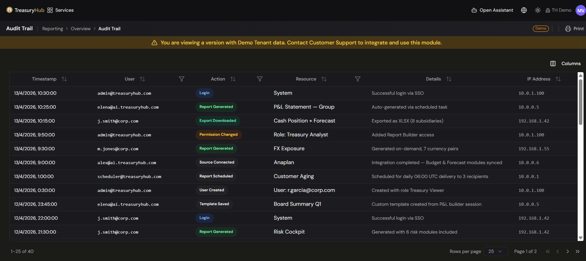
A per-record timeline in the detail panel follows one item end to end across modules.
Trace a transaction across systems
- From any event, use the linked reference to jump to the connected record in another phase
(for example from a journal entry to its source reconciliation, or forward to its ERP record).
- Follow the chain in either direction until you reach the point you need — the original bank
movement or the final ERP entry.
Filter and search the trail
- Use the column filters on User, Action, and Resource to narrow the log to the events
you need.
- Sort by Timestamp to work in chronological (or reverse-chronological) order.
- Trace by phase (ingestion, reconciliation, and, on older records, journal entry, approval and
export) using the end-to-end ID chain — see Trace a transaction across systems above.
Export the trail for an external audit
- Open the trail for the record or period you need.
- Choose the export option and select PDF or CSV.
- Hand the exported record to your auditors, or feed it into your GRC (governance, risk, and
compliance) tooling.
Tips & good practices
- Because the trail is append-only, treat it as your single source of truth for "who changed
what" — there is no hidden edit history to chase.
- When reviewing an AI agent's decision, check the recorded reasoning and confidence score to
understand why it approved or escalated an item.
- Agree your retention period with your auditors up front (many regulations expect several years;
seven or more is a common baseline) and confirm it is configured for your organization.
- Use cross-entity tracing for intercompany items so both sides of a transaction are reviewed
together.
Also in the audit trail
- Consolidated Transaction Timeline — a single unified view of every event for any transaction,
with phase and actor filters in one place.
- Compliance query API — programmatic access to the audit trail for external GRC tools.
11 · Accounting
Chart of Accounts & Rules Engine
Where to find it: there is no screen for posting rules. They were authored as PostingRule matching
rules, whose menu entry has been removed, and their output is the G/L posting history.
Who uses it: accountants, financial controllers, treasury operations.
Permissions required: CashManagement.TransactionsPosting · Read. See Roles & Permissions.
Overview
Your Chart of Accounts (CoA) is the list of general-ledger accounts your organization posts to.
A posting rule decided, for each transaction, which of those accounts a
posting should debit and credit.
Posting rules no longer run. The process that evaluated them has been switched off, so no
transaction is mapped to accounts and no posting is produced. Editing a posting rule, or adding one,
changes nothing.
Nothing has been deleted. Your posting rules and the postings they produced are kept, so you can
still see how each type of transaction was booked.
G/L posting — the rules engine included — is being rebuilt from scratch, together with
reconciliation, as its own project.
Key concepts
- Chart of Accounts (CoA) — the structured list of G/L accounts for a legal entity. Each account
has a code, a name, a type, and a currency.
- Account group — a level of the CoA hierarchy (groups and sub-groups) that organizes accounts.
- Multi-entity CoA — each company
can have its own chart, so a group with subsidiaries in different countries keeps separate
ledgers.
- Accounting standard — the framework a chart follows (for example IFRS, US GAAP, or a local
standard such as Spain's PGC).
- Posting rule — a condition-to-account mapping: when a transaction looks like this, post it to
these accounts.
- Rule priority — the order rules were evaluated in, so the most specific rule won when more
than one could apply.
How your existing posting rules read
A posting rule combines one or more conditions and names the debit and credit accounts for
the posting it produced. Conditions include:
- Transaction type — payment, collection, FX deal, fee, and so on.
- Counterparty — a specific bank, supplier, or customer.
- Currency or currency pair.
- Entity (company) — one subsidiary or all of them.
- Amount range.
- Tags / custom metadata.
When a transaction was processed, the rule with the highest priority whose conditions matched
decided the accounts. Reading an old posting alongside its rule tells you why it was booked the way
it was. The rules are kept exactly as they were last saved; none of them is evaluated any more.
What this means for you
- Account mapping now happens in your ERP, not in Treasury Hub. Treasury activity reaches your
ledger the way it did before Treasury Hub posted for you.
- A gap in the rules no longer matters. Nothing is posted, so nothing can be posted to the wrong
account or land in an exceptions queue.
- Keep your master data clean anyway —
companies, currencies, counterparties, and tags are used across the rest of the platform.
Tips & good practices
- Keep a copy of your rule set with your period-close file: it documents the accounting policy
behind every historical posting.
- When you reconcile the ledger one last time against Treasury Hub's postings, use the rules to
explain any entry your accountants query.
11 · Accounting
G/L Postings
Where to find it: the G/L Posting entry has been removed from Reporting › Operations, and its old
link now opens Reporting › Operations › Transactions. Your posting history is kept and stays readable
through the read-only transaction-postings endpoint of the Treasury Hub API.
Who uses it: accountants, finance team, treasury operations, auditors.
Permissions required: CashManagement.TransactionsPosting · Read. See Roles & Permissions.
Overview
A G/L posting is the accounting record a treasury transaction produced — the debit and credit
lines meant for your general ledger.
Treasury Hub no longer generates G/L postings, and no longer sends them to an ERP. The processes
that created postings, dispatched them, and tracked their status have all been switched off.
Postings can also no longer be approved or deleted; those actions answer an error.
Nothing has been deleted. Every posting ever created, its status history, and its link to the
underlying transactions are kept and remain readable.
G/L posting is being rebuilt from scratch, together with reconciliation, as its own project. This
page describes what your existing posting records mean, so you can read the history and hand it
over with confidence.
Key concepts
- Posting — the accounting entry created for a transaction, expressed as a debit and credit
account for the amount.
- PostingRule — the rule that generated a posting and decided which accounts it was booked to.
Posting rules are frozen: they no longer run. See Chart of Accounts & Rules
Engine and Matching Rules.
- Debit Acct / Credit Acct — the general-ledger accounts a posting was booked to.
- Posting status — where a posting stood when generation stopped.
What your posting records contain
Each posting record carries:
| Field |
Shows |
| Booking Date |
The date the posting was booked. |
| Company |
The legal entity the posting belongs to. |
| Account |
The account the underlying transaction relates to. |
| Debit Acct |
The general-ledger account debited. |
| Credit Acct |
The general-ledger account credited. |
| Amount |
The posting amount. |
| Matching Rule |
The PostingRule that generated the posting. |
| Remittance Info |
The remittance message carried by the transaction. |
| Status |
Where the posting stood in its lifecycle. |
Posting statuses
Statuses are frozen as they were when posting stopped — none of them will change on their own any
more.
| Status |
Meaning |
| Generated / Pending |
The posting was created but never confirmed in the ledger or ERP. |
| Posted |
The posting was recorded and confirmed in the ERP. |
| Mismatch / Exception |
The posting could not be matched or was rejected downstream. |
Any figures, account codes, or counterparties you see in demo screens are illustrative. Your
records hold your own transactions and your own chart of accounts.
What this means for you
- New treasury activity produces no accounting entries in Treasury Hub. Book it in your ERP as
you did before Treasury Hub posted for you.
- A posting left in Generated / Pending will stay there. It was never confirmed downstream;
treat it as an entry that did not reach your ledger.
- Changing a posting rule has no effect, because nothing runs the rules.
- Reconciliation itself is unaffected. Matching, approvals, and conciliations continue as
before; only the accounting entries that used to follow them have stopped — see Reconciliation —
ERP Posting.
Tips & good practices
- Take an extract of your posting history and keep it with your period-close file, so the record is
where your auditors expect it.
- Reconcile your ledger against the last Posted entries once, so you know exactly where Treasury
Hub's contribution to the ledger ends.
- Tell your accounting team the cut-off date, so nobody waits for entries that are not coming.
11 · Accounting
Journal Entries
Where to find it: there is no Journal Entries screen, and the G/L Posting entry has been removed from Reporting › Operations. The entries generated in the past are described in G/L Postings and stay readable.
Who uses it: accountants, financial controllers, treasury operations, approvers.
Permissions required: CashManagement.TransactionsPosting · Read to view; approval rights follow your role. See Roles & Permissions.
Overview
A journal entry (JE) is a complete, balanced accounting entry — its debit and credit lines
together — created for a treasury event. Where a posting is the accounting output
you view, the Journal Entries module is the workspace that generated entries from a workflow,
routed them through an approval flow, and exported them to your ERP.
Treasury Hub no longer generates accounting entries, no longer approves them, and no longer sends
them to an ERP. The processes behind each of those steps have been switched off; approving or
deleting an entry answers an error.
Nothing has been deleted. Every entry generated in the past, its status history, and its link to
the originating transactions are kept and remain readable — see G/L Postings.
G/L posting is being rebuilt from scratch, together with reconciliation, as its own project. The
rest of this page describes how entries were produced and approved, so you can read the history you
have.
Key concepts
- Journal entry (JE) — a balanced set of debit and credit lines for one accounting event, with a
reference, a date, the entity, and a source module.
- Journal entry generation — creating the entry from a completed workflow (a payment, an FX
deal, a loan disbursement, a reconciled item, and so on). This no longer happens.
- Approval workflow — the path an entry followed before it could be exported: who reviewed it,
at how many levels, and under what thresholds.
- Segregation of duties (SoD) — approval rules that prevent the same person from both creating
and approving an entry, a common regulatory requirement.
How journal entries were generated
Journal entries were the accounting step of the platform's standard workflow model — see
Core Concepts › Everything is a workflow.
No part of this lifecycle runs today; it explains the entries you already have:
Ingestion → Reconciliation → Journal Entry generated → Approval → ERP export → ERP matched
- A workflow completed in a module (for example a payment settled or an item was reconciled).
- An entry was generated, using your posting rules to pick the debit and
credit accounts. Posting rules are frozen: nothing runs them any more.
- The entry was validated — checked that it balanced and that its accounts mapped correctly.
- The entry was routed for approval (see below).
- The approved entry was exported to your ERP and, where possible, matched to an existing ERP
record. Nothing is exported today.
Journal entry statuses
An entry moved through these states. An existing entry stays in the state it reached, because
nothing advances it any more:
Draft → Pending Approval → Approved → Exported → Matched
│
├─ Rejected
└─ Escalated → Manual Review → Approved / Rejected
The approval workflow
Entries are no longer approved: there is no Accounting blotter to work them in, and approving or
deleting an entry answers an error. The flow entries went through was:
- Filter to entries Pending Approval.
- Select an entry to see its debit/credit breakdown, the accounts it maps to, and its source
transaction.
- Choose Approve or Reject. A rejection or override required a justification.
- Approved entries moved to Exported as they were sent to your ERP.
- Bulk approval cleared batches of low-risk entries at once.
Configuration
Because no entry is generated or approved, approval configuration changes nothing today. For
reference, and for the rebuild, approval workflows were described through natural-language prompts
(for example requiring dual approval above a set amount, restricting FX entries to the treasury
team, or routing small fee entries to a single approver). The dimensions were:
- Approval levels — single, dual, or n-level.
- Roles / users per level.
- Thresholds by amount, currency, transaction type, and entity.
- Segregation-of-duties rules.
- Exceptions and overrides, with a mandatory justification.
- Notifications and SLAs — per-channel alerts and time limits per approval level, with a
pending-entry dashboard showing aging and priority.
Tips & good practices
- See G/L Postings for what your existing entries contain and how to read them.
- An entry left at Pending Approval or Approved will stay there; it is not waiting on anyone.
- Make the accounting entry for new treasury activity in your accounting system until G/L posting
is rebuilt.
- Keep the record of your approval thresholds and segregation-of-duties rules with your auditors —
they describe the control framework the existing entries went through.
12 · Platform
Deployment, Availability & Continuity
Where to find it: platform-wide assurances — arranged with the Treasury Hub team and your contract.
Who uses it: IT, security, risk, and procurement teams evaluating or operating Treasury Hub;
useful assurance for treasurers and administrators.
Permissions required: none to read; deployment and continuity arrangements are set with the
Treasury Hub team.
Overview
This page explains, at a customer-assurance level, how Treasury Hub is delivered, how fast and
reliable it is, how your data quality is protected, and how your data is backed up and recovered.
It answers the questions IT and risk teams ask before and during a rollout — without going into
infrastructure internals. Specific figures below are platform targets; the exact commitments for
your organization are confirmed in your contract and design workshops.
Key concepts
- SaaS — Treasury Hub hosts and manages the platform in the cloud; you just sign in.
- On-premises — Treasury Hub runs inside your own infrastructure, for regulatory or compliance
requirements.
- Data residency — the region(s) where your data is stored, to meet local requirements.
- SLA (Service Level Agreement) — the performance and availability targets Treasury Hub commits
to.
- RPO / RTO — Recovery Point Objective (how much recent data could be lost in a disaster,
measured in time) and Recovery Time Objective (how quickly service is restored).
- DR (Disaster Recovery) — a standby copy of production that takes over if the primary fails.
Deployment models
Treasury Hub offers the same functionality and quality across delivery models — you choose the one
that fits your infrastructure and regulatory needs.
| Model |
Summary |
Managed by |
| SaaS (default) |
Multi-tenant cloud with logical isolation per organization; updates, patching, monitoring, and backups handled for you; onboarding in minutes. Multi-region for data residency. |
Treasury Hub |
| On-premises |
Runs inside your infrastructure and network. There are no public-facing interfaces; vendor support is via secure VPN; external data access flows through your API gateway. Treasury Hub ships signed release packages that you deploy. |
You (Treasury Hub provides releases, runbooks, and support) |
| Hybrid |
Sensitive data kept on-premises while selected AI/analytics services run in a secured cloud, with only authorized data replicated. |
Shared |
Environments
A typical delivery uses separate environments so changes are validated before reaching production:
Development and Testing (Treasury Hub), UAT for your functional sign-off (shared), and
Production plus Disaster Recovery (managed by Treasury Hub for SaaS, or by you for
on-premises).
Release management (on-premises)
- Signed releases — each release includes checksums and a digital signature so integrity can be
verified before deployment.
- Change management — releases are coordinated with your change-control process (CAB).
- Rollback — a documented rollback procedure covers post-deployment issues.
- Cadence — typically one planned release per month, aligned to your maintenance windows.
Treasury Hub is designed for high transaction volumes with responsive screens. Illustrative platform
targets:
| Area |
Target |
| Standard screens (balances, positions, transactions) |
≤ 2 seconds |
| Analytics queries (forecasts, risk, cross-entity reports) |
≤ 5 seconds |
| Full page load |
≤ 3 seconds |
| Interactive actions (clicks, filters, toggles) |
≤ 1 second |
| Search results |
≤ 2 seconds |
| Peak transaction throughput |
~10,000 transactions/min |
| Uptime target |
99.9% (≤ ~8.76 hours unplanned downtime/year) |
How this is achieved (functionally, not the internals):
- Scales out by adding capacity rather than relying on ever-larger servers, so performance holds
as your volumes grow.
- Heavy operations run in the background — bulk imports, report generation, and risk
calculations don't block the screens you're using.
- Redundancy and automatic failover keep the service available if a component fails.
- Continuous health checks and proactive alerting let issues be caught early.
- Planned maintenance windows are scheduled and communicated in advance.
⚠️ To be confirmed by Treasury Hub. The figures above are platform targets. Your committed SLAs
(uptime, response times, throughput) and any credits are defined in your contract.
Data quality & governance
Reliable treasury decisions depend on clean data, so Treasury Hub validates, cleanses, and enriches
data at every step from ingestion to reporting.
- Processing modes — real-time for critical items (bank statements, payments, alerts),
batch for large or scheduled datasets, and hybrid (data arrives immediately, full
enrichment runs in cycles).
- Validation on ingestion — data is checked against the expected schema and your business rules
(valid currencies, amount ranges, required fields, date formats), and referenced entities
(account, counterparty, currency) must exist. Items that fail go to an exception queue with the
reason, for review.
- Cleansing & normalization — duplicates are detected, and currencies (ISO 4217), dates
(ISO 8601), and BIC/IBAN are validated and standardized; counterparties and banks are normalized to
a master catalog.
- Enrichment — transactions are automatically categorized, tagged, and cross-referenced to
related entities (invoice → payment → reconciliation).
- Quality reporting — a quality score per data source, an exception dashboard with aging
and priority, trend analysis over time, and alerts when a source's quality drops below a threshold.
Data retention & privacy
- Retention policies are configurable by data type and regulation (e.g. 1, 3, 5, 7 years, or
custom).
- Right to erasure and data anonymization support GDPR (Art. 17) and equivalent local
regulations.
- Data classification tags sensitive data so appropriate controls are applied.
Backup, recovery & continuity
Your data is protected by automated backups, tested recovery, and disaster-recovery planning.
- Automated backups — on a configurable schedule (continuous transaction logs, daily full
snapshots, weekly full + archival), using incremental backups between full snapshots.
- Encrypted backups — all backups are encrypted at rest (AES-256); keys are held by you
(on-premises) or by Treasury Hub (SaaS).
- Geographic redundancy — copies are held in a secondary location to protect against local
disasters.
- Recovery objectives — typically RPO ≤ 1 hour and RTO ≤ 4 hours for production
(configurable by environment).
- Point-in-time and granular recovery — restore the database to any point within the retention
window, or restore specific items (a single tenant, table, or date range) without affecting the
rest of the system.
- Restore testing — restores are tested periodically (at least quarterly) with data-integrity
verification.
- Disaster recovery — a DR replica in a secondary site (on-premises) or alternate region (SaaS),
with continuous or periodic replication, planned DR drills (at least annually), a documented
failover procedure, and a post-incident report within 10 business days of a DR event.
Historical data
Older data moves through a lifecycle — Active → Warm archive → Cold archive → Deletion (after
legal retention) — to control cost while keeping archived data accessible for queries and audits
(with higher latency). Archival always respects minimum-retention regulations.
⚠️ To be confirmed by Treasury Hub. RPO/RTO, backup schedules, retention periods, DR drill
frequency, and who provisions/operates DR depend on your deployment model and are finalized in your
contract and design workshops. In on-premises deployments, some responsibilities (e.g. provisioning
and running the DR environment) sit with you, with Treasury Hub providing runbooks and support.
Tips & good practices
- Decide data-residency and deployment model requirements early — they shape onboarding and
your contract.
- Agree RPO/RTO targets with your risk team up front so backup and DR are sized to your tolerance.
- Use the data-quality dashboard to spot sources sending poor data before it affects reports.
- Participate in DR drills and review the post-incident report so your team knows the recovery
playbook.
Hybrid deployment
- Hybrid deployment — sensitive data on-premises with selected AI/analytics services in a
secured cloud.
12 · Platform
Preferences — Theme & Language
Where to find it: the top bar (theme toggle and language selector), also on the Login page.
Who uses it: everyone.
Permissions required: none — available to all users.
Overview
You can personalize how Treasury Hub looks and reads. Switch between a light and dark theme to
suit your environment, and change the interface language. These are personal preferences: they
affect only your view, not other users or your organization's data, and Treasury Hub remembers them
between visits on the same device.
Key concepts
- Theme — the platform's visual appearance: light mode or dark mode. All screens,
backgrounds, borders, and text adapt to your choice.
- Language — the language the interface labels, buttons, and messages are shown in. English
and Spanish are the supported languages.
- View state — remembered display settings such as grid filters, grouping, chosen columns, and
display currency. These are separate from theme/language but are also persisted for you.
How to use it
Switch between light and dark theme
- In the top bar, click the theme toggle (the sun / moon icon).
- The interface immediately switches between light and dark mode; every screen re-renders in the
new theme.
- Your choice is remembered and reapplied the next time you open Treasury Hub on this device.
You can also set the theme from the Login page before you sign in, using the same toggle.
Change the interface language
- In the top bar, click the language selector.
- Choose English or Spanish.
- All interface text re-renders in the selected language immediately.
- Your choice is remembered and reapplied on your next visit on this device.
The language selector is also available on the Login page, so you can sign in in your preferred
language.
Where your preferences are saved
- Theme and language are stored in your browser on the device you're using. Because they're
saved per device, if you sign in from a different computer or browser you may need to set them
again.
- If your browser can't save the preference (for example, storage is disabled), your choice still
applies for the current session but won't be remembered next time.
- View state (filters, grouping, columns, display currency) is likewise remembered between
visits, so your grids and dashboards come back the way you left them. See
Navigation & Your Workspace.
Tips & good practices
- Missing translations fall back to English, so you'll never see an untranslated blank — you may
occasionally see an English label within another language while translations are completed.
- Preferences are per device: set them once on each computer you regularly use.
- Theme and language are purely visual — switching them never changes your data, permissions, or the
numbers you see.
12 · Platform
Security & Compliance
Where to find it: applies platform-wide · access management in Admin Console › User & Agent Management
Who uses it: everyone signs in; administrators manage access and review the audit trail; security, risk, and compliance teams review the platform's posture.
Permissions required: signing in requires no permission; managing users, roles, and access requires AdminAndSettings.UserManagement · Admin (see Roles & Permissions).
Overview
Treasury Hub is built so that only the right people can reach your treasury data, and every action
they take is recorded. Access is controlled by single sign-on, multi-factor authentication,
and role-based permissions; your data is isolated to your organization; and everything is
encrypted in transit and at rest. This page explains, in plain terms, how you sign in and out,
how access is controlled, and the security and compliance assurances the platform provides.
Key concepts
- Tenant (organization) — your company's private space in Treasury Hub. All your data is scoped
to your tenant and never mixed with another customer's. See Core Concepts.
- Single sign-on (SSO) — signing in through your organization's identity provider instead of a
separate Treasury Hub password. Treasury Hub uses Azure AD B2C and supports corporate
directories such as Azure AD, Active Directory / LDAP, Okta, and Google Workspace.
- Multi-factor authentication (MFA) — a second verification step (e.g. a code or authenticator
app) on top of your password, so a stolen password alone can't grant access.
- Role-based access control (RBAC) — what you can see and do is decided by the roles you are
assigned. See Roles & Permissions.
- Session — your active signed-in period. Sessions time out after inactivity and end when you
sign out.
- Audit trail — the record of who did what, when, and the outcome, kept across the platform.
Before you start
- Your administrator sets up your account and roles in the Users & Roles
before you can sign in.
- If your organization uses SSO with its own identity provider, that connection must be configured
first — ask your administrator.
- MFA may be required by your organization's policy; if so, have your authenticator method ready.
How to use it
Sign in
- Open Treasury Hub in your browser. If you're not signed in, you're taken to the Login page.
- The login screen shows your organization's branding, a Sign in with Azure B2C button, a
language selector, and a theme toggle.
- Click Sign in with Azure B2C. You're redirected to your organization's secure sign-in flow.
- Enter your corporate credentials and complete MFA if prompted.
- On success you're returned to Treasury Hub — to your Home / Dashboard, or to the page you
originally requested.
Sign out
- Click your avatar in the top bar.
- Select Logout.
- Your session is cleared and you're returned to the Login page.
Automatic sign-out: if your session expires or is left idle beyond the configured timeout,
Treasury Hub signs you out and returns you to the login page to protect your data. Simply sign in
again to continue.
Understand what you can access
- Your menu and available actions adapt to your roles and permissions — if you don't see a
module or button, it's likely hidden by your permission level.
- Access can be narrowed further by legal entity / company, bank account, and
payment approval level. See Roles & Permissions.
Configuration
These are managed by administrators (and, for SSO/MFA, in coordination with the Treasury Hub team):
- Users, roles, and groups — invite users, assign roles, and set entity/account scope in the
Users & Roles.
- SSO connection — link your corporate identity provider (Azure AD, Active Directory / LDAP,
Okta, Google Workspace) so access follows your directory.
- MFA policy — require multi-factor authentication for users per your security policy.
- Session policy — session timeout, renewal, and concurrent-session handling.
- User lifecycle — users can be activated, suspended, or deactivated; the history of
permission changes is preserved for audit.
How your data is protected
Treasury Hub applies enterprise-grade protection across every layer:
- Data isolation — each organization's data is logically isolated to its own tenant; sessions
are scoped so there is no data leakage between organizations.
- Encryption in transit — all communication is encrypted (TLS 1.3).
- Encryption at rest — sensitive stored data is encrypted (AES-256).
- Data masking — sensitive data is masked in non-production environments.
- Secrets management & key rotation — API keys, integration credentials, and certificates are
held in a secure vault, and encryption keys and credentials are rotated regularly.
- Perimeter protection — network segmentation, firewalls, intrusion detection, and DDoS
protection guard the platform.
- Security event logging — sign-in attempts, access violations, and security incidents are
logged comprehensively.
Compliance posture
Treasury Hub is designed and operated to align with recognized security and data-protection
standards, including:
- ISO/IEC 27001 — information security management.
- SOC 2 Type II — controls for security, availability, and processing integrity.
- GDPR (EU 2016/679) — European data protection, including data-subject rights.
- Local data-protection regulations — e.g. Ghana's Data Protection Act (Act 843), for
deployments where local law applies.
⚠️ To be confirmed by Treasury Hub. Treat the specific certifications above as the platform's
target/assurance posture. Which certifications are formally certified vs aligned, and their
current validity, should be confirmed with the Treasury Hub team and your contract, as they can
vary by deployment and region. Data-residency options are described in
Deployment, Availability & Continuity.
Audit & accountability
- Most actions in Treasury Hub are modeled as workflows that record who did what, when, and
the outcome — see Core Concepts.
- Reconciliation keeps a full audit trail of every match; approvals record the approver and
decision.
- Administrators can review the history of permission and user-lifecycle changes.
Tips & good practices
- Keep MFA enabled even when it's optional for internal users — it's the single biggest protection
against account compromise.
- Sign out when leaving a shared device rather than relying on the idle timeout.
- Review roles regularly and apply least privilege — grant the lowest permission level that lets
each person do their job.
- Use suspend/deactivate promptly when someone changes role or leaves, so access follows your
directory.
12 · Platform
White-Label & Partner Branding
Where to find it: enabled and configured with the Treasury Hub team · self-service brand
management via the Partner / Brand Kit portal (where provisioned).
Who uses it: partners who resell or embed Treasury Hub under their own brand; partner
administrators who manage the brand kit.
Permissions required: partner administrator access to the brand-kit portal (arranged with
Treasury Hub). See Roles & Permissions.
Overview
White-label lets a partner deliver Treasury Hub under their own brand — logo, colors,
typography, and a custom web address — so end users experience the platform as the partner's own
product. Every visible touchpoint, from the login screen to emails and PDF reports, reflects the
partner's brand, while the underlying treasury functionality, data model, and security stay the
same for everyone.
Key concepts
- Partner — an organization that resells or embeds Treasury Hub under its own brand.
- White-label — presenting the platform under the partner's brand rather than Treasury Hub's.
- Brand kit — the collection of a partner's brand assets and settings: logo, favicon, colors,
typography, custom text (app name, welcome message, email sender), and custom domain.
- Custom domain — the partner's own web address for the platform (for example
treasury.partner.com), served securely over HTTPS.
- Theme inheritance — the partner's brand kit is applied on top of Treasury Hub's default
design; anything the partner doesn't override keeps the platform default.
- Multi-tenant — each partner (and each partner's clients) is isolated in its own tenant, so
branding and data never cross between partners. See Core Concepts.
What can be branded
The partner's brand can be applied consistently across the experience:
| Area |
Touchpoints |
What's customized |
| Authentication |
Login, MFA, password reset |
Logo, background, welcome text, favicon, colors |
| Global UI |
Navbar / sidebar, favicon & page title, loading/splash, error pages |
Logo, primary/secondary colors, typography, browser-tab name and icon |
| Communications |
Transactional emails, in-app notifications, push / SMS |
Header/footer branding, colors, custom sender name and reply-to address |
| Documents |
PDF reports, CSV/Excel exports, invoices & statements |
Branded headers/footers, corporate colors, partner metadata |
| Technical |
Custom domain, OAuth consent screen |
Partner domain with HTTPS, partner brand in authorization flows |
What is not customized
To keep the platform consistent and safe, some things are the same for everyone and can't be
white-labeled:
- Business logic and financial calculations — the treasury engine behaves identically for all.
- Data structures and APIs — endpoints and data shapes are common across all deployments.
- Security and compliance — the same standards apply to every tenant (see
Security & Compliance).
How partner onboarding works
Bringing a partner live follows a guided, largely self-service flow:
- Initial setup — Treasury Hub (or the partner, via the admin panel/API) creates the partner's
tenant, assigns the custom domain (with the required DNS record), and enables the modules covered
by the partner's license.
- Brand kit upload — through a self-service portal, the partner uploads its logo (SVG and PNG),
favicon, colors (primary, secondary, accent), and typography (a common web font or a custom font
file). Uploads are checked automatically for format, size, and resolution.
- Preview & QA — the partner reviews the fully branded experience in a sandbox pre-loaded
with demo data, seeing every touchpoint (login, dashboard, emails, PDFs) and iterating safely
without affecting production.
- Validation — automated checks confirm the brand kit is production-ready: color contrast
(WCAG AA) for readability, responsive rendering across desktop/tablet/mobile, and that all
required assets are present. A pass/fail report is produced.
- Activation — the custom domain and its security certificate are provisioned and the partner
is switched live. If a problem is detected, the change can be rolled back immediately.
- Monitoring — after go-live, the partner has a dashboard with usage metrics and automated
health checks on the custom domain, including alerts before a certificate is due to expire.
The demo target of "partner live in under 48 hours" is illustrative — actual timing depends on DNS
and certificate provisioning and on the partner's review.
Managing your brand kit
Partner administrators can manage branding in two ways:
- Self-service portal — upload assets, set colors and fonts, preview in the sandbox, and
activate — no Treasury Hub intervention needed for routine changes.
- Brand Kit API — for partners who prefer to manage branding programmatically, a REST API is
available to read and update the brand kit, upload or remove assets, generate a temporary preview,
run validations, and activate or roll back a version. Every change is versioned, so
you can revert to any previous brand kit instantly.
Practical guardrails to be aware of:
- Versioning & rollback — each change creates a new version; rollback restores a prior version
completely.
- Preview links are temporary (they expire after a set period) so you validate before going live.
- Asset and readability limits apply (for example, minimum color contrast for accessibility and
sensible file-size limits) and are enforced by the automatic validation step.
Tips & good practices
- Prepare a complete brand kit up front (vector logo, favicon, exact color values, chosen font) to
move through onboarding quickly.
- Use the sandbox preview to check every touchpoint — especially emails and PDFs — before
activating.
- Choose color combinations that pass the contrast check so screens stay legible for all users.
- Rely on versioning: activate confidently knowing you can roll back instantly if needed.
Sub-client branding
- Sub-client branding — a further level of brand inheritance so a partner's own clients can be
branded beneath the partner.